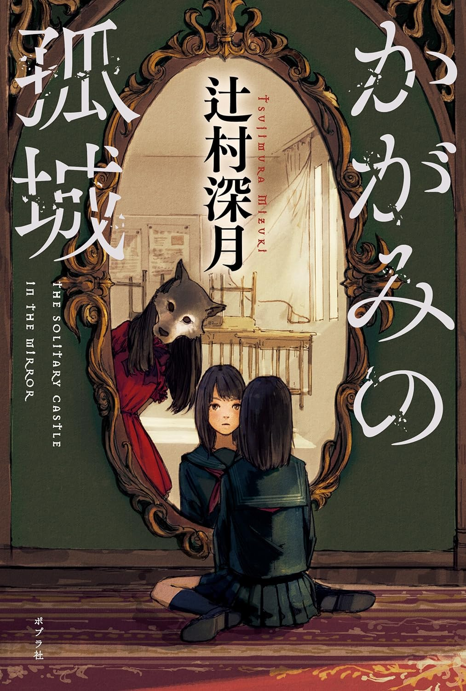
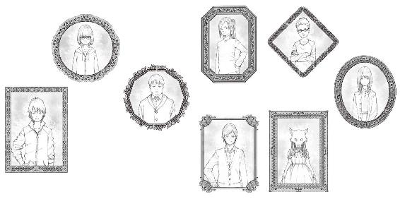
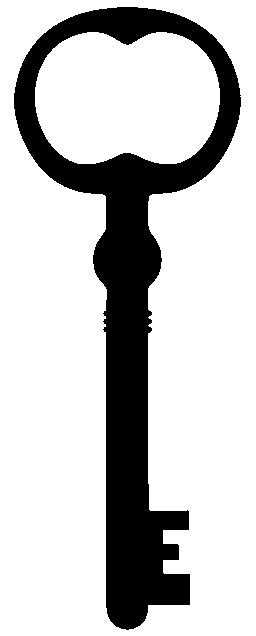

著／辻村深月
①ただ一つだけぽつんと立っている城。
②敵軍に囲まれ、援軍の来るあてもない城。
『大辞林』
たとえば、夢見る時がある。
転入生がやってくる。
その子はなんでもできる、素敵な子。
クラスで一番、明るくて、優しくて、運動神経がよくて、しかも、頭もよくて、みんなその子と友達になりたがる。
だけどその子は、たくさんいるクラスメートの中に私がいることに気づいて、その顔にお日様みたいな眩しく、優しい微笑みをふわーっと浮かべる。私に近づき、「こころちゃん、ひさしぶり！」と挨拶をする。
周りの子がみんな息を吞む中、「前から知ってるの。ね？」と私に目配せをする。
みんなの知らないところで、私たちは、もう、友達。
私に特別なことが何にもなくても、私が運動神経が特別よくなくても、頭がよくなくても、私に、みんなが羨ましがるような長所が、本当に、何にもなくても。
ただ、みんなより先にその子と知り合う機会があって、すでに仲良くなっていたという絆だけで、私はその子の一番の仲良しに選んでもらえる。
トイレに行く時も、教室移動も、休み時間も。
だからもう、私は一人じゃない。
真田さんのグループが、その子とどれだけ仲良くしたがっても。その子は、「私はこころちゃんといる」と、私の方を選んでくれる。
そんな奇跡が起きたらいいと、ずっと、願っている。
そんな奇跡が起きないことは、知っている。
カーテンを閉めた窓の向こうから、移動スーパーの車が来た音が聞こえる。
せかいじゅう どこだって
わらいあり なみだあり
みんな それぞれ たすけあう
ちいさなせかい
ディズニーランドの、こころの好きなアトラクション、イッツ・ア・スモールワールドの曲。『小さな世界』が車についた大きなスピーカーから響き渡る。こころが小さい時から同じ曲で、車はやってくる。
曲が途切れて、声が聞こえる。
『毎度、お騒がせしております。ミカワ青果の移動販売車です。生鮮食品、乳製品、パンにお米もございます』
国道沿いのスーパーまでは距離があって車がなければなかなか行けないせいか、こころの小さい頃から、週に一度、うちの裏にある公園にミカワ青果の車がやってくる。近所に住むお年寄りや小さな子どもをつれたお母さんが、この曲を聞いて買い物にやってくる。
こころは一度も買い物に行ったことはないけれど、お母さんは行ったことがあるようで、「三河のおじさんももう年だから、あと何年来てくれるかわからないね」と言っていた。
昔、このあたりにまだ大きなスーパーがない頃には本当に便利で、もっとたくさんの人が買い物に来ていたけれど、今はもうそうでもない。大きな音楽を響かせるスピーカーがうるさいと苦情を言う人もいて、騒音問題になっている、とも。
騒音、とまでは思わないけど、こころもこの音を聞くと、否応なく、今が平日の昼間だということを意識する。意識させられてしまう。
子どもが笑う、声が聞こえた。
平日午前中の十一時というのがこういう時間なんだということを、こころは学校を休むようになって初めて知った。
ミカワ青果の車は、こころにとって、小学校の頃から、夏休みや冬休みに見かけるものだった。
こんなふうにカーテンを引いて、部屋で、身を硬くしている平日に見るものではなかった。去年、までは。
こころは息を殺して音を絞ったテレビを観ながら、その灯りが外に漏れていなければいいな、と思う。
ミカワ青果が来なくても、こころの部屋の向こうに見える公園には、いつも近所の若いお母さんたちが子どもを遊ばせに来ている。色とりどりのバッグをハンドルのところにかけたベビーカーがベンチのそばに並んでいるのを見ると、「ああ、午前中もあとちょっとだ」と思う。十時から十一時くらいにかけて集まり始めた親子たちは、十二時にはお昼ごはんのために、みんないったんそこからいなくなる。
そうしたら、少し、カーテンが開けられる。
カーテンの布地の淡いオレンジ色を通し、昼でもくすんだようになった部屋は、ずっと過ごしていると、罪悪感のようなものにじわじわやられる。自分がだらしないことを責められている気になる。
最初はそれで心地よかったものが、だんだんと、やっぱりいけないんだと思うように、なぜか、誰に言われたわけでもないのに、なってくる。
世の中で決まっているルールには、全部、そうした方がいい理由がきちんとある。
朝はカーテンを開けなさい、だとか。
学校には、子どもはみんな行かなければならない、だとか。
おととい、お母さんと見学に行ったスクールに、今日から、本当に行ける気がしていた。
だけど、朝起きたらダメだった。
いつものようにおなかが痛い。
仮病じゃない。本当に痛い。
どうしてかわからなかった。朝、学校に行く時間になると、仮病じゃないのに、本当におなかや、時には頭も痛くなるのだ。
無理しなくていい、とお母さんには言われていた。
だから、そこまで構えずに、こころは朝、二階の自分の部屋から、ダイニングに下りていった。
「お母さん、おなか痛い」
ホットミルクとトーストを用意していたお母さんが、こころの声を聞いて、露骨に表情をなくした。黙った。
こころを見ない。
まるでこころの声が聞こえなかったように俯いて、湯気を立てるマグカップを食卓に運ぶ。そのまま、うんざりしたような声が、「痛いってどういうふうに？」と聞いた。
仕事用のパンツスーツの上からかけた赤いエプロンを不機嫌そうに脱ぎ捨てて、椅子にかける。
「いつもと同じ」
小声で答える。言い終えないうちに、お母さんが続けた。
「いつもと同じって、昨日までは平気だったんでしょ？ スクールは学校じゃないのよ。毎日じゃないし、来てる人数も学校より少ないし、先生もいい人そうだったでしょう。行くって、こころが言ったんでしょう。どうするの、行かないの？」
矢継ぎ早に責められるように言われると、ああ、お母さんは行って欲しいんだとわかる。だけど違う。
行きたくないんじゃない、仮病じゃない。本当におなかが痛い。
こころが答えないでいると、お母さんがいらいらしたように急に時計を気にし出す。「ああ、もうこんな時間」と舌打ちをする。
「どうするの？」
足が固まったようになって動けない。
「行けない」
行かないんじゃなくて、行けない。
精一杯気持ちを込めて呟くように言うと、お母さんが目の前で大きなため息をついた。自分まで体のどこかが痛いように顔をしかめた。
「……今日だけ行けないの？ それともずっと行かないの」
答えられない。
今日は行けないけど、次にスクールがある日にまたおなかが痛くなるかどうかなんてわからない。仮病じゃなくて、本当に、痛いからただ行けないだけなのに、こんな理不尽なことを聞かれるなんてと悲しくなってくる。
答えないままお母さんを見ていると、お母さんが「もういい」と立ち上がった。感情にまかせるように、朝ごはんの載った皿を持ち上げ、トーストを流しの隅にある三角コーナーに放り込んだ。「牛乳も飲まないのね、せっかくあたためたのに」と言うなり、返事も聞かずに流しに捨てる。台所にミルクの湯気がふわっと大きく上がって、すぐに水音とともに消えた。
本当は後で食べようと思っていたけど、答える暇もなかった。
ドアの前でパジャマ姿のまま動けないこころを無視するように「ちょっとどいて」と通り抜けたお母さんが、奥のリビングに消える。すぐに、どこかに電話する声が聞こえてきた。「ああー、すいません。安西ですけれども」と、それまでの不機嫌を根こそぎ拭ったような、よそ行きの声が聞こえてくる。
ええ、そうなんですよ。おなかが痛いと言い出して。申し訳ありません。見学の時にはあの子の方が行きたいって乗り気だったんですけど、はい、はい、本当にご迷惑をおかけして──。
お母さんがこころをつれていってくれた「スクール」は、「心の教室」というところだった。
入り口にかかった看板の上に、「子ども育成支援」、という文字が見えた。
学校のような、病院のような雰囲気のある古い建物の二階から、子どもの声がしていた。小学生くらいだろうか。
「ほら、こころ、行くよ。緊張するね」
そう言って笑ったお母さんは、こころより緊張しているように見えた。こころの背をぽん、と押す。
ここの名前が「心の教室」なのが、なんだか申し訳なかった。
こころと、同じ名前。
お母さんだって気づいているだろう。お母さんは、ここに自分をつれてくるために娘にこの名前をつけたわけじゃないのに。思ったら、胸がぎゅっと痛んだ。
不登校、と呼ばれる子どもが学校の他に通う場所があるということを、こころは、自分がこうなって初めて知った。小学校の頃、こころたちのクラスで、学校に来ない子は一人もいなかった。みんな多少のズル休みは一日か二日、していたかもしれないけど、とにかく、ここに来るような子は一人もいなかった。
スクールで迎えてくれた先生たちも、みんな自分たちの「心の教室」を「スクール」と呼んでいた。
こころは、慣れないスリッパを履いたつま先がスースーして落ち着かず、通された部屋で椅子に座ったまま、足の指をぐっと丸めた。
「安西こころさんは、雪科第五中学校の生徒さんなのね」
確認のように、先生が優しそうに笑う。若い、子ども番組の歌のお姉さんのような雰囲気の人だった。胸についたひまわり形の名札に、誰か子どもが描いたらしい彼女の似顔絵と「喜多嶋」という名前が書いてある。
「はい」と答える声が、我ながら小さく不明瞭だった。自分でも、どうしてこんな声しか出せないんだろうと思うけど、そうなってしまう。
喜多嶋先生がにっこり笑った。
「私もよ」
「はい」
それ以後、会話が途切れた。
喜多嶋先生はキレイな人で、短い髪が活発な印象だった。それに目がとても優しい。好感を持ったけど、この人が今はもう卒業して、あの学校の中学生でないことが場違いに羨ましかった。
こころは、雪科第五中に〝通ってる〟なんて、とても言えない。まだ、入学したばかり。それなのに、最初の四月しか、あそこに行っていないのだから。
「電話したから」
元通り不機嫌そうな声に戻ったお母さんが、ダイニングに戻ってくる。立ちっぱなしのこころを見て、また顔をしかめ、「おなかが痛いなら寝たら」と呼びかけた。
「スクールで食べるように作ったお弁当は、じゃあ、家で食べるのね。そこ、置いておくから食べられそうなら食べて」
こころの目を見ず、自分の朝の支度を始める。
──お父さんがいてくれたら少しは庇ってくれたかもしれないのに、と苦しくなった。共働きの両親のうち、お父さんの会社の方が通勤するのに遠いから、その分朝が早い。こころが起きる頃にはもういないことがほとんどだ。
そのままでいると怒られるかもしれないから、黙ったまま階段を上る。背後から、追い打ちのように、ため息が聞こえた。
気がつくと、三時だった。
つけっぱなしのテレビが、昼下がりのワイドショーに変わっている。芸能人のスキャンダルやニュースを終えて通販のコーナーに移っていて、こころははっと、ベッドから起きる。
どうしてこんなに眠いのかわからないけど、学校にいる時よりも、家にいると眠気に襲われることが多い。
目をこすり、よだれを拭って、テレビを消し、一階に下りる。洗面台の前に立って顔を洗うと、おなかが空いていた。
ダイニングに入り、お母さんが残していったお弁当を開く。
チェックの布に包まれたお弁当のリボンをほどく時、お母さんはたぶん、これを包む時には、私がスクールでこれを食べると思っていたんだろうな、と思う。思うと、胸がきゅっとなって、お母さんに謝りたくなってくる。
お弁当の箱と別に、小さなタッパーが上に載っていて、開けると、こころの好きなキウイフルーツが入っていた。お弁当も、こころの好きな三色そぼろごはんだった。
それを一口、食べて、俯く。
見学の時、楽しそうだと思ったあの場所にどうして自分が行けなかったのかわからなかった。朝は、ただ今日だけおなかが痛くて行けないのだと思っていたスクールは、今日が台なしになったせいで、もう次に行ける気がまったくしなくなっていた。
スクールには、小学生も中学生も来ていた。
みんな、とても〝学校に行けない子〟には見えなくて、普通そうな子ばっかりだった。特別暗かったり、容姿が悪かったりするわけじゃない。周りに外されたりする子には見えなかった。
ただ、来ていた中学生はみんな、制服を着ていなかった。
自分より少し年上に見える女の子二人組が机をくっつけ合って、「ああー、やだぁ」「でもそれってさ」と話す様子は、こころの通っていた中学校となんら変わらなくて、それを見たら、またおなかの下の方がきゅっと痛みそうになったけど、でも、その彼女たちもまた学校は休んでいるのだということがとても不思議だった。
喜多嶋先生に案内される間、「先生、マサヤが叩いたー」とやってきた子もかわいくて、ここに通ったら、この子たちと一緒にゲームをしたりするのかな、と想像してみた。少し想像したら、本当にそうできる気もした。
お母さんは、こころが見学してくる間、最初に通された部屋でそのままここの責任者の先生と待っている、と言っていた。
お母さんは何も言わなかったけれど、こころを見学につれてくる前、何度か自分一人で見学に来ていたらしい。他の先生たちが、お母さんに「あ、どうも」と初めてじゃない挨拶をしたことで、すぐわかった。
こころを見学に誘うお母さんが、不器用に「こころちゃん、ちょっとお話があるんだけど」と慣れない様子で身構えていたことを思い出す。お母さんはお母さんなりに、精一杯、気を遣っていたんだと思う。
お母さんの待つ部屋に入る時、中から、責任者の先生のものらしい、声が聞こえた。
「小学校までのアットホームな環境から、中学校に入ったことで急に溶け込めなくなる子は、珍しくないですよ。特に、第五中は学校再編の合併のあおりを受けて大きくなった中学校ですからね。このあたりの学校の中でも特に生徒数が多いですし」
深呼吸する。
──傷ついたりする話じゃないんだ、と自分に言い聞かせる。
確かに、中学校に入ったことで、それまで二クラスだった環境がいきなり七クラスに増えて、最初は戸惑った。教室に前からの知り合いがほとんどいなくなった。
でも、違う。
私は、だから〝溶け込めなかった〟わけじゃない。そんな、生ぬるい理由で、行けなくなったわけじゃない。
この人は、私が何をされたか知らないんだ。
こころの横の喜多嶋先生が、気まずそうな表情も何もせず、毅然と「失礼します」とドアを開ける。向き合って座っていた年配の先生とお母さんが、一斉に入ってきたこころたちを振り返る。
お母さんの手がハンカチを握っているのを見て、泣いていたんじゃないといいな、とこころは思った。
テレビがついていると、観てしまう。
観てしまうと、何をしたわけじゃないのに、一日何かして過ごしたような気になる。
でもその内容はたとえ筋のあるドラマでさえ、観た後で思い出せないようなことも多くて、結局何をしていたのか、と思ううちに、一日が終わる。
主婦の人が街角でインタビューされていて「子どもが学校に行ってる間に」と何気なく一言告げるだけで、学校に行けていない自分はダメなやつだと非難されている気持ちになる。
こころのクラス担任の伊田先生は、若い男の先生で、今も時折、家を訪ねてくる。こころは会う時もあれば、会わない時もある。先生が来ると、お母さんに「先生来たよ、会う？」と聞かれる。
きっと会わなければならないのだろうと思っていたのに、こころが「あんまり、会いたくない」と口にした日、お母さんは怒らなかった。「いいよ。じゃあ、今日はお母さんだけが会うね」と言って、先生をリビングに通した。
「すいません、今日はちょっと……」とお母さんが言うと、先生も「いいですよ。大丈夫です」と、こころと会うのを諦めるし、こころを怒らない。
自分のそんなわがままが通ると思っていなかったこころは戸惑った。先生の言うことも、親の言うことも、大人の言うことは聞かないといけないとずっと思ってきたのに、あっさりと希望が通って、それにより、今が非常事態なんだとわかった。
私は、みんなに気を遣われている。
たまに、小学校の頃の同級生だった沙月ちゃんや、仲良しだった墨田さんが来てくれることもある。今はクラスが違うけど、それも、先生に言われてそうしているのかもしれない。学校を休んでいることがかっこ悪くて、こころはそういう時も断ってしまう。
本当は会って、聞いてほしいことがたくさんある気もしたけれど、気を遣われているのが気まずくて、そうなってしまう。
お弁当を食べている間に、電話が鳴った。出ない方がいいかな、とそのままにしていると、留守電に切り替わった。
『もしもし？ こころちゃん？ お母さんです。いるなら、出てね』と聞こえてきた。
お母さんの声だ。優しく、落ち着いている。こころはあわてて受話器を取った。
「もしもし」
『あ、こころ？ ごめん、お母さんだけど』
朝とは違う、穏やかな声だった。電話の向こうでお母さんが笑う。どこにいるんだろう。仕事を抜けてきたのか、周りは静かだった。
『出ないから心配したよ。大丈夫？ お弁当食べてる？ おなかはもう痛くない？』
「大丈夫」
『本当？ まだもし痛いなら病院に行った方がいいかな、と思って』
「大丈夫」
『お母さん、今日、早く帰るようにするから。──大丈夫。こころちゃん、まだ始まったばかりだよ。これからだよ、がんばろう！』
お母さんの声が明るく呼びかけてくる。こころはその声を聞きながら、ただ「うん」と頷いた。
今朝、あれだけ感情的になっていた後で、誰かに何か、言われたんだろうか。会社で誰かに相談したんだろうか。だけど、お母さんは自分ひとりで反省してかけてきたような気もする。
がんばろう、というお母さんの期待に応えられるかわからないのに、こころは頷いてしまう。
四時を過ぎたら、もう、一階にいてはいけない。
二階のカーテンも、朝と同じようにまた閉める。
その音を待つ間の緊張感は、毎回、ものすごい。何回聞いても慣れることがない。気にしないように、音を小さくしたテレビを観てやり過ごしたいけど、それでも、無意識に待ってしまう。
そろそろかな、と思っていると、家の前についたポストに、カタン、と手紙が差し込まれる音が聞こえた。
その音を聞くと、「あ、東条さんが来た」とわかる。
同じクラスの東条萌ちゃん。
転入生で、お父さんの仕事の関係で手続きする時期が遅れたとかで、四月の新学期が始まって少しした頃になって、クラスに加わった。
とてもかわいい子で、運動神経もよくて、席は、こころの隣。同性の自分でもドキドキするような、細い手足に長い睫の東条さんは、フランス人形のようで、ハーフじゃないらしいけど、まるでハーフのような、日本人離れした整った顔立ちをしていた。
先生が、彼女をこころの隣の席にしたのは理由があった。彼女が引っ越してきた家が、こころの家の二軒隣だったからだ。近所同士仲良くしなさいということらしかったし、こころもそうできたらいいと思った。実際、転校してきて最初の二週間は、東条さんも「こころちゃんって呼んでいい？」と聞いてくれて、学校の行き帰りも一緒だった。
家にも遊びに行かせてもらった。
東条さんの家は、こころの家とほぼ同じ間取りの家が東条さんの家仕様になっている、という印象だった。壁や柱の素材や、天井の高さまで一緒なのに、玄関の棚に置かれているものや、かけられている絵や、電灯の種類や絨毯の色まで全部、違う。同じ造りの家な分、その差がなおさら際立っていた。
東条さんの家はおしゃれで、玄関に入ってすぐに、お父さんの趣味だといういろんな童話の絵がかかっていた。
東条さんのお父さんは大学の先生で、児童文学を研究している人だということだった。そのお父さんがヨーロッパで買ってきたという、昔の絵本の古い原画がたくさん飾られていた。『赤ずきん』や、『眠れる森の美女』。『人魚姫』や『七ひきの子やぎ』、『ヘンゼルとグレーテル』といったこころも知っている絵本の一場面。
「変な場面ばっかでしょ」と、東条さんは──その頃、こころが萌ちゃんと呼んでいた、あの子は言った。
「うちのパパ、この画家のコレクターなんだ。昔のグリムとか、アンデルセンの絵本の挿絵とかをよく集めてる」
東条さんは「変な場面ばっかり」と言ったけれど、そんなことはなかった。『七ひきの子やぎ』は狼が家に踏み込んできて子やぎみんなが逃げ惑う有名なシーンだし、『ヘンゼルとグレーテル』だって、ヘンゼルがパン屑を捨てながら歩くシーンだ。魔女はいないけれど、それだけであの話の絵だってちゃんとわかる。
同じ広さの家のはずなのに、東条さんのおしゃれな家は、こころの家よりなぜかずっと広く感じられた。
リビングに本棚があって、英語やドイツ語をはじめ、いろんな言語の本がたくさん並んでいた。
「これはデンマーク語」
東条さんが一冊を手に取って教えてくれて、こころは仰天する。「かっこいい」と素直に口にする。英語なら少しはわかるけど、デンマーク語なんてまったく未知の言語だ。東条さんは照れたように少しはにかんで「アンデルセンがデンマークの作家なんだよね」と教えてくれた。
「私も読めないけど、雰囲気とか気に入ったなら貸してあげるよ」と言ってくれて、とても嬉しかった。デンマーク語で書かれた本は、タイトルが読めなくても、こころも知ってる『みにくいアヒルの子』なんだと表紙の絵でわかった。
「あと、ドイツ語の本も多いよ。これは、グリムがドイツの人だからだけど」
東条さんが言って、胸がさらにときめく。グリム童話には知っているものも多くて、外国語の絵本はどれもおしゃれでかっこよく見えた。
「今度うちにも遊びに来てね。何もないけど」
こころもそう言って、近いうちに本当にそうなると思っていた。思っていたはずだった。
それが、どうしてああなってしまったのか。
東条さんは、こころから、離れていった。
真田さんたちに何か言われたのだろうということは、容易にわかった。
こころが東条さんに「萌ちゃん」と話しかけた時、東条さんが困ったように、「何？」と上げた顔の表情。
そこに、はっきり、「迷惑だ」という色が滲んでいた。みんなの前で──特に、真田さんたちの前で話しかけないでほしい、とはっきり、顔に出ていた。
どの部活に入るかの見学に、一緒に行こうという話をしていた。
だけど、約束していたはずの放課後に、東条さんは、真田さんたちと一緒に、さっさと教室を出て行った。真田さんが、「あーあ、ぼっちの人ってかっわいそー」と、廊下に出てから、こちらを見ずに放った声が、こころの方まで聞こえてきた。
ぼっち、は、ひとりぼっちのことなんだと、周りからのざわついた視線を受け止めながら、のろのろ、帰り支度をする途中で、気づいた。
へえ、ひとりぼっちのことって、ぼっちって言うんだ、と、そのことだけ何度も何度も頭の中で繰り返して、誰とも目を合わせずに、外に出た。どの部活に見学に行っても、彼女たちの姿があるんじゃないかと思ったら、それだけでもう見学に行ける気がしなかった。
──どうして、自分があの人たちに目をつけられてしまったのか。
無視される。
陰口を言われる。
他の子にも、こころと仲良くしない方がいいよ、と話をされる。
笑う。
笑う笑う笑う。
こころを、笑う。
おなかが痛くて、閉じこもったトイレの個室で、真田さんが外で笑う声が聞こえる。もうすぐ休み時間が終わってしまうけれど、あの子たちがいるから外に出られない──。泣きそうな気持ちで思い切って外に出ると、すぐ隣の個室から、「あ」という短い声とともに真田さんが出てきた。こころの顔を見て、ニヤニヤ笑う。
遅いから何してるか見てやろーよ、と、横の個室から、彼女が身を屈めて自分を覗こうとしていたんだということを、後から、偶然様子を見ていた別のクラスメートに教えられて、恥ずかしさに顔が真っ赤になった。屈んでいるところも、下着を下ろしているところも見られたかもしれないと思ったら、心の中で何かが壊れる音が聞こえた。
こころにそのことを教えてくれた子もまた、口では「ひどいね」と言いながらも、「私が言ったって、絶対に言わないで」とこころにしつこく口止めして去っていった。
呆然として、悔しくて、立ち尽くした。
どこにも安らげる場所がない。
そんなことが繰り返され、そして。
──決定的な〝あれ〟が起きて。
こころは、学校を、休んだ。
家が近い東条さんは、こころが学校に行かなくなってからも、毎日のように学校からのプリントや手紙を届けに来る。
とても、事務的に。
仲良くなれたらいいと思ったし、仲良くなれそうだったのに、プリントをポストに入れるだけの東条さんが、そこから一歩進んでこころの家のベルを鳴らすことはない。ただ義務を果たすようにプリントだけ入れて去っていく東条さんの姿を、こころは何度かこっそり、自分の部屋の窓から見送った。
青緑色のセーラー服の襟。臙脂色のスカーフ。四月には自分も着ていた制服。それを、ぼんやりと眺める。
家が離れているからか、東条さんが、他の友達と一緒でなく、一人でいることに少しだけ、救われた気持ちになる。
東条さんが、本当は先生たちから、自分に会ってくるように、話を聞いてくるようにと言われているかもしれないことについては、──そう言われてるのにもかかわらず、彼女がそうしないでいる可能性については、考えないようにする。
カタン、と音がして、萌ちゃんが帰る。
こころの部屋には、大きな姿見があった。
自分の部屋をもらってすぐにつけてもらった、ピンク色の石が枠を囲った、楕円形の鏡。そこに映る自分の顔の、顔色が悪い気がして、こころは泣きたくなる。見ていられなくなる。
東条さんが帰ったのをそっと、カーテンを持ち上げて確認してから、こころはゆっくりベッドに倒れ込んだ。音のほとんど聞こえないテレビの放つ光が、今日はやけに眩しい。
学校を休むようになって少しして、それまで持っていたゲーム機を、お父さんに片づけられた。
「学校に行かないで、しかもゲームがあったら、この子はもう勉強なんかしなくなるぞ」と言われ、テレビも片づけられてしまいそうだったのを、お母さんが「もう少し様子を見たら」と止めた。
あの時は、お父さんのことをひどいと恨んだりもしたけど、今、こころには、自信がない。お父さんの言う通り、ゲームがあったら、一日中、ゲーム漬けの日々になっていただろうという気もする。今だって、勉強はしていない。
中学校、という新しい場所の勉強は難しいだろう。もうきっと、ついていけない。これから、どうしたらいいのか、わからない。
顔に当たる光が、本当に眩しい。
テレビを消してしまおうと、ふっと、何気なく顔を上げたその時、こころは「え？」と息を吞んだ。
テレビは、ついていなかった。
知らないうちに、電源を切っていたらしい。
その代わりに部屋で光っているもの、それは入り口近くにある鏡、だった。
「え」
呆気に取られ、つい、深く考えずに近づいてしまう。光り輝く鏡は、内側から発光しているようで、目が開けていられないほどのまばゆさだった。中に、何も映っていないように見える。
手を伸ばした。
伸ばした後で、ひょっとして熱かったら、と今更ながら気づいたが、表面は前と同じ、ひんやりとした感触だった。ただ、問題は温度ではなかった。ふっと、その手に少し力を入れた──次の瞬間。
「きゃっ！」
こころは、悲鳴を上げた。
手のひらが、そのまま、中に吸い込まれる。鏡の硬い感触が、そこにない。まるで水を押したような手応えが返ってくる。
そのまま、体が倒れた。鏡の向こうに引きずり込まれる。
嫌だ、怖い、と思った次の瞬間、体が光に吞まれた。本格的に眩しさに目をつぶると、体がどこか冷たい場所を通り抜けるような感覚があった。
お母さん、と呼ぼうとして、だけど、声が出ない。
体が、どこか遠く、上なのか、まっすぐなのか、わからないけど、引っ張り上げられていくような感覚に、包まれる。
「ねえ、起きて」
倒れた床の、冷たい感触を、まず右頰に感じた。
頭の奥が沁みるように、キンキン痛い。口の中と喉が渇いている。顔を上げられないこころの横で、また、声がした。
「ねえ、起きてってば」
女の子の声、だった。まだ小学校低学年くらいのものに聞こえる。
こころには、身近にそんな小さい子はいない。首を振り、ゆっくり瞬きして、体を起こす。声の方向を見て、そして、こころは声にならない声とともに息を吞んだ。
異様な子が、そこに立っていた。
「起きてくれた？ 安西こころちゃん」
狼の、顔。
縁日で売られるような、狼の面をつけた女の子が立っている。
ただ、変なのはそれだけじゃない。そんなものをつけているにもかかわらず、彼女はまるで、ピアノの発表会か、誰かの結婚式ででも着るような──レースがたくさんついたピンク色のドレスを着ていた。まるで、リカちゃん人形の服みたいな。
それに、今、私の名前を──？
混乱とともに、え、え、と周りを見回す。
どこなんだろう、ここは。エメラルド色に輝いた床が、まるで絵本で見る『オズの魔法使い』か何かのような印象だ。
まるで、アニメか舞台の世界に入り込んだような。そう思い、はっと、頭の上に伸びる影に気づいて、顔を上げる。そして、また空気の塊を盛大に喉に吸い込んだ。口元を押さえる。
城が、建っている。
立派な門構えの、まるで、西洋の童話で見るような、城が。
「おっめでとうございまーす！」
目を見開くこころの前で、声が響き渡った。面のせいで、表情も、口の動きもわからないけれど、どうやらそれは、この、狼面の少女の口から出たものらしかった。
彼女が続ける。
「安西こころさん。あなたは、めでたくこの城のゲストに招かれましたー！」
啞然とするこころの目の前で、城の鉄格子の門が開く、ゆっくりとした音が聞こえた。
頭の中が、真っ白になって──。
次に思ったのは、逃げなくちゃ、ということだった。
怖かった。
狼面の少女が、表情がわからない顔で、こっちを見上げている。──夢か幻だったら次に見た瞬間に消えていてくれるんじゃないかと願ったけど、消えない。いつまでも、こころを見上げたままでいる。
ゆっくり、後ろを振り返ると、鏡が光っていた。
こころの部屋にある姿見と、同じではないけれど、同じくらいの大きさ。縁を色とりどりのドロップみたいな石が飾ったその鏡に向けて、こころは走り出した。多分、あの鏡とこころの部屋が繫がっている。あそこをくぐれば、元に戻れる。
城を背にして、無言で一目散に駆けだしたこころの腰に、ばっと、狼面の少女が後ろからしがみつく。タックルしてくる。
「逃げるな！」
つかまった弾みに、エメラルド色の床に、顔からびたん、と転ぶ。少女が言った。
「逃げるな！ こっちは朝からずっとやってんだ。六人ずっと面接してきて、お前が最後だ。もう四時だし、時間がないんだよ」
「知らないよ！」
声が出た。
夢中だったし、年下の女の子相手だったから、つい乱暴な言い方になった。頭がぐらぐら、混乱している。
腰にしがみついた彼女を躍起になって振り払おうとしながら、後ろを見上げると、視界に迫るように、まだ城がある。
ディズニーランドのシンデレラ城みたいだ。ファンタジーの世界から飛び出してきたみたい。
これは夢じゃないのかな、と思うのに、夢と明らかに違う。腰をぐっと摑んでくる女の子には重みがある。思ったら、改めてぞっとした。這うようにして、光を放つ鏡に向かう。
狼少女が叫ぶ。
「なんだよ、気になんないのか？ 目の前に城だぞ、こんな達者にしゃべる子どもだぞ。今から冒険が始まるかも、とか、異世界ファンタジー？ とか、期待しないのか。子どもらしい想像力のひとつも働かせてみろ！」
「知らないよー！」
泣きそうな声で答える。
よくわからないけど、今ならまだ間に合うと思った。
引き返せる。なかったことにできる。
混乱が増しながらも、頭が徐々に冷静になってしまうのが怖かった。これ、夢じゃない。この子、明らかに私の頭じゃ考えつかないことしゃべってる。
彼女がさらにぎゅっと、こころの腰を摑む。息ができなくなるほどおなかを締め上げられて、こころはぎゃっと声を上げた。
「願いが叶うんだぞ！ 平凡なお前の願いをなんでも一つ叶えてやるっつってんだ！ 話、聞け！」
つってんだ、って言われても、今初めて聞いたよ、と思うけど、苦しくて答えられない。小さい子相手だから手を抜いてたけど、これ、本当にヤバイ。こころは思い切り体を振って、狼少女の頭を押す。お面の上に覗いた髪の毛が柔らかく、ぎゅむっと摑んだ頭が小さくて、ああ、本当に子どもの感触だ、と驚きながら、意を決して、彼女を押し、腕から逃れた。
這うようにして、彼女を振り切り、立ち上がって光る鏡に触れる。手がまた、来た時と同じく、水の中に沈むように、すっと鏡の向こうに吸い込まれた。
「待てっ！」
という声が聞こえて、息を止める。目を閉じて、こころは再び、体ごと鏡の向こうを押し、光の中に飛び込んだ。
「このっ……。──明日は来いよ！」
その声を最後に、耳の奥が、ぼーんと大きく震えて、いろんな音が、遠ざかる。
瞬きすると、目の前に見慣れた自分の部屋があった。
テレビにベッド、小さい頃から窓辺に並ぶヌイグルミ、本棚、机、椅子、ドレッサー。
ばっと顔を向けると、姿見は、そこにあった。
光っていない。
呆然と目を見開く自分の顔が映っているだけだ。
心臓が、バクバク、激しく打っていた。
今のは一体なんだったんだろう、と思うと同時に、反射的に鏡に伸ばしかけた手を、あわてて引っ込める。
今はただ、自分と、見慣れた部屋を映すだけの鏡。
だけど、その向こうから、誰かが自分を見ているんじゃないか。──あの狼少女の腕が伸びて、今にも自分を捕まえに来るんじゃないかと思ったら怖かった。
けれど、鏡は静かだ。ただ、こちらを映すだけで、何も起きない。
テレビの上の時計に目をやって、はっとする。このところずっと楽しみに見ていたドラマの再放送がもう始まっている時間。いつの間に──と思う。時間が進んでいる。
時計が進んでいるだけかも、とテレビをつけると、ドラマはもう始まっていた。時計が狂っているわけじゃない。現実に時間が経っている。
──今の、何？
黙ったまま、唇を嚙む。姿見から、だいぶ距離を取って、鏡を眺める。
今のは、本当にあったことだろうか。
パジャマの腰にはまだ誰かに力一杯しがみつかれた、あの感覚が残っている。
思い出して、おっかなびっくり、腕をぴんと伸ばして距離を取りながら、おそるおそる、姿見を壁の方に裏返す。そして、ぱっと離れた。
指が微かに震えていた。
「今の、何？」
今度は声に出した。そうして、改めて、自分がさっきたくさん、誰かに怒鳴ったことを思い出した。普段は、人と話していないから、たまに出すひとり言の声さえ掠れているのに、今は声が咽喉に絡まない。掠れてない。家族以外の誰かに向けて声を出すことなんて、ひさしぶりだった。
あれは、夢だろうか。そういえば、昼間に見る夢という意味の、白昼夢という言葉をどこかで見たことがあるけど、そういうことって、普通にあるんだろうか。
私、おかしくなっちゃったんだろうか。
少し落ち着いて考える余裕が出てきたら、その可能性に気づいて、今度は別の不安に胸の底が痛くなる。どうしよう、どうしよう、どうしよう。もし、こんなふうに一日家にいるせいで、幻を見るようになってしまったのだとしたら。
──願いが叶う、と言っていた。
混乱しているのに、なぜか、そのことを不意に思い出してしまう。
──平凡なお前の願いをなんでも一つ叶えてやるっつってんだ！
幻だとしたら余りにも鮮明に、耳が声を再現する。目が、裏返した姿見を、気になってどうしても追いかけてしまう。
その時だった。
「ただいまー」
玄関で、お母さんの声がした。
テレビを観ていたことがバレたら怒られる。こころはあわててリモコンに手を伸ばし、テレビを消す。「お帰りなさい」と顔を上げた。さっき、電話で「早く帰るようにする」と言っていたけど、今日は本当に早い。
一階に下りる時、やっぱり気になって姿見をもう一度見たけど、裏返した鏡に光る様子はもう、なかった。
帰ってきたお母さんは、優しく、機嫌がよかった。
「こころ、今日、こころの好きな、皮から作る餃子にするから手伝ってくれる？」と話しながら、両手に持っていたスーパーの袋を玄関に下ろす。コーヒー牛乳に、ヨーグルトに、魚肉ソーセージ。こころが昼間家にいるせいで、お母さんが「前より冷蔵庫の中味が減るのが早くて大変」とこぼしていたものの多くだ。
「お母さん……」
「ん？」
スーツ姿のお母さんが、後ろできれいに髪を留めていた銀色のバレッタを外しながら、靴を脱いで台所に向かう。
さっき見たもののことを話したかったけど、その後ろ姿を見たら、言えなくなる。機嫌がいいところを邪魔したくない。それに第一、信じてもらえないだろう。実際に見たこころだって信じられないのだから。
「……なんでもない」
言いかけて、言葉を止めたこころを、お母さんが振り返る。スーパーの袋を手に、こころが中味を冷蔵庫にしまおうと台所に向かうと、お母さんが「大丈夫よ」と言った。こころの背中を、とん、と軽く押す。
「スクールのことなら、お母さん、怒ってないから」と言われて、あ、と思い出した。お母さんは、こころがそのことを気にして、謝ろうとしたと思ったのだろう。
「最初だもん。ただ、あそこはいいところだと思うから、こころが行きたくなったらいつでも言ってね。こころが見学で案内してもらった、喜多嶋先生、だっけ？ あの先生も、今日電話したら、『いつでも来てね』って言ってたよ。いい先生だね」
「……うん」
さっき見たものの衝撃が強すぎて、スクールを休んだことを、すっかり忘れてた。
思い出して、今度はそのことで憂鬱になる。お母さんの声から、言葉とは裏腹に、本当はあそこに行ってほしいと思っていることがぴりぴり伝わってきて、責められている気持ちになる。
「次にあるのは、金曜日だって」
と言われて、こころはまた小さな声で「うん」と頷いた。
お母さんから連絡があったのか、お父さんもいつもより早く、晩ごはんの時間に間に合う頃に家に帰ってきた。
スクールのことには一切触れず、「お、今日は餃子かー」と嬉しそうに食卓を囲む。
「お父さん、覚えてる？ こころ、小さい頃、皮だけしか食べなかったの」
「覚えてる、覚えてる。中味を出して捨てるから、それ全部俺が食べてたんだよな」
「そうそう。だから私も皮を手作りするようになったのよね。中を食べてもらえないなら、せめてこっちに手間をかけようって」
二人が話すのを聞きながら、こころが白いごはんをなかなか食べ進めずにつついていると、お父さんが「こころも覚えてるか？」と聞いてくる。──覚えてるわけない。その話は、餃子を食べるたびに何十回も聞かされてきたけど、親の話でしか知らない。
「覚えてない」
そっけなく答える。こんなに食べられないって言っているのに、お母さんはいつもこころのお茶碗にごはんを多く盛りすぎる。
この人たちは、私にいつまでも、餃子の皮しか食べない子どもでいて欲しかったんだろうか。
──今みたいに学校に行けない子になる、前のままで。
夜寝る時、鏡がまた光ったらどうしよう、と心配だったけど、裏返した鏡から、光が零れる様子はなかった。
ほっとして、だけど、視界の片隅で、やっぱり気になってしまう。ベッドに入り、横になって目を閉じてからも、何度か顔を姿見に向けた。
自分が何かを期待しているみたいだ、と眠りに落ちる前の、ぼんやりした頭で考える。狼少女から「冒険が始まるかも、と期待しないのか」と聞かれたけど、正直言うと、少し──思った。特別なことが始まるかも、と確かに期待した。
『ナルニア国物語』を思い出した。
家のクローゼットが別の世界への入り口になる、有名なあのファンタジー。憧れないわけがない。
逃げるべきじゃなかったろうか。自分はひょっとして、すごくもったいないことをしたのかも。でも、どうせ不思議な世界に案内されるなら、狼じゃなくて、アリスみたいなウサギがいいな……。
怖いと思ったり、逃げたり、だけど期待したり、自分が本当はどうなってほしいと思ってるのかわからない。だけど、鏡が光らないことで、急に残念な、惜しいことをしたような気になってくる。
もしも──。
もしも、また鏡が光ることが、仮に、あったら。
その時はもう一度だけ、中にまた入ってもいいかもしれない。
そんなことを考えながら、とろんと、溶けるように眠りに落ちた。
翌朝になっても、鏡は光らなかった。
朝起きて、そういえば、昨日何かすごいことがあったはずだ、とぼうっと考え、その後で、こころははっとして壁の方に向けた姿見を見る。
昨日よりは少し大胆になって、おそるおそる、元通りこちらに向けたけど、中には髪に寝癖がついたパジャマ姿のこころが映っているだけだった。
いつもの通り朝ごはんを食べて、お母さんが仕事に出かけるところを見送り、食器を洗って、部屋に戻る。気持ちはまだ鏡を気にして、そわそわしていた。学校を休むようになってから、普段は着替えたり着替えなかったりだったパジャマを今日は着替え、髪もきちんととかす。
鏡が再び光ったのは、そうやって身支度をすっかり終えた、九時頃だった。
昨日とまったく同じ様子に、鏡が、太陽を受ける水たまりみたいにキラキラ、光る。
こころはごくりと息を吞み込み、ゆっくりと、深呼吸する。噓みたいだけど、本当だ。手を伸ばして、すっと、鏡の中に手を入れる。押すと、押しただけ体が中に吞まれていく。
怖い、とは、相変わらず、まだ少し思っていた。
だけど、ドキドキもしていた。視界が黄色く、白く、吞まれていく。
昨日と同じ、エメラルドグリーンの床と、城の前の門を想像したけど、眩しさが晴れて、うっすらと戻ってきた視界は、階段と、大時計、だった。
目を、瞬く。
これまた、海外のドラマや映画で観るような、お屋敷の入り口、という感じだ。玄関を入ってすぐにあるような大広間のホール。
大きな窓と、その窓から左右対称に延びた階段。アニメのシンデレラで、彼女が駆け下りるような、かっこいい、絨毯の敷かれた階段。
階段の上には、部屋ではなく、ただ大時計が置かれた張り出し廊下がある。普通の二階建ての建物とは違って、この大階段は時計のところに行くためだけにあるようだ。
正面にある、大きな時計の中で、太陽と月が描かれた振り子が揺れている。
直感する。
ここは、昨日見た〝城〟の中だ。
階段のところに、自分以外に何人か、人の姿が見えた。瞬きして、それから、目を見開く。彼らもまた、やってきたこころを驚いたように見ていた。
自分と同じ、中学生くらいの子どもたち。
一、二、三、四、五、六──こころを入れて、全部で七人。
「来たな」
と、声がした。
目の前に、ぴょんぴょんと弾むように歩きながら、狼少女がやってくる。昨日と同じ、お面とドレス。表情が見えないまま、こころの前に立つ。
「昨日は逃げたくせに、来たな」
「あの……」
自分の他にも、同じくらいの他の子たちがいるせいで、今日は昨日ほど彼女のことも怖くなかった。男の子もいるし、女の子もいる。中には、俯いたままゲーム機っぽいものを手にしてる男の子もいる。眼鏡の子もいるし、よく日焼けした子も──と、一人の顔を見て、こころの手に、ぎゅっと力が入った。
時計のすぐ下の壁に、もたれかかるように立った男の子が、ものすごく、整った顔立ちをしていた。着てるのはパジャマみたいなジャージなのに、芸能人みたいにかっこいい。
ただそれだけのことに、こころはあわてて、見てはいけないものを見たような気がして顔を伏せた。
「こんにちは」と別の方向から声がして、そちらを見ると、一人の女の子が微笑んでいた。明るく、快活そうで、背が高い。髪を上の方でポニーテールにしていた。
戸惑うこころに、「私たちも、みんな、今来たばかりなの」と伝える。
「あなたが昨日、逃げ出したって聞いて、今日は逃げないように、ここで、みんなして待とうって、この子に言われて──」
「この子？」
視線の先に、狼少女がいる。「〝オオカミさま〟と呼べ」と彼女が胸を張って言う。
「はいはい」と微笑んだままのその子が、「〝オオカミさま〟に言われて」と言い直す。
「みんなで待ってたの。七人揃わなきゃ、ダメなんだって」
「逃げたのはお前だけだ」
少女──〝オオカミさま〟が言う。
「一度に集合させたら混乱するかもと思って、もったいなくも、昨日の朝からずっと一人ずつ呼び出して、こっちが説明してやってるっていうのに、最後の最後で逃げやがって。手間をかけさせるな」
「あの、ここ……、何なんですか」
自分が注目を浴びていることにドギマギしながら、こころが〝オオカミさま〟に尋ねると、彼女が「ふん」と鼻を鳴らした。
「それを説明しようとしたら、お前が愚かにも逃げたんだよ。反省しろ」
「私たちも昨日聞いたばかりでよくわかってないんだよ。状況はあなたと同じ」
ポニーテールの彼女が、優しく説明してくれる。同い年くらいに思ったけど、その口調に、「あ、この人たぶん年上だ」とわかる。ものすごく落ち着いていて、大人っぽい。
「願いが叶う城なんだって」
別の、高くて耳にキンと響く声がした。声優みたいな、日常聞くには微かに違和感のある声だ。
顔を向けると、眼鏡をかけた女の子が、右隅の階段の一段目に座っている。髪をおかっぱみたいにしていて、着ているベージュのパーカーとデニムに女の子らしさが薄かった。
「その通り！」
一際大きな声で、〝オオカミさま〟が叫ぶ。驚いたことに、その途端、耳鳴りのように「オーン」という遠吠えのような声が、二重に聞こえた。
それを聞いた途端、足がすくんだ。
びくっと体を引くこころの横で、他のみんなも立ちすくんだように目を見開いて〝オオカミさま〟を見る。どうやら、こころ以外にも全員に聞こえたらしい。驚くこころたちを意に介さぬ様子で、彼女が続ける。
「この城の奥には、誰も入れない、〝願いの部屋〟がある。入れるのは一人だけ。願いが叶うのは一人だけだ、赤ずきんちゃん」
「あ、赤ずきんちゃん？」
なんだそれ、と思いながら尋ねる。さっき、あの狼然とした遠吠えを聞いた後で、赤ずきんちゃんと呼ばれると、小さな女の子相手なのに、妙に気持ちが怯んでしまう。「お前らは迷える赤ずきんちゃんだろうが」と彼女が言った。
「お前たちには今日から三月まで、この城の中で〝願いの部屋〟に入る鍵探しをしてもらう。見つけたヤツ一人だけが、扉を開けて願いを叶える権利がある。つまりは、〝願いの鍵〟探しだ。──理解したか？」
こころは黙ってしまう。
他の子も、互いにそろそろ顔を見合わせて、しばらく口をきかなかった。
理解したわけではなく、圧倒されて。むしろ疑問だらけで何をどう聞けばいいかわからなくなって、そうなった。全員がそう思っているのが、空気で伝わってくる。
そんなこころたちに、〝オオカミさま〟が、また「互いの顔色を窺うな！」と叫んだ。
「自分が聞かなくても、誰かが何か聞いてくれるんじゃないかって期待するのはよくないぞ。何か言いたいことがあったら直接言え！」
「じゃあ、聞くけど」
案の定、口を開いたのは、さっきこころに話しかけてくれた、ポニーテールの活発そうなあの子だった。
「なんで、そんなことが起こるの？ 願いが叶うって、どうして？ 昨日も聞いたけど、なんで、そんなものに私や──、ここにいる子たちが呼ばれたの？ それに、ここはどこ？ っていうか、現実？ あなたは誰？」
「うわー」
言いたいことがあったら直接言え、と言ったのは自分なのに、彼女の矢継ぎ早な質問に〝オオカミさま〟が耳を塞いだ。──お面についてる狼の耳じゃなくて、人間の、自分の耳の方を。
「夢がないな。自分が物語の主人公格に選ばれたことを無邪気に喜んだりしないのか」
「いや、喜ぶ喜ばないじゃなくて」
ポニーテールの子に代わって、別の、男子が言う。こころがここに来てからずっと左の階段の真ん中あたりに座って、ゲーム機をいじってた子だ。声が大きく、分厚いレンズの向こうの目つきが悪い。
「単純に意味がわかんないっつってんの。昨日から急に家の鏡が光って、ここと繫がって。こっちだって混乱してる。きちんと一から説明してよ」
「ふふん。ようやく口をきき始めたな、男子」
〝オオカミさま〟が笑う。
「男子は女子に比べて打ち解けるのに時間がかかるからな。女子が早々にお互いに話し出すっていうのに、だいぶ出遅れたな。精々がんばれ」
〝オオカミさま〟がバカにするように言って、男の子が不機嫌そうに眉間に皺を寄せ、彼女を睨む。〝オオカミさま〟は動じない。「定期的に選んでおるのだよ」とお年寄りみたいな言い方でわざとらしい咳払いをした。
「お前たちだけじゃない。これまでも何回か、迷える赤ずきんちゃんをこうやって定期的にこの城に招待してきた。──願いが叶った赤ずきんちゃんが過去にも大勢いる。選ばれたお前らはラッキーだ」
「──帰っていい？」
階段の上段に座って、さっきから黙っていた別の男の子が立ち上がった。ひょろっと背の高い、静かそうな男の子だった。色の白い顔の、鼻の頭のあたりにそばかすが散るのを見て、『ハリー・ポッター』に出てくるロンみたいだなぁと思う。
「帰るな！」
〝オオカミさま〟が言うと同時に、また「アオーン」という遠吠えが聞こえて、空気がびりびり、激しく震える。立ち上がった男の子も、目の前に空気の塊を受けたように胸を反らして、そのまま、立ちすくんだ。
「最後まで説明させろ」と〝オオカミさま〟がみんなを──お面のせいで、表情がわからない顔で、睨む。
「ここに来るか来ないかは、説明を全部聞いてから考えろ。いいか、まず、城の中へは、お前らが来る時に使った鏡で出入り可能。この間は門の外にあったが、今度からはこの広間に出るようにした。──逃げ出すヤツがいるからな」
彼女がこころの方を見て、また逃げたくなる。みんながそれに合わせて自分を見るのがいたたまれなかった。
「城が開くのは、今日から三月三十日まで。それまでに鍵を見つけなければ、その日を以て鍵は消滅し、お前らももうここへは入れない」
「み、見つかったら？」
初めて聞く声がして、〝オオカミさま〟が声の方向を見る。こころも顔を向けると、見られることに耐えられないように、大袈裟に「ひいっ」と悲鳴を上げた男の子が、階段の手すりの陰に隠れた。──小太りの男の子の丸い手が、おそるおそると言った様子に階段の端から覗く。おどおど、先を続けた。
「見つかって、誰かが願いを叶えたら、もう鏡とここは繫がらなくなるの？」
「〝願いの部屋〟が開いた時点で、お前たちのこのゲームはおしまいだ。その場合は、三月三十日を待たずして、もうこの城は閉じる」
〝オオカミさま〟が頷く。
「ちなみに、毎日城が開くのは、日本時間の朝九時から夕方五時まで。だから、五時までには鏡を通って必ず家に帰ること。これは絶対守らなきゃならないルールで、その後まで城に残っていた場合、お前らには恐ろしいペナルティーがある」
「ペナルティー？」
「シンプルな罰だ。狼に食われる」
「え」
ほぼ全員が、同じように口を開ける。視線が〝オオカミさま〟に集まる。こころもそうなった。「噓でしょう？」と聞きたくて、だけど、さっきから何度か聞いている遠吠えに足がすくんだことを思い出すと、それもできない。
食われるって、つまりそれは、あなたが食べるってこと？
誰も何も聞かない、ひんやりと冷たい沈黙が場を支配していく。──考える時間が少しできたことで、その時、こころは気づいた。初めて、ある可能性に思い当たる。
昨日、〝オオカミさま〟はこころに向けて「もう四時だし時間がない」と言った。戻った時には、テレビでいつも観ていたドラマがもう始まっていて、オープニングが見られなかった。部屋にかかった時計の時間が進んでいた。──つまり、ここで過ごす時間は、鏡の向こうでも、現実に進んでいるのだ。
城が開いているのは、九時から五時。そして、期間は三月三十日まで。
それってなんだか学校みたい、と思ったことで、気がついた。
黙ったまま、こころは、この場に揃う〝オオカミさま〟を除く全員の顔を、順に見る。
こころ。
ジャージ姿のイケメンの男の子。
ポニーテールのしっかり者の女の子。
眼鏡をかけた、声優声の女の子。
ゲーム機をいじる、生意気そうな男の子。
ロンみたいなそばかすの、物静かな男の子。
小太りで気弱そうな、階段に隠れた男の子。
──全部で、七人。
タイプがまるで違うけど、現実にこの時間、時が、鏡の向こうで進んでいるなら──。
ポニーテールの子の、あの問いかけを思い出す。「どうして、自分たちが呼ばれたのか」。それはこころにもわからないけれど、少なくとも一つだけ、自分たちには共通点がある。
この子たち、みんな、こころと同じで学校に行っていないのだ。
「あの、その、ペナルティーの内容についてだけど」
次に声を上げたのは、今度もポニーテールのあの子だった。
狼に食われる。
衝撃的なペナルティーの内容を明かした〝オオカミさま〟を、彼女の声が合図になって全員で眺める。
ポニーテールの子は、戸惑うような表情は相変わらずだけど、こころよりはよほど落ち着いてきたように見える。
「食べられるっていうのは文字通りの意味で？」と彼女が続けた。
〝オオカミさま〟が頷いた。「そりゃもう、頭から丸のみ」。
「ただし、童話よろしくお母さんを呼んできて腹かっさばいて、かわりに石を詰めるとかやめろよ。充分に気をつけるように」
「あなたが食べるの？」
「ご想像におまかせするが、巨大な狼が出てくることになっている。──大きな力がお前たちに罰を与える。それが一度始まってしまうと、誰にもどうにもできない。私にも」
〝オオカミさま〟が全員の顔を見回す。
「それと、誰か一人がペナルティーを受ける場合は、他の人間も連帯責任だからな。一人が帰らずにいた場合は、その日、城に来てた他の奴らも全員、戻れなくなるから気をつけるように」
「他のメンバーも全員、食べられるってこと？」
「まあ、そういうことだ」
〝オオカミさま〟が澄ました様子で答える。
「ともあれ、時間は必ず守れ。城が開いている時間以外にこそこそ一人で、〝願いの鍵〟を探すような真似は誰にもできない。理解するように」
〝オオカミさま〟が言うと、だんだんと、お面の狼の口が動いてしゃべっているような気がしてくる。
「会ったばかりなのに、連帯責任なの？」
高い声が聞いた。眼鏡でおかっぱの、あの女の子のものだ。
「まだお互いのこともよくわからないのに、そこは信頼し合わなきゃダメってこと？」
「そうだ。だからせいぜい仲良くしろ。よろしくな」
よろしくな、と言われても──、とまた沈黙が落ちる。
「〝オオカミさま〟も、城が開いてる間は私たちといるの？」
勇気を出して、こころは初めて自分から質問をする。〝オオカミさま〟がくるっと向きを変えてこっちを見て、まだ、反射的にひっと身がすくむ。
「いたりいなかったりだ。常にいるわけでもないが、呼ばれたら出てきてやってもいい。お世話係兼お目付役のようなもんだと思え」
それはまたずいぶん横柄な態度のお世話係だ。
別の質問が出た。
「三月三十日ってのは、間違いじゃない？ 三月は三十一日までのはずだけど」
その声は、それまで一人、何も言葉を発さないでいた、ジャージ姿の男の子のものだった。こころが内心で「イケメン」と思ったあの子だ。涼しい目元がこころの好きな少女漫画に出てくる男の子と似てる。
〝オオカミさま〟が首を振った。
「訂正はしない。城が開いている期間は三月三十日までだ」
「それは、なんでそうなんだよ？」
彼が尋ねた。
「何か意味でもあるの」
「特にない。三月三十一日は、強いて言うなら、この世界のメンテナンス期間なんじゃないか？ よくあるだろ。改装のためにお休みします、とかなんとか」
〝オオカミさま〟は、自分のいる城のことを語っているというのにどこか他人事のような口調だ。イケメンの男の子は、まだ納得できないように何か言いかける雰囲気があったが、結局何も言わずに、ふいっと顔を背けて「わかった」と答えた。
「願いが叶うってのはマジで？」
今度はゲーム機をいじっていた男子が気怠げに首を回し、〝オオカミさま〟に尋ねる。あまり見慣れないゲーム機のように見えてつい目がいくが、こころのところからではしっかりと確認できなかった。彼の言い方は、どこか挑発的で、意地悪く指摘するように聞こえる。
「鍵さえ見つければ、どんなことでも叶うわけ？ この、鏡が光ってここと繫がるような複雑怪奇な超常現象的力で叶えてもらえるってことでいい？ 魔法使いたいとか、ゲームの世界に入りたいとかそんなんもアリ？」
「アリだが、大変だぞ。それ系を願って、幸せになれた例をほとんど知らない。ゲームの世界に入ってすぐ敵に襲われて死んだとか、そんなんばっかだが、それでもよければ」
「夢がないね。でもまあ、いいや。サイアク、ポケモン選べば、闘うのはオレじゃなくて手持ちのモンスターだし」
ゲーム機持参の男の子は、どこまで本気なのか、淡々と言い、一人で頷いた。
「あと、城内での注意点として」
〝オオカミさま〟が全員の顔を見回す。
「ここに入れるのは、お前たち七人だけだ。他に誰かつれてこようと思っても、中には入れない。なので、助っ人を用意して〝鍵〟を探そうだとか、そんなことは考えるな」
「──誰かに、ここのことを話すのは？」
これもまた、イケメンの男の子からの発言だった。〝オオカミさま〟が彼に向き直る。それまで淀みなく様々な質問に答えてきた彼女が、この時だけ、少し黙った。
「話せるものなら、話してみろ」
ややあってから、彼女が答えた。
「尤も、話して信じてもらえると思うなら、だが。頭がおかしくなったと思われるのがオチだぞ。何しろ、当人以外はここに入れないわけだから、存在の証明は難しい」
「でもさぁ、目の前で鏡の中に入ることはできるわけだろ？ 光る鏡に息子が消えたらさすがに心配して、信じると思うけど」
ゲーム機の男の子が言って、〝オオカミさま〟が「ほお」と息を漏らした。
「息子、と言ったな。つまりは、両親に助けを求めるわけか？ 友達じゃなくて、大人か」
「え」
彼の顔色がさっと変わった。〝オオカミさま〟が間髪いれずに「その場合は、大人は、お前たちが戻ってきた後で、鏡を叩き壊すだろうな」と答えた。
「叩き壊さないまでも、遠ざけるだろう。もうそんな不可思議な場所へ行くな、と出入りを禁じて終わりだ。お前らはここに来られなくなって、鍵の捜索は終わり。それでもよければ、ご自由にどうぞ。しかし、その場合は、こちらとしても考えがある。第三者がいる場所で入り口を開くような真似は、こちらとしても防犯上、好ましくない」
「誰かがいる場合には、鏡の入り口を開かないってことか？」
「ご名答」
イケメンの声に、〝オオカミさま〟が大きく首を動かして頷く。大きな耳が一緒に揺れた。
「以上のルールを守る限り、ここでの過ごし方は自由だ」
〝オオカミさま〟が説明を続ける。
「城が開いている間は、鍵を探す以外にも、この中で何をしてもいい。遊んでもいいし、勉強してもいいし、本やゲーム、弁当にお菓子くらいなら持ち込むのも許してやる」
「こ、ここに何か食べ物はないの？」
階段に隠れた小太りの男の子が聞くのを見て、こころは、少なからず驚いた。
見た目が〝食いしん坊〟っていう感じだけど、そんな見た目を裏切らないことを自分から聞けるなんてすごい。恥ずかしくないのかな、と感動すら覚えそうになる。うちのクラスでそんな発言をしようものなら、格好の〝ネタ〟になってしまう。
「ないよ」
〝オオカミさま〟が淡々と答える。
「むしろ、お前らが狼の餌だ。自覚しろ。肥え、太れ。よく食べろ」
それからおもむろに、〝オオカミさま〟がみんなに向けて、顎をしゃくって言った。
「自己紹介しろ」と。
「これから一年近く、毎日じゃないかもしれないが、顔を合わせることになるかもしれないメンバーだ。自己紹介しろ」
そう言われても……、とまた互いに顔を見合わせてしまう。〝オオカミさま〟にまた「互いの顔色を窺うな！」と言われるかも──と、あの遠吠えみたいな咆哮を警戒して首をすくめかけたその時、「あ、じゃあ、ちょっとの間、〝オオカミさま〟、どこか行っててくれない？」と、ポニーテールの女の子が言った。
「仲良くは、するよ。そりゃ、こんなわけわかんないところに来たんだから、当然、私たちだってこのメンバーで仲良くしたい。だけど、ちょっと状況を整理させて。私たちだけにして」
「──ふうむ。まあよい」
〝オオカミさま〟は特に不愉快になったという様子もなく、お面の顔を傾けた。
「じゃ、ごゆっくり。しばらくしたら戻ってくる」
そう言って、そして──消えた。
何もない空中に、ふわりと浮くように手を上げたかと思うと、その手を体の前で空気を撫でるように動かし、そのまま、瞬きくらいの間に姿が完全に見えなくなった。
残された七人全員で絶句して、それから、互いに顔を見つめ合う。「今、見た？」「見た。消えた……」「え？ え？」「すげっ……！」
様々な声が上がる。
図らずも、彼女の消失を通じて、こころも自然と彼らに話しかけることができた。
「まず──、私、アキ」
左右に延びた階段の前に広がるホールに車座になって座り、大時計を背に、ポニーテールの女の子がそう自己紹介した。
言い方に微かに違和感があって、こころは顔を上げる。
名前だけ。苗字がない。
けれど、彼女は誰も何も言わないうちに、はきはきとした口調で続ける。
「中三。よろしくね」
「あ、よろしく……」
「よろしく、お願いします」
年上だから、こころは敬語になる。
子どもだけでこんな畏まった自己紹介をするという経験が、こころにはない。
いつだってこういう時は担任の先生とか、誰か大人がいた。──今年の四月、入学したばかりの教室で自己紹介した時も、出席番号の早い男子が、名前だけ言ってそそくさと挨拶を終わらせるのを、伊田先生が「おおーい。そりゃちょっとさみしいんじゃないか」と止めた。「名前と、出身小学校。あとはせめて、趣味か、何か好きなものについて一言」と注意した。それを受けて、みんな、「野球」とか「バスケ」とか、好きなことを話した。こころはその時、趣味を「カラオケ」と答えた。読書とかそういうのを答えると暗い子だと思われそうだったし、こころの前の順番で挨拶した女子の何人かが「カラオケ」と答えていて、それについては誰も何も言わなかった。同じことを言えば変に思われないだろうと思ったのだ。
仕切る〝オオカミさま〟を失った今、自己紹介に追加を求める声は誰からも出ない。強いて言うなら、今挨拶したばかりのアキがそういうことが得意そうだったけど、彼女が短く名前しか言わなかったことで、なんとなく、パターンができた。みんながそれに倣えばいい、と思ったことが伝わる。
「私、こころ」
思い切って、こころが続く。すぐに全員の名前を覚えるのは無理かもしれないな、と思いながら。こんな少人数の中で挨拶するだけなのに、おなかの底が少し気持ち悪くなる。ひゅるんと、冷たい風に押される気がした。
「中一。よろしくお願いします」
「オレ、リオン」
次に、あのイケメンの子が言う。
「外国人みたいな名前ってよく言われるけど、日本人。理科の理に、音で理音。趣味と特技はサッカー。中一。よろしく」
中一。こころと同じだ。
彼に答える、「よろしく」という声がバラバラに上がる。全員、少し気まずそうに息を詰めたのがわかった。自分の名前の漢字とか趣味とかも、ここからは言わなきゃならないのか。
だけど、アキは付け足しで発言する気配がなかったし、こころも動けなかった。ここでは、趣味を「カラオケ」と気軽に流して言うようなことは、逆にしてはいけないような気もする。
「私、フウカ。中二」
眼鏡の女の子が言った。高い声優声は、慣れるとそれはそれで一音一音がつやつやとした、いい声に聞こえた。考えるような沈黙が二秒くらい。だけどそれを断ち切るように整然と、彼女が言った。
「よろしくお願いします」
また情報を追加しない方向に、それで戻った。
「──マサムネ。中二」
ゲーム機の男子が言う。誰とも目を合わせないで、早口に続ける。
「あ。武将の名前とか、刀の名前とか、日本酒の名前であるってことは、聞き飽きてるから。耳にタコで、聞きたくないから。本名だから」
彼だけは、「よろしく」と言わなかった。皆、答えるタイミングを失っているところに、彼の隣に座っていた背の高い男子が、小さく息を吸った。さっき、「帰っていい？」と立ち上がりかけていた、『ハリー・ポッター』のロン似の男の子。
「名前はスバルだよ。よろしく。中学三年生」
さらりと、それだけ言う。
不思議な子だなぁ、という印象だった。どこか、浮き世離れしているというか。「だよ」なんていう言い方、こころの知ってる男子たちは誰もしない。それをして許されるような、今まで見たことのない雰囲気がある男の子だ。
「ウレシノ」
続いて、小さな声がした。
小太りで、食べるものがここにあるかと気にしていたあの男の子だ。「え？」と皆が聞き返すと、彼が同じ言葉を繰り返した。「ウレシノ」。
「名前じゃなくて、苗字だけど。珍しい苗字だけど、ウレシノ。よろしく」
おどおどとした彼の様子に、こころは、自分と似たものを見て好感を持った。つい「どういう字？」と聞こうとして、だけど、聞いていいかどうか、迷った。ここでそういうことをするのは和を乱すことのような気がする。
けれど──、「へぇ、どういう字？」という軽々とした声が聞こえて、こころは内心、ひゃっと息を吞む。リオンだった。
しかし、話しかけられたことで緊張を解いたように、ウレシノがほっと息継ぎするような表情になる。嫌がる様子はなかった。
「嬉しいっていう漢字に、野原の野」
「ぎぇー、めっちゃ画数多そう。それにオレ、その字、書けないわ。嬉しいなんて字、何年で習うの？ テストの時とか大変じゃないか？ 名前書くの」
「うん。ちょっと時間かかる。問題解く時間をそれで損してるなって思う」
ウレシノが嬉しそうに、にっこり笑った。それを合図に空気が軽くなる。「中一」と彼が情報を補足した。
「よろしく」
「全員、中学生なんだ」
アキが言った。全員のまとめ役よろしく、みんなを見渡して頷く。
「ねえ、今、〝オオカミさま〟が聞いてるかもだけど、──みんな、何か、心当たりある？ ここに呼ばれたことについて」
それを尋ねる彼女の声に、微かに波打つような緊張を感じたのは、こころの気のせいではないだろう。
「ねえよ」
間髪いれずに、マサムネが答える。
「ねえよ。心当たりなんて何もない」
「……だよね」
どこかほっとしたように、アキが頷く。それを見て、こころも一緒に胸をなで下ろしていた。
どうして、自分たちがここに呼ばれたのか。
自己紹介が終わって、さっきからまた、みんな、互いに目を合わせなくなっている。黙ってしまう。
言葉遣いがつっけんどんだったり、たどたどしかったり、いろいろだけど、それでも全員がこころと同じことに気づいていそうだとわかったからだ。
みんな、学校に行ってない。
だけど、誰もそのことを突っ込まない。聞かない。話さない。
その気持ちが、誰も言葉にしないのに見えない気遣いみたいに共有されていることが伝わる。誰もみんな、ここでそんなことを確認したくないのだ。
息苦しいような沈黙が続いた、その時だった。
「終わったか？」
いつの間にか、階段の上に、〝オオカミさま〟がいた。気配なく急に現れた彼女に「うわあ！」と、皆、びっくりして頭上を振り仰ぐ。
「そんな、化けものを見るような顔して驚くな」
彼女が言った。
いや、充分化けものだと思ってるけど、と思ったけど、口に出す子は誰もいなかった。
「では、覚悟はできたか」
彼女が聞いた。今度は、誰も顔を見合わせなかった。
覚悟。
それはつまり、〝鍵〟を探し、願いを叶える、ということだろうか。自己紹介が終わって、それぞれの名前と個性が少しわかったところで、改めて、この城と鍵のことを、考える。
鍵は、一つ。
願いが叶うのは、一人だけ。
全員が同じことを考えているのがわかる。その気持ちを見透かしたように、〝オオカミさま〟が言った。
「では、今日は解散。──このままここに残って鍵を探すなり、城を散策するなり、家に帰って考えを整理するなり、好きにしろ」
あ、それから。
彼女が最後に付け足すように、告げる。そして、その言葉が、こころの胸を甘く、柔らかく、揺らした。
「城の中には、各自に部屋を用意したから、使っていいぞ。部屋の前にプレートがかかってるから、後で確認しておけ」
五月が終わってやってきた六月。
その日は、しとしとと雨の降る朝だった。
ぽつぽつと窓を打つ雨の音で目覚めるこの天気が、こころは嫌いではない。
中学は自転車通学で、雨が降る日は指定のレインコートを着て登校することになっている。朝ずぶ濡れになったレインコートを晴れた夕方に広げる時、コートの表面に残る匂いが好きだった。嫌いな人もいるかもしれないあの匂いは、水と埃が混ざり合ってできるものなのだとどこかで読んだけど、こころは好きで──。
四月に、まだ学校に通っていた頃、自転車置き場でその匂いをぐんと嗅いだこころは、その頃一緒に帰っていた子たちに向けて、深く考えずに「雨の匂いがする」と呟いた。
その後、真田さんたちが、自転車置き場で、レインコートを引き寄せる真似をしながら、「あめのにおいがするぅ」とにやにや笑いながら言い合っているのを見て、動けなくなった。どこかでこころのことを見ていたのだろう。
雨を好きでも、いいのかもしれない。
だけど、学校というところは、そんな正直なことを言ってはいけない場所だったのだと、こころは、絶望的に、気づいた。
二階のベッドから体を起こし、一階に、下りる。
今日、再びスクールに「行きたくない」と言ったこころに、お母さんは怒らなかった。少なくとも、表向き、声を荒らげたりはしなかった。
「また、おなかが痛いのね？」
と冷たい声で聞かれて、こころは、本当に痛いのにどうしてそんな仮病を使っているような言われ方をするのだろうと途方に暮れる。「うん」とか細く答えると、お母さんは「じゃあ、寝てなさい」と言った。
こころの顔をそれ以上、見ていたくないように。
先月から、スクールには結局一度も行けていないままだった。
お母さんと話したいことがもっとあるような気がして、仮病じゃなかったし、スクールのことがすごく嫌だと思っているわけじゃなかったし、そういう細かい感情を全部ちゃんと説明しなきゃいけない気がしたけど、これ以上一階に留まって、お母さんに本格的に怒られてしまうのが怖かった。悲しかったし、腹痛を信じてもらえないことが悔しかったけど、お母さんがスクールにお休みの連絡電話をかけるのをまた聞くのも嫌で、階段を上る。
ベッドの中に入っている間に、お母さんが玄関のドアを開けて、外に出ていく気配がした。
いつもしっかり「行ってきます」とこころに言って出ていくはずなのに、そんなまさか。
ちょっと外に行っただけかもしれないと、祈るような気持ちでそっと玄関に見にいくと、お母さんの鞄も靴もなくなっていた。暗くなった玄関で、スクールに行けなかったのは自分なのに、寂しくて、切ない気持ちに襲われて、息ができなくなる。お母さんは、挨拶すら、今朝はしていってくれなかった。
台所を覗くと、ダイニングテーブルの上には、今日もまた、お弁当と水筒が残っていた。
雨の音と匂いに包まれた部屋に戻ると、姿見が、光っていた。
五月の終わりのあの日から、朝は毎日、こうだ。
鏡が光っている。
あの城への入り口が開いて、こころを呼んでいる。
こころは、あの五月最後の日のことを、ぼんやりと思い出す。
あの日、全員が、何となく、みんながそうするのに合わせるように各自、自分の部屋を確認しに行った。
こころも自分用にあてがわれた部屋に行き、そして、息を吞んだ。
実際のこころの部屋よりずっと広い部屋は、ふかふかの絨毯に、花の装飾が木彫りで入ったスライディングデスクと、大きなベッドがあった。「うわー」と思わず声に出して、おそるおそる腰かけると、ふわんとどこまでも沈んで行きそうなほどマットレスがやわらかかった。
赤いベルベットのカーテンに、白い格子がはまった出窓。何もいない鳥かごが、西洋の童話でしか見たことないような窓辺にある。
そして、大きな──とても大きな、本棚があった。
こころは思わず息を吸い込む。古い紙の匂い。大きな書店で、人が少ない専門書のところに行くとするような、少しだけ埃っぽい、あの匂い。こころの好きな匂い。
壁一面を覆った、天井すれすれまでの高さの本棚を前に、圧倒される。
本棚があるのはこころの部屋だけだろうか。
その時、どこか遠くで、ポロン、とピアノの音が聞こえた。
耳を澄ます。
途切れ途切れに、誰かが鍵盤を叩く。こころには名前のわからない、だけど、ＣＭか何かでよく聞いて覚えがあるクラシックの旋律が、一音一音、ぽつぽつと聞こえる。誰かが試し弾きしているような感じで、「あ、誰かの部屋にピアノがあるんだ」と思う。
思った次の瞬間、バーン！ と大きく音が響いた。乱暴に鍵盤に手が叩きつけられたような音で、こころは一瞬びくっとなる。それだけで、演奏は終わった。
見回しても、こころの部屋には、ピアノはない。大きなベッドの枕元に、テディベアが立てかけられ、あとは、壁一面に本棚がある。読めるかな、と思って数冊引き抜いて、あ、と思う。すべてが外国語の本だ。英語くらいはなんとなくわかるけど、中には英語じゃない、ドイツ語とか、フランス語みたいな本もある。そのほとんどが童話。表紙の絵を見ると、『シンデレラ』や『眠れる森の美女』や『雪の女王』、『七ひきの子やぎ』。おばあさんとおじいさんが先頭にいてカブを引っ張っている表紙のこれは『大きなカブ』だろうか。〝オオカミさま〟がこころたちをその名で呼ぶ『赤ずきん』のドイツ語らしき本もあって、ちょっとぞっとする。
一冊、ここから借りていって、家で読んでみようか。英語のものなら、辞書を引きながら読めるかもしれない。
本棚を眺める。
おしゃれな表紙のいくつかに見覚えがある気がした。同じものじゃないかもしれないけれど、東条さんの家でお父さんが持っていた原画と雰囲気が似てるんだ──、そう気づくと、ちくりと胸が痛んだ。貸してあげる、と言ってくれた、あの約束が果たされることはもう二度とないだろう。
自分の部屋にピアノがないことも少し残念だった。けれど、自分の部屋にあったところでこころは満足に弾けないだろう。ピアノはきっと、誰か選ばれた、ピアノが弾ける子の部屋にあるのかもしれない。だとしたら、女子──、ポニーテールのアキか、眼鏡のフウカの部屋だろうか。
しばらく部屋のベッドの上で、今度は大胆に体ごと倒れ込んで、天井を見上げる。天井にもまた、美しい花柄の模様が広がっていた。
──ここを使っていいとしたら魅力的だと、深く息を吸い込んで、うっとりと目を閉じた。
せっかくだから他の場所も見てみようと部屋を出て、少しだけ城の中を歩いてみた。
見たこともないくらい大きな風景画や、炎を灯すための燭台がかかった長い廊下。しばらく歩くと、暖炉のある応接間のような場所に出た。城はまだまだその先にも部屋がありそうだったけれど、周囲に誰の姿もないのを見て、また階段まで戻ることにする。すると、そこに〝オオカミさま〟が一人きりでいた。
「あれ──、みんなは？」
「帰った」
〝オオカミさま〟がにべもなく返事をする。こころは面食らう。まだそんなに時間が経っていないのに、誰も、こころに何も言わずに帰ったのか。
「みんな、一緒に？」
「てんで、バラバラに。各自、勝手に帰った。今日のうちにまた来るヤツもいるだろうけど」
城は、九時から五時の間であれば、何度でも出入り自由なのだ。
答えを聞いて、仲間はずれにされていたわけじゃないとわかって、ほっとする。だけど、みんなでまた集合したっていいのに各自バラバラになるなんて、ずいぶん自由な人たちだ。
そのみんなの自由さを真似しなきゃいけない気がして、こころも、元通り、自分の家に戻ることにする。本当は、どうせ家に帰ったってすることはないし、すぐに鍵を探してもいいと思ったけど、〝願いの鍵〟に、がっついているように見えるのは嫌だった。だって、みんな、どの程度本気かわからないのに。
輝く鏡の向こうに手を入れて、光の膜をまたくぐる時、振り返ると、そこには階段と広間があるだけで、〝オオカミさま〟はもういなかった。
あの日から、こころはまだ一度も、鏡の向こうに行っていない。
光る鏡を前にして、躊躇してしまう。
行こうか、と何度も思って、だけど、足がすくむ。臆病なのかもしれないけど、城への入り口が閉まる五時を過ぎて鏡の光がなくなると、途端に胸がほっとする。それでいて、〝オオカミさま〟でも、他の誰かでもいいから、無理矢理誘いに来てくれないだろうか、と期待してしまう自分は卑怯者だろうか。
あの時来ていた子たちは、あれからもあそこに集まったりしているのだろうか。だとしたら、そこでもう輪ができていたらこころは今更入れない。挨拶したあの子たちの何人かとは友達になれそうな気もしていたけど、一日行かなかったら行かなかった分だけ、あそこに行ける気がどんどん失せていって、さらに気持ちが挫ける。これでは、学校に行けないのと一緒だ。──お母さんの薦めるスクールに行けない気持ちとも、似ている。
でも、あの心地いい、海外の童話の中みたいな部屋で過ごせるのは、魅力的だった。
あの子たちが誰も、自分たちが学校に行っていない子なんだと言い出さないのも心地がよかった。誰もあそこで自分のことを深く話さないのは、参加したことはないけど、ネットのオフ会みたいだな、と思う。下の名前で呼び合うだけで、どこに住んでる誰だってことは明かさない。
そのことが楽で、だけど、ゆるやかに苦しく、胸を締めつけるような思いがするのもまた事実だ。
──立場が同じあの子たちとこそ、本当は、されたことも、今の気持ちも、何でも話せるような気がするのに、そうする機会を自分から閉ざしているようで、少し息苦しい。
会ったばかりで不思議だけど、こころはあの子たちに対して妙な親近感を覚えていた。
お母さんが作ってくれたお弁当と水筒をトートバッグにしまい、肩から提げる。光る鏡の前に、着替えて、顔を洗って、立つ。
城に行くのをやめていたのは自分なのに、今更、もし、誰かが鍵をもう見つけてしまっていたらどうしよう──、と心配になる。どうかまだ、誰も見つけていませんように。
こころには、叶えたい願いがあった。
──真田美織が、この世から消えますように。
雨の匂いを笑ったあの人が、こころの前に、最初から存在しなかったことになったら、どれだけいいだろう。
その願いに背中を押されるようにして、こころは両手を鏡の表面につけ、城への入り口をぐん、と押し開く。
体が光の水から引き上げられるようだ。
息を止め、再び、吸い込む。
勇気を出して目を開けると、この間と同じ、大時計のかかった壁の左右から延びる階段が見えた。正面に、ステンドグラスのはまった明るい窓。
トートバッグを持った手をぎゅっと握り、咄嗟に人の姿を探す。この間は七人で集まっていたけれど、今は誰の姿もない。あれからしばらく来ていなかったし、会ったらなんて挨拶しよう、と身構えていたこころは、とりあえずほっとする。
みんな、来ていないのだろうか。
振り返ると、自分が抜けて来た鏡がまだ表面をキラキラ、水溜りに流れたオイルに太陽が反射するような具合に、今日は虹色に輝いていた。見れば、七枚並んだ鏡のうち、こころが出てきたものの他に、同じ色に輝く鏡が二枚。一番右端と、左から二番目のものが光っている。残りの四枚は、光ってない。普通の鏡と同じように、ただ、階段が映っているだけ。中に自分の姿が映って、ちょっとびくっとする。
ひょっとして、ここに来た子のものだけが、城にいる間は光るのだろうか。
〝オオカミさま〟が説明に現れる気がして、後ろを見るけど、彼女は姿を現さない。
なんとなく拍子抜けした気持ちになりながら、こころは、あ、気をつけなきゃ、と思う。自分が出てきた鏡は、七枚並んだ鏡の真ん中。上にはプレートも何もないし、間違えないように覚えなきゃ、と思ったのだ。前来た時には、そこまで気が回らなかった。
どこからか、音が聞こえている。
やっぱり誰か来ている。
そろそろと歩き出す。どうやら、音は一階の奥からだ。この城にあまり似つかわしくない音。この間聞いたピアノの音や話し声ではない、ちょっと異質な音に聞こえる。
聞き間違いでなければ、それは、ゲームの、電子音に聞こえた。
暖炉があって、ソファとテーブルがあって、普通の家で言ったら「リビング」のような。
その部屋は、城で言うところの、大広間とか、応接間なのだろうか。呼び方がよくわからないけど、ともかく、お客さんをもてなす時に通すような、人の集まる部屋なんだ、という気がした。
ドアが開いていたせいで、ノックの必要もなく、中が見えてしまう。
中に、男子が二人いた。
この間紹介された、眼鏡のマサムネと、あの、不思議な空気感のスバル。持ち込んだらしい大きなテレビ──古いもののようで、やたらに大きくて重そうな、そのテレビの画面に、こころも知っているテレビゲームが映っている。三国志をモチーフにしたアクションゲーム。敵をざくざく斬っていけるのが爽快な、あのゲーム。
わ、と小さく息が洩れた。
この間、お父さんに「ゲームがあったら、この子はもう勉強なんかしなくなる」と言われて、片づけられたものだった。あの後で、何しろ一日中家にいるから、お父さんの書斎とか、寝室とか、いろんな場所を探したけど、よほどうまく隠されたのか、こころには見つけられなかった。
自分の部屋に荷物を置いてくればよかった、と思いながら、トートバッグを右手に握ったままドアの前に立って中を見ていると、中の二人は、こころに一瞬気づいた素振りを見せた。顔をこっちに向けた気がしたのに、けれど、マサムネの方があっさりまたテレビ画面に向き直る。「あ、やべ、ゲージ削られた。死ぬ」とひとり言のように口にするのを聞いて、こころは、あ、見て見ぬふりされた、と思う。どう声をかければいいのかもわからなくなって、声が出なくなる。
そんなこころを助けてくれたのは、スバルだった。
相変わらず現実感薄い佇まいで、マサムネが「死ぬ」と言ったのを機に、手にしていたゲーム機のコントローラーを足元に下ろす。こころの方を向いて、「あ、来たの？」と聞いてくれた。
「いらっしゃい。って言っても、ここは僕の家じゃないし、使う権利は君にも誰にも平等だけど」
「こ、こんにちは」
上ずった声が出る。そんなこころたちの会話にお構いなしに、マサムネが「おいー、スバル！」とあくまでこころを無視した声を出した。
スバル、と呼び捨てにした名前に、微かに緊張する。この子たち、やっぱり、名前呼び捨てにし合うくらい、もう仲がいいんだ。
マサムネが、こころを見ないままスバルに呼びかける。
「途中でやめんなよ。お前のせいで死んだらどーすんだよ」
「ごめんごめん」
ぶつぶつ言いながら、ゲームを再開しようとするマサムネを横目に、スバルが「座る？」と聞いてくれる。
「一緒にやる？」
「ゲーム、持ってきたの？」
「うん。マサムネが」
自分の名前が出ても、なおもマサムネの顔は画面に向いたままだ。黙ってまたコントローラーを動かし、「超、重かった」と彼が言った。
「親父が物置に置きっぱなしにしてた古いテレビ。存在も忘れてるだろうから、なくても気づかないだろって運んできたけど、これマジ、死んでほしいくらい重い。すげえ苦労して持ってきた。ゲーム機もうちでもう使ってないやつ」
誰に向けて説明してるかもわからないくらい、一本調子な声だ。こころは戸惑いながら「あ、うん」と言う。スバルを見た。
「今日は、二人だけしか、いないの？」
「うん。後から来るかもしれないけど、とりあえずは。僕らは今のところ皆勤賞だけど、他のみんなは来たり来なかったりだし」
スバルがにっこりと、優美としか言いようのない微笑みを浮かべる。
「こころちゃんは、ずっと来てなかったよね。ここに興味、ないかと思ってた」
「私は……」
何から言えばいいかわからなくて、遠まわしにずっと来てなかったのに急に来たことを非難されているような気さえして、口を開きかける。すると、スバルが先に「あ、ごめん」と謝った。
「こころちゃん、とか急に呼んで馴れ馴れしいよね。ごめん」
「ううん。別にいいよ」
名前しか伝えていないのだから仕方ない。だけど、「おい」とか「ねえ」とかで誤魔化さないところが、やっぱりこの人は不思議だ。マサムネみたいにこっちを見ないで済ます方が、気持ちのいい反応ではないけれど、男子にはありがちなやり方だという気がした。
改めて、初めて入った立派な部屋を見回す。
壁には、湖と森の描かれた大きな絵と──、見てびくっとなるような騎士の甲冑。壁の上にかかった、大きな角を持つ鹿の首の剝製らしきものは、〝オオカミさま〟の仮面を一瞬彷彿とさせてぎょっとしてしまう。
アニメや童話の中ではよく見るけれど、実際に見るのは初めてのものばかりだ。刺繡が入ったふかふかの絨毯の上にどっかりと二人が座り込んでゲームをしている。
なぜ、ゲームなんかしてるのだろう。
疑問に思ったことが伝わったのか、スバルが「どうかした？」と話しかけてくる。マサムネはゲームを再びスタートさせて、テレビに顔を向けてしまった。相変わらず、一人で「っしゃー」、とか「マジかよ」と、画面相手に話している。
「鍵、探してないの？」
尋ねると、今度もスバルが「え？ ああ──」と返事をする。
このままじゃ、無視されるばかりで、どれだけ待ってもマサムネの方から話しかけてくることはないだろう。こころは思い切って、名前を出す。
「マサムネくんは、〝願いの部屋〟の鍵を探すっぽいこと言ってたから。みんな、私が来てない間も探して、もう見つけちゃってるかと思ってた」
「見つけてたら、ここ、もう来られなくなってるはずだから。城、三月を前に閉じてるはずだから」
あれだけこころを無視していたのに、マサムネがあっさり口をきいた。だけど、目はまだこっちを見ない。
「だから誰も見つけてないってことじゃないの？ オレも結構探したけど、まだない」
「そうなんだ」
つっけんどんな言い方だったけど、きちんと答えてくれた。鍵がまだ見つかっていない、ということの方にもほっとする。
「結構真剣に探してたんだよ、マサムネは」
スバルがくすくす笑う。マサムネは「うるせぇよ」と呟いて下を向いた。
「僕も手伝ってるけど、今日まで芳しい成果はなしだね。だからゲームでもしようかって話になって、最初はマサムネの部屋でやってたんだけど、部屋にこもってやるより、みんなでやれる場所でやったらって、アキちゃんが」
「そうなんだ」
「今日はまだ来てないけど、アキちゃんも、他の子たちもあれからちらほら来てるよ」
「──スバルくんは興味ないの？ 〝願いの部屋〟」
「僕？」
マサムネを〝手伝ってる〟、という言い方が気になって尋ねると、スバルが「うん。あんまり」とすんなり頷いた。こころはいよいよ驚いてしまう。
「願いが叶うっていうことには、正直さほど興味ないね。鍵探し自体はまるで謎解きゲームみたいで楽しそうだけど、僕が興味あるのは、むしろ、マサムネの持ってきたゲームとかの方」
スバルがテレビ画面と格闘するマサムネを指さす。
「うちはゲームないから。やったことほとんどなくて、やらせてもらって驚いた。おもしろいんだなって。それに、この城、よくない？ 自分たちだけで自由に使えて、ゲームだってやってていい」
「だからー、鍵を探して確保するだけ確保して、後は、三月ギリギリまで〝願いの部屋〟を開きさえしなきゃいいんだって」
マサムネがようやくこっちを──スバルの方を、見た。
「そしたら、城は閉じないし、ギリギリまでここも使えるだろ。ただ、オレはそれでもいいけど、すぐに願いを叶えたいって奴もいるだろうから、そういう奴が先に鍵を手に入れたらそれでおしまいだ。だったらオレが見つけた方がいいだろって、スバルはオレに協力することになった。そしたら三月までここでゲームもできるし」
「マサムネくん以外のみんなも、鍵は、じゃあ、探してるの？」
こころは当惑しながら尋ねる。鍵を探しても、ギリギリまで城は開いたままにしておくなんて考えてもみなかった。マサムネが不機嫌そうに、ちらりとこころを見る。答えたのはスバルだった。「みたいだよ」と。
「みんな、はっきりとは言わないけど、鍵、一応は探してるっぽい。ただ、見つかってないね。僕らも共用スペースは引き出しとか、絨毯の下とか、あちこち探したけど、それらしいものはなかったし。あとは、僕らがそれぞれもらった個々の部屋くらいだけど……」
「〝オオカミさま〟に確認しただろ。そんな誰か一人に有利な真似はしてないって。それぞれの部屋は、完全なプライベート空間。ヒントくらいは仕掛けてあるかもしれないけど、そこは話し合えって言われた」
「ヒント？」
「意味深だよな。この城の中に手がかりは仕掛けてあるから、せいぜい探せって言われた」
マサムネが〝オオカミさま〟の口調そのままで言って、どうやら〝オオカミさま〟もあれからみんなと話をしているらしいと、それでわかった。
「こころちゃんも探したいの？ 願いが叶う鍵」
「私は……」
〝あまり興味がない〟と大人な態度で言うスバルを前にすると、答えに困ってしまう。マサムネに対しても同様だ。鍵探しのライバルだと思われるのは抵抗がある。
だからつい、曖昧に答えてしまう。
「ちょっと気になっただけ」
しかし、その時、マサムネが驚くべきことを言った。
「っていうかさぁ、あれから今日までここ来てなかったってことは、この人は学校行ってる組なのかと思ってたけど、今日、どうしたの？ 風邪？ 学校休み？」
「え」
目を見開く。今度こそ、こころに向けられた言葉のようだった。〝この人〟というのは、おそらくこころのことだ。
マサムネが、初めてこころを見た。テレビゲームは一時中断されて、スタートを待つタイトル表示画面になっている。
「学校」
と、マサムネが繰り返した。淡々とした口調だった。
「行ってんのかと思ってた。行ってないの？」
くるぶしから頭まで、かーっと、熱の塊みたいなものが湧き起こってきて、口がきけなくなる。どう言っていいかわからなくて、恥ずかしくなる。
なぜ、という気持ちがまず強くあった。裏切られた気持ちだ。えーっ、それは言わない約束なんじゃないの？ と。
みんな、そのことをお互いに指摘しないのが、ここのルールなのだと思ってた。その気遣いが繊細で、居心地がよさそうだと感じたのに。
見栄を張ることが、まず、頭を掠めた。
うん、私は学校に行っている。ただ、体が弱くて、行ける日と行けない日があるの、病院に行ったり、検査をしたり──。想像すると、それはとても甘美な考えだった。本当にそうだったらどれだけいいだろう。体が弱いのだったら、みんな仕方ないと思ってくれる。心が弱いわけじゃない。こころのお父さんとお母さんだって、そっちの方がいいと思うに決まっている。
「私、は……」
たどたどしく口にする。あと十秒そのままだったら、こころは噓をついてしまっただろう。
しかし、その時、再びマサムネが軽い声で続けた内容に、こころはまたもや度肝を抜かれた。
「いや、もし学校行ってるんだったら、そんな奴と話合わないかもなって思って聞いただけだから。そんな、深く考えないでいいよ」
「え！」
思わず、大きく声を上げてマサムネの顔を見る。マサムネは相変わらずこっちと目を合わせないまま、「だって、フツーじゃん」と言った。
「義務教育とかっつって、言われた通りに学校行って、教師に威張り散らされるのを何の疑問もなく受けいれてるなんてさ。イケてないの通り越してホラーだよ」
「マサムネ、言いすぎ」
スバルが苦笑している。気遣うようにこころを見た。
「こころちゃん、驚いてるよ」
「だってそうじゃん」
マサムネが不服そうに唇を尖らせた。
「うち、親が一年の時に担任と盛大に揉めちゃってるからさ。あんなレベルが低い学校、行くことないって早々に見切りつけたもん」
「お父さんやお母さんが、行かなくてもいいって言ってるってこと……？」
信じられない気持ちで、こころは尋ねる。「あ？」とこっちを一瞥したマサムネの答えには躊躇いが微塵も感じられない。彼が頷いた。
「むしろ、オレが行くっつっても、親が止めるよ。バカにしてるから、あそこのこと」
こころは目を見開いた。「だって、そうだろ？」とマサムネが続ける。
「先生たちだって、教師だっつって偉そうな顔してるけど所詮は人間だしさ。教員の免許は持ってるんだろうけど、もとの頭がオレたちより劣ってる場合だって多々あるわけ。それなのに、子ども相手に教室みたいな自分の王国持ってるせいでいい気になってるっつーか、偉そうにして許されると思ってるのムカつくよな」
「マサムネの家は、そういう主義みたいなんだよ」
微かにまだ顔に苦笑を浮かべながら、フォローするようにスバルが言う。
「学校で学べることなんてどうせたいしたことじゃないから、自宅勉強でいいっていう主義。馴染めなくても、それはマサムネのせいじゃないっていう考え方。誰にでも合う合わないはあるだろうからって」
「別に馴染めてないわけじゃないんですけど」
マサムネが不満そうに、じろりとスバルを睨む。
「オレ、実際、成績悪くないしさ」と、マサムネがため息をついた。
「小学校の頃は学校行ってたけど、それだって、勉強は塾と家でやる通信教育だけで授業なんてろくに聞いてなかったし、だけど、それでも全国模試みたいなのやったら点数も順位もよかったよ」
「今も、塾や通信教育だけなの？」
「塾だけ。それも、その辺のレベル低い講師のじゃなくて、評判がいいとこ親が探してきて、そこ行ってる」
塾があるのは夜なので、昼間のこの時間はフリーなのだと言う。
「だいたいさ、学校なんて、そういう体制主義っつーか、みんなが行くからっていう流れに何の疑問も持たずに従える奴が行く場所だよ。オレ、このゲーム機開発した知り合いがいるけど、その人だって高校までは学校、ろくに行ってなかったし、楽しくなかったって言ってた。教師も周りもバカでだせぇ奴ばっかだったって」
「え！ ゲーム機開発したって……」
こころはまじまじ、彼らの元に置かれたゲーム機を眺める。ものすごくメジャーな人気機種。世界的にヒットしているものだ。
「本当に？ うちにもこれあるよ。マサムネくんの知り合いが作ったの？」
「まあね」
「すごい！」
言ってから、そして思い出した。最初に会った日、この子が持っていた携帯用のゲーム機が、見慣れないもののように見えたこと。
「あと、もしかしてだけど……。この間、まだ発売前かなんかのゲーム機、持ってなかった？」
「え？ ああ──」
マサムネがちらりと、こころを見る。
「たぶん。あれかな、モニターしてほしいってその人から頼まれたやつ」
「ええーっ！ モニターってどういうこと？」
「テスト運転っていうの？ 大人もやるけど、子どもがやってどう思うかの意見もほしいから、やってみて何か問題あったら教えてほしいって、まだ開発途中だけど渡された」
「うわあ、いいなぁ！」
こころの口から思わず声が洩れた。自分と同じ中学生なのに、そんなふうに大人と知り合いだなんて、マサムネが途端に大人びて思えてくる。
「すごいよね」
スバルも言った。
「僕も、マサムネから聞いて驚いたんだ」
「学校なんて行くのは、だから、オレにとってはもうあんま意味ないんだよな。そういう普通のルートじゃなくても、いずれ、そっち関係の仕事に就くだろうし。今だって、オレに意見聞くの参考になるって、向こうの会社に将来的にどうかって誘われてるくらいだし」
「誘われてるって……」
それに将来的にって、と、こころはいよいよ啞然とする。マサムネが呟くように補足する。
「あ、今日持ってきたの２だけど、家にもちろん３もあるから。本当は開発中の４のモニター頼まれてるんだけど、この古いテレビじゃできなかった。端子が違うから」
「３！」
専門的なことはわからなかったけれど、こころの口からそれでも大きな感嘆の声が出た。反応の大きさに満足したように、マサムネが「そこは４に驚けよ」と笑う。それからふうんと頷いた。
「女なのに、ゲームすんの？」
「うん。多いと思うよ。ゲームやる女の子」
こころの小学校の友達にも何人か、すぐ顔が思い浮かぶ子がいる。
「へえ」と鼻から息を抜くようにして頷くマサムネを前に、だけど──と、こころは改めてため息が出る思いがした。
驚きすぎて、言葉が継げなかった。親が学校に行く必要がないと言うなんて。むしろ行かなくていい、馴染めないとしてもそれは学校や先生の方が悪いと言うなんて、うちには絶対にない考え方だ。
マサムネの言葉が、時間を置いて、こころの心を揺さぶる。
──もし学校行ってるんだったら、そんな奴と話合わないかもなって思って聞いただけだから。
学校に行っていないことを〝いい〟と言われた。遠まわしで、失礼な言い方だけど、そんなふうに肯定してもらったのは初めてだった。
「スバルくんの家も、そんな感じなの？ マサムネくんの家みたいに」
思わず聞いてしまう。スバルは「まあ、そんなようなもの」と頷いた。深くは話さなかったけど、困ったように笑う顔は、それ以上こころに聞いてほしくなさそうにも見えた。
マサムネとスバルの話を、もっと聞いてみたかった。ここに今日はまだ来ていないという他の子たちの話や、それぞれの抱える事情についても。
どうやら自分が思っていたのとは違うんだ、ということに、こころは気づいた。
みんなが学校に行っていないことを気にして、ここで互いに話題にしないようにしているのだとばかり思っていたけど、どうやらそうじゃない。少なくとも、マサムネやスバルは、それをたいしたことだと思っていなくて、だから口にしなかっただけのようだ。
「一緒にやる？」
スバルがゲームのコントローラーを手にして、こころの方に向けている。座ったままのマサムネもまた、こっちを見ていた。
「──やる」
短く答えて、スバルの手からコントローラーを受け取る。
結局その日は、こころたち三人の他に城への訪問者はなかった。
正直、ちょっとほっとする。他に女子がいないのに、男子二人に囲まれて一緒に遊ぶことなんてこころには初めての経験で、それを、アキやフウカ──女の子たちが後から来てどう見るかを考えたら、内心ひやひやした。
「明日も来なよ」と言ってくれたのは、スバルだった。
時間が経つのはあっという間で、城の閉じる五時ギリギリまで、こころたちは途中、家にごはんやおやつを取りに帰ったり、トイレに帰ったり──どうやら、この城の中には、お風呂まではきちんとあるのに、トイレがないらしかった──する以外は、ぶっ続けでゲームをして遊んでいた。お父さんに隠されるまでは毎日やっていたゲームの腕前がそこそこあったせいか、憎まれ口のような口のきき方をするマサムネも、一応は、こころを仲間として認めてくれたようだった。
「オレら、たぶん、明日も来るよ。暇だったら来れば」と言ってくれた。
「ありがとう」と、こころは答える。
本当は、どう言っていいかわからないくらい嬉しかった。両親以外の人とひさびさにこんなに話した。
ここに来るのは、怖くない。
その時、「アオーン」と高い、〝オオカミさま〟のものと思しき、遠吠えが聞こえた。こころはびくっとなって、あわてて、周囲を見回す。だけど、〝オオカミさま〟の姿はない。
「あ、五時の十五分前になると、毎回聞こえるんだ。〝オオカミさま〟の遠吠え」
スバルが説明してくれる。
「もう帰れってことだと思う」
「〝オオカミさま〟も、毎日ここにいるわけじゃないの？」
「うーん。いたりいなかったりだね。最初に彼女が話したように、呼べば出てくるし、あと、呼んでもないのにひょこっと出てきて驚くこともあるけど。呼ぶ？」
「あ。ううん、いい。大丈夫」
急いで首をぶんぶん振る。最初に逃げ出そうとして、タックルされて捕まった時のことを思い出すと、あの子のことはまだ少し怖い。
そして、スバルをしみじみ、大人な男の子だなぁ、と思う。あの小さな女の子の外見をした〝オオカミさま〟を、一人前の女の人を呼ぶように〝彼女〟なんて呼んだ。
帰るために、鏡の並ぶ広間に戻る時、ふと思い立って「そういえば」とこころは尋ねた。
「〝願いの部屋〟自体は、どこにあるの？ もう見た？」
なんでも一つだけ願いが叶うという部屋は、この城のどこかにあるらしい。当然、もう場所は確認しているのだろう。
尋ねると、マサムネとスバルが顔を見合わせた。マサムネの方が眼鏡の奥の目を歪めて教えてくれる。
「まだ。見つけてない」
「え、それじゃ……」
「鍵だけじゃなくて、部屋の場所自体も見つけなきゃならないみたいなんだ」
スバルも言う。こころは小さく息を吸い込む。
「そうなんだ」
「ったく、それならそうと先にそのことも説明しとけってんだよな。〝オオカミさま〟のやつ」
マサムネが言うのがおかしくて、つい、ふっと笑ってしまった。「何か？」とマサムネがこころを睨む。「なんでもない」とこころは答える。
だけど、おかしかった。
乱暴な口をきくマサムネが、それでも〝オオカミさま〟に律儀に〝さま〟付けなのが、なんだか、かわいかった。本人に言ったら怒られるだろうから絶対に言えないけど、悪くない。
なあんだ、と思う。
スバルの〝彼女〟呼びには遠く及ばないけど、マサムネも、この子たちは充分に紳士だ。
「じゃあな」
ゲーム機をリュックに詰めて背負ったマサムネが、一番右端で光る鏡の前で短く手を振る。
「うん」と頷いたスバルもまた、左から二番目の鏡の前に手を置いた。鏡の表面は、彼が手を置いた場所だけが、ガラスが溶けてその手を吞み込んだようになっている。まるで、流れ落ちる滝の中に手を入れて、水の流れを止めてるみたいだ。こころはまだちょっとぎょっとしてしまうけど、二人はすっかり慣れた様子だった。
自分以外の誰かが鏡の向こうに入るところを、初めて見る。
ふと、不思議な気持ちになる。
今、光っているこの鏡たち。他の、光っていないものも含めて、今、手を伸ばせば、それがこころの部屋に繫がっているように、その子たちの部屋にも繫がっているのだ。──他の子の部屋にも、行くことができてしまうのだろうか。たとえば、みんなが知らないうちに。
特に行きたいわけではない。
そんなの、人の日記帳を見るような、そして、それよりももっとしちゃいけないことだ。こころだって、自分の部屋には絶対入ってほしくない。
ちょっとだけ心配になったけれど、それは気にしなくて大丈夫だろうという気がした。今、片手を鏡に入れてこっちを見ているマサムネもスバルも信頼できる。他の子だってそれはそうだろう。
「じゃあな」
「じゃあ」
「うん、またね」
二人と声をかけ合って、こころはまた、光のベールをくぐるようにして鏡の向こうにぐん、と手を伸ばした。
その翌日も、こころはまた城に行った。
一度行ってしまえば、何を気負っていたのだろうと思うほど、他の子たちに会うのにも抵抗がなくなっていった。
マサムネとスバルとまたゲームをしていると、十時を過ぎた頃、すっかり〝ゲームの間〟と化した応接間に、「こんにちはー」とアキが現れた。
会うのはひさしぶりだったけど、アキはその空白を感じさせない様子で「あ、こころちゃん。ひさしぶり」とこころを見た。
中学三年生、と聞いていたけれど、アキを前にすると、こころは、確かにこの人は先輩だ、と思う。こころちゃん、と親しみを込めて呼んでくれるのは嬉しいけど、こっちからはなんと呼べばいいかわからなくて、「あ、アキ先輩」と咄嗟に呼んでしまう。
すると、マサムネが爆笑した。
「やっべぇ。こんなとこで、部活でもないのに先輩とか超ウケる」
「え、え、じゃ、どう呼べばいいの？」
笑われるようなことではないと思っていたこころが焦っておろおろすると、当のアキが「いいよー。嬉しいよー、先輩呼び」と言ってくれた。
「ホントは、呼び捨てでも、ちゃんづけでもなんでもいいけど、礼儀正しくって、こころはかわいいなぁ」
おどけるように、一足飛びに今度は自分の名前が呼び捨てにされるのを聞いて、こころはちょっとびっくりする。跳ねるように呼び方を変えて、もうすでにマサムネたちとも打ち解けているらしいアキの、そのコミュニケーション能力の高さに驚嘆する。
こんな人がどうして学校に行けていないのだろうか。学校の中でも中心人物って感じなのに。
「優しそうだし、かわいいから、さぞや先輩たちからもかわいがられてるでしょー、こころ」
「あ……。ううん、私、入学してすぐからずっと行ってないから、だから、知り合った先輩とか、いないんです。部活も入ってないし」
マサムネたちから、それは恥ずかしいことではないと力説されても、学校に行っていないことを、ただ「行ってない」と「学校」の部分をぼかして話してしまう。どの部活にも一度も、見学にすら行けなかったことを思い出すと、情けない気持ちがした。
しかし、こころをからかっていたアキの表情が、その一言で微かにすっと、温度を下げた。横のマサムネとスバルが「あ」という口の形になって、こころがそれに気づいた頃には、アキが、「ふうん」と興味をなくしたように、応接間に背を向けていた。
「そっか。部活に入ってないの。じゃ、私と一緒だ」
「え？」
「私、今日、部屋にいるね。フウカも来てるみたいだから、誘ってあげたら」
そう言うなり、廊下の、各自の部屋に続く方向に歩き出してしまう。左右の壁に燭台が並んだ赤絨毯の廊下を、背の高いアキの後ろ姿が遠ざかっていく。
その背中が見えなくなったのを見越したタイミングで、スバルがそっとこころに近づき、囁くように言った。
「あのさ」
「うん」
何か、アキを怒らせるようなことを言ってしまったろうか、と戸惑うこころに、スバルが「微妙みたいなんだよね」と教えてくれる。
「アキちゃんは、あんまり、学校関係の話はしたくなさそうなんだ」
「あ……」
その気持ちはよくわかった。むしろ、こころもそっち派だったはずだ。ただ、マサムネやスバルがあまりにサバサバと話すから、それに合わせてしまっていただけで。
マサムネが呆れたように「オレ、別に気にすることじゃないと思うけどねー」と言うけど、その目線はゲーム画面に向けられたままで、アキに親身になる様子はない。
改めて気づく。自己紹介の時、自分たちが名前と学年しか口にしなかったのは、アキが最初にそうしたからだ。
アキが消えていった廊下の方向を眺めて、そして、ちょっと反省した。
互いにそのことに触れないのが心地よかったり、そうかと思うと、それを「たいしたことない」と考える人や家庭があることを聞いてすっとした気持ちになったり、いろいろだけど、それはきっと、自分だけではなくて、みんなもそうなんだ。
スバルの言う通り、これは、「微妙」な問題だ。
「──フウカちゃんも、来てるのか」
中学二年生だから、あの子もこころのひとつ先輩だ。
顔を思い出してぽつりと呟くと、マサムネが意地悪く、「あっちには、先輩ってつけねえの？」と突っ込んできた。からかわれるのにあまり慣れていないこころは、あわてて、「だって」と首を振った。
「なんていうか、アキちゃんは見るからに先輩って感じだったからつけただけで……」
「あのー、だとすると、ボクもスバルも一応、君より先輩なんですけど」
ふざけ調子にマサムネがさらにからかう。どう答えたものか口を開きかけたこころの言葉を奪うように、マサムネが「フウカ、よく来てるよ。──もっともほとんど、オレたちとは会わないけど」と話をいきなり戻した。
「一人で部屋にいるってこと？」
「そう。一度、ゲームやるかって聞いたことあるけど、やんないんだって。あのオタク的外見なのに、やんないってウソだろって感じ」
「マサムネ」
スバルが強い口調で名前を呼んで咎めると、マサムネが「なんだよ」と不服そうに口を尖らした。けれどスバルが自分を見る目が冷たいままなことに気づき、大袈裟にふーっと息をついて、「自分の部屋によくこもってるっぽい」と話題を変えた。
「中で何してるか知らないけど、基本は個人行動」
「昨日は来なかったけど、一時過ぎた頃になると、よくウレシノがやってくるよ」
「ああ──」
午後になってから、というのを聞いて、なんとなく納得する。多分、家でお昼ごはんを済ませてくるんだろうなぁと思うと、あの子の場合はしっくりくる。
ウレシノはこころと同じ中学一年生で、まだ入学したばかりだろうと思ったことで、もう一人の中学一年生のことを思い出した。
「あの男の子は？」と聞くと、マサムネが大儀そうに目線だけこっちに向けて「誰」とつっけんどんな口調で聞く。
「リオンくん」
「ああ、あのイケメン」
言い方に棘を感じた。
別にイケメンだから気になるわけじゃない、と言い訳したいけど、どう伝えればいいかわからないこころの前で、スバルが「何それ。悪口？」と呟く。マサムネが答えないのを見て、スバルがこころに向けて大袈裟に肩をすくめるジェスチャーをする。
「いつも夕方」と、マサムネの代わりにスバルが答えた。
「リオンは、夕方に来ることが多いね。いつもジャージ姿だけど、ひょっとしたら、昼間は塾か習い事か何かに行ってるんじゃないかな。城が閉まる前みたいな時間にもよく会うよ」
「オレらとゲームもする」
マサムネも答えた。
城の大時計が十二時を指し、正午を知らせる。
こころは一度、家に戻ってお母さんが用意したカレーを食べてから、歯みがきをして再び、城に向かう。みんなも、お昼ごはんは家に戻ったり、お弁当を食べたりで過ごし方はまちまちだ。
お昼ごはんをすませてからまた城に戻るのは、なんだか、学校のお昼休みに一時解散になってから、また午後席に戻る時と似ている。そう考えたら、鏡を通る時、少しだけ嬉しくなった。中学に入ってすぐの昼休みはまだぎこちなく、こんな感覚は乏しかったけど、気楽な小学校の頃を思い出す。
みんなと食べられたらいいな、とお母さんが「自分でむいて食べなさい」と言っていた林檎と、危なくないように刃先を銀紙でぐるぐる巻いた小さな果物ナイフをトートバッグに入れる。
鏡を通って城に出ると、隣の鏡が光っていて、フウカと会った。彼女はこころと反対に、家に戻るところだったらしい。
「あ」
声を出してしまうと、今まさに鏡に手のひらを沈めていたフウカがこっちを振り向いた。無表情にこっちを見て、にこりともしない。考えてみれば、まだこの子と二人で何か話したりしたことはないのだ。
「あ。こんに、ちは」
「……どうも」
そっけない言い方だったけど、こんな短い声でも、相変わらず声がつやつや光って聞こえる。こころの真横から、すっと鏡の向こうに滑り入るように、消えた。
応接間に戻ると、スバルの言葉通り、ウレシノが来ていた。
午前中までこころが座っていた場所にどんと陣取って、ゲームをしている。それを見ると、あんなに大きく感じたテレビが少し小さくなった気がする。ウレシノの体が大きいからだろう。
昨日来た時には、マサムネに無視されるような格好になったけど、ウレシノはこころが入ってきたことに気づくと、ぱっとこっちを向いて、すぐに反応してくれた。
「あー……、と、確か、こころ……」
「うん、こころちゃん」
ちゃんとも、さんともつけずにウレシノが語尾を濁すのを、スバルが助ける。ウレシノが「こころ、ちゃん」と控えめに言い直して、こっちを見た。
「来ないかと思ってた」
「昨日から来た。ゲーム、結構うまい」
マサムネが言う。こころも「ウレシノくん、よろしく」と彼に言った。
少人数な分、普段学校でクラス替えがあったりした直後よりは、よほどすんなりと口がきける気がした。けれど、
「ふうん。……よろしく。ライバル、増えちゃったな」
ウレシノがぼそっと言った声に、体が固まる。遠回しに「邪魔者が来た」と言われたようで、やっぱり、最初来てない期間があったのはよくなかったのかも、とまた考え方がマイナスの方向に行きそうになる。
──初日から食べ物のことを気にしてるところとか、少しかわいく思えて、穏やかそうな人だって思ったのに。
近づいていって、こころもテレビの前に座ると、ウレシノがコントローラーを持ったまま、まだ入り口の方をそわそわ気にする様子があった。それを見て、スバルが横から「アキちゃんならたぶん来ないよ」と告げる。
その途端、ウレシノが過剰なほどびくんっと背筋を正した。スバルが続ける。
「午前中に来てたけど、今は自分の部屋にいるみたい」
「そうなんだ」
ウレシノががっかりしたように肩を落とし、それにマサムネが「くだんねー」と呟いた。珍しくコントローラーを手放して、こころを見る。それからにやにや笑って聞いた。
「知ってる？ ウレシノの願い」
「知らない」
願い、というのは、〝願いの部屋〟で叶えたい内容、ということだろう。来たばかりで知るわけない、と思うのに、マサムネが意地悪くウレシノを見た。
「アキとつきあいたいんだって」
「え」
こころが短く出した声が、ウレシノの「ちょっとー、なんでバラすんだよー！」という叫びにかき消された。顔を真っ赤にしたウレシノが、「やめてよ」と言うが、その声は本気で嫌がっているわけでもなさそうだ。スバルは、仕方ないなぁというように横で黙ったままだけど、彼もまた積極的には止めない。
「ウレシノくん、アキちゃんのことが好きって、こと？」
ウレシノは答えない。あんまり聞いたら悪いかな、と思っていると、少しして、「そうだよ、悪い？」という小さな声が返ってきた。
「悪くないけど……」
まだこの間会ったばかりなのに？ という疑問が口を衝いて出そうなのを止める。
「ひとめぼれ」と、ウレシノが言った。
こころは面食らってしまう。「ひとめぼれ」なんていう言葉、漫画や小説の中では聞くけど、現実に使っている人──しかも、男子を見るなんて初めてだ。
「で、アキに告白して断られたわけ。まだここに来るようになって、一週間くらいの時だよな。はやっ」
「アキちゃんの方でも戸惑っててね」
スバルが苦笑を浮かべて、こころに説明する。小声になった。
「ウレシノが自分を見ると気まずそうにしたりするのが、アキちゃんとしてもちょっとやりにくいみたいで」
「ああ……」
それはなんとなく想像できる気がした。さっき、そわそわこころの後ろを窺っていたウレシノは、アキと会うのが気まずいというよりは、どこか楽しみな様子だった。好きだから当然なのかもしれないが、会ったらきっとオーバーな反応をするんだろうなぁと思う。
こころの周りでも、似たような恋愛をしてる子はいたけど、そういう子はだいたい女子だ。男子で、というのは珍しい。というか、初めて見る。
「なんで事情をよく知らないこころちゃんにまでそういうことバラすんだよ、マサムネ」
怒るウレシノは、言葉ではそう言いつつも、やはりちょっと嬉しそうだ。こころは何か言わなければいけない気になって、「でも、素敵だもんね。アキちゃん」と言った。
ウレシノの顔が、一瞬、驚いたような表情を浮かべる。それから急に顔つきを嬉しそうに改めて、こっちを見た。
「かわいいし、堂々としてるところとか、私、憧れる気持ちわかるよ」
「だよね」
ウレシノが頷いた。
とはいえ、自分が来ていなかった二週間で、もうこの中で恋愛みたいなことが起こっているとは思わなかった。アキは戸惑っているという話だったけど、では、もし〝願いの部屋〟の鍵をウレシノが見つけたら、アキは彼とつきあうのだろうか。その場合って、アキの気持ちは一体どうなるんだろう──と、ぐるぐる考え始める。
もし、不思議な力が働いて、アキが願いの通りウレシノを好きになったとしても、その時のアキは、ウレシノが好きになったアキなのだろうか。誰かによって気持ちや考え方をねじ曲げられたその人は、本当にその人のままだと言えるのだろうか。
持ってきた林檎を取り出して、テーブルの上に置く。
コントローラーの散らばるプレイヤー席には行かずにソファに座って、「林檎、持ってきたけど食べる？」と尋ねると、ウレシノがすぐに「いいの!?」と顔を輝かせた。
聞いたこころの方でも戸惑うような素直で大きな反応に、こころは、そうそう、この人も悪い人じゃないんだよな、と苦笑する。
控えめにこっちを見るマサムネとスバルが、ちょっと驚いたような顔をした。「むけんの？」と聞かれて、きょとんとして、それが林檎の皮のことを聞かれたのだと思い当たるまで少し時間がかかった。
「うん」
マサムネは「ふうん」と言っただけでそれ以上、何も言わなかった。特に珍しいことでもないだろうと思っていたこころは、林檎の皮をそのままむいていく。まな板もお皿も忘れたことに気がついたが、まぁいっか、と林檎を入れてきたポリ袋の上で切り、そのまま袋をお皿代わりにした。
ウレシノが「すごいなぁ。こころちゃん、林檎むくのうまいね。うちのママみたいだ」と言って、こころの手元をずっと見ている。
マサムネは何も言わなかったけど、切り分けたこころの林檎をゲームしながらも食べてくれて、ちょっとほっとする。
夕方になって、こころはもう少し、城の中を見て回ることにした。
さっき林檎のお皿がなかったことをきっかけに、城の中に台所みたいな場所があるなら、そこも見てみたいと思った。〝オオカミさま〟はここに食べ物はない、と言っていたけど、食器くらいならあるかもしれない。
城は、確かに大きくて広いけど、ゲームなどで見るダンジョンみたいに無闇に大きいというわけでもなさそうだった。
こころたちが出てきた鏡が置かれている大階段の広間は城の一番端に位置していて、そこから各自の部屋が並ぶ長い廊下が続く。そこを抜けた先が今ゲームをしている広間などの共用スペースだ。
食堂もあった。
中に入ってまず、わ、と声が出たのは、食堂に面した窓の外に、景色が見えたからだ。
城にある他の窓はすべて磨りガラスのようになっていて、外が見えない。
しかし、この食堂にある窓の向こうには緑が見えた。近づいてみると中庭のようで、反対側に鏡が置かれた大階段のある棟が見え、庭をコの字形に囲んでいることがわかる。
外に出てみたい、と思ったが、窓には開くための取っ手がどこにもなかった。どうやら、あの庭は見る専門だ。背の高い木の下に、マリーゴールドやサルビアが咲き誇っている。
食堂には、アニメなどで、「ザ・お金持ちの家」として描写されそうな、長いテーブルがあった。よく、こういうのの端と端で家族が食事しているような場面をドラマとかで見る。食堂にもまた暖炉があって、その上には、花がたくさん飾られた花瓶の絵がかかっていた。
誰もいない部屋はしん、と静まりかえって冷たい印象で、もうずっと誰も使っていなそうなのに、白いテーブルクロスがピンと伸びて、そこには埃一つかかっていなそうだった。
食堂から続くドアを開けると、こころが探していた台所──というよりもずっと大きい厨房があった。
レバーを上げるタイプの水道を見つけて、上げたり下げたりしてみたけど、水は出ない。銀色の大きな冷蔵庫もあったけど、中味は空だった。手を入れてみてもそもそも機能していないようで、冷たくない。壁に沿って並んだ食器棚には、白い陶器の皿やスープボウル、お茶のセットみたいなものがたくさん入っていたけど、どれも使われている様子はなさそうだった。
ここは、何のための城なんだろう、と不思議な気持ちになる。
小物もみんな完璧に揃っているけど、ガスも水道も来てない。お風呂は、おしゃれなバスタブつきのものがあるけど、トイレはなくて、こころたちもいちいち鏡を抜けて家まで戻らないといけない。そういえば、マサムネたちはゲームの電気をどうしてるんだろう。
あんまり散策して誰かに鉢合わせしたら気まずいな、と思う。
マサムネたちと何人かで話す空気にはだいぶ慣れてきたけど、二人だけとなると話は別だ。さっきだって、鏡のところでフウカに会って気まずかった。
そんなことを考えながら、食堂の煉瓦造りの暖炉をふと見た。
──〝願いの鍵〟のことを、そこでふっと思い出した。
暖炉の中は、誰かがもう見ただろうか。この先は煙突に繫がったりしているのだろうか。それとも、お風呂や台所に水が来ていないのと同じで、暖炉も使われることはないのだろうか。
そんなことを考えながら暖炉の内側を覗き込む。そこでこころは、あっと声を上げた。
鍵があった、わけではない。
ただ、そこには手のひらくらいのサイズで、薄く、「×」のマークが描かれていた。どのくらい前からあったものなのか、うっすらと埃をかぶっている。たまたま偶然ついた傷のようなものなのかもしれない、とも思うけれど、はっきり「×」マークに見える。
その時背後で「わっ！」と大きな声がした。肩をとん、と押される感触。思わず「ひゃっ」と悲鳴を上げて振り返り、そして、ぎょっとする。
狼面の顔。
ひさびさに会う、〝オオカミさま〟だ。
「〝オオカミさま〟……」
「一人で鍵探しか？ 感心、感心」
「脅かさないでよ」
本当にびっくりして、心臓がまだドキドキしている。〝オオカミさま〟は、最初会った時とは違う、裾に刺繡を施した緑色のワンピースを着ている。
「見つかったか」という声に、「ううん」と答えながら、二人で、なんとなくみんなが揃う〝ゲームの間〟（と、こころはもう呼ぶことにした）に足を向ける。
途中の廊下で、反対側から歩いてくる姿があって、こころはドキッとして静かに息を吸い込む。
マサムネに「イケメン」と評されたリオンが、こころと〝オオカミさま〟の姿を見つけて「お」と声を上げる。
今日は、ジャージの上下じゃなくて、下はジャージで、上はＴシャツ姿だ。ただ、ジャージだけど、おしゃれなジャージ。学校指定のものなんかじゃない、黒のアディダス。着ているＴシャツには、スター・ウォーズの悪役のキャラクターが描かれていた。こころは観たことないけど、存在は知っている。
ずっと来ていなかったことをどう言おうと、こころがドギマギする間に、リオンがそっけなく、「ひさしぶり」と向こうから言ってくれた。こころも「あ、私、こころ」と自己紹介する。
すると、リオンが笑った。「何それ。知ってるって」と言う。それを聞いて、あ、名前覚えてもらってるんだ、と嬉しくなる。リオンは、初めて会った時にはつけていなかったはずの腕時計をしていた。ナイキのマークが入った、スポーツをしている男子がつけていそうなデザインだ。
「何？」
リオンに言われて、はっとなる。腕時計を見ていたことに気づかれたのだと、こころは咄嗟に「いや、今何時かなって思って」と続ける。リオンが無言で、ああ、と頷くような顔をした。そして、廊下の先を指さす。
「あっちに時計あるよ」
通路の先、鏡の並んだ階段の大広間中央に大時計がある。リオンが目を細めながらそっちを見たのを見て、こころは「あ、うん」と曖昧に返事をした。細めた目の上に少しかかるリオンの前髪は、色素が薄くて少し茶色っぽかった。
スバルが言っていた通り、リオンが夕方に来ることが多いというのは本当なのだろう。日中は塾か習い事に行っているのではないか、と言っていたことも。アキといい、リオンといい、こんなに屈託なく話せて、塾や習い事にも行けるような感じなのに、学校に行っていないというのがやっぱり不思議だ。二人ともモテそうというか、同性からも異性からも人気が高そうなのに。
〝ゲームの間〟に戻ると、人が増えていた。
こころがむいた林檎の袋が置きっぱなしになったテーブルの前のソファに、フウカが座って本を読んでいる。
「今日はみんな揃ってるな」
〝オオカミさま〟が入り口に立って言うと、本に目線を落としていたフウカも、ゲームをしていた男子たちも一斉に顔を上げた。男子は、リオンと目が合うと「お」とか「ウス」とか、短くて小さな声で挨拶する。フウカは何も言わずに、〝オオカミさま〟とこころたちをちらりと見ただけで、またすぐに本に目線を戻した。
「ねぇ、こころちゃん」と呼んできたのは、ウレシノだった。
「何？」
「こころちゃんって、今、彼氏とか好きな人とかいる？」
「え」
突然聞かれて、目を見開いた。思い詰めたように聞くウレシノは、アキのことで恋愛相談をする相手に飢えているのだろうか──と、目線を周りに向けたところで、なんだか周りの空気がおかしいことに気づいた。
マサムネがゲームをやめてにやにやしている。スバルが困ったように微笑んでいる。ウレシノに答えられないでいるこころの前で、マサムネが冷やかすように言った。
「ご愁傷さま」と。
それがどういうことか、鈍いこころにだって、だいたいわかった。どうしてそういうことになるかわからないけど、察しがついた。
「ねえ、こころちゃんって明日も来る？ 何時頃？」
答えないこころに、ウレシノがさらに聞いてくる。こころは「わかんないけど」と答えるのが精一杯だった。
〝オオカミさま〟がこっちを見上げる気配がする。そのまま、ずけずけとマサムネに聞いた。勘弁してほしいくらい、明け透けに。
「おい、なんだ。ウレシノはアキからこころに乗り換えるのか」
その声に、ウレシノが「わー、わー、わー」と大声を上げて、〝オオカミさま〟を振り返る。その後で、大袈裟に固まった顔をこちらに向け、「今の、聞こえた？」と泣きそうな声で尋ねる。
どう答えていいか、わからない。
こころは途切れがちな声で「何も……」とどうにか答える。いっそ、本当に何も気づけないくらい鈍感になりたかった。そんなこころたちを、リオンが興味があるのかないのか──いや、本当に興味ないのだと思うけど──、一瞥して、すぐにマサムネに「今日、ソフト、何ある？」と尋ねるのが聞こえて、肩が熱くなる。
そんなこころの全身を、さらに凍らせる声が聞こえたのは次の瞬間だった。
「ばっかみたい」
フウカの声だった。
よく響く声が、とても、冷たかった。
その声を聞いて、同じく冷たい──、二度と思い出したくない声が、耳の奥で響いて重なった。
ばっかじゃないの、マジ死ね。
唇を嚙む。
無邪気に「本当に聞こえてないよね」と目の前で繰り返すウレシノ相手に、曖昧に、顔だけは笑ってしまう自分のことが嫌だった。怒れたらいい。面と向かって抗議したいのにできない──それなのに、おなかの中ではこんなことを考えてしまう自分が、嫌だった。
アキもリオンもみんな、こんなに普通そうなのに何故学校に行っていないのかと思ったけど、ウレシノの場合は、──わかる。
恋愛至上主義の、こんな男子。みんなから嫌われて、学校にも行けてなくて、当然だ。
七月になって、城でのこころの居心地は、ますます悪くなった。
ウレシノのせいだ。
「こころちゃん、クッキー持ってきたけど食べる？」
「こころちゃんってさ、初恋いつだった？ 僕はね、幼稚園の時に……」
楽しかったはずの〝ゲームの間〟に行くと、午後からやってくるウレシノに質問責めにされる。それをマサムネがにやにや見ているのも嫌で、こころは自然と自分の部屋にこもることが多くなった。
城に行くこと自体をやめたらよかったかもしれないけど、行かなくなればなるほど、次に行くのが気後れしてしまうことは、学校でも、お母さんにつれていかれたスクールでもすでに経験済みで、繰り返したくなかった。
自分の部屋にこもっていてさえ、そこがノックされて、「こころちゃん、いる？」とウレシノが呼ぶのを聞くと、ああ、どこにも逃げ場がない、と感じる。
城に来る目的である〝願いの鍵〟を探そうとする時でさえ、ウレシノが後ろにくっついてくる。
「こころちゃん、一緒に行ってもいい？」
互いをライバルだと言ったのは自分のはずなのに、いいわけないじゃないかと思うけど、無邪気にそう聞いてくる。
ウレシノが、他の子たちの前では「こころ」と自分を馴れ馴れしく呼び捨てにし、「本当は好きなタイプとは少し違うんだけどさ、こころは家庭的なタイプだし……」というような話ばっかりしている、ということも、雰囲気でなんとなくわかった。
歪んでる、と思う。
そんなの、こころのことが好きなわけじゃなくて、恋愛してる自分が楽しいっていうアピールだ。
だけどそれでも、こころはウレシノに嫌だ、とはっきり言えない。そんなところが自分の悪いところなのかもしれないけど、今は好意を持っているらしいウレシノが、こころが冷たくした途端に、みんなに自分の悪口を言い出すかもしれないと考えると、それもできない。
「こころちゃんはどんな願いを叶えたいの？」
明るい口調で聞かれて、こころは「まだ決めてない」と咄嗟に答えてしまう。真田美織を消したい、という本当のことを言ったらドン引きされるに決まっている。
「ふうん、そっか」
廊下を歩きながら、ウレシノがまだ何か言いたそうにちらちら、自分の顔を覗きこもうとしてくる。
つい最近まで、「アキとつきあいたい」という願いを持っていたウレシノは、今、ひょっとしたら、その相手をこころに変えているかもしれない。そう考えたらぞっとする。ウレシノが嫌だという気持ちよりも、自分の気持ちがここでの「願い」の力を使われるせいでねじ曲げられてしまうことを考えると、怖かった。
廊下の少し先の天井を、うんざりと見上げる。
よく漫画や小説の中で、不思議な道具を使って相手に言うことを聞かせたり操ったりする展開を見るけど、それってきっとこんなふうに理不尽なことなんだ、と思い知る。
ウレシノが「好き」という相手が、自分からこころに移ったことを、アキは「あちゃー」と顔をしかめながら、「大変だね」とこころに同情してくれた。だけど、自分の部屋から外に出てくるようになったし、あからさまに笑顔でほっとしている。
からかってくるマサムネと違って、リオンとスバルは面と向かってこころに恋愛系の話題を振ってこない。そのことが救いに感じた。
ウレシノがリオンに、「リオンは彼女とかいる？ この中で作ろうとか考えてないよね」と、牽制じみた様子で聞いている場を見てしまったけど、リオンはそれにも「別に」と興味なさそうに答えていた。同じ質問は、当然、ほかの男子もされていそうだ。
アキや、リオンたちは、いい。
マサムネからのからかいも、耐えられないというほどじゃない。
だけど、つらいのは、フウカの反応だった。
三人しかいない女子だし、最初に紹介された時、フウカともすぐに仲良くなれると思っていた。しかし、満足に話したり、打ち解けたりする暇もないままに、彼女が吐き捨てるように口にした言葉が、ずっとこころの胸に刺さっている。
──ばっかみたい。
ウレシノが恋愛相手をコロコロ変えることについて言っただけで、フウカは別に、こころに言ったわけじゃない。
城につながる鏡をくぐる時、夜眠る時、こころはくり返し、自分に言い聞かせるようにそう思ったけど、気持ちは晴れなかった。フウカは城に来ていても、ほとんど自分の部屋にいるか、みんなのところに来ても、この間と同じように本を読んでいるだけで、面と向かって話せる機会は、今のところなかった。
一度、ウレシノがいなくて、マサムネたちも一緒だった時、〝ゲームの間〟で、彼らからまたニヤニヤ「災難だね」と話しかけられた。フウカもいた。
こころはどう答えていいかわからないまま、「うん……」とフウカの方を気にして、曖昧に頷いた。その時、彼女が本から目線を上げないまま、また、同じ言葉を言った。「ばっかみたい」と。
心臓が、ドキリとする。フウカはこころの方を見ないまま続ける。
「ああいう、モテなそうな男子に限ってクラスで一番かわいい子のこととか身の程知らずに好きになるんだよね。そういうの、見てると、イライラする」
「おー、こわ。きびしー」
マサムネが意地悪く、身をすくめるふりをした。こころには、何も言えなかった。フウカがこっちを見てくれないのがつらくて、唇をぎゅっと嚙む。
かわいい子、というのが自分に向けられた言葉なのかどうかはわからない。否定したいけど、そうすることに何の意味もないような気がした。
気をつけていたはずだったのに。
スバルとマサムネと一緒にいる間も、男子二人と一緒にいるところを極力、他の女子に嫌な感じに見られないようにと、気を遣ってきた。
それなのに、どうしてこんなことになってしまったんだろう。
フウカとの溝が埋まらないまま、気落ちして、城を、一日休んだ。
休んだ、というのもおかしな言い方だけど、こころの気持ちの上では、七月に入ってからの城はそんなふうにスクールや学校のような、「行かなければならない憂鬱な場所」のように思えていた。
そして、欠席の翌日。
いつものようにひとまず〝ゲームの間〟に歩いていったこころは、その中に見えてきた光景に息を──吞んだ。
「でも、アキちゃんはそう言うけど、私はあの映画２の方がよかったけどな」
「えー、あの映画って２あった？」
「えー！ ありえない。２がすごいのに」
フウカとアキが、ソファに並んで座っていた。
二人は、入り口に立つこころに気づいていない。何の話をしているかまではわからないけど、二人の前には、ティッシュの上に花の形のクッキーが広げられていた。
マリーゴールドみたいな花の形の、真ん中にチョコレートクリームが入っている、こころも大好きなお菓子だ。見た瞬間、甘い記憶が刺激されて、自分も一つ、欲しくなる。
だけど、言えない。
二人に気づかれないうちに、あわててくるっと背を向けて、こころは自分の部屋に急ぐ。──その後ろ姿が、どうか二人に見えていませんように、と祈りながら。
二人の女子は、いつの間にあんなに仲良くなったんだろう。こころにわからない話をしていた。話して、盛り上がっていた。胸がすり減るように痛くなる。
ぐんぐん、足をただ前に出すことに集中して歩く途中、階段前のホールを横切ると、鏡が光っていた。城の中の自分の部屋じゃなくて、現実の、お父さんとお母さんと住む家の、自分の部屋に続く虹色の光に、逃げ場を求めるように手を触れる。家に、戻る。
こんなふうに、城から家に逃げ帰るのは初めてだ。
願いがあるからって頑張ってきたけど、もう限界かもしれない。私はここでも、うまくやれないのかもしれない。
こころの願い。
真田美織を、消すこと。
こころとあの子──真田美織とは、一度も、それまで口をきいたことがなかった。
活発そうで、気が強そうな子だ、と思ったけど、最初のホームルームで学級委員長に立候補して、「あ、やっぱりそういうタイプの子なんだ」と思った。
真田さんはバレー部に入るってもう決めているみたいで、友達ともそんなふうに話しているのが聞こえた。体育会系の部活を迷わず選ぶなんて、運動神経もいいんだなぁと思う。小学校の頃から、学級委員長をやる子というのは、勉強がよくできる子というよりは、運動神経がよくて、友達に慕われているタイプの子の方が多い。
同じクラスになって、一通りの自己紹介が終わって、それぞれの名前と顔がまだほとんど一致しなくて、みんなの個性がここから徐々にわかっていくのだろうと、四月のこころは、そんなふうに考えていた。
雪科第五中学校は、学区で決まっているだけでも、六校の小学校から生徒が集まる。大きな中学だ。その上、隣の学区からも希望すれば何人か特別に入れるせいで、新学期のクラスに知っている顔は少なかった。いろんな場所から来た子たちが、まだら模様に編成されているようだった。
こころと同じ小学校から来たのは、男子が三人と女子二人。
そんな中で、比較的大きな小学校から来た真田さんは最初から友達も多いようだった。塾にも通っていたみたいで、そこで知り合ったという他の小学校の子たちとも仲がよさそうだった。
物怖じせず、新しい教室の中でも、誰に気を遣うこともなく大きな声で話す真田さんと違って、こころや、同じ小学校から来た子たちは、どこか遠慮がちだった。まるで、学校が彼女たちのもので、自分たちは、そこを間借りしてるだけ、みたいな。どうしてそんなふうになってしまうかわからないけど、新学期の最初から、それはそうだった。
同じ年の人間なのに、彼女たちが、学校やクラスの、全部の権利を持っている気がした。
どの部活に入りたいと最初に言える自由、後から同じ部活を希望した子を「らしくないよね、やめたら」と陰で言える権利、どの子がイケてると決めて、自分たちの仲良しに選ぶ権利、担任の先生にアダ名をつける権利、──好きな男の子を真っ先に決めて、恋愛する自由。
真田美織が「好きな人」に選んで、告白して、つきあうことにした池田仲太は、こころの、小学校時代のクラスメートだった。六年生の頃、同じクラスだった。
友達だった。
ただの友達だったし、卒業前に謝恩会の準備をする時に、「だりー、めんどくせー」と口にしながらも、やらなきゃいけないことはちゃんとやるところなんかは、こころはいいと思っていた。男の子として好きとか、かっこいいと思ったというわけじゃなくて、単純に、普段は不真面目そうなのに、と見直したのだ。
「男子って、もっときちんとやらないかと思ったよ」
何気なく言ったこころの声に、「え。だって、最後の最後で問題起こしたくないじゃん。どんな男子だってバカじゃないんだからさすがにやると思うよ」という、ちょっとズレた反応をしてきて、それ以上は、話が続かなかった。
だから、あんなことを言われる筋合いは、ないはずだった。
「あのさぁ」
四月半ばの、自転車置き場。声をかけられたこころが振り返ると、池田くんが立っていた。
「俺、お前みたいなブス、大嫌いだから」
え、という声が、声にもならずに喉の途中で掠れた。
思わず見開いた目の、池田くんを中心とした視界が大きく震えたように思えた。目はただ前を見ているだけなのに、ぐらん、と視界が回る。
池田くんの顔には、表情がなかった。
彼の後ろ──別のクラスの自転車置き場の方に、誰かがしゃがんでいる気配を感じた。息を殺してこっちを見ている、数人の息遣いを感じる。
「じゃ、そういうことだから」
じゃ、と言われても、こころはその場を動けなかった。だるそうにポケットに手を突っ込んだ池田くんの背中が、どんどんどんどん遠ざかる。気配を感じた自転車置き場の方に彼が行くと、そこから、ぷーっ、はははは、と笑い声がした。まじさいこー、ねえねえ、一瞬、あの子、仲太から告白されると思ってるっぽくなかった？ カンチガイだから、それ。
女の子の声、だった。
立ち上がった影は、真田美織だった。
「今のでいい？」と池田くんがぶっきらぼうな声で、彼女に聞く。
真田さんがこっちを見る気配がして、こころは急いで目を伏せる。真田さんが、大きく声を張り上げた。そんなに大きな声で話すなら、最初から隠れなければいいのに、こう、言った。
「仲太、お前のことなんか好きじゃねえんだよ！」
はっきりと、自分に向けられた声だとわかるまでに時間がかかった。その隙をつくように、矢継ぎ早に声が飛んでくる。
「無視してんじゃねえ、ブース！」
──これまで、友達の誰かとケンカになった時も、こんなふうに乱暴な言葉を相手から聞いたことはなかった。
まして、真田美織は友達じゃない。知り合いとだってまだ呼んでいいかわからない。彼女のことを何も知らないし、彼女だってこころのことを何も知らないはずなのに、あの子の言葉にはおよそ躊躇いというものがなかった。
「ばっかじゃないの、マジ死ね」
──池田仲太は、小学校の頃、こころのことが好きだったらしい。
小学校時代の友達が、後に、このことを知って、教えてきてくれた。告白どころか、本人からそんなそぶりすら感じなかったこころは、とても驚いた。だけど、男子の間では、それは有名なことだったらしい。
真田さんとつきあい始めた池田仲太は、その「過去」を、真田美織に話したのだ。
三日間、城を休んだ。
そのまま土日になってしまったので、ちょうど五日間、城を休んでしまったことになる。
これまでも、学校やスクールに行けなかったけど、一度居心地よく感じたはずの城に行けなくなったことには、今度はまた別の重みがあった。これまで楽しみにしていた平日の再放送のドラマも、情報番組も楽しくない。
つまらない。
部屋の中で、後ろを向けたままの姿見が光るのが、目に痛かった。
こころを誘うように、呼ぶように、光っている。
だけど、あの子たちが、こころのことを呼んでいるかどうかはわからない。みんなは私が行かなくても何も気にしてないんだろうな、とつい考えてしまう。みんな、どうしているだろう。あそこで会う子たちには、鏡のこちら側にいると連絡を取る手段は一切ないのだ。
もしたとえ、あの子たちがこころにまた来てほしいと思っていたとしても、それを自分が知る術は何もない。
土曜日、「買い物にでも行こうか」と誘ってくれる両親に「私はいいや。二人で行ってきて」と告げると、お父さんもお母さんも、言葉に詰まっていた。
悲しみとも怒りともつかない──あるいは、その両方を含んだような顔つきで、二人で顔を見合わせて、それから、その日はお父さんの方に、「どうするんだ」と聞かれた。
「休みでも家から出ないなんて、そんなことでこれからどうするんだ」
わからなかった。
こころも知りたかった。
ただ、家の外に出て、クラスメートに会ってしまったらどうしようと考えると気持ちが悪くなった。想像するだけで、足がすくんだようになる。
これからどうなるのか、お父さんもお母さんも不安に思っていることがわかる。その気持ちが膨らんで、言葉とともに押しつけられると、こころは窒息してしまいそうになる。
怖かった。
自分が何をしたいのかもわからない。
学校に行っていない他の子たちが、どう考えているのか、知りたかった。
──ウレシノに、嫌だってことを、きちんと伝えよう。
まだ、きちんと面と向かって告白されたわけでもないのに、自惚れてるって思われたら嫌だけど、それでも、きちんと伝えよう。
それから、フウカと話そう。
「ばっかみたい」の言葉に怯んで、何も話せなかったけど、こういうのが本当に苦手なんだって話そう。
告白するとかつきあうとか、そういうことに巻き込まれた、あの嫌な話も。これまで誰にも──お母さんたちにも、話したことはなかったけどアキたちになら話せる気がした。マサムネはまたからかったりしてくるかもしれないけど、あの、大人びた目線で物事を知ったような口で語る彼が、真田美織や池田仲太のことをどう言うか、聞いてみたかった。
誰かに、悪くないよ、と言ってほしかった。
月曜日。鏡をくぐって、六日ぶりに城に出る。
と、そこで、自分の出てきた鏡の上に封筒がくっついているのが見えた。水色のレターセット。こころが出てきたのと同時にはがれて、絨毯の上にはらりと落ちる。
封筒には、宛名も差出人の名前もなかった。なんだろう？ と首を傾げつつ、床から拾い上げる。封はされていなかった。封筒と同じ色の便箋が一枚入っているだけだ。
「 こころちゃんへ
もし来たら、ぼくらとゲームしてるあの部屋においでよ。おもしろいものが見られるかも。
スバル 」
胸がドキドキする。
まず思ったのは、気にしていてくれたのか、という喜びだった。
鏡の向こうのこころに連絡する方法はないから、せめて、こころが来た時に逃げ戻ってしまわないようにと、こうやって手紙を張りつけてくれたのかもしれない。自分がこの間、アキとフウカが仲良く話す様子を見て、逃げるようにここを後にしたことを思い出して、胸が熱くなる。
急いで〝ゲームの間〟に行くと、そこに、今日はリオン以外の全員が揃っていた。──ウレシノの姿もあって、ちょっと躊躇う。
「こころ」
呼んでくれたのはアキだった。その声に、全員がこっちを振り返る。──ウレシノも、フウカも、こっちを見た。
「あ」
ウレシノが、小さな声を上げた。そのまま、いつもの人懐っこい様子に「こころちゃん」と声が続くことを予想したが、そうはならなかった。なぜか、その顔をそのまま伏せてしまう。
五日間来なかったことをどう説明していいかわからなくて、そもそも説明しなきゃと思っていることが変なのかもしれないと思いながら、こころもまた何も言えずに、助けを求めてスバルを見た。けれど、スバルはただにこにこと笑っているだけだ。何気ない口調で「こころちゃん、ひさしぶり」と飄々と口にする。
マサムネは、ゲームのコントローラーを握ったまま、相変わらずニヤニヤと様子を見ている。
なんだか雰囲気がおかしい、と気づいたその時、ウレシノが「ねえ」と口を開いた。こころは身構えて、おそるおそる、彼の方を見る。そして、え、という口の形のまま、静かに息を吞んだ。
ウレシノが見ていたのは、こころではない。彼の目は──、フウカを見ていた。
「フウカちゃんって、仲がいい友達からはなんて呼ばれてるの？ フウちゃん、とか呼ばれてたりする？」
フウカは今日も本を読んでいた。開いたページに目線を落としたまま、答える。
「呼ばれてない。──母親からだって、普通にフウカ」
うんざりしたように口にして、本から顔を上げる。ウレシノを、ぎろりと鋭い目で睨んだ。
「っていうか、それが何？ 何か意味ある質問なの、それ」
「ううん。ただ、他になんて呼ばれてるんだろうって気になったから」
フウカが再び本を開こうとして──、こころと目が合う。何か言いかけたように見えたけど、結局そのまま唇をきゅっと結び、目を伏せた。
フウちゃん？
目をぱちぱちさせる。ウレシノは冷たい物言いをされても、それでもなお、フウカの方をちらちら見て、こころのことはちらっと一度見たきり、「ああ、来たの」って感じだった。声をかけてもこない。
一体どういうことなんだろう。呆気に取られるこころの前で、フウカがウレシノから注がれる視線に辟易したように「っていうかさ」と苛立った声を上げた。
「ほっといてよ。あんたは、かわいい女の子だけ相手にしてればいいでしょ。なんなの、急に話しかけてきて」
「ええっ。僕、フウカちゃんだってかわいい女の子の一人だと思うけど、違うの？」
ウレシノが放った一言に、フウカが目を見開く。固まったようになった彼女に向け、ウレシノがさらに「どうしてそんなこと言うの？」と不思議そうに尋ねる。
フウカが小さく、息をつく。それからふいに頰を引き締め、「……勝手にすれば」と呟くように言った。いつもの吐き捨てるような言い方よりは、少し柔らかかった。
こころは反射的にスバルの方を見る。──おもしろいものが見られるかも、という手紙をくれた、彼の方を。スバルは相変わらずにこにこと笑って、二人の方を見ているだけだった。
──呆れた、と思う。
だけど、どうやら、そういうことだ。何がきっかけになったかわからないけど、ウレシノは、フウカを好きになった。
三人しかいない女子を全員、順番に好きになったのだ。
「ね、女子だけでお茶しない？」と、その日、アキが誘ってくれた。
ウレシノの反応に呆れたこころが、ちょうど部屋にいた時のことだった。控えめなノックの音に、前にウレシノが訪ねてきたことを思い出して、こころは一瞬びくっとする。
けれど、ドアを開くと、立っていたのはアキだった。──後ろに、フウカの姿もある。
「え、と……」
まだ、こころはフウカとそんなに親しく口をきいたことがない。思ったのは、フウカはこころと一緒で嫌じゃないのかな、ということだった。二人がこころのいない時に盛り上がっていたことを思い出すと、まだちょっと胸が苦しい。
だけど、フウカは何も言わず、こころと目を合わすわけでもない代わりに、特別不機嫌というふうでもない。
誘ってくれたのは、率直に言って、こころもとても嬉しかった。「ちょっと待ってて」と持ってきたお菓子を手に取り、廊下に出る。
アキがこころたちをつれていってくれたのは、この間こころが一人で中に入った食堂だった。
「紅茶、いれてきたよー」
アキが言う。
厨房でお湯が沸かせる感じはなかったのにどうやって──と見上げると、彼女が、持っていたデニム地のバッグから水筒を取り出した。アキのバッグには、星やラメの入ったハート形のおしゃれなバッジがたくさんついていた。
水筒を開けると、中からうっすらと湯気が立ち上った。
アキが厨房にあったティーカップのセットを三組持ってきて、それぞれの前に置き、中味を注いでいく。
「ありがとう。あ、あと、これもよかったら」
こころも持ってきたクッキーの箱を机の上に置く。アキが「ありがと」と微笑んだ。
「ここ、台所はあるけど使えないんだよね。水も出ないし、ガスも来てない。城の中、明るいし、暑くも涼しくもないけど、どうなってんだろ」
アキが言って、こころは間抜けなことに初めて「そういえば」と気がついた。思わず天井を見上げると、上にはガラスがドロップ形にたくさん垂れ下がった大きなシャンデリアがあったが、中のガラスに電気が通っている様子はなかった。灯るはずの黄色やオレンジの光が感じられない。
暑いとか寒いとか、考えたことがなかったけど、今だってクーラーが動いているような気配はない。ついていれば、小さな作動音が必ずしているものなのに。
「でも、電気は来てるよね。男子たち、ゲームしてるし」
「あ、そういえばそうか。それもどうしてだろ」
フウカの指摘にこころが首を傾げる。するとフウカが続けた。
「電源、気になってどうしてるのって聞いたら、普通にコンセントから取ってるって」
「へえ！ 〝ゲームの間〟はコンセントあるんだ」
こころは感心してしまう。水もガスもないのに、電気だけは通ってる。
思わず声を上げたこころに、その時、くすっとアキが笑う声が聞こえた。何もおかしなことを言った覚えがなかったこころがきょとんとすると、アキが言った。
「いいね、その呼び方。〝ゲームの間〟って」
「あ……」
「あいつら、本当にゲームばっかりやってるもんねぇ。私も、じゃあそう呼ぼうっと」
心の中でこっそり呼んでいた呼び方が思わず口に出てしまった。ちょっと恥ずかしかったけど、アキが明るく笑ってくれてほっとする。
「電気が来てるの、〝ゲームの間〟だけじゃないみたいだよ。このシャンデリアも、なくても充分明るいけど、つけようと思ったらちゃんとつくみたい。ほら」
アキが早速〝ゲームの間〟という呼び方をしながら、壁のスイッチを押す。すると、オレンジがかった明かりが光の膜みたいにさっと部屋を照らした。試しただけで、アキがすぐにまたスイッチを切る。
電気だけ来てるのはどうしてだろう。
後で〝オオカミさま〟に会えたらこのあたりのことも聞いてみようか。そんなことを思っていると、フウカがカップの前で手を合わせて「いただきます」と、ちょこんと頭を下げた。
どうやらとてもお行儀がいい子なんだ、とこころは思う。こころだったら、大人のいない子どもだけの場所で、こんなふうに自分から手を合わせたりしない。
「どうぞどうぞ」とお茶を勧めてくれるアキの前で、こころもまた「いただきます」と頭を下げる。カップを持ち上げて匂いを嗅ぐと、温かい紅茶からフルーツのような香りがした。
「これ、すごくいい匂いがする」と、冷めるのを待って尋ねると、アキが「林檎。アップルティー」と教えてくれた。
「あとここ、電気や水のことも不思議だけど、使った食器がいつの間にかきれいになってるのも不思議だよね」
「え？」
こころが言うと、アキが湯気の香る自分のティーカップを見下ろす。
「この間、ここでこんなふうに食器を借りたんだけど、ここって水が出ないからカップとか洗えないでしょ？ ひとまずそのままにして帰ったら、次に来た時には元通り、きれいな状態で棚に戻ってたの。誰かが洗ってくれたみたいに」
「そうなんだ！」
「うん。みんなに聞いても誰も洗ってないっていうし、案外、私たちが帰った後で〝オオカミさま〟がひとりで洗ってくれてたりして」
「それは、考えるとなんかかわいいね」
「でしょう？」
〝オオカミさま〟があのお面とドレス姿で食器洗いをしているところを想像するとおもしろかった。こころが笑い、カップを口に当て、一口、飲んだ時だった。アキがいきなり、「ウレシノにも困ったもんだよね」と、ここしばらくこころを悩ませてきた問題の核心をズバリとついた。
こころはあわてて、ごくん、と口に含んだ紅茶を飲み込む。アキを見た。甘酸っぱい香りの紅茶が、胃の底をじん、とあたためる。おいしかった。
フウカとこころ、両方を順番に見たアキが、困ったように笑う。「いるよね、ああいう男子」と。
「あんまり女の子の免疫ないのか、ちょっと優しくされたり、仲良くなるとすぐに告白したり、つきあいたいってなっちゃうタイプ。友達としてなら仲良くなれるのに、よっぽどドラマとか漫画とかに出てくる『恋人同士』ってものに憧れてるのかなぁ」
「メイワクなんだけど」
言ったのはフウカだった。
さっき、男子たちと一緒にいた時と同じ、むすっとした表情になる。
「女子なら誰でもいいっていう、ああいうの。バカにしてんの？ って思う」
「あの……」
こころが呼びかける。フウカが初めてこっちを向いた。
怒っているわけじゃなさそうだけど、眼鏡の奥の目がきつく見えて、少し戸惑う。ばっかみたい、とかよく強い言葉を口にするからかもしれない。おそるおそる、こころは尋ねた。
「フウカちゃんはどうして、ウレシノくんに好かれるようになったの？ ──あ、別に、私がウレシノくんを取られたとか、そんなふうに思ってるわけじゃなくて、ただ急にどうしたんだろうって、気になって」
「うわー、こころ。焦んないでいいよ。誰もそんなふうに思わないって」
自分でも言いながら混乱しそうになっていたところに、アキが笑いかけてくれる。フウカは黙っていたが、やがて、こころが辛抱強く言葉を待つと、「相談」とぶっきらぼうな口調で答えた。
「こころちゃん、城に先週、来なくなったでしょ。それ、ひょっとして何かあったのかな、お見舞いに行った方がいいかな、とか、あいつが相談してきたんだよ。広間の鏡を通り抜けたら、こころちゃんの家に行けるんじゃないか、とか言い出すから、それはデリカシーないし、ルール違反だって、怒ったの。そしたら、なんかよくわからないうちに、いつの間にか」
「フウカ、すごく怒ってたんだよ」
「だって、私が同じことをされたら、絶対に嫌だから」
フウカがついっと顔を背けて言う。
その言葉を聞きながら、こころは──感激していた。鏡を通って、自分の家までウレシノが来ようとしていたという話の方にはぞっとするけど、まさかフウカが庇ってくれたなんて。
「ありがとう」
できるだけ気持ちを込めて言うと、フウカが困ったように「いいよ」と答えた。
「それに、どのみち、自分のものじゃない鏡の向こうには行くことができないみたい。私、止めたんだけど、ウレシノが試しに手をかざして──」
「えっ！」
「だけど、入れなかった。普通の鏡みたいに硬いガラスの感触だったって。自分以外の誰かの鏡の向こうには行けないって、そういうことになってるみたいね」
「そうなんだ……」
間違えて他の人の鏡に入ってしまったら大変だと思っていたけれど、ならその心配はないのだ。心底ほっとしてこころが息を吐くと、アキが笑った。
「ウレシノには、その時にフウカが言い過ぎちゃったんだよね。恋愛がすべてだって思ってるなんてどうかしてるって。そんなものなくても生きていけるんだし、甘ったれるなって怒ったら、あの子の変なアンテナにその言葉が直撃で引っ掛かったらしくて」
「アンテナ？」
「『恋愛なくても生きていけるなんて思うってことは、フウカちゃんって、ひょっとして初恋まだなの？ かわいー』！」
「やめてよ」
アキが、びっくりするほど似ている言い方でウレシノを真似て、それにフウカが嫌そうに顔をしかめる。こころはびっくりを通り越して呆れる思いでそのやり取りを聞いた。ウレシノには、何が好かれるポイントになるのか、まったくわからない。
「アキちゃんもこころちゃんも無理そうだから、私なら落とせそうって思われたんだよ。ウレシノ、あの人、人のこと、バカにしてる」
フウカがひとり言みたいに言って、深くため息を落とす。
それを聞き、こころは密かに嬉しかった。フウカが「こころちゃん」と呼んでくれている。嫌われてるわけじゃなかったんだ、という安堵に、足がつま先から崩れていきそうになる。
「あの……、改めてだけど、本当にありがとう」
「え？」
おずおずとこころが言うと、二人が揃ってこっちを向いた。こころにとっては大事な話だから、どう受け止められるか心配だったし、どう話せばいいか迷ったけど、聞いてほしかった。今日、話そうと覚悟を決めてきた。
「私、実は、本当に、恋愛系の話がダメで。すごく、嫌な思いをしたことがあって」
誰にもこれまで話したことがなかった。だけど、自分が本当は話したかったんだということに、言葉にしていく途中から気がつく。
真田美織の、他人の恋愛に巻き込まれて、嫌な思いをしたこと。
池田仲太との自転車置き場の出来事。
そこから始まった、クラス内での嫌がらせ。
話しながら、こころの脇に汗が滲んでいた。耳が熱くなってくる。
「それから、しばらく、して」
ここからは、誰にも──学校で仲良くしていた友達にも知られたくないことだった。昔からの仲良しにも、仲良しだからこそ知られたくない。
それなのに、どこに住んでいるかもわからない、よく知らないこの子たちになら話してみたいと思っていることに、こころは自分で驚いていた。
「その子たちが、うちに来たの。学校から帰って、家で、お母さんを待って、宿題をしてたら」
ピンポン、とチャイムが鳴った。
こんな時間に誰だろう？ 宅配便か何かだろうか。そんな気持ちでふっと、「はぁい」と返事をして腰を浮かす。立ち上がり、玄関に向かおうとしたその時だった。
「安西こころ！」と、怒号のような声がした。
真田さんの声では、なかった。
それは、こころの知らない女子の声だった。顔だけは知っている、別のクラスの委員長。真田さんの、友達。
なぜ、家の中にいてそれがわかったのだろうと今では不思議に思うけど、くるぶしからこみ上げたぞっとする感覚が、こころの耳を、目を、研ぎ澄ませた。玄関の、お母さんに言われて一人の時は鍵をかけておいたドアの向こうに、一人や二人ではない、たくさんの人の気配を感じた。
ドン！ ドン！ ドン！ と矢継ぎ早にドアが叩かれる。
「出てこいよ、いるんだろ」
「裏に回ろうよ。窓から姿、見えるかも」
鳥肌が立った。
しめようよ、という声が聞こえた。
しめる、というのがどういうことなのか、こころにはわからない。だけど、中学に入学する前に、同じ学校の友達と、心配してよく話していた。中学に行って、先輩たちにしめられないようにするにはどうしたらいいかな、と。
締めるなのか、絞めるなのか、頭の中に流れる文字はどれも苦しそうで、理不尽で、こころを震撼させた。まして、相手は先輩ですらない、同じ年の女の子だ。
こころと何も違わない、ただ、同じ年の、女の子だ。
どうして、と思う。こめかみにまで長く立った鳥肌がまったく収まる気配がない。
こころは全速力でリビングに取って返す。急いでリビングの、台所の、一階の、あらゆる部屋のカーテンを閉めに行く。間に合ったかはわからなかった。薄暗い、まだ微かに明るい外の世界に、数人のシルエットが見える。乗ってきたらしい、自転車の影が見える。
東条さんだ──、とこころは絶望的に考えていた。
いくらでも、悪い想像ができる。おそらくはそういうことだったんだろうという光景が見てきたように思い浮かんで止まらなくなる。
あいつ、ムカつくし、生意気だからしめようよ。
萌ちゃん、家近いんでしょ、どこがあいつの家なのか教えてよ。
いいよ、案内してあげる……。
外に東条さんがいるのかどうか、こころには確認できなかった。ものすごく知りたい気もするし、絶対に知りたくないという気もする。お人形みたいにかわいくて、仲良くしたいと憧れたあの女の子が、今、外でどんな顔をしているのか、考えるだけで息が詰まった。
「出てこい！ 卑怯だよー！」
声は、今度こそ、真田美織のものだった。
閉じたカーテンの向こうに自分の姿が映り込まないように、こころは息まで止めて、リビングのソファの脇で、床に体をくっつけるようにする。
リビングの向こうには芝生の庭があって、庭は低い柵に囲まれている。こころは震えながら息を殺して、彼女たちが行ってしまうのを待っていた。どうしていいかわからなかった。胸の中ではただ強く、お母さん、お母さん、と呼びかけていた。
家は、こころのほっとできる場所のすべてで。
学校で、嫌な目にあっても、戻ってきたら自分があんなふうに扱われる存在じゃ、本当はないんだ、と思えて。
お母さんとお父さんと一緒に過ごせる、お父さんやお母さんの、家族の場所であるはずだったのに、なぜ今、二人のまったく知らない、私の友達でもないクラスメートがこんなところまで来てしまったのか。こころにはわからなかった。
ドンドンドンドン、ドンドンドンドン、ドアを叩く音が止まない。
外の女子たちはみんな興奮していて、口々に「ほらー、出てこい」とか「卑怯」という単語が繰り返された。
言葉数は多くて、全部で十人はいたと思うけれど、使われる言葉は決して多くなくて、誰かがそれを言ったら、みんなもそれをただ繰り返していた。
「庭、入っちゃえ」という声がして、庭に誰かが入ってくる気配を感じた時は、大袈裟でなく、息が止まった。カーテンを閉めた窓の方を見て、鍵がかかっているか確認したくなる。
もしここで鍵がかかっていなかったら、興奮した真田さんたちは平気でうちの中まで入ってくるだろうという気がした。中にいるこころを見つけたら、こころをここから引きずり出して、そして──殺してしまうだろう、という気が、大袈裟でなく、した。
あまりに怖くて、声も出なかった。
薄暗い部屋の中で、カーテン越しの彼女たちの影が濃くなる。窓に、その影が手を伸ばす。
目を閉じる。口を押さえて、耳まで閉じたような気持ちになる。カチ、と窓を揺らす音がした。──次に目を開けた時、幸いにして、窓はそのままだった。
鍵がちゃんと、かかっていた。
開かないよ、という声が、外でしていた。声だけなら、教室の中で普通に会話しているのと変わらないような何ということもない声音で、クラスメートの一人が言った。
こころは気配を殺して、息を殺して、なんでこんなことをしているんだろうと、唇を嚙みながら、身を屈めて、台所とか、お座敷とか、窓の鍵を確認しに行く。
どうしてこんなに怖いのに、涙が出ないんだろう、と思っていると、薄く凍るような息遣いを洩らす唇に、涙の塩辛さが当たった。知らないうちに、涙はずっと目から出ていたみたいだった。
どうしてこんなに怖いのに、体が動くんだろう、と思っていると、最後の場所の鍵を確認した途端に、もう動けなくなった。そのまま、まるで雪でできた雪ウサギが、足がなくて地面にぺったりくっついているのと同じような格好になった。体を丸めて、顔も中に入れて、そうなると今度は亀みたいになって、部屋の隅でじっと、震えるだけになった。
少しは明るかった夕方の光が、暗い部屋からだんだんと、消えていく。
そうしながら、こころはただただ無心に、ごめんなさい、と思っていた。真田さんに、ではない。外にいる女子たちに、こころは謝らなきゃならないことは何もない。
こころはただ、お母さんとお父さんに、ごめんなさい、と胸の中で謝り続けていた。
お父さんとお母さんの家でもあるここに、あんな知らない子たちを入れてしまった。お母さんが大事にしてる庭に、入れてしまった。
ごめんなさい、ごめんなさい、ごめんなさい。
「どうして出てこないの、ひどい」と、外でする真田美織の声が弱くなった。他の子に向け、その声がだんだん、泣き声になる。
「卑怯だよ、こんなの」
か細く泣く声に、別の子が「わー、美織。泣かないで」と話しかけている。
あの子たちの世界は、どこまでも自分たちに都合よくしか、回っていなかった。
「仲太がかわいそう」
また、真田美織が言った。
「あの子、他人の彼氏に色目使って、触られても楽しんでたんでしょ？」
別の子が言う。
触られてなんてない、と思うけど、舌が喉の奥に張りついてしまったみたいで、ひとり言の声さえ出せない。ただただ、まだ、怖かった。
明るさの失せた部屋の中で、床の冷たさが、まだ制服のままだったこころの足を冷たくしていく。体温が、奪われていく。
許せない、と誰かが言った。
真田さんの声なのかどうか、こころにはもう、聞き取れなくなっていた。
許さなくていい、とこころは思った。
私も、あなたたちを絶対に、許さないから。
どれぐらい時間が経ったか、わからなかった。すごく長い時間だった。それは、こころの中から昨日まで少しは持っていた明るさとかあたたかさと呼べるような、前向きなものを根こそぎ奪い取るのに、充分な時間だった。
真田さんたちが遊びに飽きたように、こころの家の前で、「ばいばーい」と互いに挨拶をする声がしていた。「また明日ねー」という声が響いた。
罠かもしれないから、こころは動けなかった。
動いて、こころが電気を点けて、存在を知らせた途端、真田さんが来るんじゃないか、殺されるんじゃないか、という気持ちは抜けなかった。
帰ってきたお母さんが、鍵を開ける音が、静かで、暗い部屋に響き渡って──。
怪訝に、心配そうに「こころ──？」と家の中に呼びかけるのが聞こえた瞬間、歯と歯の間がすっと痛んで、涙が出た。
お母さん、お母さん、お母さん。
泣いて、胸に飛び込んで、そのまま号泣してしまいたかったのに、きゅっ、と引き絞るような涙が目の縁に浮かんだきり、こころはまだ動けなかった。お母さんがリビングに入ってきて、明かりを点ける。
そうなって初めて、こころは顔を上げた。
──今まで寝ていた、というような格好で。眠そうに、瞼をこする。
「こころ」
お母さんが立っていた。仕事用のグレーのスーツを着たまま、ほっとしたように息を吐き出す。その顔を見たら、本当に目の前で、今日あったことを洗いざらい、全部話してしまいたい衝動に駆られたけど、すんでのところで、こころは抑えた。
「お母さん」と呼ぶ声が、掠れた。
「どうしたの。電気も点けないで。びっくりするじゃない。お母さん、こころがまだ帰ってないのかと思った。心配した」
「うん」
心配した、という声が胸の底に響いた。
どうしてか、わからない。
こころは、言ってしまう。
「知らないうちに、寝ちゃってた」と。
この日、自分は家にいなかったんだ、と思い込むことにした。
最初から、こころは家にいなかった。真田さんたちは、誰もいない家を相手に、勝手にドアを叩いたり、庭に入ったり、家の周りをぐるぐる囲んでただけ。
何も、起こっていない。
こころの家では何も起こっていない。
殺されそうにも、なってない。
ただ、翌日、こころは言った。
「おなかが痛い」
本当に痛かった。噓じゃなかった。お母さんも言っていた。
「顔色がすごく悪い。大丈夫？」と。
それから、こころは学校を休み始めた。
もし──、と。
淡い期待を自分がしていたことを、ずいぶん経ってから、こころは自覚した。
庭の芝生が荒れていることに、お母さんたちが、気づくんじゃないか。
こころが言わなくても、もしかしたら、誰か、近所の人とかが見ていて、安西さんの家があの子たちに囲まれていた、と、お母さんかお父さんに言ってくれるんじゃないか、警察に、話が行っているんじゃないか。
でも、そんなことは起こらなかった。
芝生を荒らすほどの激しささえ、あの日、彼女たちが持っていなかったことが信じられなかった。恨めしかった。
やられた直後だったらまだ力があったかもしれない、こころの中学校生活を変えてしまったこの事件を、今更話したところでお母さんたちはおそらく相手にはもうしてくれないだろう。
された直後、泣きながら、どうしてお母さんの胸に飛び込まなかったのかということを、今、こころは後悔している。
真田美織たちが家に来た。
されたのは、言葉にすれば、たったそれだけのことなのだと、今では、こころは絶望的に悟る。ケンカをしに来た、とか、家までわざわざ来たけど、でもそれだけじゃないかと、そういうことを大人は言うんだろう。そして、きっと、たったそれだけの言葉で処理してしまう。
あの子たちは何も壊さなかったし、こころの体にも傷をつけなかった。
だけど、こころが体験した時間は、そんな言葉だけじゃなくて、もっとずっと決定的で、徹底的なことだった。鍵とカーテンが守ってくれたけれど、それがもし、なくなったら。無防備に、学校に、行ってしまったら。
こころは果たして、自分を守れるだろうか。
だから、こころは学校に、行かない。
殺されて、しまうかもしれないから。
自分の家すら安全じゃないと知った、その気持ちのまま、部屋に閉じこもるようになった。自分の部屋から自由に行き来できるのは、唯一、城だけ。
そして、今は、城ならば、と思い始めている。
あの、鏡のむこうの城だけが、こころを完全にあの子たちから守ってくれるような、そんな気が、今はしていた。
話が終わるまでの間、アキもフウカも、じっと、こころから目を離さなかった。
話すのはあまり得意じゃない。言葉を慎重に選び、ゆっくり、ゆっくり話すこころの方が、途中から二人の顔をまともに見られなくなる。
新しく涙が湧くようなことはなかったが、目の表面が乾いて、瞬きするのを忘れたように思う瞬間が、何回かあった。声が途切れる時も、詰まる時もあった。
だけど、アキもフウカもせかさず、最後まで、こころの話を聞いてくれた。
城は、いつまでも明るくて、食堂から見える中庭も、夕方になったり、光の色を変えることはない。たとえ雨の日に来ても、ここはずっと晴れた明るい空のままだ。
「それは、今も続いている、進行形の問題なの？」
それまで黙って話を聞いていた、アキが言った。
話の中で、こころは、だから学校に行けなくなった、ということまでは言わなかった。アキがそのことに触れてほしくなさそうだ、ということは重々承知しているつもりだ。
アキがこころの話をどう聞いたか、わからなかった。こんなことはひょっとしたらたいしたことじゃないと、アキは思ったかもしれない。
怖かったけど、こころはこくり、と頷いた。
「続いてる」と答えた途端、アキが食堂の椅子から立ち上がり、こころの頭をぐしゃぐしゃに、右手でかき混ぜるように、撫でた。
「え？ え？」
戸惑いながら、髪が乱れたまま、顔を上げる。
「偉い」と声がした。
目が合うと、アキの目がまっすぐ、こころを見ていた。優しく、いたわるように。
「偉い。よく、耐えた」
その言葉を聞いた、瞬間だった。
鼻の奥が、つん、と痛くなる。あれ、と思ううちに思考が止まる。奥歯をあわてて嚙みしめたけど、間に合わなかった。
「あ、うん……」
頷くと同時に、俯いたこころの両目から、涙がこぼれた。
黙っていたフウカが、横からハンカチを差し出してくれる。その目の中にもまた、アキの目にあるのと同じ、優しい、光があった。
それを目にしたら、止まらなかった。涙が溢れて、こころは「ごめん」と謝る。ごまかすように無理して笑おうとした顔がどんどん崩れ、頰を涙が伝わっていく。フウカのハンカチを受け取り、息を殺して、静かに、深呼吸する。
世の中が夏休みに入ったらしいということを、家の中にいても、こころは感じていた。
中学一年生の夏休みが、まさかこんなふうになるなんて予想もしていなかったけれど、八月は、平等に来る。
日中、外に出ないこころの部屋に、小学生や自分と同じくらいの中学生が、友達と話しながら自転車で通ったりする声が響く。こころが通っていた小学校の子たちらしき影が、下を横切る。
夏休みに入った八月の初めに、夕ごはんを食べていて、お父さんに「よかったな」と言われた。
一瞬、自分にかけられた言葉じゃないと思った。学校に行かなくなってから、お父さんから「よかった」なんて言われることは、何ひとつ起きていないと思っていた。
けれど、お父さんが平然と「これでお前、世の中から浮かないぞ」と言ってきて、こころはおかずをつついていた手を止めて、お父さんの顔を見た。
お父さんは、軽い気持ちで口にした様子だった。
「夏休みに入ったから、これで日中どこかをふらふら歩いてても補導される心配もないし、図書館にでも行ってきたらどうだ？ 家の中ばっかじゃ息が詰まるだろ」
「ちょっと、お父さん」
お母さんが横から口を挟む。こころの方を意識しながら「こころは、それが余計に嫌なんでしょ」と言った。
「昼間外に出て、自分の学校の友達と会うのが気まずいんじゃない？ そうでしょ？」
「ん……」
どう頷いていいかわからずにいると、お母さんの眉の間に皺が寄った。「こころ」と改まった声で言う。
「──前も話したけど、もし、学校に行きたくない理由が何かあるんだったら、いつでも話してね」
「うん」
こころは下を向いて、口に当てた箸を軽く嚙んだ。
いつの頃からか、お母さんはこころに、スクールに行け、と言わなくなっていた。けれど、あそこの先生たちと連絡を取り合っている雰囲気は微かに感じる。また行けと言われるのも嫌だから、こころもあえて、お母さんとそのことについては話さなかった。
だけど、うっすら、お母さんの雰囲気が変わった。前は、怠け病のように思われていそうだったのに、「何かあったんじゃないか」とこころに遠回しに聞くようなことが増えていた。
──夏休みに入る前、お母さんとお父さんからは、塾の夏期講習を勧められた。
ここではない、遠くの、おばあちゃんの家かどこかから通う、誰もこころを知っている人のいない塾で、一学期の勉強の遅れを取り戻したらどうか。そう言われた日の夜は、おなかの奥がずんと重くて、なかなか、寝つけなかった。
机の引き出しにしまいっぱなしの中学校の教科書は、開いた折り目さえほとんどない。みんながあの内容を一学期ずっとやっていたのに、こころはやっていない。もう遅いんじゃないか、徹底的に、もう自分がついていけなくなってるんじゃないか。
学校になんて二度と行きたくないのに、こころはもう追いつけないことをそれでも心配してしまう。
夏期講習に自分が通うところを想像したけど、それもスクールと同じでこころにはしっくり来なかった。「考えたい」と両親に返事をしてから、もう夏休みに入ってしまったというのに、お母さんは、せかしたりしてこなかった。
「こころは、無理しなくていいよ」
お母さんが言った。
一学期の最初の頃、あれだけ家を訪ねてきていた担任の伊田先生は、今はもう、前ほどには来ない。諦められてしまったのかもしれない、と思う。
東条さんの代わりにたまにプリントを届けに来てくれていた、小学校からの仲良しの、沙月ちゃんたちも来ない。来てくれているうちに会えばよかったと後悔しそうになる時もあるけれど、安堵の気持ちがそれを上回るほど強い。
構わないでもらえることが、一番楽で、嬉しい。
だけど、この先もずっとこうなのかを考えると、体がものすごく重たくなる。
「勉強、わからないの、焦る気持ちわかるよ」
翌日、城に行って食堂で一緒になったフウカが、静かな声でそう言った。
こころが自分の話をここでして以来、なんとなく、男子は〝ゲームの間〟、女子は食堂で集まるのが暗黙のルールのようになっている。こころも城に着いて、自分の部屋に荷物を置いてすぐ、食堂に向かう。
城に来てアキやフウカに会うことは、今、こころにとっては何よりの楽しみだ。
あれだけしつこくつきまとっていたウレシノも、食堂で三人が固まっていると話しかけにくいのか、前ほどは女子を追いかけ回したりしない。
フウカとは、食堂でアキがいない時、少しずつ、少しずつ、こういう──学校に行かないことについても、話すようになった。
「フウカちゃんでも勉強、わからないなんてこと、あるの？」
眼鏡をかけたおかっぱ頭のフウカは見るからに優等生っぽくて、頭がよさそうに見える。こころが尋ねると、フウカが自分から「意外でしょ」と微笑んだ。
「勉強ができそうって思われるような外見してることは、自分でもわかる。だけど、成績、私、悪いんだ。勉強、わかんないとこもたくさんある。どこからやったらいいか、もうわかんないよ」
「じゃあ、塾とか──」
こころが尋ねようとしたその時、声がした。
「おっはよー、フウカ。こころ」
明るい呼びかけとともにアキが中に入ってきて、そこでこの話はおしまいになった。
フウカとはだいぶこういう話ができるようになったけど、アキには相変わらず学校のことは話題に出してはいけない雰囲気があった。
アキが「あー、ここ涼しくて生き返るなぁ」と呟きながら水筒を取りだし、お茶の支度をしてくれる。
こころとフウカ、それぞれが持ってきたクッキーを出すと、今日はアキが柄の入った紙ナプキンを広げる。薔薇のつると鳥の絵柄が縁取りのように入ったナプキンを前に、珍しくフウカが「かわいい」と口にした。一枚手に取り、「どこで売ってるの？」と聞く。
アキが「いいでしょ」と笑った。
「週末に近くの文房具屋さんに行ったら売ってた。他にもたくさんかわいい柄のがあって、選ぶの苦労したよー。フウカ、こういうの好き？ よかったらあげるよ」
「好きっていうか……、うん、まぁ」
「かわいいね！」
こころも言うと、フウカが顔を上げた。
「アキちゃん」
「うん？」
「こころちゃんにも一枚、あげていい？」
「いいよー、もちろん」
「いいの？」
こころが尋ねると、フウカが「はい」と手にしていた一枚をくれる。アキが水筒からカップに紅茶を注ぐ。温かい湯気と、林檎の香りがふわんと広がる。ナプキンの柄と紅茶のいい色がものすごく似合って見えた。
「ありがとう」
こころがお礼を言って、フウカが新しいナプキンを広げてクッキーをその上に出すと、それを待っていたかのように、食堂の入り口に──ウレシノが現れた。
いつも、お昼過ぎじゃないと来ないのに珍しい。
ウレシノは、もじもじしながら立っている。こころたちが自分に気づくのを待っていたかのようだった。
「あ、ウレシノ」
アキが声をかけ、ウレシノは「おはよ」と小声で答えたが、目はフウカを見ている。──今の好きな人である、フウカを。
フウカは気のない一瞥をちらっとウレシノに向けるだけで、気まずそうにカップを下ろし、そのままじっと自分の手元を見ていた。
それを見て、こころはやっぱりげんなりしてしまう。ウレシノがフウカを「かわいい」と言うのは本心なのかもしれないけど、それでもやっぱり、彼の言う「好き」はとんでもなく軽い。こころもやられたからわかるけど、「好きな人」を決めて、そう思い込み、あとはマニュアルにでも沿って行動しているような感じだ。
「どうしたの？」
女子でここに集まるようになってからは、やってくることが珍しかったのに。こころが尋ねると、その時、ウレシノが後ろ手に何かを隠すように持っていることに気づいた。
ウレシノが手を前に出した時、こころは、あ、と小さく声を上げた。
「今日、誕生日でしょ。フウカちゃん。花、持ってきたよ」
こころには名前がわからない、ピンクと白の、茎の長い花が一本ずつ。デパートの包装紙にくるまれて、花束みたいになっている。
「え、誕生日なの？」
アキとこころは思わずフウカを見る。フウカがいつの間にか顔を上げ、「よく覚えてたね、そんなの」と呟いた。
ウレシノが嬉しそうに「だって、聞いたし」と答えた。
「僕、そういうの忘れないんだ」
「そうなんだー、フウカ、言ってくれればいいのに」
「だって、別に言うようなことじゃないと思ったし」
アキの声に、つん、と澄ましたように言うフウカの口調は相変わらずクールだったけど、視線を下に向けているのは照れくさいからなのかもしれない。
「じゃあ、お祝いしよう。改めて、乾杯」
アキがティーカップを持ち上げて、フウカのカップとコツンと合わせる。おずおずと花束を受け取ったフウカが、「ありがと」とぎこちなく答えると、ウレシノが嬉しそうにえへへ、と笑った。
そのままここに居座るつもりなのか、「アキちゃん、僕の分は？」と尋ねるところは、さすがだと思う。花の贈り物をいいと思ったのも束の間、図々しく「クッキー食べていい？」と聞いてくるのを見て、あーあ、と彼を見直した気持ちが台なしになる。
アキはもう完全に呆れているのか「ねえ、女子のお茶会なんだから気を遣ってよ」とか「もう帰りなよー」と露骨な言葉でウレシノを出ていかせようとしていたが、ウレシノは「ええっ、なんでそんなこと言うの？」と聞き返したりしていて図太い。その様子がコミカルだから、こころも笑っていた。
「そろそろお昼じゃない？」
アキの合図でいったん、昼食を食べに家に戻るため解散になる。
「わあー、急いで帰らなきゃ」とウレシノが真っ先に食堂を飛び出していく。
残された机の上の花束を見ると、包装紙に入った二本の花は、きれいに咲いているけど、どこかくたっとして元気がなかった。
「庭から取ってきたって感じ」
アキが言った。
「とりあえず考えなしに摘んで、花束みたいにしてみましたって感じだけど、花がかわいそう。水に早くつけなきゃ。その包装紙だってくしゃくしゃだから、きっと何かの使い回しだよね。かっこ悪い」
「そう？」
アキの言葉に、思いがけず、フウカが首を傾げた。アキがびっくりしたように言葉を止める。フウカは静かに花束をつかんで、立ち上がる。そのまま食堂を出ていってしまおうとする。
その後ろ姿に向け、アキが気まずそうに「あ」と声をかけた。
「それ、ここに飾る？ 何か、花瓶になりそうなもの探して」
「いい」
フウカが答えた。こっちは振り返らなかった。
「ここ、水、出ないし。家に持って帰るよ」
「──そっか」
「うん」
そのやり取りを見ながら、こころは内心ハラハラする。小学校時代から、こういうことはたまにあった。女友達同士がピリピリした空気になって気まずくなるような、こういう時間は急にやってくる。
フウカが行ってしまってから、残されたアキとこころが、今度は無言になる。沈黙に耐えかねて、こころの方から「じゃ、また午後に」と言うと、アキがあわてて「あ、うん」と返事をした。その顔はいつも通りに明るく見えたので、こころはそのまま部屋を出ていこうとする。
するとその時──、声が、聞こえた。ぽつりと、呟くような。
「……あんなだから、きっと友達いないんだろうな」
食堂を去りかけていたこころの耳がその声を捉えて、戦慄が走る。聞き間違いじゃないか、とアキの方を振り返りたい衝動をぐっとこらえて、足を前に前に出して、急いでその場を去った。鏡の向こうにある自分の部屋を目指す。
聞き間違いじゃない。
振り返らなくてもわかってる。アキが、確かに言った。ひとり言みたいだけど、たぶん、こころに聞かれてもいいと思いながら、言った。
家に戻り、お母さんが用意していった冷凍グラタンをレンジで温めて食べながら、こころは嫌だなぁ、と思っていた。
あんなぎくしゃくしたやり取りが城の中でもあるなんて。フウカのことも、アキのことも好きなのに。
今日の午後は、ひょっとしたら、アキもフウカももう城には来ないかもしれない、と思ったけど、一時過ぎになって城に戻ると、二人はすでに食堂に来ていた。
こころが来るのを待っていたように、アキが「ウレシノも来たけど、追い返したよ」と笑う。
「誕生パーティーの続きしよう。はい、これ。私から」
そう言ったアキが差し出した手の中に、クリップが三つ。
木でできた、おしゃれなクリップは、持ち手のところにスイカやレモン、イチゴのかわいい粘土細工がついていた。透明な小さな袋に入って、その上を青いチェックのリボンで留めてある。
「ラッピング、家にあったものでやったから、雑になっちゃったけど」
アキは言ったけど、こころの目から見ても、全然、そんなことなかった。むしろ、お店で買ってやってもらったようにきれいだ。手に取り、じっとクリップを見つめたフウカが「ありがとう」とお礼を言う。
「すごくかわいい。ありがとう」
「よかった」
アキが笑顔になった。
「お誕生日おめでとう、フウカ」と改めて言う。
翌日の朝、こころはドキドキしながら目を覚ました。
お母さんとお父さんが朝食を済ませて家を出てから、誰もいなくなった家で、ゆっくりと深呼吸をする。
世の中の多くのお店が十時頃から開く。
フウカの誕生日プレゼントを買いに行こう、と考えていた。
昨日の誕生日当日、ウレシノもアキも用意したプレゼントを、こころは用意できなかった。フウカは気にしていない様子だったし、こころもあの場では何も言わなかったけど、お祝いがしたかった。
しんと静かな家の中で、これからこころがやろうと思っていることを知っている人は誰もいない。
密かに出かけて、密かにここに戻ってくればいいだけだ。
城に続く、自分の部屋の光る鏡ではなく、玄関にある姿見の前に立って、深呼吸する。帽子をかぶろうと思ったけど、小学生ならいざ知らず、帽子をかぶる中学生は逆に目立ってしまいそうな気がした。
Ｔシャツにスカート、顔をいつもよりしっかり二回も洗って、髪もとかした。
ドキドキしながら、玄関のドアを、押す。
暗い玄関に、眩い夏の光が入り込んできて、ああ、と目を細める。空に、黄色い太陽が出ていた。鳥が飛んでいる。むっとする、アスファルトの熱が足元から立ち上がってくる。
外だ。
ひさびさの、外の世界だ。
吸い込む空気が瑞々しく、少しも尖って感じられないことに、それだけで安堵する。蟬の声が響く向こうで、犬を散歩させる人や子どもの声がした。
暑いけど、むしろ爽やかにすら感じられる天気だった。
こころはそっと、門の外に出た。
フウカへのプレゼントには、心当たりがあった。
カレオに行こう、と思っていた。
カレオは、徒歩でも行ける、この近くのショッピングモールだ。こころが小学校に入った頃にオープンして、マックとかミスドとか、いろんなお店が入った。そこにある雑貨屋に、昨日、アキが持ってきたようなかわいい紙ナプキンがたくさん売っている。それこそ、選ぶのに苦労しそうなほどたくさん並んでいるのを見たことがあった。学校に行かなくなった頃から、お小遣いは手つかずのままだ。
ひさびさの外出は楽しく、ときめくような予感に満ちていた。スクールにつれていかれた時のようにお母さんも一緒じゃない。一人だということが、こんなに心地よいとは知らなかった。
そう思っていた、その時。
大通りに、こころは出た。
出ると同時に、自転車がすぐ近くを通りすぎた。それを見て、どきん、と足が固まる。こころの通う──通っていた中学の、雪科第五中学のジャージを着た男子たちが乗っていた。「やっべー」とか、「おい」とか、何か話しながら、二台の自転車が遠ざかっていく。
各学年ごとにジャージの色は指定されたものがあって、彼らは、こころの学年の青ではなくて、臙脂色を着ていた。二年生だ。
弾んでいた胸が潰れるのが、音まではっきり聞こえた気がした。
そうしたいと思ったわけではないのに、顔が俯き、彼らから視線を逸らす。だけど、気になってたまらない。目がそっちを見たい、と望んでいる。よせ、とこころの中の何かが、その衝動を遮る。
男子二人の声を聞きたい、と耳が言う。自分のことを悪く言ってるんじゃないか、という気持ちが何の脈絡もなく湧き出て、彼らがこっちを振り返って何かひそひそ言うんじゃないか、と思ってしまってからはっとする。
だって、そんなわけない。
雪科第五は大きな中学で、違う学年の女子の顔なんて、しかも部活に入ってもいなかった自分を知っているはずもない。
相手は自分と同じ一年生でもなく、真田さんのような女子でもないのに、嫌な感じが止まらない。
真田さんの知り合いだったらどうしよう──と思うと、その場に蹲って、急に隠れてしまいたくなる。
そしてまた、はっとした。
ここは、まさに真田さんの友達の、東条さんにとっても近所なのだ。
通りに再び顔を向けると、アスファルトの熱に急に足首を摑まれた気がした。遠くにけぶる長い長い道の先に、目指すショッピングモールの看板が見える。両親の車でつれていってもらう時にはあんなに近く感じたのが噓みたいに遠い。
あそこまで歩く距離を思うと、足がすくんだ。
唇を嚙み、深呼吸する。
だけど、せっかく来たんだ──。
言い聞かせるようにして、足を踏み出す。長く留まっていた場所に、こころの靴がうっすら足跡をつけてしまった気がする。一歩一歩が、とても重たかった。
どれくらい歩いたか。
途中の道で、気持ちが悪くなって、こころは通り沿いのコンビニに寄った。
そして、目が、眩んだ。
入ってすぐに見える、お弁当や飲み物を冷やす場所にともる光が眩しすぎて、目を開いていられなくなる。これまで何度も来ていたから、わかっているはずだと思っていた明るさより、その色がずっとずっと明るい。それに、物がとっても多い。いつも、お母さんに申し訳なく、少しずつ頼んで買い足してもらっているお菓子もジュースも、こんなにたくさん、いくつもいくつも、まるで一枚の壁に描かれた絵みたいにみっしり並んでいるのも、ものすごく違和感があった。これをどれでも買っていいなんて、目が回りそうだ。
商品に伸ばした手が、我ながらぎこちなく、つかんだペットボトルがうまく取れずに床に転がる。「すいません！」と思わず呟いてから拾って、胸に当ててから、顔がかーっと熱くなった。今の、謝るところじゃなかったかもしれない。声、大きかったかもしれない。
すぐ後ろをサラリーマン風の男の人が黙って通って、肩や背が触れたわけでもないのに、びくっとなる。家と城の中だけで、家族と、あそこのみんなにしか会っていなかったから、知らない人がこんなすぐ横にいるなんて、なんだか信じられなかった。こんな距離で一緒にいるなんて噓みたいだ。
噓みたい、信じられない、気持ち悪い、眩しい──、言葉は無数にあるけれど、これら全部に当てはまる感情に、こころは気づいた。
怖い。
コンビニが、怖い。
胸に当てたペットボトルが冷たい。その冷たさを縋るように抱えながら、こころは唐突に悟った。
無理だ。
ショッピングモールまでなんて、とても行けない。
夕方になって城に行くと、フウカは来ていなかった。
食堂に、アキもフウカも姿がなかったので、〝ゲームの間〟まで行くと、そこでマサムネから「あ、フウカ、午前中は来てたけど、しばらく来ないかもね」と言われた。
こころは、逃げ帰るように出てきたコンビニで、もぎ取るように棚から選んで買ったチョコレート菓子の包みを手に、言葉を失う。
「どういうこと？」
「親が決めた夏期講習に通うんだってさ。これから一週間くらい。短期集中。勉強の遅れを取り戻しましょうってか」
頭の奥を、がつん、と誰かに殴られたみたいだった。
夏期講習。勉強の遅れを取り戻す。──それはすべて、こころがお母さんたちに言われて、ずっと重荷のように思ってきたことだ。
学校に行かないことで、みんな授業や勉強をどうする気なのか、ずっと、フウカたちに聞いてみたかった。急にフウカに先に行かれてしまったような気がして、また、おなかがずんと痛くなる。落ち着かない気持ちになる。
「アキちゃんは？」
「知らねー。フウカは帰ったけど、部屋じゃね？」
〝ゲームの間〟にはその日、珍しくマサムネしかいなかった。ウレシノもスバルも、今日は朝から来ていないと言う。
「ウレシノの欠席は珍しいことじゃないし、スバルも親と旅行みたいなこと言ってた。夏休みだし」
「……そう」
今日コンビニで気持ちが悪くなったことを思い出す。旅行に行けるスバルが妙に大人に思えた。
「マサムネくんは、勉強どうしてるの？」
「あ？ この天才に何言ってるの？」
マサムネが答える声はどこまでも軽い。
「塾って前に言わなかったっけ？ これでも成績いいんだよ、オレ」
「そっか……」
返事をして、部屋を出る。そんなこころの後ろ姿を、マサムネが「あ、なあ」と呼ぶ。
「言っとくけど、学校の勉強なんて、やっても現実社会じゃ役に立たないことばっかだぞ」
塾で順調に勉強できているんだったら、マサムネのことがものすごく、今は羨ましい。
こころは力なく「うん」と答える。それ以上話していたくなくて、食堂に向かう。
食堂の机に、フウカへのプレゼントを置く。
コンビニで買えるチョコレート菓子を、前に何かの機会にお母さんが持ち帰ってきた英字新聞で包み、セロハンテープで留めて、キャラクターもののシールを貼ったプレゼントは、作っている時にはできるだけかっこよく、といろいろなものをかき集めて一生懸命包んだつもりだったけど、こうやって見てみると、いかにもみすぼらしかった。ウレシノの花束の方が、ずっと見栄えがする。
渡さなくて、よかったかもしれない。
そう思った途端、長い一日のことが胸にぐっと押し寄せてきて、苦しくなった。
つたないプレゼントを前に、どうしてアキみたいにかっこよくできないんだろう、コンビニくらいであんなことになってしまうんだろう、と思う。それからとても不安になった。
もう夏休みになってしまったけど、だけど、気持ちの上では、ほんの少し休んだだけのように感じていた。だけど、もう、あんなふうに外が怖くなっている。
声を出して泣いたら気持ちいいかな、と一瞬だけ考えて、あわててその考えを打ち消す。そんなの、家で、自分の部屋かお風呂かどっかでやればいい。泣いてるところを見られて、うざいヤツだなんて思われたくない。
「あれ？」
声がしたのは、その時だった。
こころはあわてて、ぱっと顔を入り口に向ける。そして、小さく目を瞬く。珍しい顔がそこに覗いていた。リオンだ。
「あれ、今日ひとり？ 他の女子は？」
「あ、アキちゃんはたぶん、部屋。フウカちゃんは今日からしばらく夏期講習で──」
「夏期講習って何？」
「え？」
食堂にリオンが入ってくる。
鼻筋が通って、少し眠たげな大きな目にかかる睫が長くて、近くで見ると、改めてかっこいい顔をした男子だと思う。──よく日焼けしている。その姿を見て、ああ、この子は外に出られる子なんだな、と思って、また気後れする。
「夏期講習知らないの？ 塾とかがやってて、夏休みの間に一学期の復習なんかする──」
「ああ、そっか、夏休みだもんな。大変だな。勉強」
リオンにはマサムネに見られるようなふざけた様子がなさそうで、こころはきょとんとする。思わずリオンの顔を見ると「何？」と問いかけられた。
「……リオンくんは、やってないの。勉強」
「嫌いだから、ほどほど。っつか、好きな人いる？ あ、だけど、こころはやってそう。きちんと勉強」
「やってないよ」
本当にやっていなくて、そのことで今、息もできないくらい不安な気持ちになっているのだと思うけど、リオンにいきなり名前を呼び捨てにされると、ドキリとした。興味なさげに「ふうん」と呟いたリオンの目が、食堂の、机の上を見た。
「それ、プレゼント？」と聞かれて、しまった、と思う。隠せばよかった。
「うん」
「フウカ？」
「うん。誕生日だったって、知ってた？」
「ウレシノがあれだけ騒いでたからな。ほんっと、おもしれー、ウレシノ。つい最近までこころが本命だったのに」
「やめてよ」
思わず、俯いてしまう。いびつなラッピングも恥ずかしくて、今にも消え入ってしまいたい。
しかしその時、リオンが言った。
「残念だったな」と。
「せっかく持ってきたのに、渡せなくて」
それは、特別な言葉ではなかった。
しかし、その言葉を聞いた瞬間、こころの胸が、ふいっと何か、あたたかいものに押された。
うまくラッピングできない、ヘタなプレゼント。
中味は、どこででも買える、コンビニのもの。
こころが逃げ帰ったコンビニで咄嗟に摑んだ、チョコレート菓子。
「うん」と声が出ていた。リオンに答える。
「うん。──すごく、渡したかった」
スバルが家族旅行に出かけ、フウカが塾の夏期講習に行ったりしたという話を聞くと、かわるがわるみんなが来ない中、城に来続けていることをちょっとカッコ悪く感じる。
中でも、夏期講習は親からも言われていて、こころがチャンスを棒に振ったものだ。
「勉強、遅れちゃうかな……」
呟いてしまう。一学期が終わってしまったことで、ずっと気にしていたことが、思わず口をついて出てしまった。
「え？」
リオンがこっちを向いて、あわてて、表情を切り替える。暗くならないように笑って、「なんでもない」と答えたけど、リオンは聞き逃していなかった。
「勉強、気にしてんの？ こころ、中一だっけ。オレと同じ」
「うん」
「そっか」
それだけで、会話が終わる。
──リオンも、状況はこころと同じようなものなのかもしれない。そう考えると、リオンには申し訳ないけれど、気持ちが少し救われた。
チャンスを棒に振った夏期講習は、希望すればまだ行けるかもしれない。途中からでも通えるかもしれない。
けれど、そのこととこころの中の焦りとは、頭ではわかっても、なかなか結びつけて考えられるものではなかった。塾に行きたくない、という本音もまた、こころの中ではゆるぎなく存在している。
勉強がついていけなくなるのも怖いし、塾も怖い。
では、どうしたらいいのだろう、どうしたら、自分の望む通りに、こころの〝日常〟は帰ってくるのだろう──、考えると、一つだけ、行きつく考えがある。
〝願いの部屋〟の鍵──〝願いの鍵〟を、こころが見つけることだ。
真田さんさえいなければ、こころは教室に、きっと戻れる。
翌週になると、アキもなかなか城に来なくなった。
ウレシノも、マサムネ情報によると、おばあちゃんの家に行っているとかでぱたりと城に来なくなった。
こころの家は、もともとお父さんもお母さんも仕事が忙しくてあまり休みが取れないし、こころが学校にもスクールにも行こうとしないのを見て、この夏、あえて子どもをどこかにつれだそうなんていう考え自体もなくなってしまったようだった。気まずいから、あえて自分から聞くことでもない。
ただ、そんな中、こころと同じようにマサムネはずっと城に来続けていた。こころは平日以外の土日は、両親が家にいるから城にはあまり来ないけど、ひょっとするとマサムネは世の中が休みの日にも来ているかもしれない。学校に関して、こころの家とはまったく違う考えをしているらしいマサムネの両親は、一体どんな仕事をしている、どんな人たちなのだろう。
マサムネは一人でいることも多くて、〝ゲームの間〟にこころが入ってくると、ちらっとこっちを横目で見る。声を発さず、挨拶もしない。
スバルも他の男子もいない時のマサムネは、テレビにつないでやるゲームじゃなくて、持ち運び可能なポータブルゲーム機の画面を覗き込んでいることも多かった。
「あ、それ……」
こころが思わず声に出してしまうと、マサムネが「あん？」と顔を上げた。その手元に、こころの目が釘付けになる。
最初に会った日に、マサムネが手にしていた携帯ゲーム機。確か、知り合いに〝モニター〟を頼まれていると言っていた。ものすごく羨ましくなったけれど、そういう特別な事情で手にしたなら、それは企業秘密なはずで、こころが簡単に見せてもらっていいものなのかどうか、わからなかった。
「ああ──」
こころの視線に気づいて、マサムネが手の中のゲーム機を見る。小さな音楽がそこから聞こえた。次にマサムネが「貸してやろうか」と言った時、こころはえっと目を見開いた。
「いいの!? だって……」
「確か親に隠されたんだっけ？ いいよ。オレ、まだ家に最新で買ってもらったやつ、わんさかあるし」
マサムネが「ＲＰＧとかのが好き？」と身を屈めて、自分のリュックからソフトを取り出す。マサムネは、携帯用のゲーム機の方では、普段みんなとやっているような対戦型のレーシングゲームやアクションゲームではなく、ストーリーのあるＲＰＧをやっているようだった。
「ＲＰＧは、あんまりやったことない。なんか、長いし、難しそうだから」
マサムネの気遣いに感謝しながら何気なくそう口にした、その時だった。
リュックを探していたマサムネの顔が、「あ？」とこころを睨むように見る。その後で、ふうっと、聞こえよがしなため息をついた。
「女子でゲームやるって珍しいから、ちょっとすげえなって思ってたけど、何それ。長いって」
マサムネが露骨にがっかりしたような──バカにするような表情になる。
「つまりはさ、ストーリーがあるゲームほとんどやったことないってこと？ 単純にすかっとできたりする単発なものがゲームだと思ってるってこと？」
「だって、難しそうだから……」
「難しいって」
マサムネがまた顔をしかめた。
「話になんないね。ＲＰＧもやってこそ、初めてゲームの良さがわかるってもんだとオレは思うけど。オレ、物語とかで泣いたの、ゲームが最初だもん」
「えっ!? ゲームで泣くの？」
今度はこころが驚く番だった。まじまじとマサムネを見る。
「それゲームオーバーになって悔しくてってこと？」
「違うよ。感動してってこと。──つか、言わせんなよ、そんなこと」
マサムネがイライラしたように言う。こころはびっくりしてしまった。テレビＣＭなどでよく見るゲームは、確かに映画みたいに感動作を謳っている場合も多いけど、まさか男子が泣くなんて。
乱暴な口調でマサムネにもう一度、「話になんないね」と言われるのは悔しかったけど、それ以上、言い返せなかった。
「小説とか、漫画で泣いたことある？ アニメとか映画とかは？」
「それはあるけど……」
「じゃ、それとゲームの何が違うわけ。ちょっと想像力が貧困なんじゃないの？」
どうやら自分がマサムネを不快にさせたらしいことがわかったけど、そこまで言われるほどのことでもないと思った。
「じゃ、貸してくれなくてもいい」
思わず言ってしまうと、マサムネが不機嫌そうに目を細めた。ゲーム機を手にして、こころの方に渡しかけ──、途中で「あ、そう」とその手を引っこめてしまう。
「やっぱその程度の熱意なんだ」と言われると、ものすごくイラッとしたけど、それ以上言い合いをするのも嫌で黙っていた。
無神経そうなマサムネはきっとこころとのこんなやり取りはすぐに忘れてしまうだろう。
そう思ったのに、その日、お昼ごはん後に戻った午後の城に、彼の姿はなかった。
それどころか、マサムネはその日は一日もう来なくて、こころは誰もいない〝ゲームの間〟で「もう、あのオタク！」と呟いた。立派なソファに載ったクッションを叩いて、怒った。
ボス、ボス、ボス、と三回叩いたところで、深呼吸をする。
マサムネが置きっぱなしにしていったテレビの前のゲーム機を見る。いない間に壊してしまおうか──と、絶対にやるつもりはないけど、試しに思ってみたことで、少しだけ冷静になる。
マサムネはたぶん、ＲＰＧとか、そういう一人で没頭できるゲームの方が本当は好きなのかもしれない。だけど、ここに来ている間は、みんなでできるアクションゲームとか、そういうのを中心にやっているんだな、と、気づいたからだ。
その翌日、城に、ひさしぶりにスバルがやってきていた。
マサムネは来ていなくて、スバルは一人、〝ゲームの間〟の窓辺でイヤフォンをして、何かを聴いているようだった。耳に入れたイヤフォンの先が彼の鞄の中に繫がっている。
「──スバルくん」
一度目の呼びかけには音楽に集中しているようで気づかず、二度目にトントン、と軽く肩を叩くと、スバルがようやく、ああ、というように目線を上げた。イヤフォンを外す。
「ごめん。気づかなかった」
「ううん。こっちこそ邪魔してごめん。今日、マサムネくんは──」
「来てないみたい。僕もひさしぶりに会えたらと思ったんだけど残念だな」
イヤフォンを片付けるスバルが身を屈めて、そばかすの散った色白の顔がこっちを見る。
「ねえ、スバルくんって、ハリポタのロンに似てるって言われたことない？ 私、最初に会った時からイメージ似てるなって思ってた」
「ハリポタ？」
「あ、『ハリー・ポッター』。本の」
言いながら、別に本じゃなくて映画でもイメージ一緒か、と思い直す。けれどスバルは肩をすくめ、「初めて言われた」と首を振った。
「こころちゃんは本が好きなんだね」
そう言う仕草を見て、こんな大人っぽい男子が自分のクラスにもいたらいいのにな──と思う。
「スバルって星の名前だよね？ だからかな、そういうとこもちょっとファンタジーっぽくて、だから連想したのかも」
「そう？ 確かに親父にもらったものの中だと、僕、自分の名前が一番好きかな」
「え」
スバルの名前のことよりも、彼みたいな子がさらっと「親父」という言葉を使ったことの方にどきっとする。スバルが微笑んだ。耳から外したばかりのイヤフォンを見つめて言う。
「これも、親父がくれたんだけどさ。今月、会った時」
「え」
今月会った、という言い方に違和感があった。自分のお父さんなのに「今月会った」。スバルは普段はお父さんと一緒に暮らしていないのか。
こころが言葉を止めたのに気づいたのか、スバルが顔を上げてこころを見る。これ以上聞いていいのか悪いのか、わからなかった。けれど、不思議とスバルの方で聞いてほしそうな気配を感じる。こころの気のせいでなければ。
「スバルくんって……」
こころが尋ねようとした時、入り口に、誰かの視線を感じた。スバルが先に気づいて視線を向ける。フウカが立っていた。こちらも会うのはひさしぶりだ。
「フウカちゃん」
「こころちゃん、プレゼント、ありがとう」
「あ……」
フウカがいつ来てもいいように、フウカの鏡の前に、こころはプレゼントを立てかけて置いていた。「遅くなったけど、お誕生日おめでとう」とカードをつけて。
フウカの手がその包みを持っていた。〝ゲームの間〟に入ってきて、テーブルの上で開ける。開いて出てきたお菓子の箱をじっと見つめる。
その姿を見て、こころははっとする。
こころとしては必死な思いで買ったお菓子だったけど、考えてみたら、家にあったものをそのまま包んできたのだと思われても仕方ない。
こころとフウカが話し始めたのを見て、スバルが「僕、一度帰るね」と腰を上げた。イヤフォンをしまい、女子同士に気を遣うように「また後で」と言う。話が途中になってしまったのが気掛かりだったけれど、こころもそれを「あ、うん」と見送った。
スバルがいなくなってしまってからも、フウカはまだお菓子のプレゼントを見つめていた。何か、言い訳をしなきゃいけないような気持ちになる。けれど、その時ふっとフウカが顔を上げた。
「このお菓子、好きなの？」
「え？」
「私、食べたことない。──こころちゃんが、わざわざ特別好きなのをくれたのかなって思ったんだけど」
「……うん。おいしいよ」
確かに好きなお菓子だったけど、フウカが言うような〝特別好き〟くらいに好きかどうかと聞かれたら答えに迷う。食べたことがないなんて、ひょっとすると、フウカはあまりコンビニに行ったりしないのかもしれない。フウカは礼儀正しいちゃんとした子だし、お父さんやお母さんがこういうお菓子はあまり食べさせない主義の家なのかも。思っていると、フウカが笑顔になった。
「嬉しい。食べてみる」
声が本当にはずんで聞こえた。こころに気を遣ってそう言ってくれているわけではなさそうで、胸がぎゅっとなった。
──フウカは不思議な子だ。
感情があまり顔に出ない。何を考えているかわからないところがある。だけど、そこには、人によく思われたいというような計算も打算もなさそうで、その彼女にこんなふうに素直な声を聞かせてもらうと、嬉しくてたまらなくなってくる。
「こころちゃんと今一緒に食べたいけど、ひとりで家で食べてもいい？」
フウカがわざわざ聞いてきて、びっくりする。
「せっかくもらったから、私だけで食べようかなって」
「いいよ。もちろんだよ」
その日のお昼、家でそれを食べてきたらしいフウカが律儀に「おいしかった」と教えてくれた。
その声を聞いて、こころは、コンビニに出かけてよかった、と思った。
出席率の下がった城だけど、中には休みに入ってからの方が頻繁に顔を合わせるようになった人もいる。
リオンだ。
相変わらず活発そうな、モテそうな男子、という印象だった。最初に会った時から、リオンはどんどん日焼けして、背も伸びてきた気がする。頰のところなんて、皮がむけそうになっていて、ひょっとして、学校をサボって遊んでる子なのかな、とドキリとする。悪い仲間とか不良と呼ばれるような友達とつるんで遊んでいる子のような雰囲気はないけど、もしそうだったらどうしよう。
「あれ、みんなは？」
「今日は、私とこころちゃんだけ。午前中はスバルくんがいたけど、夏休みはみんないろいろあるみたい」
フウカが答える。
時計を見ると、午後四時を過ぎていた。リオンが、他の男子が不在の〝ゲームの間〟を見回して「ふうん」と呟いた。
「マサムネもいないの。珍しい。ゲームやらせてもらおうと思ったんだけど」
「私が怒らせたの」
こころが答えた。リオンがこころを見る。
「え、マジで？ なんで？」
リオンみたいな子は、学校の中でもたまにいる。自分がかっこいいことやモテそうなことに無頓着で、マサムネやウレシノみたいな、みんなとうまくやれるタイプじゃない男子とか女子にも全員、平等に話しかけたりできるような子だ。
そういう子が、なんでこの城のメンバーなんだろう。聞いてはいけない気がするから、絶対に聞けないけど。
こころはまだ少し息苦しい思いで説明する。
「ゲームの中でも、ＲＰＧは長いし、難しい気がするって言ったら怒られて。バカにするみたいに言われたら、さすがに私もかちんときて」
言いながら、だけど──と思う。
「だけど、私にゲーム貸してくれようとしたり、してたんだけど」
こころに向けて、マサムネはそれでも貸してくれようとしていた。意地を張って断ってしまったのはこころの方だ。
「あー、オレも全然、ゲーム詳しくないからなぁ。でも、それ、謝った方がいいね。案外、マサムネの方でも気にしてるんじゃないかな。こころに言いすぎたって」
彼があまりにさらりと言うので、こころは素直に「うん」と頷くことができた。しばらく迷って言った。
「私も、次会ったら、ちゃんと謝る」
その日の夕ごはんは、お父さんは仕事でいなくて、こころとお母さんの二人きりだった。
お母さんは、こころが研いでセットしておいたお米が炊飯器で炊けるくらいの時間に帰ってきて、着替えて、エプロンをする。
今、仕事が特に忙しいとかで、カレオの中に入っているお惣菜屋さんで買ってきたサラダや餃子を並べ、「ごめんね」と謝るけど、こころはこのお店のおかずが結構好きだった。お母さんが作るのより、サラダにナッツが入ってたり、凝っている。
ごはんを支度する間に、お母さんから「ねえ、こころ」と話しかけられた。
その声は、穏やかだけど、どこか硬く聞こえて、こころは「何？」と返事をしながら、微かに身構える。こういう声の時は、スクールの話だったり、学校の話だったり、気まずい話題が多い。
「……日中、どこか出かけてるの？」
聞かれた瞬間、胸がどくん、と大きく跳ねた。
「え？」と間を取った答え方をしてしまうと、お母さんが、お皿を並べる手をとめて、コップと箸を用意していたこころの顔を覗き込んだ。
「怒ってるんじゃないのよ。出かける気になったなら、それはいいことだと思うし、今は幸い夏休みだし」
声の内容は、幸い、というお母さんの言葉に引っ掛かって、頭にうまく沁み込んでいかない。
幸い。
今は幸い夏休み。
夏休みじゃなかったら、お母さんはたぶん、自分の子どもが学校にも行かないのにふらふら外出してるところは、人に絶対に見られたくないんだろうな、と思ってしまう。
お母さんが続ける。
「お母さん、言うつもりはなかったんだけど──、実はこの間、お昼に、たまたま仕事から帰ってきたの」
頭の後ろが見えない衝撃を受けたように感覚が遠ざかる。
「そしたら、こころがいなかったから」
「──どうして帰ってきたの」
咄嗟に尋ねてしまう。
胸にこみ上げたのは──怒りだ。
どうして普段は仕事に行ったきりなのに、たまたま帰ってきたりしたのだろう。理不尽な怒りなのだというのはわかっている。だけど、ひどいと思った。昼間の家の時間は、自分ひとりだけのものだという気がしていた。お母さんは私を信用していないのか。家にいるかどうか、確かめに来たんじゃないか──。
顔の筋肉も、自分の目の動きも全部がぎこちなく意識される。私は平気な顔ができているだろうか。
「こころ、お母さん、怒ってるわけじゃないのよ」
お母さんが宥めるように言う。
「本当は言うつもりだってなかったんだから」
「じゃあ、どうして言うの？」
「じゃあって」
お母さんの眉間に皺が寄る。それまで取り繕うように穏やかだった声が少し高くなる。
「心配だからに決まってるじゃない。最初は玄関に靴もあるし、誰かに攫われでもしたのかと思ったくらいだったのよ」
「靴は……」
お母さんがそんなところまで確認すると思わなかった。部屋にも当然入っただろうけど、その時は鏡は光っていなかったということだろう。自分がいなくなった後の部屋の鏡が毎度どうなっているのか知らないけれど、こころが中に入っている時には光らない仕組みなのかもしれない。
お母さんが靴のことをどう解釈したかわからない。自分たちの履物をどれか履いて出ていったくらいに思ったのかもしれない。
「こころ」
お母さんの目が、当惑したようになる。その目を見て、気づいた。この人は、こころを信じていないんだと。
「お母さん、責めてるわけじゃないって言ったわよね？ 出かけられてるなら、それはとてもいいことだと思う。ただ、どこに──」
「ちょっと、外に出てただけ！」
本当は違う。
噓をつく声が息苦しかった。
こんなことを言いたくなかった。
だって、本当は、こころは出かけられないのだ。
炎天下の道路で、コンビニの光すらまぶしくて、同じ学校のジャージを着てる他学年の男子の姿を見ただけで体がすくんだようになって動けなかった。あの苦しさについて、本当はお母さんにだってわかってほしかった。けれど、外に出ていた、と言うしかない。悔しかった。猛烈に悔しかった。
あんなに外が怖いのに、外に出て、ふつうの子たちと同じように平然と過ごしているなんて、お母さんに思われたくなかった。
お母さんがため息をついた。〝言うつもりがなかった〟のに、それでも我慢できなくて〝心配だから〟という言葉を盾にこころの触れられたくない部分に入り込んでくるお母さんは、こころの今の言い訳をどう思っただろうか。
今どうせ言うのなら、だったら「言うつもりがなかった」なんて、初めから言わなければいいのに。
怒ってるわけじゃない、責めてるわけじゃないと言うなら、こころの前で、そんなに大きなため息をつかなければいいのに。
「もう一度、スクールに行ってみない？」
お母さんの一言に、おなかの底が一気にずしんと重くなる。黙ったままのこころに、お母さんがさらに言う。
「前にスクールに行った時に会った、喜多嶋先生。覚えてるでしょう？」
こころを教室に案内してくれた、あの若い女の先生だ。「安西こころさんは、雪科第五中学校の生徒さんなのね」と、こころに話しかけてきた先生。胸についた名札に、誰か子どもが描いたらしい彼女の似顔絵と「喜多嶋」という名前が書いてあった。
「私もよ」と優しそうに笑っていたけど、こころはあの日、彼女がもう二度と中学に通う必要のない大人だということが羨ましくてたまらなかった。短い髪が活発な人って感じで──私とは、絶対に同じじゃない。
「あの先生がね、もう一度、こころと話してみたいって」
お母さんがこころを見つめる。こころが感じていた通り、お母さんはやはり、こころがあそこに行かない間もあそこの先生たちと連絡を取り合っていたのだろう。躊躇うような沈黙が一拍あってから、お母さんが言った。
「──こころちゃんが学校に行けないのは、絶対にこころちゃんのせいじゃないですって、あの先生が言うの。何か、あったんじゃないかって」
こころはわずかに目を見開いた。
お母さんが当惑したように声を続ける。
「お母さんに、何度もよ。こころちゃんは悪くない。だから、お母さんも責めたり怒ったり、絶対にしないようにって。だから、お母さん、こころに聞きたいことがあっても我慢してた」
我慢していたなら、どうしてこのタイミングでこの人はそのことまでこころに明かしてしまうのだろう。お母さんがこころを正面から見つめる。
「こころが昼間にいなかった次の日も、お母さん、仕事の合間に抜けて、帰ってきたのよ。そしたら、こころ、またいなかったでしょう？ 何回か、お母さんそうしてみたのよ」
こころは黙ったまま、何も返せなかった。お母さんが疲れた様子でこころを見た。
「夜になってもこころが戻っていなかったらどうしようって心配しながら仕事して、帰ってきたら、あなたは何もなかったような顔をしているじゃない？ お母さん、そのたびに、ああ、昼間どこか行ってるのに、お母さんの前では平然と黙って夕ごはん食べてるのかって、そう思ったら──」
「……わかったよ。もう行かない。ずっと家にいる」
こころの喉から投げやりな声が出た。お母さんが息を吞む気配があった。目を瞬き、「そういうことを言ってるんじゃないでしょう」と続けた。
「出かけてるなら、お母さんはいいと思う。でも、どこに行ってるの？ 公園？ 図書館？ 行くとしても、カレオには行ってないよね？ あそこのゲームセンターなんかには……」
「そんな遠くまで行けるわけないじゃん！」
噓じゃなかった。あんな遠くまで行ける気が到底しなくて、コンビニで限界だった。それなのに、お母さんにそんな誤解をされる理不尽が耐えられない。
手にしていた箸やコップをダイニングテーブルの上に乱暴に置くと、がしゃん、と大きな音がした。こころはダイニングを飛び出した。
「こころ！」と呼ぶお母さんの声がしたけど、振り向かない。そのまま二階の自分の部屋に行って、ベッドに突っ伏した。
城に続く鏡が、今は少しも光らないことが恨めしかった。一瞬だけ夢想する。夜も城に行けて、中に入って、この部屋から消えてしまいたい。
だけど、下の階から「ねえ、こころ」と自分を呼びに、階段を上る足音が近づいてくる。家の中から、こころは出ていけない。
思ったのは、スクールの喜多嶋先生のことだ。
先生が言ったという、言葉のことだ。
──こころちゃんが学校に行けないのは、絶対にこころちゃんのせいじゃないです。
その言葉を聞いて、淡い、か細い期待に胸が揺れそうになる。
喜多嶋先生は、ひょっとして、何か、気づいてくれたのだろうか。スクールの先生たちは、地域の中学とも何かやり取りをしていてもおかしくない。そこで誰かが教えてくれたんだろうか。こころがどんな目に遭ったか。知ってくれているんだろうか──。
一瞬だけそう考えて、だけど、そんな都合のいいことが起こるわけない、とも思う。
だって、真田美織は学年の中心人物で、あの子の周りの子たちは、誰も真田美織を裏切らない。真田さんに都合の悪い話を正確に大人になんか教えるはずない。他の子たちだって同じだ。こころのことなんかもう忘れてしまって、部活したり、自分たちの生活に夢中でいるだけだ。
教室で流れている時間から、こころは振り落とされたのだ。
お母さんが「ねえ」と呼びかけながら部屋に近づく気配がして、こころは、はっと気づいて、体を起こした。
机の上にアキからもらった、模様の入った紙ナプキンが出しっぱなしになっている。あれを見られたら、これはどうしたんだと、またきっと大騒ぎになる。あわててしまいに行く。
手にして握りしめて、ベッドの布団と体の間に挟むように隠す。体ごと、かわいい紙ナプキンをぎゅっとつぶしてしまうと、皺になってしまうのに、とまた悲しくなった。
これを持ってきて紅茶を淹れてくれたアキを、お菓子のプレゼントを喜んでくれたフウカを、順に思い出す。叫びだしたいほどの悔しさが胸に湧いてきた。
どうして、あの場所に黙って行かせておいてくれないのだろう。
こころに、過ごし方をまかせておいて、くれないのだろう。
「こころ、開けるよ」という声がして、お母さんが中に入ってくる。
お母さんとケンカをした翌日は、こころは城に行かなかった。
お母さんはその日の朝、こころにわざとらしいほど優しい言い方で、「昨日はごめんね」と謝ってきた。
「こころの昼間の過ごし方をどうこう言うつもりは、お母さんにはないよ。昼間にたまに帰ってきたのだって、何も抜き打ちチェックをするような気持ちじゃなかったんだ。ごめんね」
気まずさに耐えながら、こころが「うん」と返事をすると、お母さんが「もう、昼間は帰ってこないから」と言った。
「お母さん、こころを試すようなこと、もうしないから」
これも、喜多嶋先生や、スクールの人たちから何かアドバイスされた方法なのだろうか。理解がある親っぽい言い方でそう言う。
罠かもしれないから、こころはその日、一日、家で過ごした。口ではそう言っていても、監視されているかもしれない、と思ったからだ。
夏の日差しが入ってくる窓を閉め切ってクーラーをかけ、一人で本を読んだり、テレビを観たりする。外では、夏休み中の子どもたちが裏の公園で遊ぶ声が聞こえてくる。
お母さんが残していったお昼ごはんを食べて、のろのろと外に顔を向ける。夕方まで待っても、お母さんが帰ってくる気配はなかった。
せっかく家にいたのに、今日は、抜き打ちされなかった。
そのことがとても残念で、とても悔しい。
だったら城に行けばよかった。
そんな後悔をした翌日も、まだ城に行くかどうか、気持ちは揺れていた。結局、午後まで待ってもお母さんが戻ってくる様子がないので、三時を過ぎた頃にまた城に向かう。
少しだけだ、と自分に言い聞かせていた。
少しだけ。
ほんの少しみんなに会ったら、お母さんにチェックされる前に戻ればいい。そんな思いで、光る鏡をくぐる。
するとそこで、こころはとても驚くことになった。
三ヵ月近く通うようになった城は、最初の頃の無機質な印象と比べて、各自が持ち込んだおもちゃやお菓子が散乱するせいで、だいぶ馴染み深いものになった。それぞれの家に繫がる鏡の前にも、誰がいつの間に作ったのか、画用紙を切り取ったようなネームプレートがつけられ、各自がそこに「こころ」、「アキ」、「マサムネ」といった具合に書き込んでいた。
今日は、珍しいことに全員の鏡が虹色に光っていた。やってきたのは、こころが最後だ。
そんな慣れ親しんだはずの城の中、〝ゲームの間〟に入ったこころは、そこに見えた光景に──息を吞んだ。
「あ、こころちゃん」
いつも一緒にゲームをしているマサムネとスバルが、入ってきたこころを振り返る。
全員が、そこに揃っていた。フウカとアキがソファにかけ、ゲーム機の近くには、他の男子の姿もある。
だけど、その中で明らかにこころの目を引くものがあった。
──スバルだ。
この間、お父さんの話が途中になってしまっていたスバルの、その髪の毛が明らかに茶色い。リオンのように日焼けしてそうなっているというわけではなくて、大人がやるような人工的な色だ。
「スバルくん」
「ん？」
「その髪……」
みんな、もう話題にした後だろうか。ひょっとして、触れてはいけないことだろうか。迷いながら、だけど、こころは躊躇いつつも聞いてしまう。
みんなが黙ったまま、だけど、その様子に注目している気配がする。
スバルがあっさり、「あ、これ？」と自分の髪を耳の横で一房つまんだ。そうすると、ますます、スバルが前と違う、さらに大人びた雰囲気になったような気がして、こころは戸惑う。
そしてさらに、驚いた。
つまみあげた髪の下、見えた耳たぶに小さな丸いピアスが光っている。耳に、穴が空いている。
「兄ちゃんにやられちゃってさ」とスバルが答えた。
「せっかくの夏休みなんだし、なんか変化つけろよって、半ば強制的に」
「──染めたの？」
「ううん。脱色。染めると最初はなかなか色が入らないらしいんだけど、脱色だとすぐに色が変わるから」
「そうなんだ」
胸がドキドキしていた。
スバルと一緒にゲームをしていたマサムネが、いつものにやにや笑いをしていない。彼が、一言、呟いた。どうでもよさそうに、だけど、明らかな緊張が、声から感じられた。
「お前、兄ちゃんいたんだ」
その声に、こころはまた微かに驚く。
お兄さんのことはこころも初耳だったけど、あんなに仲が良いマサムネもそのことを知らないなんて思わなかった。
マサムネがさらに聞く。
「ピアスは？ それも兄ちゃん？」
「うん。兄ちゃんと、その彼女。最初はすぐに穴が塞がっちゃうから寝る時もしとけって。昨日は寝返り打った時に深く刺さって、マクラに血がついちゃったよ」
「ふうん」
マサムネが平然としたふうに頷くけど、その目がいつも以上に伏せがちになる。
こころには、なんとなく今のマサムネの気持ちがわかった。
──引いてるんだ。
茶髪もピアスも、マサムネの世界にはおそらくそれまで馴染みがなかったものだ。だけど、こんなことくらいじゃ動じない、引いていないと、頑張って平気なふりをしている。それは、こころもそうだし、ここにいる他のみんなも同じだろうという気がした。
「ふうん」という声がして、振り返ると、アキだった。
みんながどことなく気まずそうな雰囲気の中、彼女だけが本当にあまり気になんかしていないみたいに、スバルに話しかける。
「でもさ、怒られない？ 休み明けに染めてなんか来るなよーって、先生たち、毎度学期末にピリピリ説明してるし、目つけられない？」
「うん。だけど、気にしないから」
「へえ。いいなあ。私もやろうかな、髪」
「いいんじゃない？ 似合いそう、アキちゃん」
「いいね。フウカやこころたちとも一緒にやろうかな。──あ、でも、フウカに勝手なことをさせたら怒りそうな人がいるかも」
アキが露骨にウレシノの方を見て、そしてクスクス笑う。ウレシノがつぶらな目を瞬いて、びっくりしたようにアキを見た。横で、フウカが気まずそうにそれを無視している。
スバルの頰が、脱色した髪の下にうっすら透けて、その顔立ちまで変わってしまったように思える。中味は確かに同じスバルなのに、たったこれだけのことで急に気後れを感じることに、こころは驚いていた。その彼と平然と会話しているアキにも、これまでないほど近寄りがたいものを感じる。
スバルは今、「兄ちゃんと、その彼女」という言葉を使った。
それは、こころが苦手に思うような人たちだという気がした。こころがスクールの喜多嶋先生やお母さんに、そういう子たちと同じに思われたくないと感じたような種類の子たち。日中、学校に行かずにゲームセンターやショッピングモールで平然と遊ぶような、派手な子。
すると、その時、だった。
「あのさあ！」と大声がした。
ウレシノの、声だった。
「みんなに、話があるんだけど」
「──何？」
アキが答えた。
顔を真っ赤にしたウレシノが、アキを──みんなを睨みつける。そして、言った。
「僕、二学期から学校行くから」
彼がそう告げた瞬間、今度はアキが目を見開いた。他のみんなも驚いて息を止める。ウレシノの顔は真剣そのもので、顔は、さらに真っ赤になった。
「気を遣って、これまで言わなかったけどさ」と、続ける。
「ここにいるみんな、学校行ってないんだよね。行けてない、んだよね」
思ったのは、何を今更、ということだった。
そんなのわかってたことじゃないか──。思うけれど、その時、こころははたと気づいた。マサムネとスバルから、学校なんて行く価値がない場所だと言われたり、アキとの間で学校の話が出て気まずくなっても、それは、ウレシノがいない午前中のことが多かったかもしれない、と。確かに、ウレシノとはあまりそういう話をしなかった。
ウレシノが食いしん坊の恋愛至上主義の男子で、どこかキャラっぽかったせいもある。それに、全員で「学校に行っていない」ことを確認し合ったわけではないのだ。
ウレシノは止まらない。黙っているみんなに向けて続ける。
「ばっかみたい。学校行けなくなったのに、ここではみんな自由に普通の人みたいにしてて。今だって、アキちゃんがスバルに、二学期出てったら目をつけられちゃうって言ってたけど、そんなのだって、幻想だよね。行く気、ないくせに」
こころは、ひっと、悲鳴のような声を吞み込む。
アキは黙っていた。黙ったまま、今度は彼女の方が顔を真っ赤にして、すごい目でウレシノを見ている。頰が真っ赤なのに、その首から下が幽霊みたいに青白い。
「だけど、僕は行くから」
ウレシノが断言する。全員の顔を見回して言う。
「二学期から、僕は学校、行くから。もうここに来ないから。──みんなはいつまでもここにいればいいよ」
「お前、そんな言い方ないだろ」
注意したのはリオンだった。
それまで静かに寝転んでいたが、起き上がってウレシノの向かいに立つ。リオンの声が大きくなる。
「楽しいだろ！ ここ！」
「楽しくないよ!!」
ウレシノが顔をくしゃくしゃに歪めて叫んだ。思わぬ強い声の反撃に遭って、リオンが一瞬怯んだ。その隙を突くように、ウレシノが一息に言う。
「だって、みんなバカにしてるじゃないか、僕のこと。いっつもそうだよ。いつもそうなんだよ、なんでかわかんないけど、みんな、僕のことは軽く見ていいと思ってるんだよ。自分たちの恋愛は隠して、裏でうまくやっていつの間にか両思いになったりしてても、僕の恋愛は、僕だからって理由だけでさらして、からかっていいと思ってる。誰も本気にしないし、他のことだってそうだよ！ みんな、僕なら何してもいいと思ってるんだ」
「そんなことない！」
深く考えずに声が出た。
言ってしまってから、はっとする。言いながら、自分で気づいたからだ。
──そんなこと、ある。
ウレシノだったらからかってもいい、許されると、こころも確かに思っていた。好きな人がころころ変わることで、女子がそのことを笑い話みたいにして、こころもアキやフウカと一気に仲良くなれた。仲良くなれたのはウレシノのおかげだと、勝手に感謝までしていた。
ウレシノを、軽く、見ていた。
気づいたけれど、認めることもできなくて、ただ、謝ることしかできない。
「もし、そんなふうに思わせちゃったなら謝るよ。でも……」
「ああああああー、もう、うるさいんだよ！」
ウレシノが叫んで、こころはびくっと体を引く。
「あんたも！」
ウレシノがアキを見る。首の向きを変えて、今度は、スバルを。
「あんたも！ あんたも！ あんたも！」
順番に全員の顔を見て、最後に、自分の目の前に立っているリオンを見た。
「そんな我関せずみたいな顔してるけど、あんたも！ みんな、本当は僕と同じなくせに。いじめられたり、嫌われたりして、友達だっていないんだ」
「……ウレシノ、ちょっと落ち着こう」
リオンが言って、ウレシノの肩に手を置く。ウレシノの顔は真っ赤なままだ。
──みんな、それぞれに理由がある。
この城に来ている時点でわかってはいた。だけど今、それを言葉にして突きつけられると、つらい。どう言っていいかわからない。
リオンの手を、ウレシノが振り払った。
「じゃあ、お前は何なんだよ」
ウレシノがリオンに絡む。八つ当たりもいいところだ。ふーっ、ふーっ、と肩を揺らして大きく呼吸しながら、ウレシノがリオンに尋ねる。
「じゃあ、お前はどうして学校行けなくなったんだよ。言えよ！ 教えてくれよ」
リオンが静かに目を見開いた。全員の目が、リオンと、そしてウレシノに集中する。
尋ねるウレシノは、泣きそうだった。相手を攻撃しているはずなのに、なぜか、それが助けを求めている顔に思えて、見ていられなくなる。けれど、それでも二人から目が逸らせない。
「オレは……」
リオンが一瞬、躊躇う気配があった。少しして、彼がきゅっと唇を引き結ぶ。正面から、ウレシノを見た。
「オレは学校、行ってるよ」
え？ と、その場にいた全員が息を吞む気配があった。驚いたように顔を向けたその後で、ウレシノが「噓だ！」と声を上げる。
「この期に及んで噓つくなんて最低じゃない？ 僕は真面目に……」
「噓じゃない！」
リオンが言う。顔を歪め、再度迷いを断ち切るように首を振って、そして答えた。
「ただし、日本の学校じゃない。ハワイにある、寄宿舎つきの学校に、通ってる」
ウレシノの顔に、ぽかんとした表情が浮かんだ。
と同時に、こころたちにもその驚きが伝染していく。受ける衝撃は同じだった。こころも目を見開いた。
ハワイ。
遠く離れた南の島の、そよ風と海、フラダンスと椰子の木、大自然──、頭に浮かんだイメージが、リオンのよく日焼けした肌の色の上にぴたりと収まる。そして、驚くべきことを、リオンが続けた。
「今、ハワイは昼じゃない。夜なんだよ。ここには学校が終わってから来てる。──オレ、家族と離れて、一人で寄宿学校に入ってるんだよ」
そういえば、リオンはいつも腕時計をしている。近くで見たことがないからわからなかったけど、その時間を気にするようにしていたこともある。──今も、時計をしていた。
そして、思い出した。
だいぶ前、リオンに時間を尋ねた時、リオンは、腕時計を見た後で、広間の大時計の方を指さした。「あっちに時計あるよ」と。
あれは、リオンの時計に表示された時間が、こころには役に立たないものだと知っていたからではないのか。自分のいる、日本と時差のある外国の──ハワイの時間だから。
「ハワイ？」
全員の驚きを代弁するようにして、口に出したのはマサムネだった。顔に、引き攣った笑みが浮かんでいる。
「ハワイって、あのハワイ？ え、お前、そこからこっちに来てるの？ わざわざ？」
「──寮にある自分の部屋の鏡が光ったんだよ」
リオンが顔をしかめて答える。
「多分、みんなと同じだ。そこをくぐってきただけ。距離は関係ない」
「そういえば──」
高くて透明な声が言って、振り返るとフウカだった。リオンの方を見つめ、深く息を吐き出す。
「最初にここの説明をされた時、〝オオカミさま〟が言ってた。城が開くのは、『日本時間の朝九時から夕方五時まで』って」
あ、とこころも思う。
そういえば、そんなふうに言われた気がする。フウカが続けた。
「どうして、わざわざ『日本時間』なんて断りを入れるのか、気になったから覚えてる。あれ、あなたのためだったんだね」
「……それだけじゃないとは思うけど」
「え、じゃあ、何？」
気まずそうに顔を伏せるリオンに、マサムネが言った。勘弁してほしいくらいの、露骨な言葉で。
「お前、エリートってことじゃん」
リオンが黙った。顔を上げ、マサムネを見るまでの一瞬の、ごく一瞬の間、リオンの目が傷つくように翳ったことを、こころは見逃さなかった。
リオンが首を振る。
「別にエリートってわけじゃないよ。入試も簡単なのがあるだけだし、授業だって、たぶん、日本の学校に比べたら遅れてる。自然の中でサッカーしましょう、みたいなそういう校風ってだけだよ」
「じゃ、サッカーのための留学ってこと？」
何を考えているのかわからない、と思っていたスバルまでもが前のめりになって尋ねる。「すごいな」と彼も呟いた。
「ハワイの学校なんて、リオンの家、相当金持ちなんだな。芸能人みたい」
「だから違うよ。そんないいもんじゃない」
「でもさ……」
リオンが何を言っても、みんなが持ってしまったイメージが、だいたい自分と同じだろうということがわかった。
リオンは、学校に行けない子じゃない。
ハワイにある、よさそうな学校に通う、たぶん、普通の男の子だ。
あまりのショックに、こころは混乱していた。リオンには申し訳ないけれど、ショックを受けてしまう。
リオンは──同じじゃない。
もともと、こんな子が何故、と思っていた。
リオンは、戻れる場所のある子なんだ。
「何、それ……」
ウレシノの、魂が抜けたような声が響いた。非難する目つきで、リオンを見る。リオンが、唇を微かに嚙んでいる。
ウレシノが、尋ねる。
「なんで、隠してたの？ ──バカにしてたわけ？ 僕たちのこと」
「バカになんか」
リオンが急いで首を振る。だけど、気まずそうなその表情が、何より雄弁に語っている。
バカにはしていなかった、かもしれない。だけど、明らかにリオンは今後ろめたそうだった。隠していたわけではなかったのかもしれないけど、聞かれるまでは誰にも言わないつもりだったのだろう。
「バカになんかしてねえよ。オレだって、最初、意味がわからなかった。オレと同じで、どっかに留学してる子どもだけが集められてるのかなって思ったし、最初は、お前らもハワイの学校から来てるのかと思ってた。だけど、どうやら、日本の昼間っていうことが前提でみんなが話してて、城がある期間も三月までだって聞いて、それでようやくみんなが日本から来てるんだって、理解できた」
そういえば聞いたことがある。アメリカや、海外の学校の多くは九月に始まる。日本とは、進級の時期も違う。
リオンが続けた。
「だけど、日本の昼間だってわかってからも、みんなが学校をどうしてるかなんて、最初は考えもしなかった。行ってないなんて、誰かに言われるまで気づかなかったし、気づいてからも、特に何にも思わなかったよ」
「──行ってなくて悪かったな」
マサムネが言う。
そういうニュアンスではなかったと思うのに、リオンがはっとした表情を浮かべた。マサムネがふーっと聞こえよがしなため息を吐いた。
「ハワイの学校から、来てなくて悪かったよ。あ、だけど、気にしないで。これ、確かに嫌みで言ってるけど、オレは傷ついたとか、そういうわけじゃないから」
「……悪気はない」
リオンが言う。
「黙ってて悪かったけど、オレはここがすごく好きなんだよ。向こうには、日本人の友達、あんまりいないから」
全員がリオンを見た。俯いたリオンが続ける。
「もう来るなって言われたら来ないけど……。オレ、英語の準備もろくにしないまま向こう行ったから、思うように言いたいことが周りに伝えられなくて、へこむことも多いよ。今は少しわかるようになってきたけど、それでも百パーセント全力で話せてる感じはしないし、──お前らと話せるのが楽しかったんだよ」
「来るな、なんて言ってないよ」
ようやく金縛りがとけたようになって、こころが言う。
どうしてだろう──。
リオンのことは、確かにショックだった。ハワイに留学してる子なんて、正直、普通の子以上に気後れする。自分たちと同じじゃなかった、ということに対する裏切られたような気持ちも、もちろんある。
けれど、だからといって、リオンにバカにされていた、とまでは思わない。ここにいるみんなでうまくやれたらいいと考える気持ちも同じだ。
なのに、どうしてこんなことになっちゃうんだろう。
そう思ったけれど、そのことがうまく伝えられず、結局黙ってしまったこころの前で、リオンが「ウレシノ」と彼を呼んだ。
黙ったままのウレシノは、顔を上げない。リオンを見ない。
すると、その時、「行けば」と、ぶっきらぼうな声が響いた。
おそるおそる、声の方向に顔を向ける。──アキだった。
「行きなさいよ、学校。別に行ったらいい。この中の誰も、あんたがどうしようと別に興味ないし。好きにすれば」
ウレシノは答えない。黙ったまま、そのままリオンの横をすり抜け、〝ゲームの間〟を出ていってしまう。誰も、追いかけなかった。
ウレシノが消えて、急に静まりかえった部屋の中で、沈黙を破ったのはフウカだった。「ねえ」と、リオンに呼びかける。目が、彼の腕時計を見ていた。
「リオンって、その年でもう海外で一人で暮らしてるってこと？ それって向こうの学校とかコーチからスカウトされたとか、そういうこと？」
「いや。日本のチームの監督に推薦状くらいは書いてもらったけど、その程度だよ。親が学校決めただけ」
「ハワイと時差、何時間？」
「……十九時間」
リオンの顔に、ようやく疲れた笑みが浮かぶ。部屋の中に掲げられた時計は、今、午後四時を指していた。
「今、ちょうど夜九時。夕飯終わって、そろそろ消灯」
「その夜は、昨日の？ 今日の？」
「昨日。ハワイの方がだいたい一日遅れ」
リオンが静かに、微笑んだ。
それきり、場が静かになる。「オレも、戻る」とリオンが言った。
「……黙ってて、悪かった」
彼が悪いわけではないのに、そう、謝った。
それからしばらくは、みんな、ウレシノのことを、なかったように過ごした。
平穏に過ぎる城の中でウレシノがキレたことは、確かな亀裂だった。
踏み込んではいけないタブー。あれは、静かな城の中の、息苦しい大事件だった。
一週間もして、スバルの新しい髪の色とピアスに慣れてきた頃、再びまた、城が驚きに包まれた。
今度は──アキが、髪を染めて現れたのだ。
夏休みが終わり、再び、日本の世の中は、学校が始まる。
その境目を待っていた、というわけでもないのだろうけど、ウレシノの一件以来、アキはまたぽつぽつと城に来なくなり、そして、やってきたと思ったら、その髪が、明るい赤い色になっていた。
スバルは金髪に近いけど、アキは、赤系。
「やっちゃった」
こころの視線に気づいて、アキが面白そうに笑った。
「こころもする？ いいヘアカラー見つけたから、教えてあげようか」
「──いい、大丈夫」
答えながら、近づいたアキの肩に香水の香りらしきものを感じて戸惑う。髪の色だけじゃなく、アキはそれまでトレードマークのようだったポニーテールももうやめていて、爪にもピンク色のマニキュアが塗られていた。あまり塗り慣れていないのか、あちこちはみ出たマニキュアを見てしまってから、見ちゃいけないような気になって、あわてて視線を逸らす。
もし、うちでやったら──と考える。
こころがもし、髪を染めたら。
お母さんはきっと卒倒してしまうだろう。ものすごく怒られて、強引に元の色に戻されるだろう。
スバルもアキも、こんなことをして親に怒られないのだろうか。
あの一件以来、ウレシノは城に来ていない。
学校に行くと言っていたし、それは、きっと彼のためにはいいことだったのだろう。ひょっとすると、元の教室に戻ったのではなくて、二学期に合わせてどこかに転校でもしたのかもしれない。
彼とあれ以上深く話さなかったことを、こころは後悔していた。あの時、最後にウレシノが出ていく前に、どうして呼び止めなかったのだろう。
謝るべきだった。こころたちがふざけ調子にからかってきた軽口も、された方からしてみたら、充分にバカにされたように感じる、嫌なことだったのだから。
大階段の広間にある、ウレシノの鏡はこころの隣だ。その鏡がもう光らず、彼がそこから現れないことが、鏡を見るとあらためて寂しく──申し訳なくなる。
もっと、きちんと話せばよかった。
あんな、ケンカ別れするような形じゃなくて、学校に行くというんなら、みんなできちんと送り出してあげればよかった。
「ウレシノ、来ないな」
ある日、そんなふうにウレシノの鏡の前に立っていたこころに、リオンが話しかけてきた。気まずい告白をした後だったけれど、リオンの方はあれからもきちんと城に来つづけている。そのことが、こころには慰みのように感じられた。
「うん」
「……誰も、気にしないのにな。学校行ってる行ってないにかかわらず、純粋にここ、楽しめばいいのに」
オレみたいに、と呟くリオンは、どこか少し、寂しそうに見えた。
こころたちがそんなふうに思っていた、九月の中旬。
ウレシノが、再び城に戻ってきた。
傷だらけで。
顔にガーゼを当て、腕に包帯を巻き、顔を腫らして。
傷だらけで、城に、現れた。
傷だらけのウレシノは、〝ゲームの間〟に、声もなく、午後になってから現れた。
顔に、ガーゼ。腕に包帯。
──骨折したりはしていないようで、足を引きずったり、手を三角巾で吊ったりしているわけではない。それでも、その姿は充分痛々しかった。
右頰にはガーゼを当てているけれど、反対側の左頰は赤く腫れ、擦った跡のような傷もある。だから、右のガーゼの下はきっと、もっと腫れているんだろう。
ウレシノは黙って、中に入ってきた。
その日は、全員が城に揃っていた。
つけっぱなしのゲーム画面の音が、誰もプレイしなくても、場違いに明るく流れていた。
──僕、二学期から学校行くから。
ウレシノの言葉が耳に甦る。
二学期が始まって、今はまだ二週目だ。
こころは言葉を失ったまま、ウレシノをただ見る。みんな、同じだった。マサムネも、スバルも、アキも、リオンも、フウカも。何も言えずに、ウレシノに目が釘付けになる。
やってきたウレシノ自身、みんなにどう声をかけていいかわからないのかもしれない。無言で、誰とも目を合わさずに入ってきて、空いているソファに座ろうとする。
事情を聞いていいのかどうか、わからなかった。
すると、その時、声がした。
「ウレシノ」
マサムネだった。
ソファに座ろうとしていたウレシノの方まで歩いていって、マサムネが、その肩を、軽く押す。その手が少し怖々として見えて、ぎこちない。けれど、精一杯平気そうにそうしているのがわかる。
ぶっきらぼうな口調で、そして、言った。
「……遊ぶか？」
ウレシノが、ようやく顔を上げた。何かをこらえるように唇を嚙んでいる。皆、固唾を吞んでその様子を見つめた。
「うん」と彼が言った。
「遊ぶ」と答えた。
短いやり取りはそれだけで終わった。
ここにいる全員が、聞かないでもわかることがあった。
みんなにどんな事情があるのか、正確なところをこころは知らない。けれど、それはきっと、中に飛び込んだらたちまち切り刻まれてしまうような、嵐か竜巻の中に飛び込むような、そういうことのはずだ。
それこそ、こころが、学校に行ったら真田美織に殺されてしまう、と感じているような。
ウレシノにしたって、啖呵を切るようにして、みんなにあれだけのことを言った後で戻ってくるのは勇気がいっただろう。それでも、戻ってきた。飛び込んだ嵐から戻ったその後でまた、ここに来たいと思ったのだとしたら、胸が痛くなった。
気持ちが、こころにもよくわかるからだ。
普段憎まれ口ばっかりのマサムネでさえ、何も言わずにそこまで理解したことが伝わってくる。
なんでもない顔をして、「遊ぶ」と答えたウレシノの目の表面が、薄く透明に光っていた。一筋、重さに耐えられなくなったような涙が頰を流れたけれど、意地でもそうしないと決めているのか、それを拭おうともしない。
マサムネに促されるまま、テレビの前に一緒に座る。
城を去る頃になるまで、その日は誰も、ウレシノに怪我のことは何も尋ねなかった。
ウレシノが、自分から怪我のことに触れたのは、それからもう一日、経ってからだった。
普段は午後からやってくるウレシノが、この日はお弁当持参で午前中から城に現れた。
珍しく、午前のうちからリオンの姿もあって、驚いていると「臨時の休み」と彼が答える。それだけしか言わなかったけど、ひょっとしたら、ウレシノを心配して、早くから来たのかもしれない。
ウレシノは十一時を過ぎた頃からもうお弁当を広げて、みんなの前で堂々と食べ始める。どうやら、口の中を切っているみたいで、途中で「痛っ」と呟いたり、顔をしかめたりする時があったけど、食欲はいつも通りあるみたいだ。こころは嫌なことがあるとすぐにおなかが痛くなって食欲がなくなる方だから、それを見てひとまずちょっとほっとする。
「この弁当、どうしたの？」
「……スクールに行くって言って、ママが作ったのを持ってきた。でも、今日はスクール、行きたくないからサボった」
マサムネの問いかけに、もぐもぐ口を動かしながらウレシノが答える。スクール、という単語が出て、こころは、あっと思うけど、横のスバルが怪訝そうに「スクール？」と尋ねる。
「スクールって、学校のこと？ なんで英語？」
「フリースクールのことだろ」
マサムネが答える。
スバルの茶髪は、見ているうちにだんだん慣れてきたけど、マサムネとスバルの間は一緒にゲームをしていても、まだちょっとぎこちない。一気に明るくなったスバルの髪の毛の根元が少し黒くなり始めているのもますます違和感に拍車をかけていて、こころにはなかなか直視できなかった。
マサムネが続ける。
「お前の家の近くにもない？ 学校に行かない子どもがかわりに通うような場所」
「知らない」
これにはアキが答える。澄ましたように「ふぅん」と頷いて、「そんなとこあるんだ」と呟く。
「こころ知ってた？」
「──うん、うちの近くにもあるから」
自分に話が向けられて、ドキドキしてしまう。マサムネがまた訳知り顔で言う。
「子どもが学校に行かなくなった、っつって混乱した親がまず最初に駆け込むんだよな。そういう、民間の支援団体のとこに。オレが通ってた学校の近くにもあるけど、うちなんかはドライだから『マサムネはこんなとこ、きっと行かないよね』って一言言われて終わり」
「そうなんだ。うちの近くにはないなぁ。聞いたこともない」
アキが感心したように言う。フウカがふうん、と呟いた。
「探したら、うちの学校の近くにもあるのかな。私も、これまで意識したことなかったけど」
「親がつれていこうとしたりしなかったのか？」
「うちは──、お母さん、忙しいから」
マサムネの問いかけに、フウカがなぜか目を伏せて言った。
その横で、こころは自分の話ができなかった。
自分が見学に行ったスクールの話をするかどうか。一瞬迷ったけど、あそこの名前が「心の教室」だったことを思い出し、こころは口を噤む。ただ同じ名前というだけのことだけど、そのことをここで誰かに指摘されようものなら、恥ずかしくて生きていけない。
それにしても、マサムネはすごい。
今、スクールのことをあっさり、〝フリースクール〟と呼び、しかもそれは民間の支援団体だと言った。こころは今まで、あそこがどういう人たちがやっている何なのか、なんて考えたこともなかった。
マサムネがウレシノを見る。
「で、スクール、お前はサボったわけだ。これまではずっと行ってたの？」
「うん。午前中だけは」
食べていたものを吞み込んで、ウレシノが言う。そして、顔を上げた。躊躇うような沈黙が一拍あってから、「誰も何も聞かないから、自分で言うけど」と話し始めた。
たいしたことなど、ないように。
「──これ、クラスのヤツにやられたけど、僕、別にいじめに遭ってるとか、そういうわけじゃないから」
全員が息を吞んだ。
まさか、ウレシノが自分から話し出すとは思わなかった。返答があることなんか期待しないように、彼が続ける。
「殴られたとか、そういうのあるとすぐ、いじめってことになるから、ヤなんだけど」
「なんで殴られたんだ？」
遠慮のない口調で、リオンが聞く。ウレシノが彼の目を見ないまま答える。
「中学に入ってから仲良くなったヤツらがさ。僕の家までゲームしに来たり、塾一緒だったり、仲良くしてたんだ。友達、だと思ってたんだけど、ちょっと変になって」
平気そうな声で言うけど、その声の硬さで、ウレシノが平気じゃないことが伝わってくる。嫌な話なら話さなくていい、と思ったけど、彼は続けたい様子だった。
ウレシノのクラスメートがどんな子たちなのかはわからないけど、自分のクラスに置き換えて考えると、漠然とだけど想像できた。ネタにされたり、からかいの延長でバカにされたりする男子は小学校時代からいたし、それが行き過ぎの場合だってあった。
だけど、ウレシノの言うように、こころもまたそれを「いじめ」だなんて考えたことはなかった。行き過ぎだと考えたことがあっても、ニュースで見るような深刻なものだと感じたことは一度もない。
ウレシノもそうなのかもしれない。たとえ、「ちょっと変になって」も、それをいじめだなんて思わなかったのかもしれない。
「うちに来た時にジュースやアイス出したり、あと、出かけた時のマック代とか、みんな親からほとんどお金もらってないってヤツらばっかりだったから、かわいそうになって、何回か奢ったりしたんだよね。そしたら、そのうちそれが当たり前みたいになって、でも、やればやっただけ、アイツら、僕のこと尊敬してたし、僕の機嫌取ったりしてたから。それ、もちろんやらされてたわけじゃないよ？ だけど、パパとママに、そういうのが塾の先生からバレてさ。パパにめちゃくちゃ怒られた」
ウレシノが淡々とした口調を、その時だけ区切る。そして言った。
「物で友達をつるなんて、情けないと思わないのかって」
ウレシノの目がはっきり、傷ついていた。
お弁当を食べる箸をつかむウレシノは、手の形がグーで、きちんとした箸の持ち方ができないみたいだった。その拳が、動かずに止まっている。
「ママは、パパの方を怒ったよ。僕にジュースを買わせたりしてるあっちの方が悪いのに、なんで僕の方を責めるんだって。それは僕もそう思うけど、パパとママがケンカするのも、嫌だった。──なんかみんな嫌になっちゃって、パパやママが、みんなの親とも話したりしたせいで、アイツらもだいぶ自分たちの親から怒られたりしたみたいだし、気まずくなっちゃって、学校もだんだん、だるくなってきて」
「うん」
透明な、涼やかな声がした。
ウレシノが顔を上げる。フウカだった。ウレシノの顔を見て、もう一度、頷く。
「それで？」
「──学校に行かなくなってからは、ママにつれられてスクールに行ったり、してた。ママも仕事してるんだけど、午前中だけは休んだりして僕につきあって、家にいたり、スクールにまで一緒についてきたり。正直、うざかった。監視されてるみたいで。別に死なねーよって感じだった」
「死ぬ？」
今度はスバルが怪訝そうに眉間に皺を寄せて聞く。ウレシノが力なく笑った。「笑えるよね」と。
「なんか、ママたちに言わせると、僕がされたことは『いじめ』で、いじめをされた子はきっと自殺を考えたりとか、自分を責めているだろうからって、勝手にいろんな本読んだりして、心配してるんだよね。死にたいなんて考えるわけないのにバカみたいだった。泣きながら、『ハルカちゃん、大丈夫だからね』って言ってきたりして」
「ハルカ？」
何気なく出てきた名前に、マサムネが反応した。その途端、ウレシノの、ガーゼで覆われた顔の残り半分が、しまった、という表情を浮かべる。
「ハルカって誰だよ」
「……僕だよ」
ウレシノが、顔を伏せて言ったので、これには全員驚いてしまう。彼が「うるさいなぁ！」と大声で叫んだ。
「名前、ハルカっていうんだよ。もういいじゃん、そのことは」
「へー、かわいい名前。女の子みたい」
アキが言う。他意のある言い方には聞こえなかったが、ウレシノは怒ったように顔を赤くして、「どうせ似合わないよ」と答えた。
だからか、とこころは一人で納得する。
最初の自己紹介の時、みんなが名前を言う中で、ウレシノは一人だけ苗字を名乗った。
あれは、自分の名前を言いたくなかったせいなのだ。これまでも名前をからかわれたりしてきたのかもしれない。これ以上この話題を長引かせたくないように、ウレシノが続ける。
「とにかく、親がそんなふうにうざかったんだけど、パパはこんなことで学校に行けないなんて情けないとか言い出すようになって、スクールの先生とかは、まだもう少し待ってみてもいいんじゃないか、とか、説得してくれたんだけど、パパは、そんなの甘やかしすぎだとかって言って、二学期からは行くことになって」
「お母さんは？ 庇ってくれなかったの？」
フウカが聞く。ウレシノが、フウカに言われた時だけ、きちんと、声の方向を見る。けれどすぐに俯いた。
「庇ったけど、結局は、パパの言いなりだよ」
いつもそうなんだ、と、ウレシノが呟く。
「学校に、行ったら行ったで、大丈夫だとは、思ってた。パパたちが大ごとにしちゃったけど、もともと、みんなと仲が悪くなったわけじゃないしって」
「うん」
その後に待っていることが怖かった。こころが頷くと、ウレシノが言う。
「だけど、なんか違ったみたい。自分たちのせいで、僕が学校に来なくなったんじゃないかって、アイツらも心配してるって、担任の先生とかから聞いてたんだけど、僕が来ても、なんか『あ、来たの？』って感じで、反省してる様子なんかちっともなくて、で、なんか僕も悔しくて、自分から話しかけちゃったんだ。パパたちがいろいろ言ったかもしれないけど、ごめんって」
「──お前、謝る必要ないと思うけど」
素っ気ない口調で、マサムネが言う。ちょっと怒ってるみたいな言い方だった。けれど、ウレシノは答えなかった。
仲が悪くなったわけじゃないと言いながら、自分から謝ったり、何をされたわけじゃないと言いながらも、相手に反省していることを期待したり、ウレシノの話は、彼の混乱をそのまま表すように矛盾がいっぱいだ。強がりもあるし、本音を言いたくないこともあるだろう。
けれど、きっと、噓じゃない。
その瞬間瞬間に彼が感じた感情は、きっとどれもがその通りで、正しいのだ。
「奢ってもらえないなら、お前に用はないって、そいつらの一人から言われた。他のヤツらも、にやにや、笑ってた。さすがに、それは頭に来るでしょ。キレて、殴ったら、やり返された。で、怪我した」
みんな口を噤む。ウレシノが言う。
「先に手を出したのは、僕だからってことになってるみたい。今、大騒ぎだよ。パパやママは相手を訴えるとかって言ってるけど、どうなるかわかんない。スクールの先生たちも心配してくれてるよ。あの人たちだけだよ、僕にきちんと『ウレシノくんは、今、一番どうしたい？』って聞いてくれたの」
だから、とウレシノが言う。声が少し、涙まじりになっている。突然マサムネの方を向く。
「だから、民間の支援団体とかって、上から目線の、バカにした言い方すんなよ。あそこの先生は、聞いてくれたんだよ。僕の話」
マサムネが気まずそうに横を向く。だけど、謝るのもまた気まずいのか、それきり何も言わない。かわりに、フウカが聞いた。
「なんて答えたの？」
「え？」
「どうしたいかって聞かれて、なんて、答えたの」
「──何もしたくないって言った」
ウレシノが言う。
「家で、一人でいたいって、言った。ママにも、いてほしくないって。──スクールにはたまに行ってもいいけど、家で、しばらく何もしたくないって。さすがに怪我してるから、僕の言う通りになったよ」
「そっか」
フウカが頷く。それから、「でも、城には来たかったってこと？」と聞く。ウレシノの表情が固まる。フウカに聞かれたせいかもしれない。他の誰かに聞かれたら、ムキになって言い返したり、キレてしまったりしたかもしれないけど、その顔が急に心細げになる。
「悪い？」と尋ねた。
「──悪くない」と、フウカのかわりに答えたのは、マサムネだった。
全員が、マサムネの顔を見る。
「お疲れ」
いつになく真剣な顔をしたマサムネが、ぶっきらぼうな口調で、短く、ウレシノに声をかける。
家に帰ってからもしばらく、こころは、ウレシノのことを考えていた。
ウレシノのこと、城のこと、スクールのこと、みんなのこと、──自分のこと。
ウレシノの話を聞いた後、城が閉まる時間が近くなって、みんなと、大時計のある広間の、鏡の前で別れた。
「じゃあ、また明日ね」とアキが言って、それにみんな、「うん、また」と挨拶し合う。もう、そうすることが当然みたいだった。
みんな毎日来るわけじゃないし、特に、髪の色が変わってからのアキやスバルは、なかなか来なくなって、なんというか、こころから見ると、だいぶ派手な話をするようになっていた。
特に、アキから「彼氏がいる」と聞いた時には、とても驚いた。
そういう話が苦手なフウカとこころをたじろがせたのが楽しいみたいに、アキが「初めての彼氏じゃないよ」と言って、さらに仰天する。
何かを聞かなきゃいけない気がして、「どんな人なの？」と尋ねると、短く、「年上」という答えが返ってきた。
「二十三歳。今度、バイクで遊びにつれてってもらうんだ」
「どこで知り合ったの？」
「まあ、そこはそれ、いろいろと」
はぐらかすような言い方は、たぶん、わざとそうしてるんだと思ったら、こころももう、そこからは何も聞く気がしなくなった。フウカは途中から、相づちも打たずにいた。
アキはそれを女子たちだけではなくて、男子の前でも仄めかすようにして口にしていた。
「あれ、やばいっしょ。中三と二十三歳って、その男、どうなわけ？」
アキがいない時に、陰でマサムネが言って、それにスバルが「あ、でも」と答える。
「兄ちゃんの友達のミツオくんとその彼女って、確か十九と中二とかだよ」
そう聞いて、マサムネもまた、むっとしたように口を閉ざす。
スバルの場合は、アキと違って相手を引かせて喜ぶようなつもりじゃなかったんだろうけど、こころも同じく、気後れする。
髪を脱色してからというもの、スバルとマサムネの間は少し距離があるように感じた。
スバルは、前ほどには城に頻繁に来なかったし、来ても、〝ゲームの間〟のソファにひとりで座って、イヤフォンで音楽を聴いているようなことが増えていた。
「何聴いてるの？」と尋ねるこころに、「家だとラジオ聴くこと多いけど、ここ、入らないね」と答えた。
それにより、こころはここにラジオの電波が来ていないらしいと知る。そういえば、持ち込まれたテレビもゲームをやる以外には使われていない。テレビも観られないのだろう。
「この間、これ一度壊れて、秋葉原まで直してもらえないか行ったんだけど、買い替える方が早いって言われてさ。途方に暮れてたら、路地裏のところに直してくれるお店もよく見たらちゃんとあって、そこで直してもらったんだ」
お父さんにもらった、という音楽プレイヤーは、大事にされているようだった。こころが「そうなんだ」と頷くと、ゲームをしていたマサムネが顔を上げ、「アキバ、行ったんだ」と呟く。
マサムネの声を聞いて、こころははっとする。
スバルやマサムネが、どこに住んでいるか知らない。けれど、スバルが秋葉原に行ったということは、スバルも東京に住んでいるのだろうか。子ども一人だけで行ける、そういう距離感のところに住んでいるのか。それとも、誰かと一緒だったのか。
地名に関する話題が出るのは、リオンのハワイのことを除けばほとんど初めてだった。このまま、互いの住む町の話になるかもしれない──と身構えたが、スバルはただ「うん」と頷いただけだった。
目を合わせたまま、不自然なほどに黙りこくって、それきり、二人の間は話題が途切れた。
スバルだけではなく、アキもまた、城の外の話を頻繁にするようになっていた。
アキは服装も前とは変わっていた。特に、夏以降、ものすごく短い、白や、目に眩しいくらいの蛍光色のホットパンツを穿くことが多くなっていて、むき出しのすらりとした足に、同じ女子のこころでさえどぎまぎするくらいだった。
「この間の土曜日に、彼氏と二人でいたら補導されそうになって超焦った。大人が追っかけてきたのを、彼氏が、この子もう十七で、中学出てるんでって言ってくれて」
こころやフウカに、「どう？ 十七に見える？ 無理あるよね？」と尋ねる顔が、困ったようだけど、嬉しそうでもあった。髪を染めて服装が派手になったアキは、確かに前より大人っぽくなっていて、こころは気後れしてしまう。
「あ、ごめん。こころもフウカも真面目だからつまんない？ こういう話」
「そういうわけじゃないけど……」
真面目、という言い方が、なんだか自分たちをバカにしているような気がして、こころもフウカも黙ってしまう。自分たちの知らない世界をひけらかすようにそうされると、それが羨ましいかどうかに関係なく、ただ嫌な気持ちが胸に広がるようだった。
アキは今、どこで知り合った誰と、どんな風につきあっているんだろう。羨ましいわけでは断じてない。けれど、外の世界を持っているというただそれだけの事実が、こころの胸をどうしようもなく圧迫する。焦らせる。
みんな、いろいろ事情がある。
これまでも思っていたことだったけれど、ウレシノの話を聞いたことで、それをよりはっきり、考えるようになっていた。
そして、ハワイに留学してるという、普通の子であるリオンが、こころたちのことをどう思っているかも、気になるようになった。
「──リオンくんの家って、お父さんとお母さん、何してる人なの？」
ある時、思い切って尋ねた。
「え？」
「あ、あの、ハワイに留学させるって考えがあるくらいだから、なんかそういう仕事なのかなって思って」
「ああ──」
リオンが頷いた。息を吸い込み、そして言う。
「父さんは会社員で、母さんは働いてない。昔は父さんと同じ会社で働いてたみたいだけど、オレが生まれた頃にやめた」
「そうなんだ」
「こころの家は？」
「うちは、お父さんとお母さん、両方とも働いてる」
「そっか」
「兄弟は？ 私は、ひとりっこなんだけど」
「うちは、姉ちゃんがひとり」
「あ、お姉さんいるんだ？ お姉さんもハワイ？」
「──いや」
リオンの顔が、なぜかちょっと困ったようになる。「日本」と彼が答えた。
「日本にいる」
その時、「あのさ」と、リオンの顔がふいに真面目になった。
「こころも、学校行ってないの」
改めて聞かれると、胸がずくんと大きく疼いた。これまで自分からその話をすることはあっても、誰かから正面切って踏み込まれるのは初めてだった。しかも相手は、学校に行っているリオンだ。
「うん」
どうにか頷くことができた。リオンがすぐにまた聞く。
「それは、何か、ウレシノみたいなことがあって？」
「──うん、まあ」
その瞬間、リオンに全部話してしまいたい衝動に駆られる。真田美織のこと。自分が何をされたか。
だけど、リオンはそれ以上聞かなかった。ただ、「そっか」と頷いた。
「大変だな」と彼が言って、それで、その話は終わった。
城から戻って家に帰ってから、日が暮れたのを確認して、ポストを見に行く。
日中、家から城に行くようになって、一番、よかったな、と思うのは、投函のあの音を聞かなくて済むことだ。
近所に住む東条さんが、黙ってポストに学校からの連絡を入れていく瞬間に、家にいなくて済む。カーテンから彼女の姿を見たくなってしまう衝動に、駆られなくても済む。
とはいえ、お母さんが帰ってきた時にポストの中を初めて確認されるのも、それはそれで気まずい。ポストに入っていたお便りを見れば、お母さんだって、子どもが学校に行っていないことを思い出すことになる。だから、こころはお母さんが帰ってくる前に、自分でポストの中を確認する。
そうやって、ポストのところに行こうとした──、その時だった。
珍しく、家のチャイムがピンポン、と鳴って、こころははっとする。
あわてて、二階の自分の部屋から下を見る。絶対にないと思うけど、東条さんとか、学校のクラスメートなんかだと気まずいからだ。真田さんたちが、またみんなで押しかけてくることだってあるかもしれない。
あれからだいぶ時間が経ったのに、恐怖はまだ体に染みついていた。反射的に足がすくむ。おなかが痛くなる。
外を見て──そして、ほっとする。どうやら、クラスメートではないようだ。通学に使う自転車が近くにない。女の人が一人で立っている。
誰だろう──、それがクラスメートの誰かでなさそうなことにひとまず安心するけれど、微かに緊張する。その人が微かに首の角度を傾けて、横顔が少し見える。あっと気づいた。
あわてて「はい」と返事をして、階段を下りていく。
ドアを開けると、そこには、「心の教室」の喜多嶋先生が立っていた。相変わらず優しそうな人だ。ひさしぶりに会うこころに、堂々とした微笑み方で「こんにちは」と言う。
「……こんにちは」
城から帰ったばかりで、パジャマだったり、部屋着だったりするわけじゃないし、気まずいこともないはずなのに、目を合わせづらい。喜多嶋先生が、「よかった、会えて」と言って、こころは息を詰める。
喜多嶋先生が家に来るのは、初めてだ。
一学期、学校に行かなくなってすぐの頃には担任の、学校の先生が何回か来たことがあったけれど、それだって最近はなくなっていた。
一体どうしたんだろう。
この間、お母さんとケンカをしてからというもの、お母さんはこころをそれ以上「昼にどこか行っているのか」と責めることはなくなった。ひょっとすると、喜多嶋先生から、「子どもを責めるとよくない」とか、何か言われたのかもしれない。お母さんは、この人と今でも連絡を取り続けている様子だ。
こころが複雑な思いでいることに気づかないのか、それともわざとそうしたのか、喜多嶋先生が気安い雰囲気で、「ひさしぶりだね」と言う。
「元気だった？ 九月になってからもまだずいぶん暑いね」
「──はい」
何の用だろうか。また、スクールに来いと誘われるのだろうか。
思っていることが顔に出たわけでもないだろうに、喜多嶋先生が微笑んだ。
「特に何の用ってわけじゃないの。ただ、今の時間ならいるかなって思って。ひさしぶりにこころちゃんに会ってみたくて」
「──はい」
同じ言葉しか返せない。この人のことが嫌いなわけではないけど、本当にどう返していいかがわからなくて、そうなってしまう。
もうすぐ、お母さんたちが帰ってくる時間だ。城が閉まって、今、帰ってきている時間帯でよかった。そうでなければ、自分が不在だったことを、この人はお母さんに告げ口したかもしれない。
こころが昼にどこかに行っていることを、この人はお母さんから聞いただろうか。ひょっとすると今日だってお母さんに言われてこころの様子を見に来たんじゃないだろうか。
ひさしぶりに会ってみたくて、と言われても、こころはこの人とただ一度スクールで会ったことがあるだけだ。それなのにうちにやってくるのはこの人も〝仕事〟だからなんだろう。
身構えるように沈黙したままそう思うけれど、心の真ん中で、この人がお母さんに言ったという言葉がじんじんと温かく、熱を発していた。こころが縋りついてしまいそうに思った、あの言葉。
──こころちゃんが学校に行けないのは、絶対にこころちゃんのせいじゃないです。
喜多嶋先生がこころの身にあったことを正確に調べたりして知っているとも思えなかったけれど、少なくとも、この先生はこころが単に怠け心で学校に行かないわけじゃないんだと思ってくれている。
わかってくれている。
「先生」
そう思ったら、初めて自分から話しかけることができた。喜多嶋先生が「うん？」とこころを見る。
「喜多嶋先生、うちのお母さんに言ってくれたって、本当ですか？」
先生のアーモンド形の、まっすぐな瞳の中が揺れる。その目をちゃんと見つめ返すことがふいにできなくなって、こころは視線を外した。
「私が学校に行けないの、私のせいじゃないって」
「うん」
喜多嶋先生が頷いた。はっきり、迷いなく、すぐに頷いてくれた。その躊躇いのなさにこころは微かに目を見開く。喜多嶋先生を改めて見た。
「言ったよ」
「──どうして」
咄嗟に、問いかける言葉が口をついた。言ってしまってから、続ける言葉が見つからないことに気づく。その先は、本当はたくさんあった。どうして、私をそんなふうに庇ってくれたんですか、どうして、そんなふうに思えたんですか、私が何をされたか知ってるんですか、知ってくれてるんですか、私じゃなくて、真田美織の方が悪いって知ってくれてるんですか、気づいてくれたんですか──。
喜多嶋先生を見上げながら、洪水のように思いが溢れてきて、それで気づいた。これは、質問じゃなくて、本当に聞きたいわけではなくて、私の願望だ。
気づいてほしい、という願望だ。
なのに言えない。そんなに知ってほしいなら口にすればいいと思うのに、それでもなお、言葉は続きが出てこなかった。この先生なら、きっとちゃんと聞いてくれる、と思えるのに。
大人だからだ、と思う。
だから、言えない。
この人たちは大人で、そして正しすぎる。今、気持ちの全部を預けたくなってしまった喜多嶋先生は、優しくて、きっとそれは誰にでも平等に優しいのだろう。たとえば、それが真田美織だって、困っていて、学校に行けないと訴えたら、その子の性格にかかわらず、優しくするに違いない。今こうやって学校に行けない私に優しいのと、同じように。
一瞬のうちに頭の中でいろんなことを考えて、言葉の先を失っても、もうひと押し喜多嶋先生に尋ねられたら、こころは言ってしまったかもしれない。「学校で何かあったの？ 行けない理由があるんじゃないの？」と、喜多嶋先生から次の一言で聞いてもらえることを、こころはきっと心の中で期待していた。それこそ、待ちわびるように。
しかし、喜多嶋先生が口にしたのは全然、違うことだった。
「だって、こころちゃんは毎日、闘ってるでしょう？」
こころは声もなく、息を吸い込んだ。喜多嶋先生の顔は、何か特別に微笑んでいたり、同情を浮かべていたり、という──こころが思う、〝いい大人〟の大袈裟な感じがまるでなかった。
闘ってる──、という言葉を、どういう意味で喜多嶋先生が使ったのか、わからなかった。けれど、聞いた瞬間に、胸の一番柔らかい部分が熱く、締めつけられるようになる。苦しいからじゃない。嬉しいからだ。
「闘ってる？」
「うん。──これまで充分闘ってきたように見えるし、今も、がんばって闘ってるように見えるよ」
学校に行けていないし、勉強していないし、一日、寝ていたり、テレビを観ているように思われていて、最近は外に遊びに行っているようにも誤解されていて──。実際、城へ行っていなければ、現実にそうなっていたかもしれない、そんなこころをそれでも「闘ってる」と言ってくれるのか。
これまで充分闘ってきた、と言われると、気持ちがあの日に巻き戻された。自転車置き場で「お前みたいなブス、大嫌いだから」と言われたあの日。トイレに入っていたら、横の個室から覗き込まれそうになったあの日。家に、あの子たちが来て、亀みたいに丸くなって動けなかった、あの日。
闘ってきた記憶が、先生の言葉と共振する。胸が震える。
闘ってるというのは、一般論なのかもしれない。今の中学生たちはみんな一生懸命に日々を生きてるし、この人はそういう仕事だから。だから、みんなに当てはまることを、単純に口にしているに過ぎないのかもしれない。
けれど、どうして、こんなにこころの心の核心をつく言葉が出てくるのだろう。自分ではそんなふうに考えたことがなかったけれど、こころは確かに、闘ってきたつもりだった。殺されないために、今だって学校に行かないことで闘っているつもりだった。
「また、来てもいいかな」
喜多嶋先生はそう言って、それ以上は何も言わなかった。だから、「闘う」という今の言葉をこの人がどんな意味で使ったのかはわからなかった。
ウレシノの言葉が、ふっと耳の奥に響いた。
──あそこの先生は、聞いてくれたんだよ。僕の話。
こころと同じように、ウレシノも、スクールの先生たちと、こういう話をたくさんしてきたのだろうか。
「──はい」
そう返すのが精いっぱいだった。
喜多嶋先生が「ありがとう」と言って、「もしよければ」と小さな包みをくれた。
なんだろう？ と顔を向けると、「紅茶。ティーバッグ」と教えてくれる。
ワイルドストロベリーの絵が描かれた水色のきれいな封筒に、しっかりとした厚みがある。
「私が好きな紅茶なの。もしよければ飲んでみてね。もらってくれる？」
「──はい」
頷いて、それから、どうにか、言う。
「ありがとうございます」
「とんでもない。じゃあ、またね」
会話は、拍子抜けするくらいそれだけで、こころの方から逆に、もっと何か──と引き留めてしまいたくなるくらいだった。
ドアを抜けて、行ってしまう姿を見送った後で、こころは、自分が喜多嶋先生に妙に親しみを覚えていることに気づいた。
誰かに、似ている気がする。喜多嶋先生くらいの、年上の知り合いなんてほとんど知らないにもかかわらず。
それとも、そうやって子どもの心を摑むのが巧いから、だからスクールの先生なんかやっているのだろうか。
もらった、紅茶の入った封筒を開く。糊付けはされていなかった。中に、封筒と同じ色のティーバッグが二つ入っている。こころの家では、大人は紅茶を飲んでも、子どものこころは飲むかどうかを聞かれもしないのに。大人扱いしてもらえたような気がして、ちょっと嬉しかった。
十月になってすぐ。
いつもの通り、城が閉まってしまう五時前に帰ろうとしていると、アキから、「ねえ、明日来る？」と声をかけられた。
そんなふうに改めて聞かれるのは珍しかったから、「来るけど、どうして？」と聞くと、意味深に「話があるから」と言われた。
「全員で、話したいことがあるの。誰かがいない時に話すのはフェアじゃないと思うから」
そんなふうに気になる言われ方をしてしまうと、こころは急に落ち着かなくなる。自分に関することだろうか、私、何かしてしまっただろうか──と考えると具合が悪くなりそうだったけど、アキはさばさばと「じゃあ、明日、来てね」と言うなり、さっさと鏡をすり抜けて、自分の家に帰ってしまう。
翌日の〝ゲームの間〟は、午後リオンが学校終わりにやってきたことで、やっと全員が揃った。
みんなもこころと同じように、「話がある」と言われていたようだった。しかし、意外なことに、アキだけではなく、マサムネが、アキとともにみんなの前に立った。
意外な組み合わせだが、どうしたのだろう。最初に口を開いたのはマサムネの方だった。
「なぁ、お前たちさ。どの程度、〝願いの鍵〟探し、真剣にやってる？」
その場の全員に、はっとした気配があった。
この城のどこかにあるという〝願いの部屋〟の鍵探し。
願いが叶うのは一人だけだから、この問題に関しては自分たちはみんなライバルだと、そう思ってきた。
だからか、そのことをみんなで改めて話し合ったことなんかほとんどない。鍵が見つかって、〝願いの部屋〟も探して、誰かが願いを叶えた時点で、この城は三月三十日を待たずに閉じると、〝オオカミさま〟からは言われていた。
城がこうやって開いている以上、まだ、誰も願いを叶えてはいないということなんだろうけど、確かに、みんなが鍵探しを意識していることは、こころも薄々、気配で感じていた。
「……探してたけど、最近は探してなかった。それどころじゃなかったし、なんか、ここが楽しかったし」
答えたのは、もう包帯が取れたウレシノだった。右頰のガーゼも、今は大きめの絆創膏になっていて、一時期ほどの痛々しさはもうない。
そんなウレシノをちらりと見てから、マサムネが続ける。
「オレもだいたいそんな感じ。だけど、みんな、少しずつはやってただろ？ 叶えたい願いが何なのかはともかくとして」
「──まあね」
頷いたのはスバルだった。前にこの話になった時は、叶えたい願いなんかないし、マサムネに協力すると言っていたけど、自分でも探していたのか。
「確かにああいう言われ方をした以上、気にはなってたから、ひょっとしたら見つかるかも、くらいの気持ちで意識はしてた。だけど、見つけてないよ」
スバルが言って、アキが頷く。
「今日は、そのことで、私とマサムネから提案があるの。誰かがすでに鍵を見つけてて、ひょっとしたら三月のギリギリまで隠しておくつもりか、それか、肝心の〝願いの部屋〟の方が見つからなくて苦戦してるか──そういう可能性もあると思うけど、とりあえず、聞いて」
「提案？」
マサムネとアキ、二人が互いの目を見る。
「この間、たまたま、二人だけしか城に来てない時があって、そこで、この話になったんだけど……。白状するとね、私とマサムネ、かなり真剣に鍵を探してたの。探し回ったの」
「個人の部屋以外の共用部にしかないって言われてるから、広いとはいえ、探せる場所は限られてるからな。けっこう、隅々まで探した」
「私もだよ」
マサムネが言って、横でアキもため息をつく。全員を見た。
「だけど、見つからないの。正直、もう、探してないところの心当たりがない。それでね、ちょっと焦りだしたところに、同じように、割と必死に探してる感じのマサムネと、食堂で鉢合わせして」
「必死ってなんだよ」
マサムネがおもしろくなさそうに言う。
「全員でいる時には興味なんかまるでなさそうにしてたくせに、オレ以上に必死に皿を一枚一枚舐めるように見てた人に言われたくないんですけど」
「あんただって、一日じゅう〝ゲームの間〟にいるような顔しながら、ああやって、誰もいない時を見計らって、こまめに動けるタイミングを毎日待ってたんでしょ？ そっちの方が根が暗いと思うけど」
マサムネとアキが互いを睨みながら言う。それに「まあまあ、二人とも」とスバルが割って入った。
「で、二人からの提案っていうのは──」
「──協力して、やらないかってこと」
アキが答えた。マサムネが補足する。
「もう十月なんだよ。五月の終わりにここに呼ばれてから、もう結構経つけど見つからないし、〝願いの部屋〟にしたって、きっとどこかに秘密の入り口みたいなものがあるってことなんだと思う。あと半年しかない」
「誰も願いを叶えないまま最後の日になっちゃう可能性もあるわけだし。ここはもう、ライバルとか思わないで、みんなで探して、その後で誰がどんな願いを叶えたいかを話し合うってことにしてもいいんじゃないかと思って。──それか、くじ引きかジャンケン」
だって、見つからないんだよ、とアキが嘆くように続ける。
「本当に、かなり探したと思うの。このまま、見つからない状態になるのはさすがにもったいないから、これはなりふり構っていられないなって思って」
「……なるほどね」
それまで静かだったフウカが頷く。そのまま、ズバリとアキに聞く。
「そんなに叶えたい願いが、アキちゃんにあったなんて知らなかった。マサムネも、そんな必死だなんて」
「誰だって、叶うって言われたら、願いの一つや二つあるだろ」
マサムネが言う。アキも、面と向かって指摘されると思わなかったのか、ちょっと不機嫌になった様子で目を逸らした。──しかし、続けてフウカが放った一言に、一同が驚愕する。
「そう？ 私、特にないけど」
本気で言っているかどうか、わからなかった。けれどフウカはそのまま、なんてこともないように「いいよ。協力しても」と答える。
「鍵探し、みんなでやるのは賛成だよ。ちなみに、私は見つけてないけど。そんなに探したりもしてなかったし」
フウカは確かに、城に来ていても自分の部屋にこもっていることがこの中の誰よりも多い。本当に鍵探しには興味がないのかもしれない。
こころは、どう言っていいかわからないままだった。
叶えたい願いは、もちろん、こころにもある。しかし、それは口に出すのが憚られるような後ろ暗い願いだ。特に、男子にはどん引きされてしまうだろう。全員で協力して鍵を見つけたところで、誰の願いを叶えるかは、どんなふうに決めるのだろう。
ジャンケンとかならまだいいけど、もし、選挙の時の演説みたいに、一人ずつ願いを言って思いの強さを競うとか、そんな展開になりでもしたら、口下手なこころに勝ち目はない気がした。きっと、アキやマサムネに持って行かれてしまう。
しかし、その一方で、鍵は未だに見つかっていない。これから先も見つかるかどうかはわからない。
こころも一人でこそこそ、時間がある時には探していたけど見つからない。アキの言う通り、このまま誰の願いも叶わないまま、というのでは確かにあまりにも惜しい。
「オレ、いいよ。みんなで探しても」
リオンが言う。
その横で、おずおずとウレシノも頷いた。
「僕も……。うん」
ウレシノが一度城を去って、学校に行って、そして傷だらけになって戻ってきてから、城の空気が確実に変わったように感じる。なんとなく、全員が本音を話しやすくなったような、そんな気がしていた。
まだ答えていない、こころと──スバルの目が合う。先に頷いたのは、こころの方だった。
自分の願いが叶うことが本当は一番嬉しいけど、それ以前に、城の、この場所で三月までの期間を楽しく過ごせることの方も同じくらい大事だ。今、期間があと半年ほどになっているという話を聞いて、間抜けにも、こころは初めてその事実に気づいた。城がなくなってしまったその後で、まだ学校に行けなかったら。
来年度は、まだずっと先のことだと思っていたけど、確実に来る。中学二年生になった自分のことを考えると、血の気がすっと引いておなかが痛くなる。
鍵を見つけなければ、こころにも、他に道はなかった。
「いいよ。みんなで一緒に探そう」
こころが頷くと、スバルがふっと横で吐息を洩らした。どうやら笑ったらしい。「オッケー」と彼も言った。
「じゃあ、今日からは、より本格的にやろうか。だったらとことん効率的に行こう。城の地図でも描いて、一つ一つ、これまで探した場所を消してくってことでどう？」
「あ、私、食堂はたぶん完璧に探したから」
アキが早速手を挙げる。
「空っぽの冷蔵庫の中から、カーテンの裏地まで全部見た。一応、みんなにも探してもらいたいけど」
「オレは、この部屋はほぼ全部五、六回は見た」
マサムネが〝ゲームの間〟をぐるりと見回して言う。鹿の剝製や暖炉を指さす。
その横で、スバルも頷いた。
「それでいくと、僕は水回りかな。実際には使えない台所とかお風呂場とか。水が出もしないのにあるっていうのが気になって、じゃあそこなんじゃないかって、水道とか排水口まで見たけど、見つからなかった。鍵だけじゃなくて、〝願いの部屋〟への入り口もわからないまま」
「へえ」
スバルの言葉にマサムネが意地悪く微笑む。「なんだよ」とスバルが尋ねる。
「いや、別に。あんま一生懸命探してないと思ってたけど、結構熱心だったんだな、と思って。お前、性格悪いな」
「お互い様じゃないか」
傍で聞いているとひやひやするような言い合いをしているけど、彼ら自身の顔は笑っていた。やっと本当のところを言い合えることで、すっきりした様子さえある。
「あのさ、一つ頼みがあるんだけど」
次にリオンが手を挙げる。みんなが自分を見るのを待って、彼が言った。
「〝オオカミさま〟が、城は、三月まで開いてるけど、鍵を見つけて願いが叶ったら、それも途中で終わりって言ってただろ」
「言ってたね」
アキが頷く。リオンが「だから」と続ける。
「鍵探し、オレも参加するけど、全員でやる以上、一つだけみんなで約束しないか。たとえ鍵を見つけたとしても、それは三月まで使わない。──三月めいっぱいまで、城を使える状態のままにしておく」
こころは、息を止めてリオンを見た。
それは、こころとしてもぜひそうしてほしい、と思っていたことだった。来年の四月以降のことは、たとえ中学でクラス替えがあったとしても、考えると、逃げ出したいくらい憂鬱で、だから深く考えないようにしていた。
長く休んでしまった学校に、たとえクラスが替わったところで戻れる気なんかしない。違うクラスになったとしても、真田さんは同じ学年にいる。
そんなことを考える恐怖に、三月まで、自分一人の部屋で耐えられるとは思えなかった。城は、変わらずにずっとあってほしい。リオンの意見に同感だ。
リオンが続ける。
「誰の願いを叶えることにしたとしても、そこは、共通に守らないか。抜け駆けはしない」
「……そんなの、当たり前だろ」
答えたのはマサムネだった。様子を探るように、他のみんなの顔に視線を向けながら続ける。
「ここにギリギリまでいたいのは、全員同じだろ」
反論する人はいなかった。
髪を脱色して、大人びた物言いをするスバルも、外に年上の彼氏がいるというアキも、願いが特にないというフウカも、傷だらけで戻ってきたウレシノも。
みんなが無言で、そこに関してだけは自分と同じ気持ちなのだということが伝わってくる。
「よかった」とリオンが言った。
明るい顔で、微笑んだ。
「それ聞いて、安心した」と。
「ふーん。共同戦線か。方針が決まって素晴らしいことだ」
急に声が聞こえたのは、その時だった。
自分のすぐ後ろで、不意打ちのように聞こえたその声に、こころはつい「ひゃっ！」と悲鳴を上げる。
あわてて飛び退き、後ろを振り返る。
ひさびさ登場の──〝オオカミさま〟だった。
「〝オオカミさま〟」
不意を突かれたのは、全員そうだった。みんな目を見開いて、彼女を見る。ひさしぶりに会うせいで、狼面の違和感が改めて迫ってくる。〝オオカミさま〟は、また、見たことのない新しいドレスを着ていた。
「やあやあ、ひさしぶり。赤ずきんちゃんたち」と、みんなの中央まで歩み出る。
「なんだよ。びっくりさせんなよ」
マサムネやリオンの声に、「悪い悪い」と、表情の見えない顔で答えていく。
「なんだか、赤ずきんちゃんたちがみんなで楽しそうだったから、つい、出てきてみた。一つ、大事なことを言い忘れてたことに気づいて」
「大事なこと？」
アキが首を傾げる。それから聞いた。
「ねえ。別にみんなで鍵探しを協力してやるのは、ルール違反ってわけじゃないんでしょ？ 問題ないよね？」
「問題ない」
〝オオカミさま〟が頷く。
「むしろ、大変結構。協力上等。助け合いは美しいことだから、大いにやりたまえ」
「よかった」
「ただし、言い忘れてたことがあって、今日はそれを伝えに来た」
〝オオカミさま〟が、ソファの前に置かれたテーブルに、「よいしょ」と声に出して、ちょこんと腰かける。
そして、言った。
「──願いを叶えるのは結構だが、鍵を使って〝願いの部屋〟で願いを叶えた時点で、お前たちはここでの記憶を失う」
──え、という声が、その場に洩れた。
誰の声、というわけではなくて、それは、全員から洩れた、その場の総意のような声だった。
〝オオカミさま〟が続ける。
「願いが聞き届けられたと同時に、お前たちはみんな、城のことも、ここで過ごしたことも、全部を忘れる。お互いのことも忘れるし、もちろん、この私のことも」
名残惜しかろう、と彼女が言った。
まだ、口がきけないこころたちに向けて、彼女が続ける。
「三月三十日まで、誰の願いも叶えなかった場合には記憶は継続。城は閉じるが、お前たちはここでのことを覚えたままでいる。そういうことに、なっている」
全員が驚きと衝撃に目を見開く中、〝オオカミさま〟が平然と肩をすくめた。狼面の下で、今、どんな顔をしているのか、さっぱり想像できない。
「すまんすまん、言うの忘れてて」
ごく軽い調子に、彼女が言った。
啞然としたまま、しばらく、誰も口をきかなかった。
こころにも、考え、整理する時間が必要だった。ここでのことを忘れる──、という言葉の衝撃はそれくらい強かった。
やがて、「それ……マジで？」という声がした。
リオンの声だった。戸惑うように、彼が言う。
「いや……、信じてないわけじゃないんだけど、本気で言ってんの、それ」
リオンの混乱は、こころにも気持ちがよくわかった。言葉の意味が理解できても、心が理解するのを拒む。だから、ただ確認したいのだ。こころも、おそらくは他のみんなもそうだっただろう。
「本気だ」
〝オオカミさま〟が平然と言う。相変わらず口調に変化はなかった。
「他に質問は？」
「──その間の記憶って、どうなるんだよ」
次に尋ねたのはマサムネだった。〝オオカミさま〟の方をなんてことないように見ているその横顔が、どこか怒っているように見えた。
「ここに来た五月から、願いが叶うまでのその期間のオレたちの記憶はどうなるわけ？ 結構な期間、オレたちは何してたことになるの？」
「記憶は適当に埋まる」
〝オオカミさま〟が毅然とすら言える声で、あっさりと答える。
「ここに来るまでの過ごし方を繰り返してたってことで補われるだろう。家で寝てたり、テレビ観てたり、本や漫画を読んでたり、たまに出かけて買い物したり、ゲーセン行って遊んだり。そういう過ごし方をしてたっていうふうに、おそらく埋まるだろう」
「そんな適当な……。じゃ、この数ヵ月、ここで本読んだ記憶やゲームした記憶ってどっか補充されるのかよ？ 新しいものが読めた、その漫画のストーリーとか、オレの中に残るわけじゃないだろ？ 時間の無駄じゃん」
「かもな。でも、それってそんなに問題か？」
〝オオカミさま〟の言い方はにべもなかった。
「新しい漫画のストーリーが蓄積されることが、そんなに大事か？」
「大事だよ。ふっざけんなよ」
マサムネがいよいよ不機嫌を露わに口を尖らせる。しかし、その一方で、こころは思い出していた。毎日毎日、薄いオレンジ色のカーテンを引いた部屋の中でドラマの再放送を楽しみに観ていたけれど、一日の終わりには、そのストーリーがうろ覚えになっていったことを。ドラマだけじゃない。ワイドショーやバラエティーも、観た端から内容についての記憶がどんどん薄くなっていった。
城に来る前にあれだけ観ていたテレビの内容も、今となってははっきり思い出せるものがほとんどない。だけど、一日中観ていたし、それであっという間に夕方の時間になっていた。
けれど、漫画や映画と同じく、ゲームでも感動して泣くというマサムネにとっては、新しい知識として得たものの内容が蓄積されないのは、時間の無駄だし、損に思えるのかもしれない。〝オオカミさま〟が首を振る。
「じゃあ、諦めろ。大事かもしれないが、願いを叶えるっていうことにはそれだけのエネルギーがいるということだ。それが不満ならたとえ鍵を見つけても願いは叶えなければいい」
〝オオカミさま〟が意地悪く全員を見上げる。顔を順番に見ていく。
「ここに来ていたことが記憶から消えるだけだ。お前たち赤ずきんちゃんが鏡の向こうの世界で何をやってたかについてはそのままだ。サッカーをしたのも、彼氏ができたのも、髪を染めたのも。学校に一度戻って殴られたのも」
最後の言葉に、ウレシノが身を硬くしたのがわかった。強張った声が「僕のこと？」と聞く。
「バカにしてんの。〝オオカミさま〟」
ウレシノはあの一件以来落ち着いていて、みんなに対して声を荒らげることもなくなっていたから、問題を蒸し返さないでほしい、という思いでこころはひやひやするけれど、予想に反して、〝オオカミさま〟の声は今度も平淡だった。「いや」と静かに言う。
「一度戻った、お前の勇気には感服している。例として挙げただけだったが、もし気に障ったのなら謝ろう。すまなかった」
はっきりとそう言われると、ウレシノも拍子抜けしたように黙り込んだ。
「え？ ──あ、うん」と頷いて、それから、横のフウカに「感服って、どういうこと？」と聞いている。
「尊敬してる、みたいなことだよ」と言われると、びっくりしたように目を見開いて、さらに黙り込んだ。
「他に質問は？」
〝オオカミさま〟が尋ねる。皆、何も言わなかった。
口にしたいのは質問ではなく、どちらかと言えば、意見だった。もっと言うなら、不満だった。
記憶が消える。
城のことを忘れる、ということは、当然、ここで出会った彼らのことを忘れる、ということだ。
こころたちの沈黙を〝オオカミさま〟がどう受け止めたのかはわからない。
「他になければ失礼する」
短い声を残して、〝オオカミさま〟がふっと消えた。
ひさしぶりに目の前で消失を見せられても、誰も何も言わなかった。初めてみんなと顔を合わせた日、消えた彼女の姿をきっかけに、みんなで「消えた！」と盛り上がった時とは、雰囲気がだいぶ違う。思い出すと、その日のことが懐かしかった。
「──別にいいんじゃない？ 記憶が消えたところで」
沈黙を破るように、声がした。
アキだった。全員が彼女を見る。アキがわざとかどうかわからないくらい、露骨に平然とした態度でみんなを見つめ返した。
「私は気にしないけど。だって、どうせこの城だって三月までなんだし、その後はここに来ることもこのメンバーで会うこともなくなるわけだし。せっかくなんでも願いが叶う鍵があるのに、それを使わないなんてもったいないよ」
そうでしょ？ アキが同意を求めるようにみんなの顔を順に見る。
「もともと城には来なかった。このメンバーで会うこともなかった。ただ、そういう生活に戻るだけなんだから、それでいいじゃない」
「──僕は、やだよ」
きっぱりとした声がして、みんなでびっくりして、声の主を見る。ウレシノだ。感情的になりやすい彼には珍しく、静かな声だった。
アキが意外そうに口を噤む。ウレシノが続けた。
「やだよ。みんなに話聞いてもらったのに、忘れるなんて。今、〝オオカミさま〟に、尊敬してるって言ってもらったことも、忘れるなんて」
「──尊敬じゃなくて、感服な」
マサムネが律儀な口調で言う。ウレシノが「そうだっけ？」と首を傾げながら、アキを見た。
「忘れるくらいなら、僕は願いなんて叶わなくてもいいよ」
その目は不思議なほど嫌みも悪意も感じられず、ただまっすぐだった。アキに向け、戸惑うように首を傾げた。
「アキちゃんは、そうじゃないの。願いの方が大事？」
そう尋ねるウレシノを、こころは驚きながら見つめていた。〝願いの鍵〟を探していたウレシノは、自分の願いより、ここでの記憶の方が大事だと言い切ったのだ。その記憶の中には、自分もいる。怒鳴り合ったり、ケンカしたりしていたように見える、マサムネや、アキや、みんなが。
彼が躊躇うことなく言い切ったことに、こころは言葉がなく、少しして、胸の奥から何かが熱く沁み出してくる。自分が嬉しいと思っているのだと、気づいた。
アキにも、こころと同じ思いがあったのかもしれない。強い言葉を口にしてしまった後で、調子を狂わされたように「私は、別に……」と小声になる。
アキの言葉は、強がりだったのかもしれない。願いさえ叶えば記憶はどうでもいいなんて。そこまでは思っていなかったけれど、つい、言ってしまっただけだったのかもしれない。あるいは、自分のその意見にマサムネあたりが賛同してくれると思っていたのかもしれない。
ウレシノの戸惑いはまだ続いているようだった。彼が言う。
「鍵探し、協力してやるって言ったばっかりだけど。この中の誰かが、記憶、なくても構わないから願いを叶えるっていうなら、僕は──止めるかもしれない。協力しないし、むしろ、その鍵、ぶっ壊したり、隠したりするために探す、かもしれない。──アキちゃんのことも、邪魔するかもしれない」
最後の言葉は呟くように、アキの表情を窺って、小さくなった。アキの顔が真っ赤になる。真っ赤になって、ウレシノを睨む。
「ごめん」
ウレシノが下を向いた。他は、誰も何も言わなかった。
誰かが大声で怒鳴ったりしたわけでもないのに、そういう時よりずっと気詰まりのする沈黙が落ちた。やがて、アキが力なく言った。
「好きにすれば」
そのまま、黙って部屋を出ていってしまう。その時も、誰も止めなかった。──止められなかった。
肩肘を張ったアキの後ろ姿が完全に見えなくなってから、残されたみんながお互いに、そろそろと探るような視線を向ける。
「──アキちゃんの願いって、何なんだろうね」
ぽつりと言ったのは、それまでずっと静かだったスバルだった。誰かの意見が欲しくて言ったというわけではなく、思いついてただ口にしたような声だった。「まあ、みんないろいろあるか」と、これもまた呟くように言って、それから微笑んだ。
「にしても、〝オオカミさま〟はひどいね。今更なんだよって感じ。それとも、こうなることを待ってたのかなぁ」
「待ってた？」
こころが尋ねると、スバルが「うん」と頷いた。他人事みたいな軽い口調で、相変わらず不思議な人だなぁと思う。
「〝今更〟って僕らが思うようになるくらい、僕らがそれなりに仲良くなって関係ができるの待ってたのかもね。ウレシノが今言ったみたいな、『願いが叶わなくていい』って思えるくらいになるまで待って、結局、誰の願いも叶える気がない。下手すると、もともと願いを叶える鍵なんてなかったりして」
「ありそう」
マサムネがぼそっと呟く。「でしょ？」とスバルが言うが、それにリオンが「いや」と口を挟んだ。
「オレは、〝オオカミさま〟はちゃんと願い、叶える気はあると思う。あの人も意地悪な気持ちでやってるわけじゃなくて、ただ試してるだけじゃないかな。──オレたちが、それでも願いを叶えるかどうか。何か正解を用意してそうしてるわけじゃなくて、そこでオレたちがどんな選択をしても、ただ『ふうん』って感じ。本当は最初の時点で言っとかなきゃいけなかったのに忘れてたっていうのも、案外噓じゃないのかも。単なる勘だけど」
そう話しながら、この会話もまたあの子に聞かれている可能性があるんだよなぁ、と不思議に思う。──こころが「あの子」と思う〝オオカミさま〟を、リオンが「あの人」と呼ぶことがなんだか新鮮だ。
「フウカ、どう思う？」
「私？」
リオンに問いかけられたフウカがふるりと首をみんなの方に向ける。不思議そうな顔をしながら言った。
「私、三月が終わって、普通の世界に戻ってからも、みんなとは連絡取るんだろうなって、思ってたんだけど」
「え？」
「四月になって城が閉じてからも、私たちがここで、お互いがどこに住んでる誰なのかを教え合っておけば現実世界に戻ってからもまた会えるんだろうなって、今日までは勝手に思ってた。だから寂しくないなって」
「──ああ」
フウカの言いたいことがわかった。それはこころもうっすら考えたことがある。どこから来た誰なのかを、今、こころたちはお互いに言っていない。ただ名前だけで過ごせるここの環境は心地よかったけれど、完全に別れる時には、確かにみんながどこに住んでいるか知りたい。もう二度と会えないなんて、想像がつかなかった。
フウカが使った、現実世界、という言葉の重みがぐっと増す。
今城にいることだって間違いなく現実だけど、私たちの〝現実〟は確かに外にあって、それはできれば戻りたくない種類のものだ。
「忘れちゃうなら、それも無理か。アドレスとか交換しても、交換したことも忘れちゃうんだもんね」
「でも願いが叶わないままだったら、外の連絡先、教え合うのもいいのかも」
マサムネが言う。
「住所や電話番号とかってこと？」
スバルが聞いて、マサムネが「ああ」と頷く。
最初、二人でずっとゲームをしていた頃は印象が一部似ていた二人は、夏休みを経てスバルが髪を脱色したせいで、今は一緒にいるとちぐはぐに見えた。派手な外見になったスバルとマサムネが、城の外──たとえば教室などで一緒にいるところを想像すると、しっくりこないものを感じる。
外の連絡先、という言葉がまた胸に沁みた。
現実世界、外の連絡先。
改めて、城の中だけが、いろんなものが例外なのだと思い知る。
こころたちは、互いに何も知らない。
リオンがハワイから来ているらしい、ということは聞いたけど、他のみんながどこから来ているか、これまでは聞いてはいけない気がして、聞けなかった。知りたい、という気持ちは確かにあるけれど、その一方で、自分のことを知られるのには微かに抵抗があった。
どうしてなんだろう、と考えて、すぐに思い当たる。
忘れていたいからだ。
ここに来ている間は、自分が雪科第五中学校の生徒だなんてことを──あの真田さんのいる教室や、東条さんの二軒隣の家に住んでることなんかから、自由でいたいからだ。
みんなも同じ気持ちだったのかもしれない。お互いの連絡先を交換し合う、というフウカの言葉に同調する空気がうっすら広がってからも、実際に、少なくとも今日そうするつもりは、誰もなさそうだった。
記憶が消えたところで、別にどうだっていい──。
そう言い放ったアキは、それからしばらく、城に来なかった。意地を張っているのかもしれない。本当はそう思っていないのに、みんなの前でかっこつけるように言ってしまっただけかもしれない。
みんなも同じように強がるだろうと思ったのに、ウレシノやみんなが、マサムネでさえそうしなくて、忘れたくない、と正面切って言われて、自分だって本当は同じ気持ちだったのに、引くに引けなくなったのかもしれない。
城に来ているみんなも、アキの不在を意識していた。マサムネが「休んでる間に誰かが鍵を見つけてたらどうしようとか思わないのかよ」とふざけ調子に話題にしていた。
けれど、三月まではまだあるという気持ちが、こころたちみんなに余裕を持たせていた。
まだ十月。
鍵を探すとしても、願いを叶えて記憶を失うとしても、まだ、十月。時間はまだまだある、と。
アキが次に城に戻ってきたのは十一月の初めだった。
長い不在の後に彼女が戻ってきたその日、最初にアキを見つけたのはこころだった。お昼過ぎ、他に誰もいない〝ゲームの間〟のソファのところで、アキが、膝を抱いて蹲っていた。
こころは、息を吞んだ。
「──アキちゃん」
躊躇いがちに声をかけると、アキが膝に埋めていた顔を上げた。
その目の色が泣きそうだった。明るいはずの部屋の中で、アキの周りだけが暗い。周りの光を彼女が全部吸い込んでしまったみたいに、とても、とても、暗い。アキの顔は青ざめて、頰に、長く顔を伏せていたせいでスカートの皺の跡がついていた。
「こころ」
アキが言う。その声が、前回会った時よりもか細く、弱々しかった。咽喉に絡んだ声は干からびたように掠れていて、なぜか助けを求めているように聞こえた。
こころは再び、息を吞む。さっきよりも大きく。
その日、アキは制服を着ていた。考えてみれば、これまでは誰も城の中で制服を着ている人はいなかったのだ。だから、みんなの中学がどんな制服なのか、こころは知らなかった。
青緑色の、セーラー服の襟。臙脂色のスカーフ。
身を起こしたアキの右胸のポケットのところに、校章がついていた。学校名の刺繡がその横に入っている。
『雪科第五』
こころは目を疑う。アキの制服を、改めて見つめる。
知っている制服だった。間違いない。だって、こころの部屋にあるのと同じものだ。
「アキちゃん……」
名前を呼ぶ声が強張っていく。
思い切って聞く。
「アキちゃん、雪科第五中学の、子なの？」
アキがのろのろ、こころの視線を辿って自分の制服を見下ろす。それから「ああ──」と頷いた。まるで今初めて自分が制服を着ているのを思い出したような、緩慢な仕草だった。
「そうだよ」
アキが頷く。怪訝そうな目でこころを見る。
「雪科、第五」
こころと同じ中学の名前を、彼女がはっきり口にした。
啞然とするこころの前で、アキが「どうしたの？」と立ち上がる。
目の色はまだ暗かったけれど、こころと会ったことで少し生気らしきものが戻ったように見えた。スカートがはりついていた頰には、まだ赤く皺の跡が残っていて、──泣いていたのかもしれない、とそれでわかった。涙のせいで、髪が何本か、まだ頰にぴったりくっついてる。
その時、さらに驚くことが起きた。
「あ」と背後で声がして、振り返ると、スバルとマサムネが立っていた。鏡のところで出てくるタイミングが重なったのかもしれない。二人とも、目を見開いて、信じられないものを見るような目でアキを見ていた。
アキがひさしぶりに戻ってきたことにも驚いたのだろうし、この城では見慣れない制服姿にも違和感があったのだろう。
こころがどう言っていいかわからないでいると、そこで、奇妙なことが起きた。二人の視線が、アキの顔を素通りして、胸元の──校章に注がれたのがわかる。
「なんで」と口にしたのは、マサムネだった。
「なんで、制服？ っていうか──」
困惑したように続ける。
「それ、お前の学校の制服？」
「──どういう意味？」
アキが目を細めてマサムネを睨む。前回気まずい別れ方をしてしまったことが吹き飛ぶほどの何かが起こったのだと、こころは気づいた。
まさか、まさか──。
思っていると、マサムネが答えた。
「同じ、だから」
アキの目が見開かれた。
「オレの通ってた中学の、女子の制服と、同じだから」
マサムネがそう言った瞬間だった。彼の横にいたスバルがはっとした表情を浮かべる。マサムネを見た。
「マサムネも？」
こころは黙ったまま、唇を引き結んだ。呆気に取られた様子のアキが、「え？ え？ どういうこと？」とこころを見る。衝撃に顔を固めた男子二人のことも、順に見る。
「雪科第五中学──」
途切れ途切れの声を繫げるようにして、アキが口にする。半分開いた唇が、「噓でしょ」と続けた。
「制服が似てるだけじゃなくて？ マサムネも、スバルも、雪科第五中学なの？ 南東京市の──」
「私もそう」
こころは言った。やっとのことで言った。今度は、スバルとマサムネ、アキ──全員が仰天した目でこころを見た。
〝オオカミさま〟の、あの狼面を思い出す。
どういうこと──？
混乱しながら、心の中であの子に呼びかける。〝オオカミさま〟がどんなつもりでこんなことをしているのか、したのか、わからない。だけど──。
自分たちは同じ中学に通っている者同士、なのだ。
正確には、通うはずだった者たち同士。
これまで学校の話を避けてきたからわからなかった。どこに住んでいるのかも学校名についても、こころたちはお互いに一切教え合わなかったのだ。まさか、こんなに近い存在だなんて、考えもしなかった。
「あっ……！」
新しく〝ゲームの間〟に入ってきたフウカが、小さく、悲鳴のような声を上げる。アキの制服を見て。
そうなっても、こころたちはもう、驚かなかった。
夕方、最後にリオンがやってくるのを待った。
フウカも、ウレシノも、アキの制服を見て目を丸くし、そして決まって同じように「どうして」と口にした。アキの胸に入った雪科第五中学の、校名の刺繡の前に凍りついたようになる。ひび割れたような声で、「同じだ」と呟いた。
ハワイの学校に通っている、というリオンだけが自分たちの例外だったけれど、その謎も、リオンがやってきたことで氷解する。
自分たちが皆、同じ中学に通っているはずだったことを伝えると、リオンもまた驚いた表情を浮かべた後で、「それって」と呟いた。
「南東京市にあるとこじゃ──」
と続ける。
「そう！」
ほぼ全員が口にすると、リオンが大きく息を吸い込んだ。そして言った。
「オレが通う予定だったとこだ」
声もなく、みんながリオンを見つめる。彼が説明する。
「留学しなければ、オレも、そこに行くはずだった……」
「つまり、じゃあ、こういうこと？」
制服姿のアキが腕組みして、唸るように言う。
「私たちはみんな、雪科第五中学に通う予定で、だけど、通っていない子。そういう共通項で今ここに集められてるってこと？」
「だと思う。でも……」
フウカがみんなの顔を見回す。不思議そうに首を傾げ、誰にともなく「多くない？」と尋ねる。
「ひとつの学校で、学校に行ってない子って、こんなにいるの？」
私だけかと思ってた。
フウカがぽつりと言って、こころの胸がきゅっとなる。それは、こころも感じていたことだった。私だけじゃなかったんだ、と。
こころと、リオン、ウレシノが、一年生。
フウカとマサムネが二年生。
スバルとアキが、三年生。
知らなかったけれど、同じ学校の同じ学年にいた。リオンは事情が違うけれど、少なくとも、ウレシノの現実は、自分が通っていたあの学校のすぐ近くの教室で起こっていたことだったのだ。
いつだったか、「心の教室」で、お母さんがあそこの責任者みたいな先生と話していた。
──小学校までのアットホームな環境から、中学校に入ったことで急に溶け込めなくなる子は、珍しくないですよ。特に、第五中は学校再編の合併のあおりを受けて大きくなった中学校ですからね。このあたりの学校の中でも特に生徒数が多いですし。
聞いた時は反発しか覚えなかった。私をそんなふうに簡単に「溶け込めなくなる子」に分類しないでほしいと思っていた。けれど、一学年のクラス数の多い雪科第五中学なら、こういうこともあるかもしれなかった。
「雪科第五って、人数多いからじゃない？ だから、お互いのこと知らなくても仕方ないのかも」
口にすると、フウカがまた首を傾げた。「そうかな」と。
「だって、一学年四クラスくらいでしょ？ そんな多くないよ」
「え。二年生ってそうだっけ？」
「うん」
フウカが頷くと、スバルが「三年は八クラスあるけど？」と言った。フウカが驚いたように「そんなに？」と尋ねる。マサムネが「二年は六クラスだろ」と訂正する。
「フウカ、お前、いつから学校行ってないの？ うろ覚えなんじゃないの」
「そんなことないと思うけど」
フウカは不満そうだ。けれど、こころもフウカの言っていることの方がおかしいと思った。二年生も自分たちの学年と同じくらいの人数だった。マサムネの指摘通り、フウカはひょっとすると入学してから、一年生の時もほとんど学校に行っていなかったのかもしれない。一度も、登校したことすらないのかもしれない。
「みんな、小学校はどこなの？」
雪科第五中学は、全部で六つの小学校の学区から編成されている。中学と違って小学校は比較的小さなところばかりだから、そこで一緒だったとしたら、お互いの存在がわかりそうなものだった。
「二小」
マサムネがぶすっとした表情で言う。
二小は、雪科第二小の略だ。
「私、一小」
フウカが答えて、こころが「あっ」と声を上げる。フウカがこころを見た。
「──ひょっとして同じ？」
「同じ……」
雪科第一小学校は、各学年二クラス。しかし、学年が違うせいか、フウカのことはまったく記憶になかった。同じ学年ならいざ知らず、こころは他学年の子たちと接点がほとんどなかった。小学校は本格的な部活もないし、委員会が一緒でもなければ、他学年の仲良しなんかできない。
加えて、フウカは目立つタイプではない。学級委員をしたり、陸上や水泳の競技大会の代表選手になるといったことには無縁そうだ。無論、それはこころにも当てはまることで、フウカに自分が記憶されていないことも特別おかしなことじゃない。
ただただ、不思議な感慨があるだけだ。
この子も、私と同じ、あの学校に通っていたんだ、と。
「二人とも、お互いに見覚えとか、面識とかないの？」
スバルに尋ねられて首を振る。「ない」と答えると、スバルが微かに首をすくめて「僕は、たぶん、通ってた小学校言ってもみんなピンとこないと思う」と答えた。
全員の視線がスバルに集まる。スバルが答えた。
「僕、名倉小。茨城の学校だけど、中三に上がるタイミングで引っ越してきたんだ。東京のじいちゃんとばあちゃんの家に、兄貴と二人で」
「二人？」
マサムネが聞く。スバルが「うん」と頷いた。
「親は？」
仲がよさそうに見えても、スバルが髪の色を変えた夏休み頃まで彼にお兄さんがいることも知らされていなかったマサムネが、反射のように聞く。別に隠していたつもりはないのだろう。スバルがなんということもなさそうに答えた。
「いないよ。茨城にいた頃、母さんは僕らを置いて出てったし、親父も、再婚相手と暮らしてる。僕ら兄弟は、だからばあちゃんち」
マサムネの顔が固まった。こころたちも全員、息を吞む。「兄貴も僕も」スバルが続ける。
「最初から、学校、あんまり行きたくなかったよ。こっちに知り合いなんか誰もいないし、溶け込むならまぁ、最初の四月が勝負だったんだろうけど、そこをサボっちゃったらどんどん行きにくくなって。特に仲間外れにされたり、深刻に学校で何かがあったってわけじゃないから、みんなに比べると、ただ怠け癖で行ってないみたいで、申し訳ないくらいだけど」
そんなふうに言われても、こころは逆に自分が申し訳ないような気持ちでいっぱいだった。
学校で深刻なことは、スバルには、確かに起こっていないのかもしれない。けれど、それ以前の問題のような気がした。笑顔で、平然とおばあちゃんのところにいる理由を語ったスバルは、どうして微笑んでいるのだろう。最初からそうできたのだろうか。
夏休み。
親と旅行に行っていた、というスバル。お父さんからもらったという音楽プレイヤー。聞いていた話の重みがまったく変わってくる。
表情を固めたマサムネはじめ、誰も、何も言えなかった。スバルも、誰かに何かを言われることなんか期待していないように思えた。
「青草小」
沈黙に、リオンの声がよく響きわたった。
青草小学校は、中学を挟んでこころが通っていた雪科第一小学校とは反対方向の小学校だ。小学校はまだ海外じゃなくて、自分の住む町の、そんな近くにリオンがいたのかと思うと、改めて不思議な気持ちになる。
リオンの言葉に、ウレシノが肩を大きくびくっと動かした。「噓っ！」と叫ぶ。
「何が」
リオンが言うと、ウレシノが「僕も青草小」と続ける。狐につままれたような茫然とした顔をしている。リオンもまた驚いたようにウレシノを見た。
「え、リオンって、今中一なんだよね？ じゃあ、小学校、一緒だった？ 噓？ いなかったよね？ 僕、小学校は普通に行ってたけど、リオン、いた？ 本当に？」
「オレだって、普通に通ってたけど……」
リオンも戸惑っている。スバルが「リオンは？」と尋ねた。
「リオンもウレシノのこと、知らなかったの？」
「──覚えてない。いたのかもしれないけど、遊んだりとかした記憶はない」
「何クラスあったの？ 青草小って大きかったっけ？」
「三クラス」
二人のやり取りを、こころは微かに胸を痛めて聞いていた。
学年が違うフウカとこころと違って、その規模の小学校で、同じ学年同士なのに交流がなく、お互いのこともよく覚えていないのは、二人の住む世界が最初から違ったからだろう、と思う。
この二人に、一緒に遊んだ記憶なんてあるはずがないのだ。
「私、清水台小」
最後にアキが言った。七人の中では、こころの住む場所と一番遠い学区だ。けれど、それでも徒歩圏内。──自分たちは、本当に近い場所に住んでいた。
雪科第五中学校を中心に、それぞれの家のそれぞれの部屋から、鏡を通って、やってきていた。
「カレオのあるあたりだよね？」
カレオと、そして、駅前の繁華街のあたり。一度、目指して行こうとしたけれど行けなかったカレオ。学区の中では一番にぎやかなあたりだから、茶髪で派手な服装のアキがそこの小学校だったというのは妙に頷けた。アキはカレオの中にあるゲームセンターに出入りしていたりするのだろうか。
アキが首を傾げたので、こころが尋ねる。
「ひょっとして、フウカちゃんの誕生日にあげたナプキン、あそこのお店で買ったの？」
自分もまさにそこで同じようなものを探そうと思っていたのだと続けようとすると、アキが首を振った。
「あのナプキンは、商店街の丸御堂のだよ。一緒にあげたクリップもそう」
丸御堂は、こころには聞き覚えのない店名だった。しかし、横で聞いていたスバルが嬉しそうに「丸御堂！」と声を上げた。
「うわー、ローカル。そんなとこで話が通じるなんて、本当に近所に住んでたんだね。不思議だけど、嬉しいな。あと、アキちゃんって普段どこで遊んでる？ 駅前のマックは？」
「──行く」
近所であっても、こころは駅前にはもうずっと行っていない。二人の話す内容を聞いて、そうか、マックができたんだ、と思う。同じことを思ったのか、フウカが「今、マックあるんだ……」と呟いて、ものすごくほっとする。知らなかったのは、自分だけじゃない。
髪の色を変えてからのスバルの話す〝遊んでる〟の響きは、聞く方に嫌な緊張感を押しつけてくる。ウレシノやリオンが小学校の頃に遊んでた、というのとは違う、俗にいう〝遊んでる子〟の遊んでる。
「どうする？」
マサムネが尋ねる。〝ゲームの間〟にかかった、壁の時計を見る。
「もう、四時半だ。五時が近い。〝オオカミさま〟を今日のうちに呼ぶなら、もう呼んだ方がいい。呼ぶか？」
「呼ぶ」
聞きたい事が山ほどあった。全員の声がほぼそろったのを合図に、マサムネが言った。虚空に向けて呼びかける。「〝オオカミさま〟──」
「呼んだか？」
いつものように飄々と、彼女が現れた。
〝オオカミさま〟は、今日もいつもと違うワンピースドレスを着ていた。一体何着持っているんだろう。いつものような、アンティークドールが着てるような裾が膨らんだドレスで、ピアノの発表会か何かみたいだ。
「どうして教えてくれなかったの？」
尋ねたのは、フウカだった。制服を着ていたアキが、居心地が悪そうに腕を抱く。「何が」と〝オオカミさま〟が返す。苛立った声で「だから」とマサムネが先を続けた。
「オレたちがみんな、同じ中学の生徒だったってこと。なんで、黙ってた？」
「特に聞かれなかった」
〝オオカミさま〟が憎らしいほど平然と、表情がわからない顔で答える。マサムネが黙る。〝オオカミさま〟が続けた。
「私が何か言わなければ、わからない方がどうかしているだろう？ 赤ずきんちゃんたちが一言、お互いに話し始めればよかっただけ。そうすれば、ああ、自分たちは同じ学校なんだってすぐにわかったはずだ。お前たちは時間がかかりすぎだな」
〝オオカミさま〟がふーっと長く息を吐きだす。
「自意識過剰すぎるんじゃないか、お前たち」
「ふっざけんなよ！」
マサムネが顔を顰めて立ち上がりかけるのを、「やめなよ！」とウレシノが止める。
「相手は小さい女の子だよ。やめなって」
「ああ？ どこがだよ。背だけは小さいけど、明らかにこいつ〝強くてニューゲーム〟だろ。一回死んで生まれ変わってやり直してて、今が来世なんだろ。化けものだよ」
「いいからっ！」
強い声が制止して、びくっとなる。止めたのはリオンだった。普段穏やかで涼し気なリオンには珍しく、顔が少し赤い。怒っているように見えた。
全員を黙らせた後で、リオンが尋ねる。落ち着いた、静かな声だった。
「質問があるんだけど」
「なんだ」
「これまでも、オレたちみたいな〝赤ずきんちゃん〟を呼んで、ここで願いを叶えてきたって言ったよな。その〝赤ずきんちゃん〟も雪科第五中の生徒だったってこと？ 何年かに一度、こうやって集めてる」
「何年かに一度──、よりは平等な機会だと思うが、まあ、そう解釈してもらって構わない」
尊大な口調で〝オオカミさま〟が言う。リオンが続ける。
「それは、毎回、今回みたいな、この地区の、学校に行ってないメンバーだったってこと？ そういう共通項であえて選んでるのか？」
それとも、とリオンが短く息を吸い込んで、言う。
「対象にしたのは、第五中の生徒全員なのか？ 生徒全員の家の鏡を全部光らせて、ここへの入り口を開いてた。だけど、ほとんどの生徒が学校に行ってるからただ気づかなかった。家にいたメンバーだけが、気づいたからこっちに来た」
その指摘に、こころははっとする。ありそうなことに思えたからだ。
だとしたら──、こころは自分がショックを受けそうになっていることに気がつく。私たちだけが特別だったわけではないのか。学校に行けているあの子たちにも、ここに来るチャンスは平等にあって、こころたちが特別に選ばれたわけではないのか。
胸が苦しくなる。窒息しそうな思いで〝オオカミさま〟を見ると、〝オオカミさま〟は今度もまた平然と首を振った。
「違う。呼んだのはお前たちだけだ。最初から、このメンバーを選んだ」
「──じゃあ、オレは、どうして？」
リオンがゆっくり、目を細める。
「オレは、学校、第五中じゃないけど、来てる。そのオレまで呼んだのはどうしてなんだよ」
まっすぐな視線で〝オオカミさま〟を見つめる。この子は、知らないとか、そのうちわかるとか、はぐらかすような答えを返すに違いないと思った。
しかし、そうではなかった。〝オオカミさま〟が答える。狼面がリオンに向けられる。
「だってお前、行きたがっていただろう。日本の、自分の住む学区にある公立中学に」
その声を受けたリオンの顔が稲妻に打たれたようになる。すっと背筋を伸ばし、その場で胸を射貫かれたように棒立ちになった。
〝オオカミさま〟が、そんなリオンを無視するようにすっと一歩、みんなの方に近づく。
「他にはないか？ 質問したいなら、可能な限り答えるが」
「──ここは、なんなの」
アキが聞いた。初めて見る制服姿は、まだ慣れない。自分の知っている制服。こころのいない学校で、同級生や、他学年の先輩たちが着ているのと同じ。
そうやって見ると、アキも、四月の学校ですれ違った多くの先輩たちの中に、その姿があったような気がしてくる。
「鏡の城」
〝オオカミさま〟が答えた。相変わらず、声は淡々としていた。
「三月まで開いている、お前たちの城だ。好きに使え」
「私たちに何をさせたいの」
アキの声が泣き声のようになる。疲れているのだ、と感じた。強がりばかりのアキだけど、その彼女が弱っている。懇願するような声だったと思うのに、〝オオカミさま〟の返事はそっけなかった。
「特に何も」と、彼女は答えた。
「お前たちには、何も望まない。ただ、城という場所と、願いが叶う鍵探しの権利とを、私は与えるだけだ。最初に説明した通りだ」
失礼する──、短い声を虚空に散らすようにして、〝オオカミさま〟が消える。それと同時に、アオーン、という獣の遠吠えを聞いた。
五時の十五分前。もう帰れ、という警告の遠吠え。
城に残っていると食べられる、と言われた言葉を、ひさしぶりに思い出す。まさか本気じゃないだろうけど、思い出すと、背筋が少しぞっとした。
〝オオカミさま〟が消え、時間を知らせる警告の遠吠えが聞こえても、こころたちはまだ、お互いに話したい気持ちでいっぱいだった。
みんな、こんなに近くにいた。
そして、同じ学校を、あの校舎や校庭を、体育館や自転車置き場を知ってる。知ってくれている。
みんなが〝行けない〟学校は、こころと同じあの学校なのだ。そう考えると、お互いの存在をぐっと身近に感じた。おそらく同じコンビニを使い、同じスーパーにだってカレオにだって行ったことがある。生活している範囲が一緒の、──仲間なのだ。
城が閉じる五時が近づいていた。
言いたいことがお互いにあることを感じつつ、大階段の鏡が並ぶ場所まで戻る。その時になって、こころはひとつ、気になっていたことを尋ねた。鏡の向こうに戻ろうとするウレシノに「ねえ」と問いかけた。
「──ウレシノが話を聞いてもらったスクールの先生って、喜多嶋先生？」
呼び止められたウレシノが、ぱちぱちと音が聞こえそうなほどの大袈裟な瞬きをする。こころが続ける。
「スクール。私と同じところに、行ったことがあるんじゃないかと思ったから」
「……うん、そうだよ。喜多嶋先生」
ウレシノが、緊張を解いたように見えた。頷いた彼の声に、こころは、ああやっぱり、と思う。
こころの表情でウレシノにも言いたいことが伝わったのだろう。ウレシノの纏った空気が少し優しくなったように思えた。こころのところに来るのと同じように、ウレシノとも、あの先生はあんなふうに話していたのだろう。
すると、こころたちの話を聞いていたのか、フウカが「同じ先生なの？」と尋ねてくる。
「すごい。本当に、すごく近いところにいるんだ……」
「うん。きれいだよね、喜多嶋先生」
こころが何気なく口にすると、ウレシノが「きれい？」と首を傾げた。惚れっぽいウレシノのことだから、先生のことも異性として意識したことがあるんじゃないか──、そんなふうに漠然と思っていたこころは、彼が聞き返してきたのがちょっと意外だった。
この間ティーバッグをくれた先生の手は真っ白で指が長く、爪まできれいだった。近くにいると、いい匂いがした。
他にも喜多嶋先生や、「心の教室」のことを知っている人はいるだろうか──。マサムネはスクールのことを「民間の支援団体」とか距離を取った言い方をしていたから、行ったことはないかもしれない。
アキとスバルはどうだろう──、そんなふうに思ってスバルの方を見ると、ちょうどその時、スバルがアキの方に顔を向けた。
「アキちゃん、聞いていい？」
「何？」
てっきりスクールの話題かと思った。けれど違った。スバルがアキに尋ねる。
「今日、どうして制服着てきたの？ 何か、あった？」
その声に、アキの全身が凍りついたように見えた。こころもはっとなる。自分の学校と同じ制服だということの方に気を取られて、そのことを気にするのをすっかり忘れていた。
「お葬式、だったの」
アキの答えに、皆が息を吞んだのがわかった。答えるアキの頰が引き攣ったように白い。
「一緒に暮らしてたおばあちゃんの。だから、いとことか、子どもはみんな制服着るように、言われて……」
「帰らなくて、よかったの」
フウカが尋ねる。
「私も去年、曾おばあちゃんが亡くなったから……。お葬式って、お昼ぐらいからでしょ？ で、その後もいろいろ、親戚とごはん食べたりとかする。私たちと一緒にいてよかったの？」
「それはっ……」
アキが一瞬、声を荒らげかけた。いつもの強がりみたいに、「あんたたちに関係ない」とか「どうでもいいでしょ」とかそういうことを言いかけた──ようにも見えた。
けれど、フウカの目に他意がなく、自分を気遣う言葉だと気づいたのだろう。小声で「いいの」と答える。
「みんなと一緒にいる方がよかったから」
制服の衝撃に負けて、気づけなかったことを後悔した。
今日こころが城に来た時、アキは蹲っていた。城の中には自分の部屋があって、そこにこもることもいくらだってできるのに、みんなが来るはずの〝ゲームの間〟で一人、膝に顔を埋めていた。あの表情と目の色を思い出すと、胸が痛んで、どう声をかけていいかわからなかった。それはみんなも同じようだった。
「そっか」
軽い声で、沈黙を破ったのはスバルだった。
「好きなおばあちゃんだったの？」
スバルが聞いた。特別なことを尋ねる素振りでなく、ごく平淡な声だった。
──スバルは今、おばあちゃんの家で暮らしていると言っていた。お母さんも、お父さんもいない状態で、お兄さんと。
その彼じゃないと、とても聞けなかったろう。アキの目にはっとした表情が浮かぶ。唇を引き結ぶ。しばらく返答はなかった。少しして、「うん」と掠れた、小さな声がした。
「口うるさいところもあったし、好きとか嫌いとか、考えたことなかったけど、今考えると好きだった」
「アキちゃんが制服で来てくれて、よかったよ」
スバルが言った。微笑んで続ける。
「そのおかげで、僕らはみんな、同じ学校なんだって気づけた。今日のことがなければ、誰もずっと言わないまま、すぐに三月だったかもね」
スバルの何気ない口調にアキの目の表面が、水を張ったように微かに潤んで見えた。あわてて、こころも言った。
「うん。ありがとう、アキちゃん」
「……別に、たまたまだから」
アキが言って、そっぽを向く。
その時だった。
アオオオオオオオオオオオオオオン、
アオオオオオオオオオオオオオオン、
唐突に、城の中全体に、声が響き渡った。さっきの警告の遠吠えと似た声だけど、それより、さらに大きい。
「わっ！」
全員が声を出す。遠吠えと一緒にびりびりと空気が震え、床が揺れる。立っていられなくなる。
どういうことか、確認しなくてもわかった。
五時が来た。
「戻ろう！」
リオンの声がした。立っていられなくなって、鏡の縁を懸命に摑む。他にもそうするみんなの姿がかろうじて見えた。すごい揺れで目を開けていられない。揺れで顔の筋肉さえ動かせなくなるなんて、信じられない。
鏡の縁をぐいっと摑み、どうにか中に入ろうとする。鏡の向こうの光が虹色に歪む。待って、消えないで──。
力まかせに、鏡の中に体を滑りこませる。
揺れが消えた時、こころは自分の家の、部屋の中に戻っていた。
いつものベッド、いつもの机、いつものカーテン。
十一月の、冬に近づいた街の空気は、カーテン越しでも夏までと明らかに違う。
胸がまだドキドキしていた。背中も額も、汗をびっしょりかいている。間に合ったんだ、と悟る。生きている。食べられないで済んだ。
見つめると、鏡は静かで、もう光っていない。それでも、最後に聞いた大きな遠吠えを思い出すと、まだ膝ががくがくする。揺れの感覚がまだ体の内側に残って揺蕩っている気がした。
みんなは、無事だったろうか。
カーテンをそっと開ける。きれいな三日月が出た夜だった。ものすごくひさしぶりに窓を開けてみる。なるべく遠くまで、街の先を見る。
こころの住むのと同じような一軒家や、背の高いマンション、ここからだとマッチ箱みたいに見えるアパート。視界の先には、スーパーの明かりも見える。
──このどこかに、あの子たちがいる。
自分と同じ街に、みんながいる。
街が、クリスマスに輝いている。
家の中にいても、感じられた。こころの家はクリスマスの飾りつけをするタイプの家ではないけれど、隣の家がイルミネーションの飾りつけを毎年している。外に出て正面から見られなくても、ピカピカした光が家の壁や窓に反射して、点滅を感じる。
「クリスマスとかさ、何かしねえの？」
十二月に入った城で、そう言ってきたのは、リオンだった。
その声に、ソファで本を読んでいたフウカも、ゲームをしていたマサムネも、みんながリオンを見た。
「せっかくこの場所があるんだし、みんなでケーキくらい食べない？」
「ハワイにもある、んだよね？ クリスマス」
フウカが聞く。クリスマスというと、冬にモコモコの赤い服を着こんだサンタクロースが雪空をやってくるようなイメージがあって、それは常夏の島のハワイでは想像がつかない。フウカの声を受けて、リオンが笑った。
「あるよ。当然。日本と違って確かに雪のホワイトクリスマスのイメージはないけど、こっちじゃ、サンタがサーフィンしてるポスターとか超いっぱい貼られてる」
「サーフィン！」
こころが思わず声を上げると、リオンがさらに笑う。
「本場って意味じゃ、アメリカ圏な分、こっちの方がむしろ盛り上がってるかもよ。メリークリスマスっていうより、ベリークリスマスって感じ。おなかいっぱいなほどクリスマスムード」
「そうなんだ……」
「うん。だから、よかったらイブの日、なんかしない？ プレゼント交換まではしなくていいから、お菓子でも持ち寄ってさ。ケーキ、オレ、用意するよ」
〝オオカミさま〟も呼ぼう、とリオンが付け加える。
「もう、十二月だし、三月でここがおしまいなら、一回くらい、こういうのあってもよくない？」
〝願いの鍵〟は、まだどこからも出てこなかった。少なくとも、誰かが発見した様子はない。ここでの記憶が三月以降も残るのかどうかはわからないけれど、残ったところで、リオンは一人だけハワイに住んでいる。もう簡単には会えなくなることを、このメンバーの中で一番意識しているのかもしれない。
「……いいね」
アキが賛成すると、みんなもバラバラと頷く。「でもさ」とその時、マサムネが言った。
「いつやんの。十二月二十四日。イブの日でいいわけ？ お前らみんな予定ないの？」
「オレのところは別に平気。時差があるから、寮に残ってるメンバーとパーティーする時間はずれるし」
「私、イブなら大丈夫だけど、その前の、二十三日は来られない」
つやつやしたフウカの声が間に入る。
「ピアノの──発表会があるから」と言うのを聞いて、あ、と思う。
「ピアノ、習ってるんだ？」
こころが尋ねると、「うん」と頷く。
「学校は行ってないけど、個人レッスンだし、ピアノだけは、続けてる」
城に最初に来た日、部屋の一つからピアノの音が聞こえた。あれはフウカだったのか。この子の部屋にはピアノがあるのだ。
こころは小学校の頃までピアノを習っていたけれどもうやめてしまったから、学校の外でやることがあるフウカを少し羨ましく、眩しく思う。
「前に、部屋から聞こえた」と言うと、フウカがはっとしたように息を吞む。
「うるさかった？」と聞く声に首を振ると、「そっか、よかった」と、彼女が答えた。
「こころの部屋には、ピアノ、ないの？ あるの、私の部屋だけ？」
「うん。フウカが弾けるなら、〝オオカミさま〟があの部屋をフウカ用に用意してくれたのかもね」
「こころの部屋には何があるの？」
「本棚。もっとも、読める本はほとんどなくて、英語とかたぶんデンマーク語とかの外国の本ばっかりだけど」
「デンマーク語！ すごい。どうしてデンマーク語なんてわかるの？」
「……アンデルセンがデンマークの作家で、アンデルセンの本がたくさんあるから」
東条さんに教えてもらったのだ、と思い出す。あの子の家で見たのと同じような本がたくさんあの部屋にあるのだ。
「いいなぁ。こころの部屋は本がたくさんあるんだ。全然知らなかった」
フウカの声に、こころは曖昧に微笑む。
──東条さんの家で見たような本がたくさんあるあの部屋は、確かに魅力的な空間だけど、こころがあの子のことをずっと気にしていたことを誰かに見透かされていたような気にもなる。
みんなの部屋はどうなんだろう。ピアノが弾けるフウカの部屋にピアノがあるというなら、きっと、それぞれに合ったものが部屋の中に用意されていたのだろうけど。
「じゃ、フウカがピアノあるなら二十三日はダメで……。二十四日は？」
「あ、私ダメ。彼氏と会うかもしれないから」
アキが言って、その声にみんながなんとなく黙る。アキがまだ話を聞いてほしそうにするけれど、リオンがあっさり「わかった」と呟いた。
イブの当日は、アキ以外にも、おそらくみんな家族とクリスマスの予定が入るかもしれない。クリスマスパーティーは結局、二十五日にやることになった。
みんなが同じ、『雪科第五中学』の子だったことがわかってから、城の中の空気は、ちょっと変わった気がする。
特別に何が、というわけではないけれど、みんながお互いに対する緊張を少し和らげたような、そんな気配があった。
たとえば、マサムネがこころたちに、「オレのとこにも来たよ、フリースクールのセンセイ」と言う。
何のことかわからなくてきょとんとするこころたちにマサムネが「お前たち、話してなかった？ 『心の教室』の──」と続ける。ウレシノもこころも「ああっ！」と頷いた。
「喜多嶋先生？」
「──たぶん。女の、先生」
「マサムネも会ったんだ！」
マサムネはなぜか少し気まずそうな表情をしていた。どうしてだろうと思ったけれど、少しして、気づいた。
気まずいんじゃなくて、慣れないことに照れくさいのかもしれない。城の外の話を、これまでこんなふうに話すことはなかった。
「『心の教室』、行ったの？」
自分の名前と同じ響きなことはまだ少し気になったけれど、学校の子たちと違って、ここのメンバーがそのことをからかったりすることは絶対ないはずだ。そう、こころは確信していた。案の定、マサムネがそこには突っ込まず、あっさりと首を振る。
「行ってない。うちの親、存在は知ってたみたいだけど、ああいうのは、学校に復帰させたい子を通わせる場所だろうって、オレを行かすことは考えてなかったみたい」
「マサムネのお父さんたち、相変わらず、学校、行きたくないなら行かなくてもいいって考え方なんだね」
自分の家とのあまりの差にこころが思わず言うと、マサムネが肩をすくめた。
「だって、最近の学校問題が壮絶なのは親だって知ってることじゃん。いじめも陰険だし、それで自殺したとかってニュースも定期的にあるだろ？ ──無理に通って学校に殺されることないって、親父とかも言ってるよ」
お父さんの口調をそのまま真似るようにして、マサムネが言う。学校に殺される、というのはすごい言葉だけど、こころの家のように学校に行けと言うのではなく、むしろそんなふうに言う親もいるのか、と驚くばかりだ。「ただ」とマサムネの目が少し遠くなる。
「その分、安心して子どもを預けられる学校探し──みたいなことに、今はハマってるみたいだけど。──フリースクールも、親父は民間のＮＰＯの活動にすぎないって、そもそも気にもしてなかったみたいだけど、家に、喜多嶋先生が来たんだ。──話してみたいって」
マサムネが小さく息を吸い込む。
「母さんは、頼んでないのにどうしてですか、ひょっとして学校から何か言われてきたんですかって玄関先で揉めてたけど、学校から頼まれたわけじゃなくて、ただオレの、その、友達から、オレのこと、たまたま聞いて、話したいから、来たって」
学校から何か言われてきたんですか──、とマサムネのお母さんが顔をしかめるところが、見たこともないのに思い浮かんだ。マサムネの両親の学校に対する不信感はよほど強いのだろう。前もマサムネが、学校の先生たちを「教師だって所詮は人間」と言っていたことを思い出す。「もとの頭がオレたちより劣ってる場合だって多々ある」と。
それと、マサムネの口から出た「友達」の響きが、新鮮だった。おそらく、マサムネが学校に行っていた間、中学で仲良くしていた友達だろう。
こころが思ったことに気づいたのか、マサムネが小声で補足する。
「オレが学校行かなくなったばっかりの頃、うちの親、担任といろいろ揉めたから。──やっぱ公立の教師じゃダメだとかって、それから全然信頼してない」
「そうなんだ」
「フリースクールの先生、お前たちが言ってた人と同じだって気づいて。だから、会った」
こころとウレシノは反射的に顔を見合わせる。少しして、胸にあたたかいものが広がる。
マサムネは、喜多嶋先生が、こころとウレシノが話していた人だからという一点だけで、先生と会う気になったのだ。
そのことがとても嬉しかった。大袈裟かもしれないけれど、信頼されていると感じる。
話すマサムネは相変わらず、慣れない照れと気まずさを引きずった顔をしていた。口調が早口になる。
「特に何か話したわけじゃないけど、また来るって」
「……いい人だよ」
こころが言った。マサムネが「ああ」と頷いた。
「なんか、その感じはわかる」
曖昧な言い方だけど、そう認めた。
「ふうん。うちにもそのうち来るのかな」
横で話を聞いていたアキが呟いた。
「そういう、フリースクールみたいなの、うちの方にはないと思ってたけど、それ、同じ中学の話なんだもんね」
「そうかもね」
もし喜多嶋先生がアキのところに訪ねてきたら、マサムネみたいに会ってみてほしいな、と思う。
近い場所に住んでいることがわかっても、かと言って、城の外で会おうという話にはならなかった。城で会えるならそれでいいし、城の外で会おうにも、第一、場所がない。平日なら学校に通っていないことを大人に見咎められるし、休日でも、同年代の知り合いに姿を目撃されてしまう。改めて、自分たち中学生の居場所は「学校」と「家」以外にはないのだということを思い知らされる。
ただ、喜多嶋先生のように、共通の知り合いの顔を思い浮かべると、自分たちが外の世界でもつながりを持っているもの同士なのだということが意識されて、新鮮な嬉しさがあった。
普段へらず口ばかり叩くマサムネや、あんなに頑なに学校の話を拒んでいたアキでさえ、外の話をすることに抵抗が少なくなったようだった。もう、制服を着てくることはなかったけれど、アキが前より頻繁に城に来ている。
誰かが欠席だったりすることもあるけれど、全員が城に来ている、という日も多くなっていた。
今年、まさか同世代の誰かとクリスマスパーティーみたいなことができるとは考えていなかったから、こころは嬉しかった。去年、小六の時には、クラスメートだった沙月ちゃんの家でクラスの女子何人かで集まってプレゼント交換や、ゲームをした。
そう考えて、ふと、沙月ちゃんは今、どうしているだろう、と思う。思うと、胸がきゅっと痛んだ。
同じ、雪科第五中学に入学して、別のクラスになって──。部活、確か、ソフトボール部に入ると言っていた。厳しそうだけど、練習も大変だろうけど頑張るって。そして実際、沙月ちゃんなら今も頑張っているだろう。
もうだいぶ会っていない。ずっと友達で同じように過ごしてきたのに、彼女から「学校に来ていない特別な子」のように今は見られているのだろうな、と思うと、慣れたつもりでいたのにまだ胸が痛んだ。
二学期ももう、終わりに近い。
冬休みが来る。
年が変わる──。
そんな日々の中で。
こころのお母さんが、クリスマスの近づいた夜に、「こころ、ちょっといい？」と聞いた。
声の表面に微かに緊張が感じられて、反射的に、こころは嫌な予感がした。お母さんがこういう声を出す時は、よくない時。その後にさらに胸が苦しくなって、おなかの底がずんと重たくなるような、そういう何かが待っている時──。
声の先を聞きたいような、聞きたくないような気がした。
すると、お母さんが言った。
「明日の昼間、伊田先生がうちに来たいって言ってるけど、いい？」と。
伊田先生は、こころの担任の先生だ。
入学した最初の四月だけ教室で一緒に過ごした、若い男の先生。学校に行かなくなった五月や六月にはうちにも時折来ていて、こころは、会ったり会わなかったりした。
それからも、お母さんは先生と会っていたのかもしれない。「心の教室」の喜多嶋先生とそうしていたように。
けれど、喜多嶋先生と伊田先生では決定的に違うことがある。
伊田先生が来るたび、こころはものすごく緊張する。緊張して、嫌な汗が止まらなくなる。
この人はこころが逃げてきたあの教室に、今さっきまでいた人だ。そう思うと、伊田先生が来るだけで胸が苦しい。来ないでほしい、と思ってしまう。
二学期が終わるから来るんだ──、と咄嗟に思った。
学校に来ない生徒のことも、節目節目で気にしなきゃならないのだろう。だって、それが先生の仕事だから。
そう思っていると、お母さんが言った。「こころ」と呼ぶ声がまだ緊張して聞こえた。
「先生が、今回は、クラスメートの……女の子のことで話があるって」
平然とした顔を作れたかどうか、自信がなかった。言葉が胸の真ん中に突き刺さる。
「クラスの、女の子？」
「──真田さんっていう、女の子。委員長の」
耳の奥がわあん、と鳴って、音が一時的に消える。お母さんの顔が険しくなる。息が、苦しくなる。
「やっぱり何かあったの？ 心当たり、あるの？」
「先生、何て言ってた？ お母さんに、どう言ってた？」
「──その子とこころが、ケンカをしたんじゃないかって」
背筋にぞわっと鳥肌が立った。
ケンカ。
なんて軽い響きだろう。猛烈な違和感で、頭が煮え立つような怒りが込み上げる。気が遠くなりそうになる。
あれはケンカなんかじゃない。
ケンカはもっと、お互いに言葉が通じる者同士がすることだ。もっと、対等なことだ。
こころがされたことは、断じてケンカなんかじゃない。
唇を引き結んで黙ったこころを前に、お母さんは何かを感じたようだった。
「──会おう」とこころに言った。
「お母さんと一緒に、先生に会おう、こころ」
何があったの、とお母さんがもう一度言う。
こころは唇を嚙んだ。しばらくして、小さく言った。
──その子たち、うちに来た。
ようやくそう、口にした。お母さんの目がわずかに見開かれる。こころはゆっくり、顔を上げる。そして、言った。
「私──」
人のことを嫌いなんて言ってはいけない。
お母さんはいつも、こころにそう言う人だった。どんなにムカつく友達がいても、誰かの悪口なんて絶対に言ってはいけない。だから、怒られるだろうと思った。だから言えなかった。でも。
「お母さん、私──。真田さんのことが、嫌い」
お母さんの瞳の表面が大きく揺れた。ケンカなんかじゃない──、とこころは続ける。
「私とあの子は、ケンカなんかしてないよ」
翌日、伊田先生は、午前中にやってきた。
火曜日の、まだ学校がやっている時間だったけど、授業と授業の合間に来たようだった。お母さんも、今日は仕事を休んだ。
前に会った時よりも、髪が少し伸びていた。よく履きこまれた様子のスニーカーを玄関で脱ぎ、こころに向けて、「こんにちは。こころ、元気か？」と聞いた。
伊田先生は、最初から、こころのことは呼び捨てだった。
たった一ヵ月教室で過ごしただけなのに、他の、自分と仲のいい子たちにそう呼びかけるのと同じように呼ぶ。声をかけてもらうと、自分が他のクラスメートと同じような普通の子になれたような気がして、確かに嬉しくなる。だけど、嬉しくなったその後で、だから、先生はこころを嬉しい気持ちにするためにわざとそうしたんだろうな、と思ってしまう。
仕事だから。
こころのことが特別気にかかるわけではなくて、気にかけなければいけない仕事だから。
そんなちっぽけなことを気にする自分を、幼稚でバカみたいだと思うけれど、止められない。
だって、先生は、真田美織や、その周りの子たちのものだから。四月の教室を、こころは覚えている。忘れようったって忘れられない。
──イダ先生って、彼女いるんですか？
──なんだよ、いても教えません！
──ええー、気になるうー。イダ先のけちー！
──おいおい。その呼び方はやめろよ。
口ではそう言いながらも先生は仕方ないなぁと笑って、その時もあの子たちを強くは怒らなかった。だから、四月から時が経った今も、真田美織たちからそう呼ばれているはずだ。
この人は、真田美織たちの〝イダ先〟。
先生がうちに来て、こころに「無理することない」と言うたびに、だから思った。
──無理することないよ。こころが教室に来てくれたら、そりゃあみんな嬉しいけど。
優しい気持ちで伊田先生は言っているのかもしれないけれど、先生は、本当はこころに学校に来てほしくないと思ってるんだろう。どっちでも、いいんだろうな、と。
──どうして学校に行くのが嫌なのかな。
──何かあったのか。
学校に行かなくなった五月の初めにそんなふうに聞かれた時に、何も言わないで黙ってしまったから、先生もおそらく、今もこころのことを「怠け病」みたいに思っていると思っていた。
そして、それでいいと思っていた。むしろ、そう思われて当然だ。
小学校の頃から、そう。
学校の先生たちは、たいてい、真田美織みたいなクラスの中心人物の味方だ。教室の中で大きな声で話す、休み時間も外で友達とたくさん遊ぶ、潑剌とした、ああいう真っ当な子の。
その彼女が本当はどんなことを自分にしたのか、話して先生を啞然とさせてみたい気もしたけど、先生はきっと、それでもあの子の味方をするだろう、と思っていた。もっと言うなら、知っていた。
先生はきっと、真田美織に「本当なのか」と正面から尋ねるようなことを、きっと、する。
認めるわけなんかないのに。
あの子は、あの子にとって正しい話しか、きっとしないのに。
──どうして出てこないの、ひどい。
友達みんなと家を取り囲み、その中でこころがあんなに恐怖に震えていたのに、真田美織はそんなふうに、外で泣いていた。それを、あの子の友達が「美織、泣かないで」と慰めていた。
あの世界で、悪者はこころの方だ。信じられないけれど、そうだ。
リビングで、先生と、こころのお母さんが向き合う。
前に先生が来た時より、お母さんの空気が硬い。
四月に真田美織と何があったのかを、こころは昨日の夜、お母さんに話した。これまでずっと言えなかったけれど、お母さんが先生の口から、何か間違った「ケンカ」みたいな言葉であのことを聞くのかと思ったら、どんどん、声が出た。こころの口から、聞いてほしかった。
先生が来ると、こころはひとまず、二階の自分の部屋に行っているように、と言われた。まずは、お母さんと先生が話すから、と。
本当は、先生がどんなふうに思っているか知りたくて、こころは残りたかった。けれど、お母さんの顔が怒ったように硬い。
昨夜、こころの話を聞いたお母さんは、怒ったり取り乱したりしなかった。
何ヵ月か経った後だったから、こころも説明しながら、もう泣くようなこともなかった。泣いて、つらかった、と訴えられたらいいのに、と思ったけれど、涙が出てこなかった。
恋愛絡みのことなんか、話しにくかったけど、頑張って話した。
話を聞き終えたお母さんに、感情的になって、怒ってほしかったからだ。なんて子たちなの、と怒って、こころを庇ってほしかった。
お母さんはまず怒るはずだ──と思ったのに、違っていた。話の途中で、お母さんの目に涙が浮かんだ。その涙を見たら、こころは動揺して、ますます自分の涙が出なくなった。
ごめんね、とお母さんは言った。
「お母さん、何も気づかなかった。ごめんね」
こころを抱き寄せ、手を握る。こころの手の甲に、お母さんの涙がぽたぽた落ちた。
闘おう、とお母さんが言った。その声が震えていた。
「長い闘いになるかもしれないけど、闘おう。頑張ろう、こころ」
自分の部屋に戻ると、今日も鏡が光っていた。本当なら、今日も鏡の向こうにみんながいるはずだ。
会いたかった。
だけど、こころはこっそりと部屋を出て、階段の下に耳をそばだてる。小さな家だから、聞こえる。リビングのドアを閉めていても、微かに聞こえる。
「女子の間で、トラブルがあったようなんです」先生の声がする。「ケンカなんかじゃない、という言い方をこころはしています」と言うお母さんの声が迎え撃つ。こころの心臓が痛くなる。声は、寄せては返す波のように大きくなったかと思えば小さくなる。
「喜多嶋先生は今日はいらっしゃらなかったんですか」と言うお母さんの声が聞こえて、それに先生が「ああ、いや、今日はひとまず、僕が来ました。これはあくまで学校の問題ですから」と返す。それを聞いて、喜多嶋先生の顔を思い出す。もらった紅茶のティーバッグを、思い出す。
城のクリスマスパーティーでは、あのティーバッグで、みんなで紅茶を飲もう、と思っていた。
喜多嶋先生が、伊田先生に何かを言ったのかもしれない。学校と連携しようとして、喜多嶋先生が四月に何があったのか調べてくれたのかもしれない。
──だって、こころちゃんは毎日、闘ってるでしょう？
そう言ってくれた声を思い出すと、喜多嶋先生に会いたくなった。目を閉じる。階下から、「真田にも真田の──」「明るくて、責任感の強い子なんですよ」と、言い訳するような、先生の声が聞こえる。
明るく責任感が強いことなんて、こころがされたこととまったく関係ないのに。お母さんの声が強くなった。「なんですって」という、感情的になった声が初めて聞こえて、こころは耳を塞ぎたくなる。
部屋にこっそり戻ると、鏡が光っていた。
城の入り口を開く虹色のその光が優しくて、こころは、指だけそっと、鏡の表面につける。
助けて、とそして思った。
助けて。
みんな、助けて。
こころが再び呼ばれたのは、だいぶ経ってからだった。
さっきまでよりずっと表情を硬くしたお母さんと先生が、こころを前にさらに緊張した様子になる。空気までもが色を変えてしまったように重かった。
「こころ」
先生が言った。
「真田と会って、話してみないか」
その言葉に、大袈裟でなく、息が止まりそうになる。胸がどくんと大きく鼓動を跳ね上げる。
こころは無言で先生を見た。信じられなかった。
あの子に会うなんて、絶対に嫌だ。
「誤解されやすいところもある子だから、こころにはつらく思えたこともたくさんあったと思う。だけど、話してみたけど、真田も心配しているよ。反省して──」
「反省なんて、してないと思います」
声が出た。
熱い声の先が、細かく、震えていた。
こころがそんなふうに言うと思っていなかったのかもしれない。先生が驚いた表情でこころを見た。こころは首を振る。
「反省してるとしたら、それは、自分が先生に怒られたと思ったからだと思います。私のことを心配してるわけじゃない。自分がしたことが先生たちに悪く思われるのが怖いからだと思います」
息継ぎもせずに、一息に言う。自分がこんなに話せるとは思わなかった。伊田先生の動揺が伝わってくる。
「こころ、でもな──」
「先生」
お母さんが、こころと先生の間に入る。先生を見つめ、静かな声で言った。
「──まずは、こころの口から、何があったのかを聞いてもらうのが先じゃないんですか。その、真田さんというお嬢さんの口から事情を聞いたのと同じように」
先生が弾かれたように顔を上げ、お母さんを見る。何かを言いかけたように見えたけれど、お母さんは先生に先を続けるのを許さなかった。「もういいです」と続ける。
「今日のところは、もういいです。──次は、学年主任の先生か、校長先生かどなたかと一緒にいらしていただけますか」
先生が黙ったまま唇を引き結ぶ。やがて、先生がこころの目も、お母さんの目も見ずに、すっと目線を下げた。
「また、来ます」
そう言って、立ち上がる。
玄関で先生を見送り、ドアが閉じてから、お母さんが「こころ」と呼んだ。
お母さんを見つめ返すこころは、どんな顔をしていたのだろう。お母さんが、開きかけた唇を一度、閉ざした。それから、ふっと顔つきを改めた。疲れた様子だったけれど、穏やかな表情になる。
「……買い物に、一緒に行かない？」
そう、誘ってきた。
「買い物じゃなくてもいい。行きたいところがあれば、行こう」
平日の昼間だったら、中学の子たちには、誰とも会わないで済む。
お母さんと一緒に、カレオのフードコートに座り、ソフトクリームを食べる。
カレオの中には、こころの好きなマックもミスドも入っているけれど、そこは避けた。学校の子たちが多くいそうな場所だからだ。平日だと思っても、やはり少し意識してしまって緊張する。
外に出るのは、本当にひさしぶりだった。夏休みにコンビニでフウカのプレゼントのお菓子を買って以来。
外の光が眩しく、家族と城の子以外の人たちの姿に気後れするのは前と一緒だけど、お母さんがいるから今日はそこまで怖くなかった。病院か何かの帰りみたいに思ってもらえるだろうと思うと、大人たちの視線も怖くない。
──そうしながら、こころは自分の目が、人の姿を探していることに気づいた。
茶髪の人を見ると、スバルや、アキであってくれないか、と目をこらしてしまう。自分のように親につれられたウレシノやフウカが、通路の向こうから現れてくれないかと期待してしまう。新作のゲームを買った、と袋を提げたマサムネが、目の前を横切ってほしい。ハワイにいるはずのリオンの姿ですら、ここで見られるのではないかと願ってしまう。
彼らがこころの姿を見つけ、あるいは、こころが彼らを呼び止めて、びっくりするお母さんに、「友達なの」と言えたら、どれだけいいだろう。
けれど、現実には、誰も現れない。
平日のフードコートにも、ほとんど人がいなかった。みんなもきっと今頃は城にいる。
「こころが小さい頃ね」
こころの向かいに座ったお母さんもまた、こころと同じように通路の方を見ていた。ハワイほどではないだろうけど、日本のカレオも充分にベリークリスマスだ。赤、緑、白の配色の飾りつけが店内を彩り、頭上から、ジングルベルの曲が聞こえる。
お母さんが続けた。
「こころが小さい頃、商店街にあるレストランに、クリスマス、食事に行ったの覚えてる？ フランス料理のお店。こころが小学校に入るか、入らないかの頃」
「……なんとなく」
普段と少し雰囲気が違うおしゃれなお店にお父さんお母さんと行った記憶は確かにあった。クリスマスムードに沸く年末の商店街の記憶が確かにある。
こころにはワンプレートにいろいろ載った料理が出されて、オムライスが普段のファミレスのお子様ランチとは全然違って、子ども心に本格的だ、と思ったことを覚えている。
「お母さんとお父さんに、ちょっとずつ料理が出てくるのが不思議だったの、覚えてる。食べ終わっても食べ終わっても次のが出てくるから、ずっと終わらないのかなって、思ってた」
「ああ、普段はコース料理なんて食べないもんねえ。お母さんも覚えてるよ。こころに『まだ帰らないの？ いつまで食べてるの』って聞かれたの」
お母さんの顔が笑った。
「──今年、またどこかに食べに行こうか。あのお店は今はもうないけど、お父さんとどこか探して」
お母さんがなぜそんなことを今話しだしたのか、こころには、少しだけわかる気がした。先生のこと、真田さんのこと。こころだって、お母さんとすぐに面と向かって話せる気がしなかった。
だけど、言っておきたかった。
遠くを見る目をしていたお母さんに向けて、言う。
「お母さん」
「ん？」
「──ありがとう」
お母さんがぽかんとしたように、唇を開いた。こころを見つめる。こころはどうしても伝えたかった。
「先生に、あんなふうに言ってくれて。私がどう言ってたか、伝えてくれて」
本当は、お母さんの言葉だけで伝わるかどうか心配で、お母さんが先生に最後に言った通り、自分の口で伝えたかった。──ああ、先生の中でのこころの心証はたぶん今頃散々だろう。真田美織は会うって言っているのに、それを拒むこころは、きっと先生が思う素直さや健全さに欠けた、問題ありの生徒だ。
だけど。
「お母さん、私が言うことの方を信じてくれたから……」
「当たり前じゃない」
お母さんが言った。声の語尾が微かに掠れ、お母さんが俯いた。繰り返す、「当たり前だよ」の声は、もう完全に震えていた。
お母さんが目頭を軽く拭う。顔を上げると目が赤かった。こころを見つめ直す。
「怖かったでしょ。──話を聞いてて、お母さんも、怖かった」
こころは微かに驚き、目をぱちぱちさせる。大人が「怖い」なんて言葉を使うとは思わなかった。お母さんが目を少しまた伏せる。
「自分がこころの立場でも怖かったと思う。本当はもっと早く話してほしかったけど、さっき、先生に言う時に、こころの気持ちが少しわかった気がしたの」
こころが黙ったままお母さんを見ると、お母さんが微かに笑った。疲れたような力ない微笑みだった。
「先生に、『こころは悪くない』って言う時、その通りだと思ってるのに、それでも、信じてもらえるかどうかわからなくて怖かった。こころが怖かった気持ちが全部正確に伝わらないんじゃないか、わかってもらえないんじゃないかって思ったら、話すのに、勇気がいったよ」
お母さんが手を伸ばし、テーブルの上にあったこころの手を両手でぎゅっと握った。そして、聞いた。
「──学校、かわりたい？」
カワリタイ、という言葉の意味が、最初、すぐには入ってこなかった。握られたお母さんの少しひんやりした手の感触とともに、少しして、転校したいかどうかという意味なのだと理解する。
こころは目を見開いた。
これまで、自分でも考えたことがあった。とても魅力的な考えに思えることもあれば、それは逃げることと一緒なんじゃないかと後ろ向きに思えたこともあった。小学校からの仲良しの子たちもいる、あの雪科第五中。真田美織なんかのために自分が出ていくことが癪だった。あの子たちがそうなっても反省なんかせず、むしろどこか誇らしげに、「うちらのせいで出ていったね」と笑い合うところが見て来たように思い浮かんで、怒りと恥ずかしさで吐きそうになったこともあった。
けれどそれは、これまでは、現実味がまったくない選択肢だと思っていた。希望しても、お母さんが許してくれない、とそう思っていた。
しかし今、そのお母さんが続ける。
「もしこころが転校したいなら、お母さん、調べてみるよ。少し遠くなるけど、隣の学区の中学や、私立の中学校に通えるところがあるかどうか、一緒に探そう」
新しい場所に行っても自分はダメなんじゃないか、という不安は、まだ強い。またこんなことが起こるとは思わないけれど、転入生はどうしたって目立つし、こころが前の中学から逃げてきたことだって、新しいクラスメートたちにはすぐにわかってしまうかもしれない。
だけど、新しい学校で、普通の子みたいに溶け込める可能性だってある。何もなかったように通うことが、本当にできるかもしれない。
それはとても甘美な可能性だった。何より、お母さんに認められたような気がして、心の内側が柔らかく、あたたかくなる。この子はどこにも通えない子じゃないと、わかってもらえた気がした。
カレオの頭上で、ジングルベルの曲が鳴り響いている。クリスマスセールのお知らせを明るい声が放送している。
「……ちょっと考えてもいい？」
こころは聞いた。胸によぎるのは、城の、みんなのことだった。
転校はとても魅力的な考えだけど、それは同時に『雪科第五中の生徒』であることを失うことでもある。──城に行ける資格を、失ってしまうかもしれない。みんなにもう会えなくなるかもしれない。それだけは絶対に嫌だと思った。
「いいよ」とお母さんが答える。
「一緒に考えよう」
お母さんと一緒に、食料品を買って帰る。
いろんなチョコレートが詰まったバラエティーパックというのが売っていて、こころが「買ってほしい」と頼む。クリスマスパーティーに持っていきたかった。
一人で食べきれる量ではないから、お母さんには不審に思われるかもしれないと思ったけれど、お母さんが「いいよ」と答えて、カゴに加えてくれた。
買い物を終え、駐車場に戻る前に、立ち止まって、たくさんのお店が並んだカレオの中を見回す。
「どうしたの？」
「──外に出たの、ひさしぶりだなって、思って」
たくさんの照明が眩くて、相変わらず頭がくらくらする。けれど、前よりは短い時間で慣れてきた。
「お母さん、つれてきてくれてありがとう」
言うと、お母さんが一瞬、完全な無表情を浮かべた。見えない衝撃に打たれたように黙った後で、こころの右手を引き寄せ、「お母さんも」と言った。
「お母さんも、こころと来られてよかった」
こんなふうに手をつなぐのは、小学校の低学年以来かもしれない。手をつないだまま、一緒に車まで戻る。
城のクリスマスパーティーに、リオンはケーキを持って現れた。それを見て、メンバーのほぼ全員から、「すごい！」と称賛の声が上がる。
「おいしそう！」とこころも言った。
ホールのケーキは、真ん中に穴が空いたシフォンケーキで、クリームの塗り方が少し不均等だ。お店で売っているものと雰囲気が違う。果物の配置もバラバラで、でもだからこそ特別感がある。
「手作り？」
マサムネが聞く。それを横からアキが「女子？」と聞いて、瞬間、こころの胸がどきんと跳ね上がった。全員の目がリオンを見る。
日本の学校でも、サッカーが上手な男子はモテる。リオンだって、そういう子の一人だったからこそ、外国に留学しているのかもしれない。これまでそういう話をしたことはないけど、彼女がいてもおかしくない。
思っていると、リオンが首を振った。
「違う。母親」
リオンがつまらなそうに口を尖らす。
「毎年、焼いてて。クリスマスに合わせて、オレの寮に泊まって、今年も焼くって言うから持ってきた」
「寮に泊まれるんだ」
「うん。親が来ても数日滞在できる、台所つきの部屋がある」
「お母さん──、じゃあまだハワイにいるんじゃないの？ ここに来てていいの？」
こころは壁時計を見る。ハワイとの時差がどれくらいなのか、リオンの話を聞いてから、漠然とこころも意識するようになっていた。
日本のお昼の時間。
ハワイでは確か、前日の日付の夕方。日本では今日はクリスマスだけど、リオンの感覚ではまだイブの夜のはずだ。
海外のクリスマスは日本以上に家族で過ごすというイメージが強い。こころの家だって、昨日は一緒に食事に行ったし、今日だって、両親がたまたまそろって出かけてくれたからここに来られた。
学校もお休みになるはずだ──、とそこまで思ってはっとする。
「リオン、ひょっとして冬休み、日本に帰ってくるの？」
だからと言って城の外で会いたい、とかそういうことではないけれど、遠くハワイにいて会うのが絶対に無理だったリオンが近くに帰ってくるというのは、会わないとしても、少し嬉しかった。けれどリオンがあっさり首を振る。「オレは帰らないよ」と。
「母さんも、二日だけ泊まってケーキ作って、それで帰ってった。忙しいんだって」
「そうなんだ……」
「うん。食べよう」
リオンが言う。わざわざ切り分けるナイフまで持参してきたようで、それを取り出すリオンを見ながら、こころはふと、気がついた。
作ったばかりのケーキを、リオンのお母さんは子どもと食べないで帰ってしまったんだな、と。
あるいは、リオンが友達と一緒に食べることを期待して作ったのかもしれない。けれど、クリスマスは、他の子たちは寮からみんな自分の家に帰るのだろう。「オレは帰らないよ」、とリオンが言ったのはおそらくそういう意味だ。
城でクリスマスパーティーをしよう、と言いだしたのがリオンだったことを、こころは思い出していた。ケーキはオレが用意する、と。
あの日、リオンはどういう気持ちでその提案をしていたのだろうか。
思い出す声があった。リオンに向け、〝オオカミさま〟が言っていたことだ。外国とはいえ、学校に行っている自分がどうしてここに呼ばれたのか。それに対し、〝オオカミさま〟が言っていた。
──だってお前、行きたがっていただろう。日本の、自分の住む学区にある公立中学に。
あれは、一体どういう意味だったのだろう。ハワイに留学しているリオンを、ただその響きだけで「エリート」とみんなで呼んだ時も、リオンは複雑そうにしていた。そんないいもんじゃない、と。
「あ、〝オオカミさま〟も呼ぼうぜ」
ケーキを切り分ける前にリオンが言う。ナイフを下ろし、「あと、オレ、均等に切るの無理。誰か女子やって」と言う。ウレシノが嬉しそうに「こころがいいよ」と言った。
「前に林檎むいてくれたし、きっと上手だよ」
「ええっ！ できるかわからないけど」
林檎をむいたくらいのことでウレシノに気に入られてひどい目にあったことを思い出しながら苦笑する。けれど、頼ってもらえると素直に嬉しかった。
「呼んだか？」
軽い声とともに、〝オオカミさま〟が現れる。「ケーキ」とリオンが言った。
「そのお面つけたままだけど、食える？ そもそも〝オオカミさま〟ってもの食べるの？」
リオンの声に、〝オオカミさま〟が顔をゆっくり、横に動かす。狼面ごしにケーキを眺める。
手作りの生クリームがスポンジの上で波打つケーキを、〝オオカミさま〟はしばらく黙って見つめていた。シュールな光景に見えたけれど、この子のドレスやお面の現実感のなさと、かわいいケーキは小物としては雰囲気がとても似合っている。やがて、彼女が言った。
「──ここでは、食べない」
ゆっくりとリオンを見上げる。
「分けてもらえるなら、持ち帰らせてもらおう」
その声に全員が目を見開いた。どこまでも非現実的な存在に思えていた〝オオカミさま〟が、まさかそんな、普通の小さな女の子みたいなことを言うとは思わなかった。
けれど、リオンは、そんな彼女に対して、何も言わなかった。ただ、「わかった」と言う。「それからこれ」と、後ろを振り向き、自分の鞄を手に取る。中から、小さな包みを取り出す。〝オオカミさま〟に手渡した。
「──家にあったから、よかったらもらって」
プレゼント交換はしない、という話だったけれど、何かを持ってきたらしい。〝オオカミさま〟はしばらく黙って、手にした包みを眺めていた。そして、今度も断らなかった。
「わかった」とだけ言い、包みを後ろ手にしまう。
もらったその場で開けるのかな、と思ったけれど、〝オオカミさま〟は開封しない。リオンも何も言わなかった。
「ケーキ食べようぜ」と彼が言った。
プレゼント交換はなし、と話していたクリスマスパーティーだったけれど、リオン以外にアキもまた、みんなにきれいな模様の入ったペーパーナプキンを持ってきて、一枚ずつ配ってくれた。前にフウカのお誕生日にあげていたのと同じシリーズの、別の柄だった。
「わー、僕も何か持ってくればよかった！」
ウレシノが声を上げた。アキはこういうところの気遣いができて本当に偉いな、と感心する。
驚いたのは、マサムネが、プレゼントだと言って少年漫画のグッズを山ほど持ってきたことだった。「どれでも好きなの取っていい」と言われて、度胆を抜かれる。多くが雑誌の付録のようだったけど、図書カードみたいなものまであってびっくりする。
「すごい、『ワンピース』のカードある……」
こころも好きな少年漫画。裏返すと、五百円、そのまま丸々残っている。たくさんのゲームを持っているマサムネは、もともと物に恵まれているから、物やお金にあまり頓着しないのかもしれない。
「男子が読むような漫画ばっかじゃん。知らないし、どれもいらない」
アキが顔をしかめる横で、スバルが「え！ これ未使用ってこと？ じゃあもらう」とカードに手を伸ばす。アキがそれに「え、どれ？」と顔を向けると、マサムネが露骨に嫌そうな顔をした。
「ちゃんとグッズに敬意払えないならもらうなよ」
「でも、意外」
アキが遠慮のない声を上げる。
「嬉しいかどうかはともかくとして、マサムネがプレゼントとかって発想があること自体が驚き」
「うるせえな。だから、文句言うなら返せって。家にあるの、かき集めて来たんだぞ」
「いや、もらうけど、驚いたから」
そう言って笑い合う。
こころは素直に「ありがとう」と礼を言う。「別に」と言うマサムネはそっぽを向いて、頰を少し膨らませていた。
リオンのお母さんのケーキは、スポンジが柔らかくて、卵の味がして、とてもおいしかった。
こころが持っていったチョコレートのバラエティーパックは、そのリオンが逆に喜んでくれた。「日本にいた時よく食べた。懐かしい」と言ってくれる。
喜多嶋先生にもらったティーバッグで作った水筒の紅茶を、みんなに分ける。食器は城にあったものを借りた。イチゴの味と匂いがするストロベリーティーに、アキとフウカが感動していた。
「おいしい」と言われて、嬉しくなる。
「また飲みたいな」
フウカに言われて、喜多嶋先生にもらったことを話すと、フウカが「私も行ってみようかな」と言った。
「こころの行ってる、そのフリースクール。喜多嶋先生、会ってみたい」
「うん」
フウカがこころを呼ぶ時の、「ちゃん」がいつの間にか取れている。学年を超えて、互いを親しく呼び合うことに、この城の中でなら抵抗がなかった。
「実は──、相談があるんだけど」
マサムネがそう切り出したのは、もう城が閉まる直前──四時を過ぎた頃だった。
ケーキとお菓子を食べ、各自寝転んだり、ソファで話し込んだりしていたこころたち全員に、その声は向けられていた。
〝オオカミさま〟の姿はいつの間にかなかった。彼女用に取り分けたケーキの皿と、リオンからもらったプレゼントとともに、すでにどこかに消えていた。
改まった調子の声が、いつもと明らかに違った。ふざけ調子で、嫌みっぽいことも多く口にするマサムネが、声の出し方に迷っているような、そんな感じがあった。
「何？」
アキが言う。
マサムネは、全員の真ん中で立っていた。みんな座ったり寝転んだりしている中で、一人だけ、立っていた。
右手の肘を、左手でぎゅっと摑んでいる。その手に入った力の強さを見て、──緊張しているのかもしれない、と気づいた。
マサムネが緊張なんて似合わない。
「相談？」
怪訝に思うこころたちの前で、マサムネが言った。
「あの、──お前たち、一日だけでいいから、三学期に」
学校、とマサムネが続ける。
その声が苦しそうに掠れる。目線が逸れる。下を向く。ガッコウに、と続ける声がまた途切れる。マサムネが、顔を上げた。
「学校に、来てくれない？ 一日。本当に、一日、だけでいいから」
全員が息を吞んだ。
その息の音がはっきり、互いに感じられた。マサムネの、自分の腕を摑む力が強くなる。ぽつりぽつりと、声を続ける。
「三学期から、オレ、親に、違う学校に行くこと考えろって、言われてて──」
そう言われた瞬間、こころの胸の奥がずくりと疼いた。カレオのフードコートで、こころもお母さんに聞かれた。学校、かわりたい？ と。
二学期が終わるからだ──と思った。
こころの場合は、少し事情が違う。けれど、マサムネの家では、前から話題になっていたのかもしれない。「公立の先生じゃダメだ」と、マサムネの両親はだいぶ前から言っていたようだった。
「これまではのらくら、かわしてたんだけど、ここに来て、それがちょっと具体的になってきて。──三学期から、別の、親父の知り合いの子が行ってる私立中学に通う手続きを、この冬休み中にするって、親父が──」
「三学期から、別の学校に通うってこと？」
フウカが尋ねる。マサムネが無言で頷いた。
「でも、それはそれで──いいことなんじゃない？」
控えめな言い方で言ったのは、ウレシノだった。
「僕も、考えたことあるよ。ここのクラスの人間関係リセットして、別のとこ行けたら楽なのになって。多分、うちの親も来年からどうするかとか、考えてると思うけど……」
「オレも思ってた。でも、それ、だったら来年の、年度がかわる時でよくねえ？ 三学期からなんて、そんな早い時期では考えたことなかった」
普段上から目線のマサムネが、いつになく弱々しい声なのがなんだか信じられない。まぎれもない本音を語っているのだと──語らざるを得ないところまで追い込まれたのだと、それでわかった。
こころにも気持ちがよくわかる。
お母さんから学校をかわってみないかと言われて、魅力的に思えたのはそれがすぐじゃないからだ。まだ先のことで、具体的じゃないからこそ、考えられた。
新しい学校に行って、年度途中の転入生になることは、確かにそれとは全然、わけが違う。
「それに──、嫌じゃん」
マサムネが戸惑うような声で言う。全員を見るその目が困惑を浮かべていた。
「他の学校に移ったら、ここに来られなくなるかも、しれないだろ」
マサムネの呟くような声に、こころたちがみんな、唇を嚙む。
言いたいことが、わかったからだ。
城に来られるのは、どうせ三月の終わりまで。けれど、その大事な三月までの期間もなくなってしまうのだとしたら。
「だから、親父に話したんだ。まだ学校、変わりたくない。──三学期、ちゃんと今の、雪科第五中学に、通ってみるからって……」
こころはまた目を見開いた。マサムネが言い訳するように早口になる。
「最初の一日だけ。──一日だけでいいんだ。その一日だけ行ったら、また理由つけて休む。一日だけでも行けるなら、その間、親父たちは、ひとまず冬休みの間に転入の手続きをするの、やめるだろ？ 一日だけ行ったけどダメだった、ってことになって、次の四月までタイミングを延ばせる」
「私たちに、学校に来てほしいっていうのは──」
アキが言う。マサムネの頰が引き締まった。瞳の表面が揺れる。
「──オレが学校に行くその日に合わせて、中学、一日だけでいいから、来てもらえないかって……こと」
そこまで言って、マサムネが俯いた。普段の彼らしくなかった。
「……別に、それぞれの教室に行かなくてもいい。保健室とか、図書室とかにだけ行くとかってことでも。無理に教室に行かせるようなことは、誰の担任も、さすがにしないだろうし。図書室や保健室に来るだけでも進歩だって、思ってくれるんじゃないかな」
「──保健室登校って言葉があるくらいだもんね」
スバルが言う。マサムネが顔を上げた。
「ちょっと前から思ってたんだよ。なんで、オレたちがみんな、雪科第五中学から呼ばれてるのか。それには、何か意味があるんじゃないかって。〝オオカミさま〟が意図してるかどうかはわかんないけど、少なくとも、オレたち、助け合えるんじゃないかって」
──助け合えるんじゃないかって。
その言葉に、胸を撃ちぬかれた。
それを口にしたマサムネは、泣きそうな、切実な目をしていた。
その顔を見たら、「助け合える」という言葉の重みが増した。そして、思い出した。
お母さんと行ったカレオのフードコートで、通路を眺めながら、そこにみんなの姿を探したことを。今にも、角を曲がって誰か、この中のメンバーと城の外で会えるんじゃないか──、そうなったらいい、と夢想したことを。
こころも、助けてほしかった。
「じゃあ、相談っていうか、頼みじゃないか」
スバルが言う。その声に、こころははっとして彼を見る。スバルが大袈裟な仕草で肩をすくめ、マサムネからもらったカードをひらひら振る。
「じゃあ、このクリスマスプレゼントも賄賂？ 僕たちみんなを説得するための」
マサムネが強張った表情でスバルを見た。ぶっきらぼうな口調で言う。
「──図々しい頼みだってことはわかってるよ。でも……」
「いいよ。行く。その日、じゃあ、教室で待ってるよ」
マサムネの目が、大きく、とても大きく見開かれた。
スバルが続ける。
「僕のクラス、三年三組。マサムネが教室まで行って、どうしても無理だって思ったら逃げてくれば。ずっと学校来てなかったのに、いきなり後輩に慕われてるなんて、ちょっと僕、かっこいいかもね」
「──私は、教室、無理かな」
アキが言った。いつもの尖った口調にも聞こえたけれど、怒っているようには聞こえなかった。「保健室なら」とアキが言う。
「いても、いいよ。先生たちも、それくらいは認めてくれるでしょ」
「私も──っ」
こころも言った。思わず、声が出ていた。
学校に行く、と言えば、お母さんもお父さんも喜ぶだろう。無理することない、と言いながら、それでもおそらくほっとする。真田さんのこともあるから、教室ではなく保健室にだけ行くのは、かえってお母さんたちも安心してくれそうな気がした。
何より、みんなと外で会えると考えたら、心が浮き立つような感じがあった。
マサムネの気持ちがわかる。
友達がいない──「ぼっちの人ってかっわいそー」と真田美織に言われた記憶は、まだ胸の奥の方で燻り続けていた。〝ぼっち〟じゃないことを、あの人たちに、思い知らせたかった。他学年にだって、私は友達がいる。この子たちみんなと仲がいいんだって、見せてやりたい。
マサムネもそう思ったのだ。
友達のいない教室の外で、私たちがいるなら学校に行けると、そう思った。
「じゃあ、私も保健室、行くよ」
こころの言葉の先をもらうようにして、フウカが言う。「何日だっけ、始業式」と、尋ねる。
「何日に行けばいいの？」
「一月──、十日」
その日付を、恐れながらずっと待っていたのかもしれない。マサムネが即座に答えた。その目がさっきよりもっと泣きそうだった。
「わかった」
フウカが答える。
「私、これから冬休み、またおばあちゃんの家から塾に通うから、城にはしばらく来られなくなるけど、ひとまず了解。十日、約束する」
「僕は……、ちょっと考えても、いい？」
ウレシノがつぶらな目をきょときょとさせる。それからあわてたように言葉を重ねる。
「あ、違う。別に、みんなと、その、助け合うのが嫌とか、そういうんじゃなくて。──僕、二学期の最初の日──それこそ始業式に、学校行って、一度、嫌な目に遭ってるから」
二学期の初め、包帯姿でウレシノが現れた日のことを思い出す。
「だから、ひょっとすると、ママが反対するかも。ごめん」
呟くように言ってから、マサムネを見た。
「でも、行けたら行く。それでもいい？」
「──ああ」
マサムネが頷いた。どこを見ていいかわからないように、視線を下に向ける。そして、言った。
「みんな、サンキュ」
短く軽い声の最後が途切れた。それからもう一度、今度は微かに、頭を下げる。
「──本当に、ありがと」
「オレは行けないけど、羨ましいな」
リオンが静かにため息を漏らすのが聞こえた。言葉の通り、少し寂しそうな目をしている。
「城の外で会えるなんて。羨ましい」
その声に、こころの心が、羽でも生えたようにふわっと軽くなる。学校に行く、ということに対する恐怖は、相変わらずこころの胸をがんじがらめにするけれど、保健室と、そこで待つ制服姿のみんなを想像すると胸が高鳴った。
大丈夫だ──と思う。
私たちは、助け合える。
一緒に、闘える。
こころは、一年四組。
ウレシノは、一年一組。
フウカは、二年三組。
マサムネは、二年六組。
スバルは、三年三組。
アキは、三年五組。
海外にいるリオン以外が、互いのクラスを教え合う。
何かあったら、保健室に逃げ込むこと。
保健室がダメだったら、図書室。
図書室がダメだったら、音楽室。
──もし、その全部がダメだったら、とりあえず、逃げること。
学校から逃げて、家の鏡から城に戻ってくること。
一月十日を前にして、みんなで決めた。
参加できないリオンから、「ちょっと羨ましいな」と言われた。「がんばって。どうだったか、話聞かせてよ」と言われると、みんなで会うのが少し誇らしいような気持ちになった。
前日の城は、成人の日で祝日だった。
お父さんとお母さんが家にいる日だったけれど、二人が部屋に来ない時間を狙って、こころは鏡を通って城に行った。マサムネやみんなと約束を確認し合いたかったからだ。みんなもそれは同じみたいで、休みの日で親の目をかいくぐるのは大変だろうに、城にたくさん来ていた。
マサムネと別れる前、こころは彼に話しかけた。大広間の鏡の前で、家に帰る時に一緒になったのだ。
五時近く。〝オオカミさま〟の警告の遠吠えが聞こえる前に、「明日だね」と呼びかけた。
この間、城で五時になってしまった際に壮絶な揺れに襲われて、あれはとても怖かったから、みんな、十五分前の警告の前には帰るようにしていた。
こころの呼びかけに、マサムネが「ああ」と頷いた。まだぶっきらぼうに、少し気まずそうに。
マサムネの横顔が青白かった。──彼にどんな事情があって学校に行くことをやめたのか、こころは詳しいことを知らない。お父さんやお母さんが、だいぶ進んだ考えを持っていて、学校に行かない息子の意思を尊重する人らしいということまでは知っているけれど、そもそもの不登校の理由もきっと何かあったはずだ。
こころがそうだったように。
思ったら、「あのね」と話しかけていた。
「私、クラスに、──合わない、女子がいて」
合わない、という言葉は便利な言葉だ。
嫌いとか、苦手とか、いじめとか、そういうニュアンスを全部ごまかせる。こころがされたのは、ケンカでもないかわりに、いじめでもない。私がされたことはケンカでもいじめでもない、名前がつけられない〝何か〟だった。大人や他人にいじめだなんて分析や指摘をされた瞬間に悔しくて泣いてしまうような──そういう何かだ。
「その子がいるから、絶対に学校行きたくなかったんだけど、マサムネや、みんなが来てくれるなら、安心」
マサムネが声になるかならないかの呟きで、え、と言って、こころを見る。
「──何それ。そんな状態なのに、オレのために行くよっていう必死さアピール？ オレに、恩売るための」
「違うよ」
マサムネがいつもの嫌みっぽい口調に戻ったのを聞いて安心する。ちょっと前ならイラッとしたかもしれないこの子のそういうところも今は言葉通りじゃないとわかる。毎日一緒にいたから、わかるようになった。
マサムネが言いたいのは、きっと、そんな状態なのに来てくれてありがとう、という感謝だ。それが曲がって、こんな言い方になってしまう。
「そんな状態だけど、マサムネたちがいて安心なのは、私も一緒だよっていうアピール。不安で、行きたくない気持ちで明日学校に行くの、マサムネだけじゃないよ。マサムネが、私たちが来るなら大丈夫って思ってるのと同じ気持ちで、私たちもマサムネを待ってる」
こころの言葉を受けたマサムネが、戻るために鏡にかけた手に、ぎゅっと力を入れた。指が曲がって、縁を強く摑む。
「──ああ」
マサムネが頷いた。
「また明日」とこころは言った。
いつもの「また明日」よりも力を込めて。マサムネも言った。
「ああ。また明日。──学校で」
「お母さん、私、明日、学校に行く」
学校に行くことを伝えると、お母さんは、時が止まったように一瞬、無表情になった。だけどそれは本当にほんの一瞬で、すぐになんてこともないような顔で「ああ、そう」と言った。
動揺していることを悟られないようにそうしたんだと思うけれど、こころには、わかった。
学校に行く前日、九日の夜になるまで、こころはお母さんに学校のことを話さずにいた。前もって話すことでお母さんに心配されてしまうのが嫌だったし──何より、話してしまったら後戻りができなくなる。間際になってどうしても行くのが嫌になったらどうしようと、今日まではまだ考えていた。
お母さんと夕食後の洗い物をしながらそう切り出したこころに、お母さんが、「大丈夫？」とやはり尋ねた。お皿を洗いながら、どこを見ていいのかわからないように、こころから視線を逸らす。だからこころもお母さんの顔を見ず、お皿を拭く手元だけ見て答えた。
「大丈夫。──三学期、一日だけでも、行ってみたい」
学校には、みんなが登校してしまった、八時半の始業の後に行くこと。
教室には行かず、保健室だけ行くこと。
つらくなったら、すぐに帰ってくること。
それらを、お母さんに伝える。だから心配しないでほしいと、訴える。
「一緒に行こうか？」と言うお母さんを、こころは「大丈夫」と断った。
本当はそうしてほしい。
自分でも、胸がドキドキしていた。実際、しばらく行っていなかった学校の廊下や昇降口の様子を思い出すだけで足がすくむ。
けれど、みんなは一人で来るかもしれない。
学校に否定的な考え方をしているマサムネのご両親は、おそらくついてこないだろう。スバルだって、そもそもお母さんやお父さんとは一緒に暮らしていない。
ウレシノやフウカ、アキは、ひょっとしたらお母さんと一緒かもしれないけれど、一人で来る子がいるなら、こころもそうしたいと思ったのだ。
お母さんは、こころが明日学校に行くことを、前もって学校に──伊田先生に連絡しておいてくれると言う。
「──こんな急じゃなくて、もう少し先にしたら？ 来週とか」
「でも、始業式だから」
そう言うと、お母さんが「え？」とこころを見た。お皿を洗うのを止めて、エプロンで手を拭う。
「始業式は先週末でしょ。一月六日」
「え？」
お母さんがリビングのレターケースに入っていた紙を持って戻ってくる。東条さんがうちに届けてくれたお知らせの紙。こころはいつも、見ないでそのままお母さんに渡していた。
行事の予定表のところに、確かに一月六日が始業式だと書いてある。
「……本当だ」
始業式が先週末だったということは、明日は最初の授業が始まる日だ。成人の日までの三連休を挟んで、明日が授業の初日。
マサムネも勘違いしているのだろうか。咄嗟に確認したい気持ちに駆られたが、城に続く夜の鏡はもう光らない。電話番号くらい交換しておけばよかった、と後悔する。
だけど、そうか──と思い当たる。
三学期から学校に行く、とマサムネに聞いて、「何日に行けばいいの」と聞いたのは、確かフウカだった。「何日だっけ、始業式」と。
それを聞いて、こころも単純にマサムネは始業式に学校に行くつもりなのだと思い込んでいたけれど、マサムネ本人は「始業式に行く」とは言っていなかった。始業式は確かに早く終わる日だけれど、みんなが体育館に移動したりするせいであわただしい。──保健室の人の出入りも普段の授業よりありそうだ。保健室に集合するなら、確かに授業中の方がよいのかもしれない。
──また明日。──学校で。
マサムネと、こころは今さっき約束したのだ。決戦の日は、明日で間違いない。
「大丈夫」
こころはもう一度言う。
向こうで友達が待っているから大丈夫なんだ、と本当のことを教えられないのが残念だった。それを言えば、お母さんだって絶対に安心できるのに。
お母さんを見た。先週の金曜日が始業式だと知っていたのに、お母さんはその日の朝、特別なことは何も言わないでいてくれたのだと初めて気づいた。
「心配してくれてありがとう。でも私、行ってみる」
翌朝は、お母さんはいつもの通り仕事に行った。そうしてほしい、とこころが言ったのだ。
それでも、玄関先のお母さんはこころに何度も確認して、いつもの出勤時間になってもなかなか出かけようとしなかった。
「無理しないで。つらそうだったら、途中で引き返してくるのよ」と。
「夕方、電話するからね」と。
こころは、「うん」と答えた。
「行ってきます、お母さん」と言って、先に玄関を出ていくお母さんを見送る。外に出る時、お母さんが「自転車」と言って振り返った。
「お父さんが、昨日の夜、サドルのところを拭いてたよ。ちょっと埃かぶってたから」
「ああ──」
「お父さんも今日は早く帰ってくるって。無理しないようにって言ってたよ」
「うん」
昨夜、こころも直接お父さんに言われたことだった。お父さんは心配そうで──、それからちょっとほっとしているようにも見えた。「こころは偉いな」と言っていた。「また行くって自分で決めて、お父さん、偉いと思うぞ」と。
行くのは一日だけで、あとはまた休むつもりでいることを思うと少し胸が痛んだけれど、お父さんにそう言われたのはやっぱり嬉しかった。
それに──。
ひょっとすると、今日、みんなと会えたら、明日からの学校だって怖くなくなるかもしれない。みんなで一緒に、通えるようになったりするかもしれない。
そんな夢みたいなことさえ、つい考えてしまいそうになる。
他の生徒と登校時間が合わないように、九時を過ぎた頃、外に出た。
中学校までの道を、自転車に乗る。ひさしぶりにまたがるサドルの感触が冷たい。冷たい空気が鼻を抜けて、頰が少しひりひりする。
ドキドキしていた。
しかしそれは、嫌なドキドキではない。真田美織のことを考えてなるああいう感じじゃなくて、少しの緊張と、もっと言うと、わくわくする感じだ。
ペダルに足をかけて漕ぎだす時、そうか──と気づいた。
私は今日、学校の、あの教室に行くんじゃない。学校に行く──んじゃない。
私は今日、友達に会いに行くんだ。
その場所がたまたま、学校なだけなんだ──と。
昇降口はしん、と静まりかえっていた。
校舎の後ろの自転車置き場に自転車を停める時、自分のクラスの指定の場所に停めるのが躊躇われて、二年生の方に停めた。
去年の春、この自転車置き場で真田さんとその彼氏にやられたことを思い出すと、今でも胸がきゅうっと痛む。
──けれど、今は誰もいない。
季節さえ違う。
校舎で授業をする声がしていた。いくつかの教室から先生がみんなの前で話す声が聞こえてくる。生徒の声はあまりしなかった。
その声を聞きながら、昇降口の、靴箱の前で靴を脱ぐ。
去年の四月は毎日来ていた場所、自分の靴箱の位置を見るとまた胸がきゅっと見えない力で引き絞られたようになる。
靴箱に手を伸ばす。
すると、その時だった。
ふいに横に視線を感じ、何気なく顔を上げたこころは、無言で目を見開いた。
驚きに顔を固めるこころの前で、相手も同じように目を見開いていた。同じクラスの、東条萌ちゃん。こころの家の二軒隣に住むあの子が、立っていた。
言葉が、互いに出てこなかった。
東条さんはジャージ姿で、学校指定の鞄をかけていた。彼女も今来たばかりのようだった。相変わらず鼻筋が通って、真ん丸な目は茶色がかって少し外国人ぽくて──、とてもきれいな子だ。四月、こころが友達になりたいと思った、あのままだ。
東条さんと目が合ったことを、なかったことにはできなかった。もっと大勢人がいたら目を逸らしたりできたかもしれないけれど、ここには二人しかいない。
肩に、背中に、全身に、嫌な力が一気に入る。
思い出す。──ああ、こうだった。
痛みはずっと覚えているつもりでいたけれど、案外忘れかけていたのだと思い知る。春まで、毎日、こんなふうだった。おなかがずんと、重く、痛くなる。この感じを忘れていた。
行きたくない、と心が叫ぶ。
そのまま回れ右して今にも逃げだしたく思っていたその時、東条さんが──動いた。
何か言わなきゃ、と思っているこころの少し先にある、自分の靴箱から上履きを取って履く。こころから目を逸らし、無言で、そのまま廊下を去っていく。教室のある階段の方に、彼女が向かう。
何か言葉をかけられるんじゃないかと体中で身構えていたこころを残して、東条萌が、あっさり、こころを無視した。
東条さんの背中が小さくなって、廊下の角を曲がって消えていく。目ははっきりこころを見ていた。人形みたいにかわいくて、きれいな、こころが一学期に憧れていたあの目が、ふいっとこころを無視して、何も言わずに去っていった。
来たんだ、とか──。
多少嫌みっぽくでも、言葉はかけられると思っていた。それがたとえ短い言葉でも。
視界がぐらり、と揺れる。
呼吸が浅くなる。水の中で、まるで溺れているみたいだった。いつもうちに手紙を届けに来てるのに、いざ、目の前にすると口もきいてもらえなかった。息が、はっはっ、と短く、薄くなる。
どうして。
声は実際に口の中で小さなひとり言になった。
どうして、どうして、どうして。
登校時間をずらしてきたのに。なのに、どうして。
どうして、こんな時間にまだ昇降口にいたりするんだ。私には、この時間しかないのに。あなたは、いくらだって、どの時間にだって学校に堂々といられるのに。
さっきまで、マサムネたちに会えることを楽しみにしていたはずなのに、今日までのその気持ちが、今の東条さんの無視ひとつでひとたまりもなくしぼんでいく。誰か助けて、という気持ちで、靴箱に手を伸ばす。
すると、こころはそこでまた固まった。
一学期から、ずっと置きっぱなしにしてある上履き。実を言うと、こころは、自分の靴や席が、落書きだらけになっていることを想像していた。テレビでよく見る〝いじめ〟がそういうものだから。不在の子の椅子や机に、死ねとか、悪口が書き散らしてあったり──するものだから。
真田美織と自分の間にあったことはいじめでないとどれだけ思っても、実際はそれが怖かった。
上履きは、落書きされたり、中に画びょうが入っていたり、ということもなかったけれど、その代わりのように、一通の、手紙が見えた。
ウサギのキャラクターのシールが貼られた封筒。
震える手で、手に取る。
封筒には名前が書かれていた。
真田美織より、と。
世界が崩壊するような、ガラスをひっかくような大きな音が、すぐ耳の隣で鳴り響いた。
こころの息継ぎが浅くなる。乱暴な破り方で手紙の封を切る。中に何が書かれているのかを怖がる気持ちより、内容を早く知りたい気持ちが勝った。考える間もなく、手が動いていた。あの女が、私に向けて何か書いた。その内容を知らないまま、一秒だっていたくなかった。
『 安西こころさま
伊田先生から、明日、安西さんが学校に来ると聞いたので、先生にそうしてみたらってアドバイスされたので、手紙を書きます。
安西さんが私のことを嫌っているのは知っています。だけど、伊田先生から聞いたと思うけど、私は安西さんと会って話したいです。
嫌われてるのにそんなこと言うのは、美織、嫌な女だね。本当に本当に嫌な女。安西さんがＩのことを気にしてるのはわかるけど（先生には、Ｉのことはなにも言ってないから安心してね）、実は、私は夏にあの人とは別れています。安西さんがＩを好きなら応援したいと思って──』
内容はまだ続いている。
けれど、手紙を持つ手が途中で大きく震え始めた。紙がくしゃっと音を立てて捻じ曲がる。
──なんだ、これは。
体の、どこか奥の方が、波打つように大きく揺れている。
真田美織の名前、先生からのアドバイス、真田美織の顔と伊田先生の顔が頭をちらつき、二人が、「イダ先生って、彼女いるんですか？」「なんだよ、いても教えません！」と笑い合うところが蘇り──、東条さんが今さっき、冷たい目をしてこころを無視したことを思い出したら、こめかみの横で、血が沸騰する音が聞こえた。
勢いにまかせて握りつぶした手紙を手に、こころは上履きを履く。踵を潰したままつま先を突っ込んで、保健室を目指した。
保健室まで行けば、息ができる。
呼吸を止めたまま、急ぐ。目を閉じて息を吸うと、どれだけ吸い込んでも胸が苦しくて、ますます溺れているようだった。
保健室まで行けば、マサムネが来ている。
友達がいる。
みんないる。
マサムネに、この手紙の内容を全部話して、「バカみたい」と言ってもらいたかった。「自分の世界にひたってて、なんだよ、真田ってこいつ、救いようないほどバカだな」って。
それは私が思っていることだったから。
こころがずっと思っていて、でも言えずにいることだったから。クラスメートも担任の先生も、あの子に対して誰も言ってくれないことだったから。
東条さんに姿を見られたということは、こころが学校に来たこと、今ここにいることは、真田美織にもこれからきっとすぐに知られてしまう。今は授業中だけど、次のチャイムが鳴って休み時間になったら、東条さんが真田美織の席に近づいていくところが想像できた。「ねえ、あいつ、来てたよ」。
気が遠くなりそうだった。保健室にまで、あの子たちが来たらどうしよう。
『嫌っているのは知っています。──だけど私は安西さんと会って話したいです』
手紙の文字を思い出すと、大袈裟でなく体が震えた。
長く潜っていた水の底からやっと顔を出すような思いで、保健室のドアを開ける。
マサムネが、アキが、フウカが、ウレシノが──来ていると信じて。
全員来ていなくてもいい。誰かひとりの顔が見えただけで、こころは安堵で泣いてしまうかもしれない──。
ドアを開けた向こうに──、保健室の、養護の先生が座っていた。
ひとりだけで。
明々と光を放つ電気ストーブが見えた。その前に、先生が座っている。顔は知っているけれど一度も話したことがなかった養護の先生は、こころが今日来ることについて、すでに知っていたようだった。伊田先生が連絡したのかもしれない。
「安西さん？」
問いかける顔が、驚いたようにこころを見ていた。先生のその表情で、こころは自分が相当険しい顔をしていたのだと気づく。
「マサムネは……」
息が上がっていた。声が細かく震えていた。
ベッドに誰か寝ていないかと、つい、見てしまう。だけど、誰の姿もない。え？ と先生が首を傾げる。「マサ……誰？」とこころを見る。
「マサムネ……くんです。二年生の。来てませんか」
二年何組だと言っていたっけ。
ちゃんと聞いてきたはずなのに頭が混乱して思い出せない。確か、フウカは三組だと言っていたけれど。だったら、とこころの口調が早口になる。
「二年三組のフウカちゃんも、来ませんでしたか。三年生のスバルくんや、アキちゃんも──」
言いながら、苗字じゃないと伝わらないんだ──とやっと気づく。中学は、よほど親しくない限り名前でなんて呼び合わない。普通は苗字だ。マサムネを名前呼びして先生に伝えたことが急に恥ずかしくなる。
ここにみんなが来ていないなら、スバルの教室に行ってみようか。スバルは教室で待っていると言っていた。これまで休んでいていきなり教室に行くなんてこころだったら絶対に無理だけど、スバルなら本当にそうするだろう。あの飄々とした雰囲気で、涼しい顔で、血相変えて飛び込んできたこころに、「やあ、どうしたの？」とか、そんなふうに──。
「安西さん？ どうしたの？ ちょっと落ち着いて」
「じゃあ、一年生の嬉野くんは？」
はっと気づいた。
ウレシノのことだけは、こころもフルネームで知っている。二学期の初めに友達に殴られたのだから、先生たちの間でもあれは事件として記憶されているだろう。養護の先生だって当然知っているはずだ。
「嬉野ハルカ。今日、来てませんか？」
尋ねながら、その時、ふっと心に違和感が掠めた。
マサムネに、アキに、スバルに、こころに──。
これまで学校に来ていなかったメンバーが急にそろって学校に来ることに、先生たちは驚かなかったのだろうか。こころのお母さんがそうしたように、それぞれの親がそれぞれのクラスに連絡だってしたはずだ。始業式の次の登校日というタイミングでみんなが集団でそうしたことに、何か理由があるんじゃないかと、普通だったら不思議に思うはずだ。
それぞれの名前だって、もっと意識して覚えているんじゃないだろうか。
養護の先生は戸惑うような目をこころに向けるだけだった。
「嬉野くん？」
呟いて、そして、驚くべきことを続けた。
「一年生に、そんな生徒はいないけど」
正面から、ごうっと、強い風に吹かれたような衝撃を味わう。困惑する先生の顔は演技に見えなかった。
嬉野、ハルカ。
すごく珍しい苗字と、名前だ。わからないわけない。記憶に残らないわけない。
咄嗟に思ったのは、ウレシノが噓をついていたんじゃないかということだ。ひとりだけ、本当は雪科第五中学じゃなかったのに、みんなに合わせて噓を──。
啞然とするこころに、先生が怪訝そうに眉間に皺を寄せて続ける。
「マサムネくんも──二年生に、そんな名前の子はいなかったと思うけど。アキちゃんとか、フウカちゃんは誰かいたかな？ 苗字は？」
「苗字は──」
わからない。教え合わなかった。
だけど、そんな問題じゃない。
直感的に、わかった。わかってしまった。理屈じゃない。わかってしまう。奇跡は起きない。
会えないんだ、とそう思った。
絶望的に思い知る。
どうしてかは、わからない。けれど、マサムネたちと、学校で、城の外の世界で、会うことはできない。
マサムネ──、と声が出かかる。
どうしよう、と思ったら、泣きだしそうになった。
──何それ。そんな状態なのに、オレのために行くよっていう必死さアピール？ オレに、恩売るための。
素直じゃないマサムネのあの物言いを思い出したら、いてもたってもいられない気持ちになった。
マサムネはどうなったんだろう。どうなるんだろう。違う学校に転校するのが嫌だから、今日一日はちゃんと行くと、お父さんたちと約束したマサムネ。
マサムネは、私たちが学校に来るから、会えると信じて、だから行くことにしたのに。
──裏切ってしまう。
マサムネが、一人、保健室で茫然として、こころたちを裏切者だと思い傷つく姿がまざまざと思い浮かんだ。
違う。来た。来たけど会えなかった。どうしよう、マサムネが一人になってしまう──。誰か、誰か──。
助けを求めたい気持ちで走り出したくなる。次の瞬間だった。
「こころちゃん」
柔らかい声がして、振り返る。保健室のドアのところに、スクールの喜多嶋先生が立っていた。
喜多嶋先生は学校の先生じゃないのに、どうしているんだろう──。
そう思ったけれど、喜多嶋先生の温かい手がこころの方に伸びてきて、肩を触ってくれたその瞬間、緊張の糸が切れた。
「喜多嶋先生……」
ひゅるる、と喉の奥から空気が抜けるようなか細い音がして、こころはそのまま保健室の床に崩れ落ちた。ぱちん、と電気が弾けるように目の前が一瞬で真っ暗くなり、気絶した。
次に目を覚ました時、喜多嶋先生はまだこころの横に座っていた。
保健室のベッドの、ぱりっと糊が利いた布団カバーの感触が体のすぐ上にある。ストーブの熱を少し遠くに感じる。
目覚めたこころは、咄嗟に、また周りを見た。
誰か、自分の他にも寝ている子たちがいるんじゃないか──とそう思って横を見るけれど、スクリーンパーテーションで仕切られた横のベッドに、人がいる気配はなかった。
「大丈夫？」
喜多嶋先生がこころの顔を覗き込んでくる。
「──大丈夫です」
本当に大丈夫かどうかではなくて、無防備に仰向けになった顔を見られるのが恥ずかしくて、つい声が出た。
気絶するなんて初めてだった。自分がどれぐらいここで寝ていたのかわからない。喉の奥が乾燥したようになって、声が掠れていた。
「先生」
「うん？」
「どうして、学校に？」
心配そうにこころを見つめていた先生の目が細くなる。
「お母さんから、こころちゃんが今日、学校に行くって聞いたから、私も来てみたの」
「そうですか」
心配して、来てくれたのだ。
養護の先生はいなくて、今、保健室にはこころと喜多嶋先生の二人だけのようだった。
喜多嶋先生は、やはり、以前から学校の先生たちとも連絡を取り合ったり、〝連携〟してきたのだろう。学校に行けない子たちのケアをする──、そういう〝仕事〟だから。
「先生」
マサムネたちに、会えない。
どうしてかわからないけれど、こころはもう諦めて、そして受け入れた。最後の望みを託す思いで、一度だけ尋ねる。
「──先生が、今日、学校に来るって連絡を受けてた不登校の子は、私だけ？」
ウレシノもマサムネも、喜多嶋先生に会ったことがある──、と言っていた。アキやスバルはスクールの存在すら知らなかったようだけど、少なくとも、喜多嶋先生を通じて、自分たちは繫がっていたはずだった。
特に、ウレシノの親が喜多嶋先生に事前に言っておかなかったはずがないと思う。二学期の最初にあんなことがあった後だし、こころの家だって、そうしたのだから。
喜多嶋先生が「うん？」と優しく、鼻から抜けるように小さく息を吐きだして、こころの額にかかった前髪を、視界から払ってくれる。
「そうだよ」と先生が答えた。
噓をついている顔には、見えなかった。何より、喜多嶋先生は単純に聞かれたことに答えただけで、今のこころの問いかけを大事なことだとは思っていなそうだった。
「ウレシノくんや、マサムネくんのおうちからは、何も、聞いてないですか？」
「え？」
喜多嶋先生が短い声で聞き返す。それを聞いて、こころはぎゅっと目をつぶる。そんな生徒はいない──と言った養護の先生の、その言葉の通りなのだ。信じられないけれど、そうだ。
「何でもないです」とこころは言った。強い声で言った。
これ以上何か聞いて、喜多嶋先生におかしなことを口走っていると思われたくなかった。喜多嶋先生は、こころが溺れそうで、息ができなくなっていた学校の中で、唯一出会えた味方に思えた。その先生から不審に思われるなんて耐えられない。
全身から力が抜ける。ああ、やっぱり──、と思いながら、どういうことかわからなくて混乱する。
今日までの日々は、なんだったんだろう。
鏡の城なんて、本当はなかったのか。
狐につままれたような気持ちだった。
あそこで仲間に会えたことからが、そもそもこころの妄想か何かだったのか。考えてみれば、あれは、都合がよすぎる奇跡みたいな話だった。
部屋の中が異世界とつながる、なんて。
そこで会った子たちが、こころを友達みたいに思ってくれるなんて、いかにも都合がいい、こころの願望そのものじゃないか──。
そう考えると、次に不安に思うのは、自分がおかしくなってしまったんじゃないかということの方だった。
マサムネにウレシノ、アキにフウカにスバル、リオン──。
あの子たちはみんな、こころが頭の中で作り出した子たちなのだろうか。その子たちと一緒に過ごしている妄想の中を、こころはそうと気づかずに五月からずっと一人で生きてきたのだろうか。
考えると、ぞっとした。
自分がおかしくなったという考えそのものにもぞっとしたし、もっと怖かったのは、じゃあ、明日からはもう城に行けないのだ──ということだった。
妄想だと、こころの作り出した願望の幻影だと今日わかってしまったから、明日からはもう、こころはどこにも行けないのか。だったらいっそ、それが幻想だったとしても、あの願望の中にいる方がマシだった。
だって、現実は、もっと本当にどうしようもない、こころの願望も考えも通用しない場所なんだから。
「こころちゃん、ごめんね。さっきこころちゃんが倒れた時に、持っていた手紙が落ちて、中、見えちゃった」
喜多嶋先生が言って、こころはゆっくり、唇を嚙みしめる。
気を失う前に見た手紙の内容が蘇る。便せんの丸文字。自分のことを〝嫌な女〟と書いていた。Ｉとぼかして書いてあったのは、池田仲太のことだろう。真田美織の彼氏だったとか、別れたとか、そんなこと、こころには関係ないのに。
言葉が通じない──と絶望的に思い知る。
こころが春から懸命に守っている自分の現実。こころがされたことと、真田美織が見ている世界がまったくかみ合わず、同じ世界の中のこととは思えない。自分が見てきたことこそが現実なのに、それでも学校にちゃんと来ているというだけで、先生たちも真田美織が言うことの方が真実だと思うのだろうか。
殺されると思って、考えて考えて必死にやってきたのに、まったく関係ない池田くんを〝好きなら応援したい〟なんて軽い言葉でまとめられてしまっているのが、言葉にならないほど悔しかった。屈辱的すぎて、体の内側が燃えるように熱くなる。
殺してやりたい、と思う。
目を閉じると、悔し涙が滲んだ。泣くところを喜多嶋先生に見られたくなくて、さりとて手紙に感じた違和感を大人にわかる言葉で説明できる気もしなくて、黙ったまま腕で目を押さえると、喜多嶋先生が言った。
「さっき、伊田先生と話してきたよ。──あれは、ない」
はっきりと、喜多嶋先生がそう言い切った。
先生の声が、明らかに怒っていた。
嬉しかったけれど、こころはまだ腕で顔を覆っていた。袖に触れる涙が熱い。無言で一回、大きく、こくん、と頷くと、喜多嶋先生が「ごめんね」と謝った。
「私がもっとちゃんと、伊田先生と最初から話しておけばよかった。嫌な思いをさせて、本当にごめんなさい」
喜多嶋先生の声が、悔しそうにぶれる。涙を抑えても、しゃくりあげる息が大きくなるこころの額に、先生の手がぺたりと触れる。
大人である〝先生〟がこんなふうに謝ってくれることがあるなんて知らなかった。いつだって、先生たちみたいな大人は子どもより偉くて、謝ったり、非を認めたりしないものなのだと思っていた。
「先生、さっき、東条萌ちゃんがいて」
こころは言っていた。しゃくりあげるせいで途切れ途切れになる声がもどかしかった。
「昇降口のところにいて、私を、見て、無視した。何にも言わなかった。学校来たんだ、とか、そういうのも、なんにも。毎日、学校からのお便りとか、家に持ってくるのに、実際、会ったら、口もきかなくて」
自分が何を言いたいのかわからなかった。
けれど、悲しかった。途方もなくすべてが悲しく、悔しくて、胸が張り裂けそうになる。
先生、どうしよう──。
こころの口から叫ぶような声が出た。
「先生、あの手紙、東条さんが靴箱に入れたんだったらどうしよう。真田美織に頼まれて、東条さんがやったんだったら」
話しながら、ああ、自分はそれが心配で、本当に嫌だったんだと気がついた。
四月、自分に笑いかけてくれたこともあるあの子が、こころの家を取り囲んだメンバーの中にいたのかどうかをこころは確認できていない。いたんだろう、と思う。思うけれど、そう思うだけで心が痛んで、いなかった可能性に縋ってしまいたくなる。
どうしてか、わからない。
東条さんはそもそも、友達になれたらいいなとは思ったけれど、一番の仲良しってわけじゃなかったのに、その彼女相手にどうしてこんな気持ちになるのかも、こころにはわからない。
ただ、敵になったと思いたくないのだ。嫌われていると、思いたくなかった。──今日までは。
今朝、無視をされてしまったから、その願望も消えてしまった。
「こころちゃん……！」
喜多嶋先生がこころの腕を摑む。その力に、こころの口から、うー、という泣き声が洩れた。顔をぐしゃぐしゃにして、こころは泣いた。腕を外すと、喜多嶋先生の顔がすぐ前にあった。
「大丈夫だよ」と先生が言う。
こころの腕をさわる先生の手が力強かった。心強かった。
「大丈夫。あの手紙は、真田さんが伊田先生に言われて靴箱に入れただけで、東条さんは関係ない。──だって、こころちゃんに何があったのか、教えてくれたのは東条さんなんだよ」
信じて！
先生が言う。ものすごく、その声が必死に聞こえた。信じて。こころちゃん、信じて。
え、という声が咽喉の途中で固まる。
喜多嶋先生が続ける。
「真田さんとのことを、私たちに教えてくれたのは東条さんなの」
真田美織の周りの子たちが、本当のことを言うわけないと、確かにこころも思っていた。あの子のことを、みんなが裏切るわけないと。
でも、確かに、東条さんなら──。
「急に会って、驚いて、すぐに声が出てこなかったかもしれないね。だけど、信じて。東条さんは、こころちゃんを心配してる。本当に、心配してるよ」
どうして、という気持ちはまだある。
どうして心配してるんだったら、あんなふうに無視したりしたのか。
思うけれど、心の一部が、その理由をすでに知っている気もした。
後ろめたいからだ──と。
こころがされていることを知っていても、それでも助けなかった。家を取り囲むメンバーの中に、東条さんはやはりいたのだろう。いても、やめようと言わなかった。あの中で、みんながこころを責め立てる中、ただ一人だけでも、本当は後ろめたい気持ちでいた子がいたのかもしれない。その可能性が、こころの息苦しさを少しだけ軽くする。
「こころちゃん」
喜多嶋先生が言う。泣き止んだこころに、とても優しく。
「闘わなくても、いいよ」と。
タタカワナクテモイイ──、という言葉が、初めて聞く外国の言葉のように聞こえた。
前に、喜多嶋先生に「闘ってる」と言われた時、嬉しかった。けれど、その時以上の、想像してもみないほど柔らかい響きを伴った言葉に聞こえた。
先生を無言で見つめ返す。先生が言った。
「こころちゃんが頑張ってるの、お母さんも、私も、わかってる。闘わないで、自分がしたいことだけ考えてみて。もう闘わなくてもいいよ」
その声を聞いた瞬間、こころは目を閉じた。目を閉じたまま、どう答えたらいいかわからなくて、ただ、一度だけ頷いた。
自分がしたいことだけ、と言われても、こころは自分が何をしたいのかわからない。
けれど、闘わなくてもいい、なんて考えがあることそのものに全身を包み込まれるほどの安堵を感じた。
その時、養護の先生が保健室に戻って来た。「あの……」と控えめな声が、入り口の方からベッドのこころに聞こえる。
「伊田先生が安西さんに会いに来ると言っていますけど……」
こころは目を閉じた。ぎゅっと強く閉じ、次に開けた時、気持ちが少し強くなった気がした。こころを見つめる喜多嶋先生の顔を、見つめ返す。
「──家に、帰りたいです」
こころの言葉に、喜多嶋先生が頷いた。
「じゃあ、そうしようか」と、こころの目を見て頷いた。
お母さんが仕事場から学校まで、こころを迎えに来てくれた。こころが気絶した時、養護の先生が連絡してくれていたらしい。
行く、と言った学校を午前中にもう帰ることになったことを謝りたかったけれど、お母さんは何も言わなかった。
学校から戻ると、こころはただゆっくりと、リビングのソファで横になった。お母さんはもうその日は仕事に戻ることもなく、こころの横で黙って座っていた。
家に戻って、三十分ほどしてから、喜多嶋先生がうちに来た。
先生は、こころが乗っていった自転車を学校から家まで引いてきてくれた。そのサドルの部分を見て、こころは、お父さんが拭いてくれたのにな、とまた申し訳ない気持ちになる。
その日、喜多嶋先生はこころの家に寄って、まずは、こころと話した。
朝、東条さんが昇降口にいたのは、風邪気味で病院に寄ったからだったらしいよ、と教えてくれる。
それだけで、他のことはそれ以上何も言わなかった。
その時に、ふっと思った。
伊田先生は真田美織とこころを会わせたがっているけれど、ひょっとしたら、喜多嶋先生は東条さんとこころを会わせたかったのかもしれない、と。
真田美織の手紙のことは、お母さんもすでに喜多嶋先生からの連絡で知っているようだった。こころに二階に行くように言って、しばらく先生とお母さんの二人だけで話をしていた。
その気配と声を背後に感じながら、こころは深呼吸をする。
自分の部屋に続く、階段を見上げる。
今日帰ってきても、怖くて、すぐに自分の部屋に行けなかった。
鏡があるからだ。
──そんな生徒はいないけど。
噓を言っている顔ではなかった。
嬉野ハルカなんて生徒はいない。二年生に、マサムネなんて子もいなかったと思う、と。
今日出てくるという連絡を喜多嶋先生にした不登校の生徒は、こころだけ。
養護の先生も、喜多嶋先生も、そんな噓をつく理由がそもそもない。
だったら、これまでの城の中の日々は、こころの頭の中だけの妄想なのか。妄想が解けたら、鏡はもう光らないのではないか。
──城に行けるのは、九時から五時。
今日も、本当なら光っているはずだった。
こころは階段を上がり、思い切って、自分の部屋のドアを開く。鏡を見る。そして、無言で息を吞んだ。
鏡が光っていた。
こころを迎え入れる準備万端。妄想でも願望でもない現実感を伴って、確かにそこで、虹色に輝いていた。
今日を前に、みんなで約束したのだ、と思い出す。
学校で何かあったら、保健室に逃げ込むこと。
保健室がダメだったら、図書室。
図書室がダメだったら、音楽室。
──もし、その全部がダメだったら、とりあえず、逃げること。
学校から逃げて、家の鏡から城に戻ってくることを約束し合った。
その約束の通り、鏡が、こころを呼んでいる。
一階では、お母さんと喜多嶋先生が話している。
どれくらいの時間、二人が話し続けているかわからなかった。話の途中で、いつ、「こころも来なさい」と呼ばれるかわからなかった。
返事がないこころを不審に思って、お母さんたちが探しに来る可能性もある。──だけど、それでも、鏡の向こうに行きたいという気持ちの方が強かった。
夢や、幻でなかったことを確認したかった。
鏡の上に手を乗せると、今日も、いつもと同じように手のひらが水面に吸いつくようにピタリと馴染んだ。光の中に指が沈んでいく。
みんないるんだ──と、自分に言い聞かせる。
鏡の向こうは、しん、と静まり返っていた。
こころが出てきた鏡以外、光っているものはひとつもない。
──誰も来ていないのだ、とわかった。
みんな、まだ学校だろうか。それとも、今日は学校に行かないまま、家にいるのだろうか。静かに広間の階段を映すマサムネの鏡を見ると、いたたまれない気持ちになった。
来てよ、と願う。
来て。お願いだから来て。
私は学校に行った。本当にマサムネに会いに行った。マサムネを裏切ったわけじゃない。
〝ゲームの間〟に、向かう。
城は、確かにあるように思えた。
壁に触れる。ふかふかの絨毯に沈むつま先の感覚が確かにある。幻だなんて思えない。
──ここは一体、なんなのか。
途方に暮れた思いで、こころは改めて部屋の中を見回す。
使えない暖炉。他にも使えない台所やお風呂。設備は全部あるのに、火はおこせないし、水も出てこないのは、小さい頃遊んでいたおもちゃみたいだ。ここは、子どもだけが集まるおもちゃの城だ。
ふらふらと歩きながら、食堂に出る。
中央にある煉瓦造りの暖炉に手を伸ばす。ひんやりとしたその感触は本物のようにしか思えない。
──〝願いの鍵〟のことを、そこでふっと思い出した。
暖炉の中。この城に来てすぐの頃に、そこに「×」印を見つけたことを思い出した。あれには何か意味があるのだろうか──。
そんなことを考えながら暖炉の内側を覗き込む。前と同じ。手のひらくらいのサイズで描かれた「×」マークは、まだそこにあった。
「こころ」
ふいに背後から声がして、こころの肩がびくっと震える。振り返ると、リオンが立っていた。
「リオン……」
「びっくりした。こころの鏡が光ってるけど、〝ゲームの間〟にいないから……。どうだった？ マサムネたちと無事会えた？」
リオンの口調は明るかった。こころはその顔をじっと見つめる。
ちゃんといる、と思う。
リオンが、ちゃんといる。私の作り出した妄想なんかじゃない。目の前で生きて、動いて、しゃべっている。
「──会えなかった」
答える自分の声が幽霊みたいだと感じた。リオンの顔に「え？」と驚きが刻まれる。こころもどう説明していいかわからなかった。
「わからないけど、会えなかった。マサムネたち、来なかった。だけど、ただ来なかったんじゃないの。先生たちに、マサムネやウレシノなんて生徒はいないって言われた」
「……は？」
リオンが顔を歪める。「何それ」という彼の声が軽くて少し救われた。
「どういうこと？ あいつらが噓ついてたってこと？ 同じ中学だって」
「違うの」
それはこころも考えた。けれど、それだけじゃ説明がつかないことがたくさんある。第一、彼らがそんなことをする理由がない。
「わからないの」
息も絶え絶えにこころが言う。
そろそろ戻らなければならない。お母さんと喜多嶋先生はいつ話が終わってこころを呼びに来るかわからない。
こころの焦りが雰囲気で伝わったのかもしれない。リオンが口を噤む。こころは後ろ髪引かれる思いで「もう行かなきゃ」と続ける。
「お母さんが、今日は家にいるの。戻らないと、おかしいと思われる」
リオンを見上げる。
「会えてよかった。私、これまで自分が見てきたの、全部、自分の妄想なのかと思いそうだった。リオンがちゃんといることがわかって、よかった」
「なんだよそれ」
リオンが戸惑っている。こころの短い説明だけでは到底全部伝わらなかっただろう。混乱させるようなことだけ言ってしまって、申し訳なかった。
「──ここは、何なんだろう。城も、〝オオカミさま〟も、何なんだろう」
行かなければならないのに、未練がましく声が出た。本当は今すぐ〝オオカミさま〟を呼び出して問い詰めたい。教えてほしい。
思うこころに、リオンが言った。呟くような、小さな声で。
「……フェイクだって、気もするんだ」
「え？」
「〝オオカミさま〟。オレたちを赤ずきんちゃん、って呼ぶ」
どういう意味か、わからなかった。リオンが顔を上げて「オレも行かなきゃ」と言う。
「オレも、サッカーの休憩で抜けてきたんだ。今日、決戦日だったなって思って。みんな、外で会ってどうだったのか、ちょっとだけ聞けたらと思ってきただけだから」
「……ハワイ、今、何時？」
「午後、五時半くらい」
リオンにはリオンの日常があるのに、こころたち日本のことを気にしてくれたのだと思うと頰がようやく緊張を解いたように緩んだ。
もう、戻らなければならない──。
その時ふいに尋ねてみたくなった。リオンと二人で話す機会なんて滅多にない。みんなと会えなかったあの鏡の向こうにもう戻らなきゃいけないんだと思ったら、聞いてみたくなった。
「ねえ、もしリオンだったら、どうする？」
「え？」
「もし、〝願いの鍵〟が見つかったら」
深く考えて聞いたわけではなかった。本当になんとなく、普段から明るいこの子には、きっと叶えたい切実な願いなどないだろうと、それが羨ましくなっただけだ。
しかし、その時、リオンの目がふいに遠くを見るように澄んだ。
「オレの願いは──」
願いの内容を聞きたいわけではなかった。鍵で願いを叶えることと、ここでの記憶をみんなが失うことは同義だ。だから、リオンは、記憶を失うくらいなら、鍵はなくていいと、そう答えると勝手に思っていた。
けれど、リオンが続ける。
「〝姉ちゃんを、家に帰してください〟」
「──え」
口にしたリオンも、言うつもりはなかったのかもしれない。二人の目が合う。言ってしまってからはっとしたように、リオンが唇を引き結んだ。
こころは口がきけなかった。何を聞いていいかわからなかった。
その気配に気づいたのだろう。観念したように、リオンが薄く微笑んだ。
「──オレが小学校に入った年に、死んだんだ。姉ちゃん、病気で」
こころはまだ何も言えなかった。そういえば、ずっと前にリオンがお姉ちゃんがいると言っていたことがあった。家族構成を聞いたら、うちは姉ちゃんがひとり、と。お姉さんもハワイ？ と尋ねるこころに、リオンが「日本」と答えた。日本にいる、と。
言葉もなくリオンを見つめ続けるこころに、リオンが言った。
「ごめん。こういう話聞くと、困るよな。別に何か言って欲しいわけじゃないんだ」
「ううん」
こころは首を振る。夢中で振った。リオンが謝ることじゃない。言葉が出てこない自分のことの方が情けなくて、ただ、首を振る。──聞いていいのかどうか、わからなかった。
亡くなったお姉さんのことに、リオンが触れてほしいのか、ほしくないのか、わからない。
その気持ちが伝わったわけでもないだろうけれど、リオンが少し微笑んだ。そして、続ける。
「もし、〝願いの鍵〟が本当にあって、姉ちゃんが本当にオレたちの家に帰ってくるんだったら、使うかも。どんな願いでも叶うっていうなら」
「……そうだったんだ」
「なんか、こういう話、オレもひさしぶりにした。あんまり言うことでもないから、向こうの学校の奴らにも、話したことない」
話してしまった後で少し気まずそうなリオンを見て、こころは立ちすくんでしまう。
胸が詰まる。そして、思った。
私はなんてちっぽけなんだろう──と。
リオンの願いの前に、真田美織のことが霞む。私はなんて小さなことをずっと願っていたんだろう。心臓がきゅっと音を立ててしぼむような感覚に陥る。
叶うなら、私の願いは放棄していい──心から、そう思った。リオンの家にお姉さんが帰ってくるなら、どうかそっちを叶えてほしい。
「明日来る？」
リオンが聞いた。
「来る」
こころが答える。
明日、ここに来てみんなに会いたいということしか、今は考えられなかった。
みんなが確かにいること──存在して、こころと話してくれるのを、確認したくてたまらなかった。
一日、辛抱した。
明日になれば、みんなが必ず来る。そう信じて、翌日を待った。
次の日、鏡を通って城に行くと、中にはみんな揃っていた。ただし──マサムネと、リオンを除いて。
リオンはもともと、一人だけ生活時間が違うから城にはずっといるというわけじゃない。けれど、マサムネがいないことの意味は大きかった。二学期以降、城には皆勤賞に近い勢いでいつも来ていたのに。
「こころ──」
〝ゲームの間〟に入ってきたこころに最初に声をかけてきたのはアキだった。その目が微かに怒っているように見える。
ウレシノも、フウカも、スバルも。
すでに何か話が交わされた後なのか、黙りこくって、入ってきたこころを見る。アキがこころを見る。睨む。そして聞いた。
「どうして来なかったの？」
こころは咄嗟に目を閉じてしまいそうになる。来た、と思った。
聞かれる覚悟はできていた。しかし、実際に言葉にされると衝撃は想像以上だった。
「違う！」
こころは叫んだ。アキの目を見て、ちゃんと答える。
「違う！ 行ったの。ちゃんと私、学校に行った」
その時、ふっと、ある可能性が胸を掠めた。
それは──ひょっとするとみんなは会えたのか、という可能性だった。
こころ以外の全員は無事に保健室で会えて、こころだけが会えなかった、それだけの話だったのか。だとしたら、みんなの中でこころは裏切者だ。
嫌な考えが胸を冷たくする。
すると、アキの目が細くなった。細くなって、今度はフウカの方を見た。アキが言った。
「同じこと、言うんだね」
「え？」
「フウカや──、スバルたちと同じ」
こころは息を吞む。無言でフウカやウレシノたちを見ると、みんながこくんと頷いた。ウレシノの顔が真っ赤だ。
「僕も、行った」
こころの肩から力が抜ける。
二学期の最初、合わないクラスメートたちとあんなことがあったのに。
それでも、ウレシノは学校に行ったのだ。それは、ものすごく勇気がいることだっただろうと思う。
「私も」
「僕も」
少し遅れて、フウカとスバルの声が揃う。
「だけど会えなかった」
フウカが言って、こころは、ああ──と目を閉じてしまいたくなる。
そうなのだ。
みんな、そうだったのだ。
こころと同じ。確かに昨日学校に行ったのに、なぜか出会えなかった。
「──一年生にこころなんて子はいないって、言われた」
ウレシノが言って、こころははっと息を吸い込む。ウレシノがこころを、信じられないものを見るような目で見ている。
「同じ一年だから、……こころ、珍しい名前だし、通りがかった先生に聞いた。だけど、そんな生徒はいないって」
「私も聞いた。一年生に嬉野ハルカはいないって言われた」
ウレシノが顔を顰める。場違いに「僕の下の名前、憶えてたの？」と不機嫌そうに呟く。けれど、こころは今はそんなことはどうでもよかった。ウレシノを知らない、と言われた時もショックだったけれど、ウレシノの方でも、こころがいないと言われているなんて──。
到底信じられないことだけど、今なら、そういうこともあるかもしれないと思えてしまう。こころも実際、昨日体験したばかりのことだからだ。
「僕、いるよ」
「私だっている。雪科第五中の一年だよ」
ウレシノに答えると、腕組みをしたスバルが「僕も、二年の教室まで行ってみたんだ」と言う。
「いつまで経ってもマサムネが僕の教室に来ないし──、心配になって。マサムネの二年六組に行ってみた」
だけど、いなかった──。
スバルの声を受け、こころたちはみんな静まり返った。
「どういうこと？」
誰にともなく、アキが言う。苛ついたように髪の毛をくしゃくしゃとかきあげる。その髪の色の変化に──こころはようやく気づいた。
アキの赤みがかった髪が、黒に戻っている。──戻したのだ。
学校に、行くために。おそらく、おととい、城から帰った夜のうちに。
アキは噓を言っていない。こころと同じように、相当の覚悟で、昨日、学校に行ったのだ。
「バレー部の子たちにだって、会いたくなかったのに……」
悔しそうに顔を歪め、アキの口から思わずというように呟きが洩れた。聞いている方の胸が痛くなるような、弱々しい呟きだった。
アキがバレー部だなんて、初めて聞いた。この半年あまり、一度も聞いたことがなかった。その声に、こんな時なのに胸がずくんと痛んだ。
バレー部。真田美織のバレー部。
あの子が入った頃、アキは学校に通っていただろうか。今、こんなに自分に身近なアキが、あの子の〝先輩〟だったりしたのだろうか。
「〝オオカミさま〟に──聞いてみる？」
フウカが言う。控えめな口調だった。
全員の目がフウカを見た。フウカが「信じられないけど……」と続ける。
「私たち、同じ中学なのに、会えなかった。どういうことなのか、あの子なら説明してくれるかも。意地悪だから、教えてくれないかもしれないけど」
「──〝オオカミさま〟もだけど、まずは、マサムネじゃない？」
スバルが言う。それは本当にその通りだった。みんなが、今度は申し合わせたわけでもないのに、マサムネが置いていったゲーム機を見た。
「マサムネが、今日、来てない。……たぶん、マサムネも昨日、僕たちに会えなかった。そうでしょ？」
──実は──、相談があるんだけど。
──あの、──お前たち、一日だけでいいから、三学期に、学校に来てくれない？ 一日。本当に、一日、だけでいいから。
十二月のクリスマスパーティー。
おどおどとした口調でマサムネが切り出したことを思い出す。プライドの高いマサムネが、クリスマスプレゼントまで用意して、みんなにどんな思いでそう伝えたのかを思ったら、改めてまた胸が痛んだ。
必死の思いで頼んだのに、こころたちが来なかった。
その事実をマサムネはどんな気持ちで受け止めただろう。
「……誤解、したかな」
フウカが言う。悲しそうな目をしていた。
「誰も自分のために来なかったって」
「だと思う。それで今日来てないんだとしたら、すごく嫌だな」
「だけど、たまたま来られなかっただけかもよ。午後になったら来るかも」
スバルの声に、ウレシノが首を振る。
「マサムネも学校行って蹴られたとか、殴られたとか──。これ、僕の例だけど」
自分の傷をそんなふうに言って嫌みにならないところがウレシノはすごい、と思う。その明るさに場の空気が少しだけ軽くなるのを感じたが、みんな、どうしても入り口の方を気にしてしまう。
大階段の広間から、鏡を潜り抜けたマサムネが今にもやってくるんじゃないか──。そう期待してしまう。
けれど、マサムネが来る気配がない。
それが、彼の無言の怒りのように思えて、なんだかつらい。
来てほしい、と、言葉に出さないけれど全員が感じていた。
午後になって──全員、たまにお昼ごはんとかトイレに戻ったりしたけれど、みんな、城が閉まる五時に近い頃まで城に残った。
城に残って、マサムネを待った。
途中、人が来る気配がして、はっとして顔を上げたけれど、廊下の向こうから顔を出したのはリオンだった。
「マサムネは？」
何気ない口調で聞かれるのが、せつなかった。「来てない」とスバルが答える。リオンに、昨日あったことを今度はこころだけではなくみんなで説明する。
「もう来なかったらどうしよう」
その日の終わり、こころが不安に駆られて言ってしまうと、「大丈夫でしょ」とスバルが言った。
「あいつ、ゲーム命だから。少なくとも、ゲーム機取りに戻って来るよ」
〝ゲームの間〟の真ん中に置かれたゲーム機を眺めて、そう言う。それにこころも「そっか。そうだね」と答えた。
けれど、マサムネは来なかった。
その日だけじゃなく、次の日も。その次の日も。そのまた次の日も。ずっと。
一月中ずっと来なかったマサムネがやってきたのは、二月に入ってすぐのことだった。
もう城には二度と来ないんじゃないかと思っていたマサムネは、髪をさっぱりと切っていて、そのせいで、こころは一瞬、初めて見る新しい子が来たんじゃないかと思った。
マサムネは誰よりも早く来て、〝ゲームの間〟の真ん中で座って、なんてことないようにゲームをしていた。
「……マサムネ！」
その姿を見て棒立ちになるこころに向け、「よう」と挨拶する。
視線をテレビに据えたまま、カーレースのゲーム画面相手に「あ、やべ」とか「うっわー」とかぶつぶつ呟いている。
こころはどう言葉をかけていいかわからずに、〝ゲームの間〟の入り口で立ったままでいた。そうしてるうちに、みんながやってきて、一人、また一人とメンバーが増えていく。マサムネの姿を見て、スバルが、フウカが、アキが、ウレシノが、リオンが、棒立ちになる。
「マサムネ、私たち、マサムネとずっと話したくて──」
誤解なんだ、と言いたかった。ウレシノも言う。
「マサムネ。僕たち、約束破ったわけじゃないんだよ！」
「そうだよ、どうしてずっと来なかったわけ？ 私たち、みんな、本当はちゃんと」
アキが上ずった声で続けようとする。すると、マサムネが初めて、ゲームのコントローラーを手元から下ろした。
マサムネが使っていたキャラクターの車が、ゲーム画面の中で派手にクラッシュする。ゲームオーバーのＢＧＭが流れる。
「わかってるよ」
マサムネが言った。ようやく初めて、こっちを向いた。
短くした髪のせいで、前より視線が鋭くなったような気がする。全員に向けて、マサムネが言った。
「わかってる。お前たちも、あの日、学校行ったんだろ。オレが来てほしいって頼んだ、一月十日」
皆がその声に息を吞んだ。マサムネが続ける。
「来なかったなんて、思ってない。お前たちが来ないわけ、ないから」
マサムネの言葉を聞いて、みんなが言葉をなくすのがわかった。こころの胸にも、彼の言葉が深く突き刺さる。
そして、涙が出そうなほど、嬉しくなった。
マサムネはこころたちを信じてくれていた──！
誤解だと言い訳する必要なんて、なかった。
あの日のこころと、たぶん、同じ。
みんながすっぽかして来なかった可能性を、こころはあの日の保健室で微塵も考えなかった。何かがおかしいけれど、城の存在自体を妄想だったんじゃないかと疑うことはあっても、みんなのことは疑わなかった。
「じゃあ、どうして城に来なかったの？」
フウカが尋ねる。
マサムネがテレビのスイッチを切る。全員の顔を見た。
「──オレなりに、一月の間、考えてたんだ。お前たちが裏切るはずないのに、オレたちは会えなかった。どうしてそんなことが起きたのか。ずっと、ずっと考えてた」
それで──。
マサムネが短く息を吸い込む。そして、言った。
「結論が出た。オレたちはたぶん、パラレルワールドの住人同士なんだと思う」
「パラレルワールド？」
「そう」
こころは目を見開いた。
聞きなれない単語に、どういうことか、意味がわからない。みんなはわかっているのだろうか。横を見ると、みんな、ぽかんとした顔でマサムネを見ている。
マサムネが言った。
「オレたちは、みんな、それぞれ違う雪科第五中学に通ってるってこと。──オレのいる世界にみんなはいないし、みんなのいる世界にオレはいない。ここにいる七人分、世界が分岐してるんだ」
世界が分岐──。
と言われても、すぐには理解できなかった。意味がわからないまま互いに顔を見合わせるこころたちに、マサムネが少し苛立った口調になる。「アニメとか、ＳＦ小説とか、お前らほとんど見てねえだろ？」と。
「勉強が足りないんじゃない。ＳＦの世界だと、ドメジャー級の常識に近い考え方だぞ。パラレルワールド」
「よく……わからないんだけど、つまり、それって、ＳＦみたいな、現実離れしたことが起きてるってことなの？」
「現実離れっていうなら、この城自体が充分現実離れしてるだろ。いい加減、今のオレたちが超常現象とか、ファンタジーじゃなきゃ説明つかない状況にいるってことに慣れろよ」
こころの素朴な疑問に、マサムネが不機嫌そうに答える。「いいか？」と、またみんなに向けて説明する。
「オレたちの生きてる世界──広間に七つある鏡の向こうは、同じようでいて違う世界なんだよ。日本の、東京の、南東京市で、雪科第五中があるのは一緒でも、その世界の登場人物とか構成要素が少しずつずれてる。オレたち七人が、一人ずつ存在してる世界なんだ」
「つまり……」
腕組みしたアキが首を傾げつつ言う。
「どういうこと？ 一人ずつ存在してるって……」
「ゲームで想像するとわかりやすいかもな」
マサムネが、自分が放置したゲームのコントローラーを見つめる。
「オレたちは、〝南東京市の雪科第五中〟っていう名前のゲームソフトの、それぞれが主人公。そのソフトが七本分あるわけ。で、誰かがプレイしてるソフトはもうそのデータ、そいつのものだよな？ セーブデータはそれぞれ違って、主役は二人同時には存在できない。オレのデータはオレのもの。スバルのデータはスバルの、アキのデータはアキの」
マサムネが全員の顔を、一人一人見回す。
「オレがプレイヤーの世界は、主人公は当然オレだから、他のやつらはいないし、アキやスバルが主人公のソフトには、オレは出てこない。他のやつの場合でもそう。一つのデータに主役は一人だけ。──ゲームのスタート画面で、プレイヤーをオレたち七人の中から一人選んでやってるような、そういう状態」
マサムネが腕組みをする。
「同じソフトだから、似た世界に見えるけど、主人公が違うから起きる出来事や細かい要素はそれぞれに合わせて微調整されてる。オレたちは、与えられてるソフトが同じでも、その中のストーリーはそれぞれに合わせた別ルートが用意されてるって考えれば辻褄が合う」
「──ちょっとまだ、全部わからないけど」
フウカが半信半疑な様子で首をゆるりと振り動かす。
「でも……、パラレルワールドって言葉は聞いたことある。日本語だと〝並行世界〟って言うんでしょう？」
ヘイコウ世界。
その言葉を、こころは口の中で繰り返す。漢字で〝並行〟と書くのだとしたら、イメージが浮かんだ。
城の大広間。階段の前に並んだ七つの鏡のそれぞれの後ろに、並行して光が延びる様子がまず思い浮かんだ。鏡の向こうに広がるそれぞれの世界の光は、ただただ平行に延びていくだけで、どこまでいっても交わらない。
フウカが続けた。
「前に読んだ漫画に出てた。──その本は、一人の主人公に、あの時もしこうしていたらっていう選択肢の分、並行世界の現実があって、いろんな世界の自分が集まって同窓会をするの。あの時もし恋人と結婚していたら、夢を諦めないで続けていたら、青春時代の気持ちのままでいたら──とか、そういう人生の選択肢の数だけ、いろんな世界の自分がいる」
「そうそう！ その選択肢の数が、オレが言う分岐。世界の分岐点」
マサムネが勢い込んで頷く。
フウカのたとえは、こころにもいくらかわかりやすかった。
あの時こうしていたらもっと違う現実があったんじゃないか、というのはこころも確かに日常でよく考える。もし、自分が学校を休まなければ。真田美織と違うクラスだったなら。そもそも雪科第五中の生徒でなければ──。
仮想の現実は、今の現実より居心地がよさそうで、そうだったらいいのにと考えれば考えるほど、そちらの世界が現実として存在していそうに思えた。
「で、オレたちのパラレルワールドの分岐点は、オレたちの存在。Ａを選んだけど、あの時Ｂを選んでたら違う世界があったんじゃないかって考えるさっきの例でいくと、オレたちの世界はそれぞれ、フウカがいた場合、ウレシノがいた場合、こころがいた場合──っていうふうに、オレたち七人分、今、それぞれに世界が用意されてる。──何度も考えたんだけど、そういうことなんだと思う。似てるけど少しずつ違う世界を、オレたちはそれぞれ生きてる」
「でも、じゃあ、たとえば喜多嶋先生は？」
今度はこころが尋ねた。
「アキとかは会ったことないって言ってたけど、マサムネも、私も、スクールの喜多嶋先生とはそれぞれ会ってるよね？ 喜多嶋先生は少なくともそれぞれの世界にいるってことじゃない？」
言いながら、けれど、こころは思い出していた。
喜多嶋先生が、あの日、学校に来るという連絡を受けていた生徒はこころだけ。先生がマサムネやウレシノの存在を待っていたようには見えなかった。
「──同じ登場人物もいる、ってことなんだと思う」
登場人物、という言葉に、こころはきゅっと唇を嚙みしめる。ゲームのたとえ話そのままに、マサムネがあえて使った言葉なのだろうけれど、自分の生きている現実が、途端に箱庭か何かのような作り物に思えてしまう。
「たとえば、アキとかスバルは、フリースクールの存在自体、聞いたことないよな？ 喜多嶋先生とも当然会ってない」
「……うん」
「ああ」
二人が頷くのを待って、マサムネが断言する。
「だから、二人の世界には、おそらくフリースクールはないんだ。存在してない。喜多嶋先生っていう人物自体、二人の世界に存在してない可能性もあるし、あるいは、いるかもしれないけど全然違う場所で別の仕事をしてるとか、そういうことなんじゃないの」
一月中、城に来ていない間、マサムネは相当考え、一人で検証を続けていたのだろう。パラレルワールドのことについても、本などでかなり調べたのかもしれない。
「前からちょっと感じてたんだよ。オレたちの話す雪科第五中の、地理的なこととかがなんか曖昧な気がするって。たとえば──、こころさ。お前の家の周りで一番大きな買い物する場所、どこ？」
「カレオ……だけど」
それはみんなそうだろう。思っていたけれど、みんなの反応を見て、こころは驚いた。フウカが目を見開いている。
「フウカはカレオじゃないの？ 違うの？」
「……うちは、アルコっていうショッピングモールに行く。映画館とか入ってるとこ」
「え!?」
初めて聞く名前だった。カレオは大きなショッピングセンターだけど映画館は入っていない。
フウカの声を受け、マサムネも頷く。
「うちも、アルコ。──だから前にこころがカレオって言った時、アルコと間違えてんだなって思った。でも、そうじゃないんだろ？」
「うん……」
茫然としたまま、こころは頷いた。カレオの話題を自分はいつ出しただろう。咄嗟に思い出せないでいると、アキが顔を顰めた。
「私は、アルコもカレオも知らない。──そういえば前に、それぞれどこ小かってこと話した時、こころが私に聞いたよね。カレオのあるあたりだよねって。あれ、何言ってるんだろうって、あの時、実は思ってた」
「そんな……」
「あと、マックも」
フウカが小さな声で言う。
「私はマック、アルコに入ってるのに行くことが多いんだけど、駅前に、あるの？ 前にアキとスバル、そう言ってなかった？」
「うん、駅前。あそこ、できたばっかりだと思ってたけど」
アキとスバルが困惑した様子に顔を見合わせる。
「アキたちがそう言ってるの聞いて、自分の知らない間にできたんだと思って行ってみたんだけど、やっぱりなくて、ちょっとおかしいと思ってた。こころは知ってる？」
「私もカレオの中なら知ってるけど……」
同じ学校の子たちがいる可能性が高いから、あまり近づかないようにしていた場所だ。こころは戸惑いながら、「じゃあ、あれは？」と尋ねる。
「移動スーパーは来る？ ミカワ青果のトラック。うち、近くの公園に、週に何回か来てるの。私の小さい時から」
頭の中に、『小さな世界』のメロディーが回る。
ディズニーランドの、こころの好きなアトラクション、イッツ・ア・スモールワールドの曲を大きなスピーカーから響かせながらやってくる移動販売車。
あの曲をひとりきり、昼間に聞いて憂鬱に思っていたのが、遠い昔のことのように思える。城に来るようになって、もうずっとあの曲は聞いていない。
「わかんない。うちの方には来ないのかも」
「でも、フウカは、私と小学校が一緒だったよね？ 一小で。だから、あのあたりを車が回ってるんだと思ってたんだけど」
フウカとは、だから本当に家が近所なのだろうと思っていた。実際会うわけではなかったけれど、心強く思っていたのに。
「……うちの方、来てるよ。『小さな世界』でしょ」
アキが言って、こころは息を吞む。
「そう！」と大きな声が出た。
「『小さな世界』の音楽を鳴らしながら、トラックが来るの」
「おばあちゃんがよく、買い物に行ってた。助かるって」
「それなら、うちも来てる気がする。だけど、うちの方はそれ、音楽鳴らしてないけど。車も、トラックじゃなくない？ ワゴン車みたいので、野菜とか売りにくるあれだよね？」
ウレシノが言う。
「スーパーとかまで行けないお年寄りが増えてるからって、よくうちの方にも来るよ。何時って決まってて、ママがよく時間に合わせて買い物に行ってる。うちのママも、車の運転できなくて、スーパー、なかなか行けないから」
どうやらこころやアキの知ってる移動スーパーの車と、ウレシノの言う車は特徴が違うらしい。
「あとは日付な」
首を傾げるこころたちの前でマサムネが続ける。すると、今度もウレシノが「あ」と声を上げた。
「あのさ、マサムネ。マサムネに言われて学校に行った一月十日。あの日、始業式じゃなかったよ」
そうなのだ。
始業式は、その前の週、一月六日にもう終わっていた。学校からのお便りで確かめたから間違いない。実際、始業式はあの日行われていなかった。
思っていると、ウレシノが驚くべきことを続けた。
「あの日、日曜日だったよね？」
え──、という驚きの声が、咽喉の途中で止まる。こころが驚きの表情でウレシノを見つめると、ウレシノの方でも戸惑ったように、え？ とみんなを見つめ返す。
「──学校休んでると曜日の感覚がほとんどないから、僕もうっかりしてたんだけど……。学校行くって、ママに言ったら、明日は日曜だって笑われた。……みんな勘違いしてるのかなって思ったけど、でも、一応、行った。入れなかったけど、門の前で半日、待ったよ」
「噓！」
こころは思わず声を上げた。だけどウレシノはきょとんとするだけだ。「本当だよ」と。
その顔を見て、こころの方でも──腑に落ちてしまう。
二学期の最初。学校に出ていって嫌な目に遭ったウレシノが、同じことを三学期も繰り返したとしたら、それはすごい勇気だと思った。けれど、もし日曜だったなら状況は少し違う。
咄嗟にそう考えてしまってから、はっとする。
──門の前だって、部活や何かで生徒の出入りはあるはずだから、そこまで行くのには勇気が当然いったはずだ。だから、そんなふうに思ってしまった自分を恥じる。心の中で、ウレシノごめん、と謝る。
「マサムネが一日間違えて言ったのかと思って、じゃあ、月曜も行かなきゃいけないのかなって思ったんだけど、そしたら、ママに明日も成人の日で休みだって言われた。連休だって。だからますます意味がわかんなくて」
「え、成人の日って十五日でしょ？ 連休じゃなかったと思うけど……」
今度はスバルが尋ねる。すると、マサムネが呟いた。
「……曜日が微妙に違うんだよ。オレたち」
全員が目を瞬く。マサムネが続ける。
「いつが日曜なのか、平日なのか。ついでにいつが始業式なのか成人の日なのかも、たぶん違うんだろ。オレの世界では一月十日が始業式だったけど、違うやつもいるんだろ？」
「始業式はともかく、成人の日は一緒だと思うけど」
アキが言って、「ねえ」と同意を求めるように皆の顔を見る。スバルが浅く顎を引いて頷き、それから言った。
「……僕の世界では、一月十日は始業式だったよ。マサムネと同じ」
マサムネとスバルの目が合う。
「ひさしぶりに学校に行ったら、みんなに驚かれた。誰も、話しかけてこなかったけど」
「──急に来て、そんな髪の色になってんだもんな。そりゃ、怖いんじゃない？」
「マサムネの二年六組にも行ったけど、マサムネなんて名前の生徒はいないってクラスの子たちに言われたよ」
スバルの言葉に、マサムネがはっと息を吞む気配があった。ややあって、マサムネが小さな声で「サンキュ」と呟く。
「来たんだ、オレのクラス」
「うん」
「……ありがとう」
「どういたしまして」
「あの……そのことなんだけど」
フウカが控えめにおずおずと手を挙げる仕草をする。マサムネに尋ねる。
「マサムネ──二年六組って言ったよね？ 私、三組で、前に二年生は四組までしかないって言って、マサムネに怒られたけど、でもやっぱり、今回確認してみたら二年は四組までだよ。マサムネがいるっていう六組は、学校全体で探してみてもそもそもなかった」
「クラス数まで違うの」
こころは呆気に取られた思いで呟く。
世界が違う──というマサムネの言葉が、ぐっと信ぴょう性を帯びてくる。だって、そうとでも考えないと、本当に説明がつかないのだ。
「あのさ」
ここが違う、あそこが違う、という話で盛り上がるこころたちの真ん中に、一際響く声が落ちてくる。
これまで黙っていたリオンの声だった。日本の、南東京市の、それぞれの現実の地図がどうなっていようと、リオンの世界はハワイのホノルルにある。その意味では、リオンの世界は最初からこころたちとは違う。
ふいに、リオンとウレシノが同じ小学校の同じ学年だったはずなのに、お互いがお互いを覚えていなかったことを思い出した。
あれだって、本当はおかしかった。あの時もっと不思議に感じてもよかったはずなのに、こころはあっさり、リオンとウレシノなら、そういうこともあるかもしれないと流してしまった。リオンとウレシノみたいな子は属してる世界が違うから、と大雑把に括って。
思い返すと、改めて自分にがっかりする。そんな考え方だから、私は普通の子たちみたいにうまくやれないのかもしれない。
リオンが言う。
「オレ、単純だから、難しいそのパラレルワールドの話、完全には理解できてないんだけど、つまり、オレたちは外の世界では絶対に会えないって、そういうことなの？」
リオンの声に、みんながはっとなる。黙ったまま、みんなの顔が固まる。衝撃が広がっていく。
「──うん」
ややあって、マサムネが頷いた。
一月中、ずっとこのパラレルワールドの可能性を考え、自分でその結論を出したマサムネの気持ちはどんなものだっただろう。
──オレたち、助け合えるんじゃないかって。
泣きそうな、切実な目をしてこころたちに学校に来てほしいと言った時の、マサムネの言葉が蘇る。
「助け合えないってこと？」
リオンが尋ねる。マサムネはしばらく黙っていた。全員の視線を集めながら、しばらくして、「ああ」と答えた。
「オレたちは、助け合えない」
しばらく、誰も何も言えなかった。
ウレシノが、猫が驚いた時みたいに露骨に目を見開いている。アキが不機嫌そうに唇を尖らせて目を伏せている。
「じゃあ、どうして私たちはここに集められたの？」
沈黙に割って入るようにフウカが聞いた。みんな黙ったままフウカを見る。フウカは宙を見ていた。誰かに話しかけているというよりは話しながら自分の考えをまとめているようにも見えた。
「それぞれ違う──パラレルワールドの雪科第五中で、それぞれ、学校に行っていない者同士が、鏡の中のこの城でだけ会えてるっていう、今はそういう状況ってことだよね？」
「……そういうことになるな」
マサムネが頷く。フウカが続ける。
「そこまでは、私もどうにか理解した。信じられないけど、マサムネの言う通り、そもそもこの城に来られてる時点で普通じゃないことはもう起こっちゃってるわけだもんね」
「──確かに、そう考えると納得できるよ……」
こころも言った。全員の顔を見る。
「みんなが雪科第五中の生徒だって知った時、ひとつの学校に、私みたいに学校行ってない子って今こんなにいるの？ って、確かにちょっと疑問に思った。いくら雪科第五が大きい学校だからって、ちょっとそれってすごいな、とか。だけどそれも、世界が違うってことなら納得できる。一つの学校に一人ずつなら」
「──一人ずつかどうかはわかんないけどな」
マサムネが不服そうに息を洩らして言う。こころを睨む。
「学校、つまんねーもん。何人行ってなくてもオレは別に驚かねーけど？ たまたまそう考える奴が何人いるかなんて巡り合わせだろ？ 一人の欠席もない学年もあれば、たまたまクラスに二人ずついるとか、そういうことだってあるだろ」
マサムネの目がうんざりしたように細くなる。
「なんか、そうやって欠席多かったりすると、大人とかは何かこの学年とかクラスに問題があるってすぐ分析しようとするんだろうけど。そんなの、休みたい個人が二人いただけっていう個別の問題だと思うんだよな。オレ嫌い、そういう世代とか社会背景とかで不登校とかいじめ分析する傾向」
「まあ、確かに、マサムネと僕が同じクラスにいたとしたら、きっとそれぞれの理由で学校は行ってなかったんだろうね。クラスや何かに問題があるってことじゃなくて、今と同じような理由で、単独で休んでた」
スバルが軽やかな声で言う。マサムネを怒らせてしまったように感じて肩を縮めていたこころにも、にこっと笑いかける。
「まあ、でもいいんじゃない。一つの学校に一人ずつの僕たち。各雪科第五中の学校に行かない代表」
「そんな私たちが唯一集まれるのがこの城なわけだよね。私たち七人分──七つの世界の真ん中にこの城があるっていう、そういう感じ」
アキの声にこころの中でもイメージが広がる。アキが言った。
「だったら、なんでここでだけ会えるの？ 何のためにこんな──」
アキが言う。するとマサムネの顔つきが変わった。「そのことなんだけど」と真顔になる。
「パラレルワールドもののＳＦ小説とかアニメだと、多い設定なのは、枝分かれしてるそういう世界のどっかが消失するっていう話」
「消失？」
「でかい木で想像するとわかりやすいかも。実際、漫画とかだとそういう絵で図解されてることが多いし。誰か書くもの持ってる？」
マサムネの声に、フウカが自分のバッグからノートと鉛筆を取り出す。サンキュ、と短く礼を言ったマサムネが白紙のページに絵を描いていく。
「もともと世界は大きな一本の木だったとして」
大きな木の幹の部分をマサムネが描き、そこに「世界」と書き入れる。
「そこから、オレたちの世界が今分岐してる。だから、そこは枝分かれした世界。枝の部分」
幹から伸びた枝を左右にマサムネがいくつか描く。全部で七本。
「この枝一つ一つが、南東京市にオレがいた場合の世界、リオンがいた場合の世界、ウレシノがいた場合の世界っていうふうに今分かれてる。で、増えすぎた世界は消えた方がいい場合もあるわけ」
「どうして!?」
ウレシノとこころの声が揃った。〝消える〟とか〝消失〟とか、穏やかじゃない。
「消えたら、その世界にいる人たちはどうなるの？ 死んじゃうの？」
「死ぬ……とはちょっと違うかもしれないけど、まあ、消える。最初からなかったことになるわけだから」
「消えた方がいい場合って、そんなこと誰が決めるの？ 誰の判断？」
「それは、その小説や漫画の設定によってそれぞれだけど、まあ、一番多いのは世界の意思みたいなことかな。神の意思っていうか」
マサムネが図の中の木の太い幹を指さす。
「この幹の部分が、枝が重すぎるからちょっと減らそうって判断する。──〝淘汰〟って言葉で表されてることも多い。自然界の生物が、環境に適応した必要なものだけが残って、他が滅びるっていう意味だけど」
マサムネが顔を上げる。
「ともあれ、そんなふうに世界が淘汰されて、選り分けられることがフィクションのパラレルワールド設定だと多い。『ゲトワ』の設定でもそうだろ？」
「『ゲトワ』？」
「あん？ 知ってんだろ？ 『ゲートワールド』。今超売れてるプロフェッサー・ナガヒサのゲーム。まさか知らねえの？」
「ナガヒサ……？」
スバルが怪訝そうに問い返す声に、マサムネが苛立ったように言う。
「ナガヒサ・ロクレンだよ！ ゲーム会社ユニゾンの天才ディレクター」
言いながら、諦めたように「そこからかよ」とため息をつく。
「そんな有名なパラレルワールドものからお前ら説明が必要なの？ 基礎知識がなさすぎ」
「僕、知ってる。映画にもなったゲームだよね？」
「……なってねえよ。いいよ、もうわかんないなら黙ってろよ」
ウレシノが言うが、マサムネがお話にならない、というように首を振る。
「『ゲトワ』の場合は、いくつかのパラレルワールドから代表がやってきて互いに闘い合う。負けた方の世界が消えて、どの世界が残るかを決めるっていうストーリーなんだ。優勝した世界が、この世界の唯一の〝幹〟の部分になって残る。だからみんな自分の世界の存続をかけて死にもの狂いで闘う。──そういうゲーム」
「じゃあ、僕たちの場合もそうだってこと？」
スバルが尋ねる。マサムネが肩をすくめた。
「──その可能性はあると思った。オレたちがここに集められたのはかなり特別なことだろ？ 七人が世界の代表だとすると、ここって世界サミットみたいなもんじゃん。代表同士に何かをさせたいってことはあると思う。で、思い出したのが鍵探し」
マサムネの言葉に全員がはっとする。マサムネが続けた。
「願いが叶う鍵っていうのが、ちょっと暗示的な気がしたんだ。その鍵を探しだせた奴の世界だけが残って、残りの世界が消失する──ここって、そういうゲームの場だったんじゃないかって」
「その一人の世界以外は、消えちゃうの？」
消える、なんてあまりに現実感がなくて、まだ半信半疑だ。
鏡の向こうに戻れば待っているこころの家。お母さん、お父さん。好きじゃないけれど、学校。真田美織や東条さんのいる現実の教室。
あそこがみんな消えるなんて。
嫌だ、とは思う。けれど、咄嗟に胸に湧き起こった感覚があって、こころは自分でも意外に思う。
──それもいいのかもしれない、と、こころは思った。
消えてしまうなら。それでも、いいのかもしれない。
だって、こころは学校にもう戻れる気がしない。違う学校に自分が通うところもうまく想像できない。
だったら全部終わりでも、いいのかもしれない。
一月に学校に行ったあの日まで、こころの胸には、この子たちと外の世界で会える可能性が灯っていた。その小さな明かりのような可能性が、何をしていてもこころを温めて照らしてくれていたのだと、今になって認められる。
外の世界で会えないことがわかり、「助け合えない」事実を突きつけられると、こころの現実は、もうどっちを向いていいかわからない。みんなの存在がどこかにあることは、真っ暗い海みたいなこころの胸を照らしてくれる灯台の光みたいなものだった。
自分の世界が消える話を、みんながこころのように聞いたのか──どう聞いたのかはわからない。ただ、みんなが戸惑っていることだけは共通のようだった。探しても見つからない〝願いの鍵〟のことを、こころはひさしぶりに思い出す。すると、マサムネの話がぐっと真実味を増してくる。
鍵を探せた一人以外の世界が消える──。
「〝オオカミさま〟は、〝願いの鍵〟で願いを叶えたら、オレたち全員の記憶が消えるって言ってたよな？ だけど、鍵が見つからず、願いを叶えないままなら、記憶はそのまま。オレたちは城の入り口が閉まっても、ここでのことを忘れずにいる」
「うん」
「それも、そういうことなんじゃないか？ 〝願いの鍵〟を見つけたら、そいつの世界以外の世界は消失して淘汰されるけど、鍵が見つからないならそのまま。七人分、残ったままになる。あるいは、全員の世界が消える。〝オオカミさま〟はこれまでも、そういうことをここで繰り返してきた。オレたち以外の奴らの世界を淘汰するためにここにいる」
「──確かに」
スバルが頷く。
こころも同じ気持ちだった。〝オオカミさま〟の言葉と、マサムネの言葉の意味がぴたりと符合して聞こえる。
「……だったら、〝願いの鍵〟はやっぱり見つけないままの方がいいって、そういうことだよね？」
フウカが言った。
「見つけたり、願いを叶えるとみんなが消えるなら、絶対にその方がいい。それに……」
フウカの目が微かに悲しそうになった。
「〝外〟で会えないなら、なおさらその方がいい。私たち、ここ以外ではもう二度と会えないってことだよね？」
言葉にされると、全員がはっとなる。フウカが目を伏せた。「もう、二月だよ」と。
「ここで会えるのは、来月の終わりまで。もう二ヵ月ない。みんなに会ったことを覚えてるしか、私たちに残るものって何もないんだよね？ ──だったら覚えていたいよ」
フウカの声が、静かな輪の真ん中に落ちた。
前に、記憶が消えることを巡って「別にいい」と言ったアキも、今日は何も言わなかった。改めて言葉にされて突きつけられると、こころも泣き出したいような気持ちになってくる。
私たちに残るのはこの記憶だけ。
──助け合えない。
「でもさ、世界が消えないならいいけど、さっきマサムネが言ったみたいにもし、全員の世界が消えるんだったらどうする？」
スバルが言って、こころははっとする。フウカも──みんなも息を吞む気配があった。
「誰も鍵を見つけなかった場合には、全員分の世界が消滅する。もしそうだったら、僕たち、逃げ場がないよ。だったら鍵を探して、せめて一人分の世界を残す方がいい」
「そういうのも全部、そろそろ直接聞くべきなんじゃない？」
リオンが言った。全員が「え？」と顔を上げると、リオンが「聞いてるんだろ？」と天井に向かって呼びかけた。それから、誰もいない部屋の向こうの廊下に向かって声を投げる。
「今の話も全部聞いてたんだろ？ 〝オオカミさま〟、出て来いよ」
「──騒々しいな」
見えない力で空気がかき混ぜられたように──小さな竜巻のような風を、頰に感じた。
ふんわりとしたその宙の捩じれの隙間から、狼面の少女が現れる。
たっぷりとしたフリルのついたドレス姿は、今日もそのままだった。
狼面の表情はいつもと変わらないはずなのに、お面の狼の無表情が今日は少しうすら寒い。赤いエナメルの靴は新品同様にピカピカだ。
「聞いてたんだろ？ 今のマサムネの話」
「──まあ、聞いていなかったこともない」
いつものはぐらかす調子で〝オオカミさま〟が言う。マサムネが「そうなんだろ！」と声を荒らげた。
「そういうことなんだろ。パラレルワールドからオレたちを集めて、世界を淘汰する。お前はそのためにいる門番みたいなもんなんだろ」
マサムネの声に、〝オオカミさま〟の顔がそっちを向く。お面のせいでどんな表情をしているのかはわからないけれど、マサムネを見つめる。
マサムネが〝オオカミさま〟を追い込んだ──ように見えた。追い詰められた〝オオカミさま〟が真実を語るのを全員が固唾を吞んで見守る。しかし、その時だった。
「全然、違う」
〝オオカミさま〟があっさりと首を振った。
マサムネの顔に走っていた緊張が、肩透かしを食ったように抜ける。顔を固め、は？ と呟く。
〝オオカミさま〟が退屈そうに髪をかき上げる。
「よくもまあ、そんな中二設定を思いついてとうとうと語れるもんだと思いながら聞いていた。ご苦労なことだが、残念ながら、それはお前の想像に過ぎない。私は最初から言っているだろう。ここは鏡の城。お前たちの願いが叶う、鍵探しの場所。ただ、それだけ。世界を残すとか淘汰するとか、そんなことはまったくない」
「──噓つけ。だったら、どうして、オレたちは唯一ここでだけ会えるんだよ？」
マサムネの顔が険しくなる。
「じゃあ、淘汰云々はいいよ。違うってことにしてやってもいい。お前が認めないっていうなら」
吐き捨てるように言って、〝オオカミさま〟に向き直る。
「だけど、パラレルワールドはどう考えたってそうだろ？ それぞれ現実が違って〝外〟の世界で会えない以上、他になんの必要があってオレたちは集められたんだよ。世界を淘汰する以外にどんな理由があるんだよ」
「──〝外で会えない〟、か。私はそんなことを言った覚えはないが」
〝オオカミさま〟が軽い口調で、欠伸でもしそうな雰囲気で言う。その声を聞いて、今度はこころたち全員に衝撃が走った。
「会えるの？」
聞いたのはウレシノだった。〝オオカミさま〟がどうだっていいように、おざなりな様子に──しかし、頷いた。
「ああ。会えないこともない」
「噓つけよ!!」
マサムネが怒鳴る。顔がもうはっきりと怒っている。
「会えなかった！」
続ける頰と耳が一瞬で真っ赤になる。
「会えなかったんだよ！ オレが頼んだのに、みんな来たのに、それでも会えなかった。それどう説明するんだよ」
マサムネの顔が泣き出しそうに歪む。それを見て、こころは目を閉じてしまいたくなる。男の子の泣き顔を見てしまうなんていたたまれなくて、思わず「マサムネ！」と声をかけた。もういいよ、マサムネ、と。
「そうだよ。〝オオカミさま〟。私たち、会えなかったよ」
「会えないとも、助け合えないとも私は言っていない。いい加減、自分で気づけ。考えろ。私になんでも教えてもらえると思うな。私は最初からヒントをずっと出している。鍵探しのヒントだって、充分過ぎるほど毎回出している」
〝オオカミさま〟の言葉に、みんなが黙りこくる。マサムネの息遣いがまだ荒く、こころも勢いを挫かれた思いでただただ〝オオカミさま〟を見る。
「……ヒントって、どういうこと」
アキが聞いた。〝オオカミさま〟の顔がアキの方を見る。世界を淘汰する、というマサムネの説を聞いてしまった後だと、〝オオカミさま〟が顔を動かして誰かを見るたびに前よりずっと迫力と緊張感があった。
アキが続ける。
「ヒントを出してるって、どういう意味？」
「言った通りだ。私はずっと、お前たちにヒントを出している。鍵探しの」
〝オオカミさま〟の声は呆れても苛立ってもいない。ただいつものように淡々として聞こえた。
「意味わかんねえ。いっつもそうやってはぐらかすような話し方ばっかしやがって。だいたい、お前が一番わけわかんねえよ。オレたちのこと、迷える赤ずきんちゃんとか呼んで、そんなお面つけて。バカにしてんのかって思う」
「まあな。確かに、お前たちのことを赤ずきんちゃんと呼んではいるが、私には、時折、お前たちこそが狼のように思える。ここまで見つけられないものなのかと」
マサムネの言葉に、〝オオカミさま〟がお面の下で含み笑いをしたような気配があった。マサムネがさらに顔を引き攣らせる。
「だから、そういう話し方がどうかと思うっつってんだろ」
「何度でも言う。ここは願いが叶う鍵を探すための、鏡の城だ」
「──じゃあ、質問があるんだけど」
リオンが顔のすぐ横に、小さく手を挙げる。〝オオカミさま〟が自分を見るのを待って、続ける。
「鍵探し。それなりに意識してずっとやってた。……オレの部屋のベッドの下に×印がついてたけど、それは何か意味がある？」
え──、と全員が驚いた顔をしてリオンを見た。リオンが続ける。
「はじめ、汚れかと思ったけど、はっきりあれ、×印だと思う。個人の部屋には鍵は隠さないってことだったけど、あれ、なんだ？」
「……リオンの部屋にも、あるの？」
言ったのは、フウカだった。今度はみんながフウカを見る。フウカが大きく目を見開いて頷く。
「私の部屋の机の下にも、たぶんある。あれ、私だけの気のせいなのかと思ってた。×に見えるだけで本当は違うのかなって……」
「──お風呂にも、あるよね」
スバルが言う。それを聞いて、みんなが息を吞む。
「食堂の脇の共用スペースの、お風呂。水が出ないのに水回りがあるなんておかしいなって思って調べた時に見つけた。湯船に洗面器があって、それをずらしたら、×に見える印みたいなのがあった。単なる傷だと思ってたけど」
こころははっとする。
「それなら暖炉の中にも──」
食堂の暖炉の中に、こころはおそらくそれと同じ印を見つけた。城に来てすぐの頃に見つけて、この間も確認した。
スバルと同じだ。火を使えないこの城に、どうして暖炉があるのか気になって、中を覗き込んだ。
「食堂？」
それなら──、と強張った声が続く。
マサムネだ。
「それなら、オレも、夏くらいから気づいてた。台所にあるよな？ 戸棚の中」
「そうなの？」
「ああ」
マサムネの顔がまだ硬い。けれど頷いた。
「ひょっとして、鍵が中に埋まってるとか、そういうことなのかと思って叩いたり引っ搔いたり、いろいろやったけど、何も出てこなかった。だからオレも、たまたまついた傷か何かなのかと思ってた」
みんなで顔を見合わせる。黙ったままの〝オオカミさま〟の顔を見つめる。
「それもヒント？」
尋ねるアキの声に、〝オオカミさま〟がすましたように「判断はまかせる」と答えた。
「言った通りだ。私はヒントをすでに出している。後はお前たちにまかせる。願いを叶えるかどうかも含めて」
一つだけ、約束しよう──。
〝オオカミさま〟が息を吸い込み、静かに告げる。
「誰か一人が願いを叶えたからと言って、世界が消失するなんてことはない。前も言った通り、願いが叶った時点で確かにお前たちの記憶からこの城のことは消える。けれど、ただその状態でお前たちは自分たちそれぞれの現実に帰るだけ。お前たちの現実が消えるなんてことはないよ」
〝オオカミさま〟が言う。付け加える。
「よくも、悪くも」
「もう一つ、いい？」
リオンが聞いた。〝オオカミさま〟が無言に戻ってリオンの方に狼の鼻先を向ける。向き合うのを待ってリオンが正面から尋ねる。
「〝オオカミさま〟の一番好きな童話は？」
唐突な質問だった。
当の〝オオカミさま〟も、まさかそんな質問が来るとは思わなかったようだった。珍しく呆気に取られたような沈黙が一拍あってから、「聞くまでもないだろう」と彼女が言った。
「私のこの顔を見ればわかるだろう？ 〝赤ずきんちゃん〟」
「──わかった」
どうしてリオンがそんなことを聞いたのか、まったくわからなかった。ただ〝オオカミさま〟の意表をついてみたかっただけのようにも思える。
「他には何かないか」
〝オオカミさま〟が全員に聞く。
聞かなければならないことが、山のようにある気がした。けれど、何をどう聞けばいいのかわからない。外の世界で会える会えないということにしたって、はぐらかすような今の答えでは何もわからない。
「ちょっと待てよ」
マサムネが言うが、そのマサムネでさえ、何を聞けばいいのかわかっていないように見えた。自分の仮説をぶつけることはできるけれど、否定されてしまった以上、取りつく島がないのは明らかだ。
「聞きたいことがたまったら、また呼べ」
〝オオカミさま〟が突き放すように告げる。そして──消えた。
残されたこころたちは、皆、互いの顔を見た。
「〝お前たちは自分たちそれぞれの現実に帰るだけ〟って、言ったね、今、あの子」
「え？」
スバルが言って、みんながスバルを見る。大人びて飄々とした彼が〝オオカミさま〟を「あの子」と呼ぶのが、彼だからこそ違和感なく聞こえる。
スバルがマサムネを見た。
「──世界は消えないし、淘汰されない。パラレルワールドのこと自体ははぐらかしたけど、少なくとも、〝オオカミさま〟は僕らに対して〝それぞれの現実〟って言葉を使った。……そこに何か意味はあるんだと思う。会えるようなことを言ってたけど、実際問題、僕らは、生きてる世界、違いそうだし」
街の様子も、店の名前も違う。いつが始業式なのかも違えば、クラス数も違う。スバルの言う通りだ。こころたちは生きている世界がそれぞれ違う。
「──それぞれの鏡の向こうに、違う世界の人間は入れないんだよね。前に、ウレシノがこころちゃんの家に行こうとして失敗してたもんね」
「そんなすっごい過去の話出すなよ。いつの話だよ、それ！ 冗談じゃない」
ウレシノがむきになって言うが、こころの方こそ冗談じゃないと思う。人のプライベート空間をなんだと思っているんだ。
しかし、今冷静になって考えてみると、改めて、そうなのだ、と思う。あの時は、互いのプライバシーを尊重して、お互いの鏡の向こうには行けないバリアみたいなものを〝オオカミさま〟が張ってくれたのだろうくらいに思っていたけれど、あれも、違う世界の住人が他の世界に行かないための予防線だったのかもしれない。そう考えると辻褄が合う。
「ああ、そういえばそっか。じゃあ、私が他の世界に逃げこんだりするのは無理なわけね」
アキがひとり言のように言う。それを聞きながら、こころも少し残念に思う。
自分の世界に彼らがいてくれたらどれだけいいだろう──とまた考える。鏡を通って、誰かを自分の学校につれていく。そんなことができたら……と。
たとえば、夢見る時がある。
転入生がやってきて、みんなその子と友達になりたがる。
だけどその子は、たくさんいるクラスメートの中に私がいることに気づいて、その顔にお日様みたいな眩しく、優しい微笑みをふわーっと浮かべる。私に近づき、「こころちゃん、ひさしぶり！」と挨拶をする。
周りの子がみんな息を吞む中、「前から知ってるの。ね？」と私に目配せをする。
みんなの知らないところで、私たちは、もう、友達。
私に特別なことが何にもなくても、私が運動神経が特別よくなくても、頭がよくなくても、私に、みんなが羨ましがるような長所が、本当に、何にもなくても。
ただ、みんなより先にその子と知り合う機会があって、すでに仲良くなっていたという絆だけで、私はその子の一番の仲良しに選んでもらえる。
トイレに行く時も、教室移動も、休み時間も。
だからもう、私は一人じゃない。
真田さんのグループが、その子とどれだけ仲良くしたがっても。その子は、「私はこころちゃんといる」と、私の方を選んでくれる。
そんな奇跡が起きたらいいと、ずっと、願っている。
そんな奇跡が起きないことは、知っている。
今回も、起きなかった。
「──それを願えばいいんじゃない？」
フウカの声がして、はっとする。アキとこころの「え？」という声が揃う。フウカが続けた。
「だから、〝願いの鍵〟で。みんなの世界を一緒にしてくださいって」
「あ……」
全員がぽかんとした表情を浮かべる。少しして、じわじわ心にその思いつきが沁み込んでいく。そうか、と思い当たる。
会えないこともない、と言った、〝オオカミさま〟の声を思い出す。
「そっか……。〝願いの鍵〟で、みんなを一緒の世界にしてもらうことが、たぶんできるんだ……」
「うん。そしたら、外の世界でもみんなと会える。〝オオカミさま〟が言った、『会えないこともない』ってそういう意味なんじゃない？」
「でもその場合は願いを叶えてるわけだから、私たちはみんな記憶は失ってるんだよね？ お互いのこと知らなかったら、同じ世界になっても意味なくない？」
「うーん、だから、そこは、『記憶を残したまま、同じ世界にしてください』って頼むとか……。そういう願い方をしてもＯＫなのかどうかはわからないけど、次会った時に聞いてみようよ」
記憶を失ってしまった状態になっている、という含みを持ったうえで、だから〝オオカミさま〟は〝会えないこともない〟なんていうもってまわった言い方をしたのかもしれない。一度その考えに行きつくと、どんどんそんな気がしてくる。
「──だけど、鍵自体が見つからない以上、所詮は可能性の話だけど」
フウカがマサムネを見る。さっきまで勢いよくいろんなことを説明していたマサムネは、〝オオカミさま〟に自分の説を否定されたことで、急に小さくなってしまったように見えた。
「マサムネ」
そのマサムネに、ウレシノが話しかける。マサムネがのろのろと顔を上げる。「なんだよ」という声は小さな呟きになっていた。
「マサムネが、また来て、よかった」
ウレシノが言った。その声にマサムネが目をぱちぱち、瞬きした。ミツバチが羽をこすり合わせるみたいな瞬きだった。
ウレシノが笑顔になる。
「もう、ずっと来ないかと思った。このままお別れだったら嫌だと思ってたから、だから、よかった」
えへへ、とウレシノが笑う。
「ほら、僕、二学期の最初さ。気まずいなーって思いながら、城に来たら、マサムネが『お疲れ』って言ってくれたことあって、だから、マサムネが次来たら、ちゃんと言おうと思ってたんだ。マサムネ、お疲れ」
マサムネの顔が固まっている。頰と耳を真っ赤にしたまま、何かをこらえるように、目を開けたままでいる。まるで、次に瞬きした時にそこから何かがこぼれ落ちてしまうから、それをこらえているかのようだ。
「……どうだったの？ 大丈夫だった？」
スバルが聞いた。「学校、転校しなきゃダメそう？」と。
「……とりあえず、三学期の間は大丈夫。始業式、ちゃんと、行ったから」
マサムネがまだ硬い声で答えた。ぶっきらぼうに目を伏せる。
「──お前らには会えなかったし、会いたくなかったクラスメートたちにも、うっかり会う羽目になったけど。だけど……大丈夫」
「そっか」
再び、長い沈黙が落ちた。
すると、マサムネが顔を上げた。短く切った前髪の下の瞳が、まだ、下を向いていた。そのまま言う。
「──ホラマサ……って、呼ばれてんだ。オレ」
「え？」
「ほらまさ。ホラを……噓をつく、マサムネだから」
なぜ急にマサムネがそんな話を始めたのか、わからなかった。けれど、真剣に、震える声で目を伏せて語るマサムネを見ていたら、目が逸らせなかった。マサムネが早口に、気まずそうにそそくさと告げる。
「……お前たちに、このゲーム、作ったの、オレの友達だって言ったこと、あったよな。あれ、噓。ごめん」
マサムネの目が、床に散らばるゲームを見る。彼の目がどれを見ているのか、こころにはわからなかった。もうあまり深く気に留めていなかったし、それはみんなもそうだろう。
けれど、マサムネが今それを言わなければならなかった気持ちの方は、なんとなく理解できた。こころたちにはもうどうだっていいことだけど、マサムネにとってはそうじゃない。〝マサムネの現実〟の中で、その噓は大事件なのだ。
どうして学校に行かなくなったのかの最初の原因だって、その噓と無関係ではないのかもしれない。
「わかったよ」
アキが言った。
普段、反発し合ったりすることの多い彼女がそう言ったことで、それが全員の気持ちを代表した言葉だとマサムネにも伝わったようだった。マサムネの目から緊張が抜ける。
「ごめん」
もう一度、マサムネが謝った。
「本当に、ごめん」
自分たちがパラレルワールドの住人同士であることを一度吞み込んでしまうと、残念は残念だけど、みんなとの時間は、それはそれで過ごしやすくなった。
みんな、諦めたからだ。
三月の──、来月の終わりには本当に別れてしまう。
時間の重みがより増したことで、こころも残りの城の日々を大事に過ごそうと思えるようになっていた。
鍵探しをしよう、という空気は、本格的に全員の中で薄くなっていた。フウカの言う通り、「みんなの世界を一つにしてください」と願うのも確かにいいかもしれないけれど、ここでの記憶が失われてしまうのはやはり抵抗がある。
鍵が見つかる気配も、相変わらずまったくない。
しかしそれでも、「この城のどこかにある」と言われている以上は気になる。
二月の最終日。
みんなで〝ゲームの間〟にいると、自分の部屋から戻ってきたアキが「あ、そういえば──」と話しかけてきた。
「前に言ってた×印、私も自分の部屋で見つけた。クローゼットの中」
「あ！ そうなの？」
こころが声を上げる。そして尋ねた。
「っていうか、アキちゃんの部屋、クローゼットがあるんだ……」
「え？ こころの部屋はないの？」
「うん。机とベッドと、あとは本棚だけ」
「へえ、本棚あるの？」
「うん。英語とかドイツ語とかの本ばっかりで、日本語の本は一つもないから全然読めないけど」
「ドイツ語！ こころ読めるの？」
「読めないよ。だけど、グリム童話ってドイツの本だから」
前にこんな説明をフウカ相手にした気がする。あの時は確か、アンデルセンについてだったけど。
フウカの部屋にはピアノがあったはずだし、それぞれ、部屋の様子が各自に合ったものになっているのかもしれないな、と思う。
「クローゼットがあるの、おしゃれなアキちゃんっぽいね」と言うと、アキは意外にも「そう？」とクールな様子だった。あまり喜んでいるようには見えない。
「ほんと、あの×印なんなんだろ。なんか意味あるの？ 鍵は不公平にならないように個人の部屋の中にはないって話だったけど、他の子の部屋にもあの×、まだあるのかな……」
「探せばきっともっと出てくるんじゃないかな。今いくつだっけ、暖炉の中と、リオンのベッドの下と、アキちゃんのクローゼットの中と……」
確か、台所とお風呂場にもあったと言っていた。そらんじるこころの前でアキが「ねえ」と話しかけてくる。
「──別に願いってさ、叶えちゃってもいいんだよね。もし、鍵が見つかったら」
「え？」
「記憶が消えるの嫌だとか、私たち、いろいろ話したけど、もし鍵が見つかったなら、その時はその時だよね。願い、叶えてもいいよね？」
「鍵が見つかったってこと？」
当惑気味にこころが尋ねる。アキはひょっとしてもう見つけたのか。だから、どこからも鍵が出てこないんじゃないか──、そう思いかけたこころに、アキが「あはは」と笑って、首を振る。
「違う違う。もしもの話。でもいいよね？ 記憶は全員から消えるかもしれないけど、鍵探しは私たちそれぞれの権利だもんね。その時には抜け駆けなんて、みんな思わないよね？」
咄嗟に言葉が出てこないこころたちに向け、アキが「だってさ」と大袈裟なため息をつく。
「どうせ、外の世界で会えないなら、三月が終わってからも、私たちに残るのって所詮記憶だけなんだよ？ むなしくない？ 記憶なんて何の役にも立たないし。だったら一人だけでも願いが叶った方がいいんじゃない？」
「……私は、嫌だけど。ここのこと忘れるの」
フウカが言う。途端にアキの顔から拭ったように笑みが消えた。
「いいじゃない、もしもの話なんだから」
あれだけ話し合ったのに、アキがなぜ急にそんなことを言いだしたのか、こころにはわからなかった。アキはそのまま、「もし他にも×印、見つかったら教えて」とだけ言って、自分の部屋に行ってしまう。
こころたちは皆、茫然としながらその後ろ姿を見送った。
「……問題児って感じだよなぁ。アキちゃんって、最後まで」
アキの姿が完全に見えなくなってから、スバルが言った。その涼し気な声を聞いて、こころの腕にちりっと鳥肌が立つ。嫌な感じがした。
「──その言い方は、ちょっとどうかと思う」
思わず言ってしまう。スバルがきょとんとした顔をして、こころを見た。
「問題児なんて言わないでよ。なんか、やだよ」
嫌な感じの原因は、そこだけではなかった。それはスバルが「最後まで」と言ったことだ。自分たちがここで会える時間の終わりが近づいている。それを否応なしに突きつけられたことがつらい。
どんな顔をしていいかわからず、こころも黙って自分の部屋に向かう。城に来る時は〝ゲームの間〟でみんなと会っていることが多いから、城の中の自分の部屋に入るのはひさしぶりだ。
ベッドの上に寝ころんで、天井を見上げる。
そうしながら、自分はどうなんだろうか、と考えた。
アキが言っていたみたいに、〝願いの鍵〟がもし見つかったら、今のこころは何を願うだろう。真田美織を消したい──、ずっとそう願ってきたけれど、それだけで、こころは自分の現実に帰れるのだろうか。あの子に何かをされる前の時間に。
トントン、と部屋のドアがノックされる音がした。
「あ……。はい？」
「僕だけど」
スバルの声だった。自分が今しがた彼にきついことを言ってしまったことを思い、こころの心臓が鼓動を跳ね上げる。「はい？」と上ずった声を出して、あわててドアを開け、廊下に出た。
スバルは一人だった。
ひょろっと背が高い彼の髪の根元がだいぶ黒くなっている。もともと知り合いでなければ、不良みたいなこの外見のスバルには到底近づけなかったろう、と改めて思う。
「さっきはごめん。問題児なんてよくなかったよね。──僕、自分が昔そう言われて嫌だったこと忘れてた」
「あ」
素直な声を聞いて、こころは拍子抜けする。スバルがまた謝る。
「ごめん。こころちゃんが言ってくれてよかった。今、アキちゃんにも謝ってきたよ」
「え！ そんなの別に、アキには聞こえてなかったからいいんじゃ……」
「うん。でも言っちゃったのは事実だから」
そういうところもスバルらしいズレ方だ。誠実なんだけど、ぶれなすぎるというか。
「アキ、どう言ってた？」
「呆れてた。今のこころちゃんと同じ。聞こえなかったから黙ってたらいいのに、損な性格だって言われた。聞きたくなかったって」
「……なんか、スバルらしい」
アキも謝られて嫌な気持ちはしなかったのだろう。第一、こころはスバルに注意してしまったけれど、アキに〝問題児〟の一面があるのは事実だ。本人だってそれは自覚しているはずだ。
「ありがとう。こころちゃん。もう今日で二月も終わりだし、嫌な気持ちになるのは僕も嫌だったから」
スバルがもう一度、にこにこしながら言う。
ぶれなすぎる、確かに損な性格かもしれないけれど、この子のこういうところはやっぱり好きだな、とこころも思う。
残り、ひと月。
お別れの月が、始まる。
三月一日。
城に行くと、アキとフウカが先に来ていた。珍しく、二人でマサムネのゲームを借りてやっている。
「ちょっと、フウカ、うますぎじゃない？ ちょっと手加減してよ」
「だって、これは勝負だから」
昨日、「願いを叶える・叶えない」、「残るのが記憶だけなんてむなしい・むなしくない」のやり取りをして気まずくなっていたはずの二人の息が今日は妙にあっている。
「フウカ、昨日のさ──」と話すアキの口調が少し弾んでいる気がして、こころは何となく入りにくいものを感じる。昨日、二人が仲直りできるような、そんなふうに話せる時間があっただろうか。ただ、スバルが素直にアキに謝りに行ったせいもあって、アキのご機嫌がいいのかもしれない。
お別れの月は、そんなふうにして始まった。
そろそろ学校では三学期も終わって、春休みに入る頃のはずだった。
学年が変わるから、こころが学校に置きっぱなしにしていた上履きや座布団を、伊田先生が家に届けに来た。
届けに来た時、こころは──伊田先生と少しだけ会った。ちょうど、城から帰ってきたばかりだった。
お母さんは仕事からまだ帰ってきていなかった。
先生に会うことになったのは嫌だったけれど、城に行っている時でなくてよかった。伊田先生に不在を見咎められたら、こころはもう本当に何一つ、言い訳ですらこの人に対しては口にしたくなかった。
真田美織の手紙のことは、まだ怒っている。怒っていることを、喜多嶋先生も伊田先生に伝えたはずだった。だから、先生から謝られるんじゃないか──そんなふうに思っていたのに、伊田先生は、玄関先に出てきたこころを見て、「あ」と声に出した。
ただ、それだけで、すぐに、いつもの〝いい先生〟みたいな顔になって、「こころ、元気か」と聞いた。
怒るよりも悲しむよりも──呆れるような気持ちになって、こころは先生に会釈だけした。
伊田先生が少し気まずそうに見えたのは、こころの気のせいではないと思う。
「みんな、四月からも学校で待ってるからな」
上履きと座布団を置いて、そう言った。
この先生が本当にそう思っているとは思えなかった。先生はただ、「不登校の子の家に行った」という事実を作るために来ただけで、実際こころがどうするかにも興味はないのかもしれない。来たら来たでクラスの問題が減って嬉しいかもしれないけれど、来ないなら来ないで構わない。そんなふうに思っていそうだ。
どうせ、クラスももう替わる。伊田先生はこころの担任ではなくなる。
春からの学校は、希望すれば、留年することも可能らしい。けれど、こころはそれだけは嫌だった。そんなことをすれば、こころは本格的に周りから浮いてしまう。これまでの同級生たちと、ひとつ年下の子たち。その両方からどんな目で見られるか、想像するだけで怖い。
だからこころは来年からも真田さんや東条さんと同じ学年のまま、進級することになる。
「じゃあな、こころ」
「──はい」
頷くこころの前で、先生が何か言いたげにこころを見た。こころも何か言わなければならない気がしたけれど──何を言えばいいのかわからなかった。
こころが先生の気持ちや考えがまるきりわからないように、先生も、こころの気持ちや考えなんてまったくわからないのだろう。
すると、その時だった。
先生が言った。
「気が向いたらでいいけど、返事、書いてみないか」
「え？」
「真田からの、手紙の」
名前を聞いた瞬間、気が遠くなった。がっかりを通り越して、生まれて初めて、誰かに幻滅する、という感覚があった。こころは必死にその衝動に耐える。泣き出して暴れて、先生に飛びかかりたくなる。おなかに手をあてて、じっと、その気持ちに耐える。
あまりに怒って、がっかりして、次に口をきいたら気持ちがそのまま言葉に出そうで黙っていると、先生が──ため息をついた。大袈裟なほど、大きな。
「バカにされてる気がするって、真田、気にしてたぞ」
短く息を吸い込み、そのまま──止めた。信じられないものを見る思いで先生の顔を見る。
「真田なりに一生懸命書いたみたいだから。ちょっと考えてみてくれな」
先生が玄関を出ていく。ドアの閉まるその音を聞きながら、こころは外からの光が消えた玄関の中で茫然と立ちすくんでいた。
言葉が通じないのは──、子どもだからとか、大人だからとか関係ないのだ。
あの手紙を読んで、こころは相手に言葉が通じないことを圧倒的に思い知った。だけどそれは、あの子に限ったことじゃない。喜多嶋先生が「あれはない」と言ってくれたのに、おそらくは、伊田先生にもそう伝えただろうに、それでも伊田先生の中ではそう言われることこそがお門違いでピンとこないのだ。自分がやったことを正しいと信じて、疑っていない。
彼らの世界で、悪いのはこころ。
どれだけこころの立場が弱くても、弱いからこそ、強い人たちは何も後ろ暗いところがないから、堂々とこころを責める。学校にも来ないし、先生に意見も言わない人間は何を考えてるかわからない、理解しなくていい存在だから。
バカにされてる気がする──、という真田美織が使った言葉が、こころの頭の真ん中を、ぐらぐら揺らす。
当たり前じゃないか──と思う。
あんな、自分の恋愛のことだけで頭がいっぱいな子、バカみたいに思って当然じゃないか。レベル低く思って、当然じゃないか。
泣き出してしまいたいのに、そうできたら楽だと思うのに、彼らの頭の悪い論理に振り回されるのが癪で、涙も出てこなかった。悔しくて壁を何度も殴る。固めた拳が、そうした分だけじんじん痛んだ。
私はあの子に時間を奪われたんだ、と思う。
学校に行けるはずだった時間。部活に入って、授業を受ける時間。
うーっと短い息が出て、歯を食いしばる。なんであんな人たちが、自分たちが世界の中心みたいな顔をしてずっと学校の真ん中にいるんだろうと思うと、髪をかきむしりたくなってくる。
どれくらい、そうしていただろう。
玄関の向こうで、カタン、という音が、ふいに聞こえた。
その音にこころはびくっとなる。先生はもうとっくに行ってしまっただろうから、先生じゃない。郵便配達のバイクの音もしなかった。──おそらく、東条さんだ。彼女が三学期最後のお便りを届けに来たのかもしれない。
音が聞こえても数分は、そのまま待った。出ていって、東条さんと会うことになったら気まずいから。ああ、どうせ来るんだったら、先生も今日くらいは自分でお便りを持ってきて、東条さんになんか頼まなければよかったのに──。
外に出ると、門の前にもポストの周りにも、誰もいなかった。そのことにほっとしながら、こころは郵便ポストを開く。すると、二つ折りにされた学年だよりやお知らせのプリントに交じって、見慣れないものが入っていた。手紙のようだ。
宛名には、「安西こころさま」と書かれてる。白い封筒が見えた瞬間、こころは身構えた。真田美織の手紙と、少し似た雰囲気だったから。
けれど、違った。裏面に──「東条萌」とあった。
手紙を手に、こころは思わず顔を上げる。二軒先の、東条さんの家の方向に咄嗟に目をやってしまうけれど、家は静かに佇むだけで、中に人がいるかどうかもわからなかった。
家の中に戻って、玄関のドアを背に、封筒を開く。手紙を開く手がもどかしかった。
手紙の中には、たった一言が書かれていた。
『 こころちゃんへ
ごめんね。
萌より』
ただそれだけだった。
こころの目が繰り返し繰り返し、目で、内容を追いかける。ごめんね、と書いてある文字もだけど、一番は、呼び名のところだ。
『こころちゃんへ』
四月、仲良くなったばかりの頃に呼んでくれた声が、耳に蘇る。こころちゃん、は懐かしい響きだった。
東条さんが何を謝っているのか、どんなつもりでこの手紙を書いたのか、わからない。けれど、誰かに頼まれたわけではなく、彼女自身がきっと書いた。そのことだけは、この一言から伝わる。
手紙を封筒にしまう。唇を嚙みしめ、こころは目を閉じた。
「あのさ」
次の日、城に行くと、マサムネが話しかけてきた。みんなが彼を見る。すると、マサムネが気まずそうに「オレ、学校、かわる」と告げた。
みんな黙って、マサムネを見た。「見学に行ってきた」と彼が続ける。
「──通学、一時間くらいかかるけど、親父の知り合いのとこの子も通ってる、私立の中学。編入試験っていうの受けて、昨日結果出た。合格だって」
「そうなんだ」
何気ない口調でみんな言うが、どことなく場に緊張感が漂う。四月からの──もう来月のことだ。
マサムネが新しい環境で学校に戻ろうと決めたなら、それはいいことだと思う。
しかし、誰かが新しいことを始めようとしている、と思うと、どうしようもなく焦りが胸を押す。マサムネが悪いわけではないけれど、苦しくなってしまう。
「マサムネはそれでいいの？」
スバルが聞いた。マサムネが少し気まずそうに、ゆっくりスバルを見る。スバルが続けた。
「前は転校、嫌がってたよね。今度は納得したの？」
「……ああ。見学に行って、試験受けて、あっちの先生たちともいろいろ話して。……新しいとこ、そんなに悪い感じでもなかった。三学期からじゃなくて、四月からなのも気が楽だし」
「そっか」
「──実は、僕も、学校、かわるかも」
ウレシノが言う。全員の目が今度はウレシノを見る。「ママと話して」と彼が続けた。
「パパは、仕事があるから残るけど、僕とママだけで、どっか海外とかに留学するのもいいかもって。……すぐにじゃないけど、ママが調べるって」
ウレシノの目がおどおど、リオンを見た。
「そうしてる同い年の子がいるって話したら、リオンみたいに一人で行かすのは心配だけど、一緒に行くんだったら海外はありかもって、ママが」
ウレシノの家は、すぐにそう決断できるくらいお金持ちなのかもしれない。こころには驚きの発想だが、確かに海外まで行けば環境は劇的に変わるだろう。
「自分がするかもって考えたら、同じ年で一人で寮に入ってるリオンはすごいなって改めて思ったよ。ママも、その子の親はよく決断したわねって言ってた。自分だったらなかなかできないって」
「そんなすごい決意とかでうちの親もやったんじゃないと思うけど……」
リオンが苦笑する。
「だけど、嬉しいな。ハワイ来るの？ それとも違う国？ ヨーロッパとか。ハワイだったら嬉しいけど、でも、まあ、来ても一緒に遊べるわけじゃないのか」
「うん。僕も一瞬、ハワイに行けばリオンに会えるのになって思いかけた。会えないのにね」
「そうだな。だけど、オレもハワイは──」
リオンが何かを言いかけた。ウレシノが「何？」と尋ねる。リオンは少し考えるように息を吸い、それからゆっくり首を振った。
「なんでもない。ウレシノ、もし本当に海外行くなら、英語とか、現地の言葉だけはちゃんとやっといた方がいいよ」
リオンが苦笑する。
「オレ、準備ぼろぼろだったから、こっち来てから結構大変だった」
「わかった。ほんと、リオンがもしいるなら同じ学校に留学したいんだけどな。サッカーは、僕、できないかもだけど……。でも海外の学校ってほとんどが九月始まりなんだね。世界の標準がそうなのに、日本って、そういうとこでも世界から遅れてるんじゃない」
ウレシノが不服そうに言うのが、どこかマサムネみたいだと思った。その声に当のマサムネが「そうかもしれないけど、どうしようもないだろ」と返す。
「世界の標準がどうだろうと、オレたちがいなきゃいけないのは日本の現実なんだから」
「まあ……そうか」
そんな男子たちのやり取りを眺めていると、急に後ろから、がしっと肩を摑まれた。
「──へえ。親がいろいろ考えてくれてる家はすごいよね。うちらの親とは違うね、こころ」
急にアキが言って、こころは「え？」と虚を突かれる。
四月からのことを、こころは確かに両親とまだしっかり話していない。しかし、アキにそんなふうに同意を求められると、心の中がじゃりっとする。
うちのお母さんは、何も考えていないわけではないはずだ。喜多嶋先生と話して、こころに転校したいかどうかも聞いてくれた。今、すぐにその話をしないのは、こころの気持ちを尊重してくれているからだろう。
けれど、アキの家がどんなふうかわからなくて、それらをすべて伝えるのは憚られた。
アキとスバルは、中学三年生だ。
高校受験をしなかったのだろうか。そのことも、こころは二人に聞けていない。
こころから相槌が返ってこなかったことで、アキが不機嫌そうに「こころ？」と顔を覗き込む。こころがなおも何も言えないでいると、ふーっと大袈裟なため息を漏らし、「うちら、来月から留年だもんね」と今度はスバルに話しかけた。
その言葉に、こころは驚いてしまう。
「留年、するの？」
「うん。私は卒業しちゃってもよかったんだけど、おばあちゃんの知り合いだった変なおばさんがいてさ、この子は学校、あと一年いなきゃダメだって強引に学校と話しちゃって。私はどうだってよかったんだけど、まあ、高校のこともなんにも考えてなかったし、いいかって現状維持」
「それ、同じ学校の中で留年するの？ 隣の学校に移るとか、そういうことじゃなくて？」
学校をかわりたいかどうか、こころもお母さんに聞かれた。同じ学校の中で留年するのでは、アキの事情はみんなに知られてしまっているだろう。こころだったら、そんな気まずさの中で学校に通うなんて考えられない。一年残ったところで、結局同じことの繰り返しではないのか。
「隣の学校に入れてもらうって四中とかってこと？ そっちの方が絶対無理でしょ？ 今の学校のままだよ」
そんな選択もあるのか──とこころが思っていたその時。
「あ、僕、高校行くよ」と、声がした。
スバルの声だった。
アキもこころも──、それに他のみんなも、黙ったままスバルを見た。全員が目を見開いている。スバルはいたっていつもの調子のままだ。「言わなかったっけ？」と彼が言う。
「入学試験、先月受けたよ。南東京工業高校の定時制、受かった」
市内にある、公立の工業高校の名前だ。定時制、という言葉は聞いたことがある。昼間ではなく、夜の時間に通う学校。働きながら高校に通う人たちとか、いろんな事情がある人たちのために、いくつかの高校にはそんなふうに昼の部と夜の部がある。けれど、近くにある南東京の工業高校にもその仕組みがあるなんて知らなかった。
こころは驚いてしまう。スバルからは受験勉強している雰囲気を感じたことがない。
「──そんな話……、してた？」
「してなかったっけ？」
「勉強、してたの？」
「したよ。試験受ける前にそれなりに。前に秋葉原で電化製品の修理屋のおじさんに会って、その人に聞いたんだ。こういうことに興味あるなら、工業高校はそういう授業ばっかだぞって」
スバルがアキを見る。アキの顔がみるみる──真っ赤になった。
その気持ちが、こころには痛いほどわかった。
スバルが悪いわけじゃない。けれど、わかる。焦るし、怖い。これから自分がどうなるか、いつまでこのままかわからないのに、前に進んでいる人を見ると、ただそれだけで無性に胸が苦しくなる。
傍で見ていたこころでさえ、スバルの今の言い方は裏切りに思えた。勉強していたなら、どうしてアキに伝えなかったのか。お互い中三で、進路についてはこの中で一番微妙な時期だったはずなのに。
城の中では勉強している素振りさえ見せなかったのに、じゃあ、家でやっていたのか。それは、抜け駆けじゃないか──。
アキが今にも激しい言葉でそう責めるところが想像できた。しかし──。
「そうなんだ」
アキが言った。意外にも静かで、感情が見えない声だった。
「最後の日は、全員で会えるのかな？」
フウカが聞いた。
「三月、三十日。三十一日じゃなくて、三十日なんだよね？ 最後の日は、この世界のメンテナンス日。〝オオカミさま〟、確かそう言ってたよね？」
「ああ」
鍵が見つからないまま、願いが叶う気配すらないまま、その時が近づいている。
けれど、こころは誰の願いも叶わないなら、もうそれでいいと思っていた。
五月からの学校に行かない日々は、この城の存在がなかったら到底、耐えられなかった。ここでみんなと出会えてよかった。
残るものが記憶だけ、なんてことはない。
この一年近く、ここで過ごしたこと。友達ができたことは、これから先もこころを支えてくれる。私は、友達がいないわけじゃない。この先一生、たとえ誰とも友達になれなかったとしても、私には友達がいたこともあるんだと、そう思って生きていくことができる。
それが、こころの中でどれだけ大きな自信になるか、計り知れない。
「最後の日、パーティーしようよ」
フウカが言った。
「クリスマスの時みたいに。──それから、寄せ書きしよう。みんなでノート持ってきて、それぞれ、メッセージ書き合う。元の世界に戻っても、それくらいは持っててもきっと許されるよね」
「賛成」
こころも言った。
みんながいた証がどこかに残れば、きっと自分たちはやっていける。先のことが不安でも、それくらいは残してもらってもいい、とそう思った。
このまま自動的に、こころは中学一年生から二年生になる。
それが嫌なわけではなかった。どうせ一年生に残されても、進級せずに一人年上な自分は浮いた存在として目立ってしまう。だったら、自動的に進級してしまった方がマシだった。
「──こころ、ちょっと話があるんだけど」
三月の下旬に入った頃、お母さんがこころに話しかけてきた。
こころは、来た、と思った。
どこかで覚悟していた。アキが「うちらの親とは違うね」と言った時に反発を覚えた通り、こころのお母さんは四月を一つの区切りに考えているはずだと思っていた。
進路について話す時、こころのお母さんは、喜多嶋先生も一緒に呼んでくれていた。
「本当は、伊田先生も一緒に話したいって言ってたんだけど、それはこころちゃんが会いたいと思った時でいいから」
喜多嶋先生はそう前置きして、丁寧に、話してくれた。
隣の学区の──雪科第一中学校か、第三中学校の、どちらかを選んで、四月から通うこともできること。
市役所の人たちと相談して、特別にそうできることになったこと。
もちろん、今のまま雪科第五中学校に残ってもいい。その場合には、こころと真田美織のクラスを離すことを、学校側と何度も話して、決めてあるということ。
その話を聞いて、こころは驚いた。喜多嶋先生は真剣な顔をして、「その約束は絶対に守ってもらう」と言った。
「真田さんとこころちゃんを違うクラスにしてもらうことは、次のクラス替えの最優先事項だよ。可能な限り努力するって学校の先生たちは言っているけど、絶対に守ってもらえるようにする」
喜多嶋先生の声は、強くて迫力があった。頼もしかった。欲張って、つい声が出る。教室の中にいるといつもあった胸の不安が、今度も、もやもや広がっていく。
「──真田さんの、他の友達とも、違うクラスになれるんですか」
「それも可能な限り、学校に配慮してもらうように今話しているところ。同じクラスの、豊坂さんと、前田さん、あと、中山さんのことよね？ あとは、真田さんと同じバレーボール部の岡山さんと吉本さん」
喜多嶋先生の口から、教えたわけではないのにこころが思った通りの名前が出てきて、その正確さにこころは涙が出そうになった。ちゃんと調べて、把握してくれている。
こころは無言で頷いた。それから──、聞いた。
嫌なわけではないけれど、気になったから、聞いた。
「東条萌ちゃんは、どうですか」
東条さんのことが、嫌いなのか、信じられるのかどうか、こころにもわからなかった。けれど、同じクラスになるのが嫌というわけではない。他の名前が挙がった子たちに比べれば東条さんのことは遥かに信じられる。──もし、喜多嶋先生が言うように、こころと真田さんの間にあったことを伝えたのが彼女だというなら、それはなおさらだ。
頭の片隅に、この間の手紙がちらつく。
ごめんね、と一言だけ書かれた、あの手紙。
すると、先生が答えた。「東条さんは」と続ける声が、心なしか硬く聞こえた。
「東条さんはまた転校するの。今度は名古屋」
「──え」
「東条さんのお父さんが、大学の先生だってことは知ってるかな？」
こころは頷くことも、瞬きすることもできなかった。
本当は知っていた。まだ四月の、登下校も一緒にしていた頃、何度か遊びに行った東条さんのおうちには、絵本がたくさん置いてあった。海外の珍しそうな本もたくさんあって、あの頃はまだ見せてもらえた。いつか貸してくれるとさえ言われていた。
「お父さんが四月から名古屋の大学に移ることになったんだって。だから、東条さんも二年生から名古屋の学校に通うの」
「──まだここに来て一年なのに？」
「うん。東条さんは、昔から転校が多かったみたいだね」
どんな感想を持てばいいかわからなかった。ずっと気にしていた東条さんが、来月にはもうこの街にいない。二軒隣の家からいなくなる。こころに学校のおたよりやプリントも、もう持ってこない。
再び、「ごめんね」の文字が蘇る。あれをこころの家のポストに入れた時、東条さんはもう転校することが決まっていたのかもしれない。どんな気持ちで、東条さんはあの手紙を書いたのか。
「第一中学か第三中学の見学に行きたければ、いつでも言ってね。三月いっぱい、迷っていいよ。春休みの間に、興味があれば見学に行こうか」
こころの動揺をよそに、喜多嶋先生が言う。その顔がふいに、真面目に改まった感じになる。
「それとね、ひとつ、覚えておいてほしいことがあるの」
「何ですか」
「私もこころちゃんのお母さんも、こころちゃんを何が何でも学校に戻したいと思ってるわけじゃないってこと」
こころは目を見開いた。喜多嶋先生が続ける。
「学校は、絶対に戻らなきゃいけないところってわけじゃない。今の第五中でも、隣の中学でも、こころちゃんが行きたくないと思うのなら、私たちは、他にこころちゃんがどうすればいいのか──どうしたいのか、いくらでも一緒に考えるよ。『心の教室』に来てもいいし、自宅学習って形にできるかどうかも考える。こころちゃんには選択肢がたくさんあるの」
黙って、喜多嶋先生の横のお母さんを見る。お母さんは、喜多嶋先生とすでにそのことについて話し合った後なのかもしれない。こころと目が合うと、無言で頷き返してきた。
その顔を見た途端──息が詰まった。
胸がいっぱいになって、唇を嚙んだ。
お母さんはずっと、こころが学校に行かないことで焦っているように思っていたのに。お母さんがこころの手を取る。ぎゅっと握りしめて言う。
「お母さんも、一緒に考えるよ」
「……ありがとう」
涙が出そうなのをこらえてお礼を言う。
そうしながら、嬉しい反面、少しだけ胸が苦しくなっていた。
自分だけがこうやって次のことを喜多嶋先生やお母さんに考えてもらえていると、アキやフウカに申し訳なくなる。
「先生」
「ん？」
「もし私が雪科第五中にいたままだった場合、担任を、伊田先生以外にしてもらうっていうのは……お願いできることですか？」
先生を嫌ったり憎んだりしたらいけない。先生は正しい人だから。
学校とフリースクールという立場の違いはあっても、喜多嶋先生はこころのこんな申し出には眉を顰めるかもしれない。
だけど……。
「伊田先生に言われたんです。真田さんに、手紙の返事を書いたらどうかって。真田さんが私に──バカにされてる気がするって、気にしてるって。だけど、私、そんなこと、どうでもいい。そんなの、私のせいじゃない」
声が止まらなくなる。自分が怒っているのか、悲しんでいるのかわからないけど、声が震えてしまってかっこ悪い。喜多嶋先生がこころを見た。そして言った。
「真田さんは真田さんで、思いも、苦しさもあるんだと思う。自分と違うこころちゃんを見て、バカにされてる気になったのも本当なのかもしれないね」
「でも……！」
「でも、それはこころちゃんが今理解してあげなくてもいいことだよ。真田さんの苦しさは真田さんが周りと解決するべきで、こころちゃんが、あの子に何かしてあげなくてはいけないなんてことは絶対ない」
喜多嶋先生がこころのお母さんと目を合わせる。それからまたこころを見て、頷いた。
「伊田先生のこと、お願いしてるよ」
そう言った。
「来年からはクラスが離れるように、もう、お願いしてある」
その声に、いつか聞いた先生の〝闘わなくてもいいよ〟という言葉が反響するように重なって聞こえた。
そう感じた途端、体中に電気が走ったみたいに、咄嗟に言ってしまいたくなる言葉があった。目の前の、喜多嶋先生に。
──先生、どうか、別の世界でも私の友達を、同じように助けて。
──アキやフウカやウレシノや──、みんなの世界でも、これぐらい、みんなの力強い味方になって。
この世界の喜多嶋先生にこんなことを今頼んでもどうしようもない。けれど、みんなのことも頼みたいと、そう願ってしまう。
真田さんが周りと解決するべき、と言った先生の言葉が、胸に沁みる。喜多嶋先生は、きっと真田さんが助けを求めてきたら、きっと真田さんがこころにあんなことをした人であったとしても、それでも〝真田さんの周り〟になるのだろう。こころにはまったく想像もできないけれど、〝真田さんの苦しさ〟を解決する手伝いだって、きっとする。想像すると理不尽なような、悔しい思いさえしたけれど、喜多嶋先生はそういう人で、だからこそ、こころは、信頼できると思った。
みんなのところにも、そういう、信頼できる人がいますように。その人が、あの子たちの力になってくれますように、と願う。こころは雪科第五中から移ることもできそうだけど、アキは無理だと言っていた。こころのように、第一中や第三中の可能性を考えてくれる人が周りにいなかったということだ。アキはどうなるのだろう。みんな、どうするのだろう。
改めて、そして、思う。
みんながこれからどうなるのかを、こころはもう見ることができないのだと。
三月が終わって城が閉まって、それぞれの世界に戻ってからみんなの世界がどうなるのか、続きを知ることはもうできない。どれだけ心配しても、わからないまま。
胸が痛んだ。
みんな、どうか元気で、と願う。
幸せになって、と祈る。
お別れパーティー前日の三月二十九日。
その日までに、こころは二つの中学校の見学を終えていた。
雪科第一も第三も、こころが在籍している第五中に比べると小さな学校で、案内してくれた先生が、しきりと「アットホームな」とか、「小規模で」という言葉を繰り返していた。
こころはそれを聞きながら、きっと、この先生も、こころが「大きな学校だったから溶け込めなかった」と思ってるんだろうな、と少し複雑な気持ちになる。
暖房の入っていない三月の廊下は、春休み中でも部活をしているブラスバンド部の演奏の音や、グラウンドを走る陸上部の掛け声なんかが聞こえてくる。──合間に、自分と同年代の子たちの楽しそうな話し声や笑い声がすると、肩がびくっとなった。そんなことあるわけないのに、自分のことを笑ったんじゃないかと思ってしまいそうになる。
ひさしぶりに履いた上履きの中のつま先が冷たかった。この学校に自分が通うところが、まだ全然想像できなかった。
心はまだ揺れていた。
雪科第五中を離れることに抵抗もまだある。あんなことのために、という悔しさもあるし、新しい学校で自分が浮いてしまわないか、第五中であったことを知られてしまうんじゃないか──という不安も強い。
三月いっぱい迷ってもいい、と喜多嶋先生に言われていることだけが、慰みのように感じられた。まだ、時間がもう少しある。
みんなと会う、最後の三十日には自分がどうするかの報告ができたらいいな、と思っていた。
今日は、カレオに行こう。
明日のパーティーに、何かお菓子を買おう。前に、アキがくれたみたいに、かわいい紙ナプキンを買って持って行ってもいいかもしれない。今は春休みだ。こころが外を歩いていても、大人に見咎められる心配はない。カレオまで行けなくても、近くのコンビニまでなら充分行ける──。
なるべくなら、今日も城に行きたいから、カレオから戻ってきたら、みんなに会いに行こう。みんなの中にもその意識が強いのか、みんなも可能な限り、城にやってきている気がした。
あさってからはもう、あそこに行けなくなるなんて。
城に行くことがなくなるなんて、信じられないけれど。
そう思って、こころは苦笑する。最初の頃は、あんな城があることの方が信じられなかったのにずいぶん考え方が変わったものだ。
最後の日を前に、考えた。
私は確かに学校の時間を、真田美織たちに奪われたかもしれないけれど──。
ひょっとすると、世の中の、学校に行っていないすべての子は、こころのように、あの城に招かれていたのかもしれない、と。
こころは中学生だけど、小学生でも、学校に行っていない子は、あそこで〝オオカミさま〟と時を過ごす。──そのことが表立って明らかにならないのは、みんながおそらくあの場所で〝願いの鍵〟と〝部屋〟を見つけて願いを叶えるからで、記憶を失ってしまうからに違いない。
忘れてしまうだけで、学校に行かない子たちのために、こういう時間と場所が、ちゃんと子どもに用意されていたのだ──。
だったら、次の子たちにあの場所を譲るのが、確かに当たり前の話なのかもしれない。〝鍵〟を見つけられなかった自分たちは、〝オオカミさま〟から見れば落ちこぼれのグループだったのかもしれないけれど、その分、あの城のことを覚えていられる。ああいう場所があったことを、あそこに行った他の子たちと、いつかわかり合えるかもしれない。
カレオには、すぐに行けなかった。今日に限って、お母さんがこころに宅配便の受け取りを頼んだからだ。
「今日の午前中に、新しい観葉植物が届くはずだから、受け取ってね」
そう言われて、こころは内心、えっと思う。
午前中いっぱい家に拘束されるということは、城にも行けないということだ。残り、あと二日しかないのに。カレオにも行っておきたいのに。
「午前の早いうちに届くと思うから」
「──わかった」
怪しまれるのが嫌だから、そう、頷いた。
しかし、観葉植物は、全然、早いうちの時間なんかには届かなくて、十二時の三分前、ぎりぎり午前中に、業者の人が「遅くなってすいません」と言って持ってきた。
こころは待ちくたびれていて、何より、不機嫌だった。ほとんど無言で受け取りのところにサインをするが、業者のお兄さんに当たっても仕方ない。
受け取ってお小遣い片手に家を飛び出し、自転車に乗って、カレオに急ぐ。帰ってきて城に行けるかどうかは、今日はもうギリギリだ。
途中、中学生くらいの子を見るたびに身がすくみそうになるけれど、ブレーキを握る手にぎゅっと力をこめる。
手袋をしてくればよかった。
三月がまだこんなに空気が冷たいなんて、ずっと忘れていた。
カレオに着いても、一人で買い物をするのがまたちょっとまごついた。必要なお菓子や、ナプキンや──、そういうのの場所がいちいちわからなくて、全部を終えてカレオを出る頃には、もう三時近かった。
カレオの入り口の下、「入学準備」「新学期準備」と書かれた看板を、直視できない。前にここに来た時、会えたりしないだろうかと期待したアキやマサムネたちとは、この世界で会えないどころか、明日が過ぎればもう一生会うことはない。
四月の日付を見るたび聞くたび、こういうことが増えていた。朝ごはんに毎日食べているヨーグルトの賞味期限でさえ、もう、この期限の頃には何かを決めていなければならないのだ、城ももうないのだと思うと、胸が微かに痛む。
帰りも夢中で自転車を漕ぎ、どうにか家の前まで着く。自転車を降り、家の中に入ろうとした──その時だった。
「あ」
小さな声を、耳が拾った気がして、こころは何気なく──本当に何気なく、顔を上げた。そして、こころもまた「あ」と声を洩らした。
東条さんが、いた。
家の前の道路の、少し離れた場所からこっちを見ていた。
今日はお互いに、学校の制服でもジャージでもない。周りに他のクラスメートもいないし、何よりここは、お互いに自分の家の近くだ。
ダッフルコートにチェックのマフラーを巻いた東条さんはとてもおしゃれで、制服の時よりずっとずっとかわいく見えた。手に小さなコンビニの袋を提げている。東条さんも買い物帰りだったのかもしれない。
「東条さん……」
咄嗟に呼んでしまう。呼んでしまってから、また無視されることを考えた。しかし、声を受けた東条さんが言った。
「こころちゃん……」
こころの名前を、そう呼んだ。
呼ばれた瞬間、胸がきゅっとなった。東条さんの声を聞くのさえひさしぶりだった。これは東条さんの気まぐれかもしれない。いつまた冷たい無視の態度に戻られるかわからなくて、こころは早口に言った。
「この間は手紙、ありがとう」
あの手紙は何かの間違いじゃありませんように、と祈るような気持ちで続ける。
「──東条さん、転校するって本当？」
「うん」
東条さんが頷き、こころの目を見る。東条さんの顔がふっと──笑顔になった。
「ねえ、うち、来ない？」
噓みたいだった。目を見開くこころに向けて、東条さんが持っていたレジ袋を少し上に掲げる。
「アイス買っちゃったから、溶けるともったいない。うちで、一緒に食べない？」
東条さんの家に入るのは、ほぼ一年ぶりだった。
前に入った時のように、こころの家とほぼ同じ間取りの家が東条さんの家仕様になっている、という印象もそのままだった。壁や柱の素材や、天井の高さまで一緒なのに、玄関の棚に置かれているものや、かけられている絵や、電灯の種類や絨毯の色まで全部、違う。同じ造りの家な分、その差がなおさら際立って意識される。
おしゃれだ、と思った最初の頃の印象は今回もそのままだったけれど、ひとつだけ大きく違うのは、段ボールがいくつも床に置かれているところだ。「引越センター」と書かれた白い段ボールを見て、ああ、本当に行ってしまうんだ、と実感する。
玄関に入ってすぐに、お父さんの趣味だといういろんな童話の絵がかかっていた。まだ片付けられていない。
お父さんがヨーロッパで買ってきたという、昔の絵本の古い原画。『赤ずきん』や、『眠れる森の美女』。『人魚姫』や『七ひきの子やぎ』、『ヘンゼルとグレーテル』の一場面を描いたという絵の数々。
前に来た時は漠然と見ただけだったけれど、こころの目が今回は、『赤ずきん』に吸い寄せられた。赤ずきんちゃんとおばあさんを吞み込み、おなかをいっぱいにした狼が寝ているところに、猟師がやってくる一場面。
思い出すのは、もちろん、鏡の城の〝オオカミさま〟のことだった。
「ああ、その絵」
こころが見ていることに気づいたのか、東条さんが声をかけてくる。
「『赤ずきん』の絵なのに、赤ずきんちゃんいないんだよね。主役がちゃんといる場面の絵じゃないと飾るの変だって私も言ったことあるんだけど、買えたのがたまたまこの場面だけなんだから仕方ないって言われた。赤ずきんちゃんがいたりする絵はもっとずっと値段も高くて、なかなか買えないんだって」
「確かに、この絵だけじゃ赤ずきんちゃんの絵だってわからないよね。私は萌ちゃんに前に教えてもらったからわかったけど」
赤ずきんちゃんの名残があるのは、狼の膨らんだおなかと、転がった葡萄酒入りのカゴくらいのものだろうか。
話の流れで、つい、東条さんを馴れ馴れしく「萌ちゃん」と呼んだことに気づいて、図々しかったろうか、と思ったけれど、東条さんが気にする様子はなかった。「ね」と同意して笑ってくれたのが、とても嬉しかった。
「こっち、どうぞ」
東条さんがリビングに案内してくれる。コンビニの袋からカップのアイスを二つ取り出し、「どっちでもいいよ」と選ばせてくれた。
こころがストロベリーを、東条さんがマカダミアナッツを選んで、二人で向かい合って食べた。
食べている途中で、東条さんがふいに言った。
「ごめんね」
何気ない様子で口にした声は、東条さんができるだけ軽く聞こえるように意識して言ったのだとわかった。アイスのスプーンを持つ東条さんが、さっきから、何度も同じ場所をつついている。口にするタイミングを慎重に探していたような、そんな気がした。
こころはこころで、黙ったまま、唇を嚙みしめた。本当は胸が苦しいほどいっぱいになったけれど、東条さんに合わせて、何気ない口調で「いいよ」と言う。
東条さんが何を謝っているのかは、わかっているつもりだった。アイスをざくざくスプーンで突き刺しながら、東条さんがこころの方を見ないで言う。
「──三学期の最初、靴箱のとこで会った時、本当は話したかったんだけど、話せなかった。ごめんね。あの時、まだちょっと微妙だったから」
「微妙って……」
こころをまだ微妙に嫌っていたとかそういう意味なのか──心が予防線を張るように身構え、傷つく覚悟をしたところで、東条さんがふいっとこころを見た。
「美織たちと、私が」
え──という声が、咽喉の途中で固まる。
その一言だけで、想像ができた。啞然とするこころに向けて、東条さんが苦笑する。
「あの頃、本格的に美織たちからの無視が始まって、私、外され始めてたの。だから、こころちゃんが私と話してたことがわかったら、せっかく教室行っても、こころちゃんもまた真田派閥から何かされるかもって」
「どうして──」
一体どうしてそんなことになってしまったというのか。一学期の最初、東条さんは転入生で、明るくて、みんなが友達になりたがって、クラスの人気者だった。
少し考えて、こころは真っ青になる。
「……私のせい？」
顔から血の気が失せていくのが自分でわかった。
「萌ちゃんが、私と真田さんの間に何があったか、喜多嶋先生に話してくれたって、先生から聞いた。そのせい？」
どうして考えてみなかったのだろう。真田美織が何をしたかは、正確な理解かどうかはともかく伊田先生だって知っていた。誰が先生に話したのか、真田美織は知りたがったはずだ。自分を裏切った相手をあの子がどうするか、少し考えてみれば容易に想像がつく。
「違うよ」
東条さんが言って、またアイスをザクザクつつく。こころが気にするといけないと思ってそう言ってくれているのかもしれない。
東条さんが顔を上げ、微かに笑った。首を振る。
「そのせいも──、少しはあるかもしれないけど、大本はもっと違う理由なんだと思う。あのね、私があの子たちをバカにしてるように見えるのが偉そうに見えて気に食わないんだって」
「バカにしてる──」
つい最近、こころも聞いた言葉だった。バカにされてる、バカにしてる。
「あのグループの、中山さんの彼氏を私が誘惑したとか、〝男荒らし〟だって言われるようになったのがちょっと前で、その時に、もうなんかどうでもいい気持ちになっちゃったんだよね。四月からまたパパが大学を移るかもって言われてたし、どうせ離れるならもういいかって、私もむきになって言い訳したりするの、やめちゃった」
やめちゃった、という言葉が、軽く、けれど寂し気に響いた。東条さんがアイスを一口、スプーンで口に運ぶ。それに合わせて、こころも一口食べた。ゆっくりと、口の中で甘さが溶けていく。
「バカにしてたのは……たぶん、本当だし」
「うん」
その気持ちはこころにもよくわかった。こころも真田美織をバカにしている。それで何がいけないのか。許さない、と今でも思っている。こころが頷いたのを確認して、東条さんがまた笑った。
「でもそういうのって、先生たちにとってもきっとよくないことなんだよね。イダ先に呼び出されて言われた。──東条は大人びてるから、きっと他の子たちのことが低く見える時もあるかもしれないけど、みんな、一生懸命東条と仲良くしようとしててどーのこーの」
「どーのこーのって」
こころが驚いて言うと、東条さんの目が悪戯っ子みたいに輝いた。「だって、興味ないし」と呟く東条さんは、前に話していた頃よりずっと物言いがすっきりしていて、かっこよく見えた。
「低く見えるのなんて当たり前じゃん。あの子たち、恋愛とか、目の前のことしか見えてないんだもん。クラスの中じゃ中心かもしれないけど成績も悪いし、きっとろくな人生送らないよ。十年後、どっちが上にいると思ってんだよって感じ」
東条さんの言い方は、苛烈で、辛辣だった。こころは目を見開く。この子が真田美織の悪口を、こころと同じテンションで思っていたなんて知らなかった。
「すごい……」
「何が」
「萌ちゃんが、そんなふうにしゃべるの初めて聞いたから」
「だって、本当のことだから」
東条さんがため息を漏らす。ソファに身を委ね、「引いた？」とこころを見る目が不安げに見えて、こころは首を振った。
「ううん。全然。──同じようなこと、私も思ってた。私もあの子たちと、うまく、話せなかったから」
「もっと言うと、イダ先から〝大人びてるから〟とか、分析するみたいに言われたことも超ムカツクんだよね。違うよ、こっちが大人かどうかじゃなくて、あいつらの方が子ども過ぎんだよって思う。なんか、そういうのもういいやって思っちゃった。だから、もし、こころちゃんが学校来たら、美織たち、こころちゃんと仲良くしてたと思うよ」
「えっ！ どうして？ だって、一学期は私のことあんなに……」
「関係ないよ。今、一番嫌いで外したいのは私のことだもん」
東条さんがきっぱりと言い切る。
「私をせっかく外してるのに、こころちゃんが来たら、またこころちゃんと私が仲良くなるかもしれない。だったら、こころちゃんと仲良くして、私のことは外したはずだよ」
「そんな……」
こころはまだ口がきけなかった。
しかし、思い出すのは、あの日、靴箱に入っていた手紙のことだった。真田美織からのあの手紙は、どこかこころに媚びるような内容ではなかったか。あれは、東条さんとこころを元通り仲良くさせないためでもあったのか。
一学期、殺されてしまうと思うほどに苦しんだのに、そんな理由であの子たちは私を許してしまうのか。
そう思って、はっとする。
〝許す〟って、なんだろう。
私は何も悪いことをしていないし、あの子たちのことこそを許さないと、こんなにも思っているのに、それでも、あの子たちに〝許される〟ことを自分が無意識にでも期待していたのかと、愕然とする。
「そんなもんなんだよ。──バカみたいだよね」
東条さんが言った。こころを見る。
「たかが学校のことなのにね」
「たかが学校？」
「うん」
こころは驚く思いで、全身で、その言葉を受け止める。そんなふうに思ったことは一度もなかった。
学校は自分の全部で、行くのも行かないのも、すごく苦しかった。とてもそんなふうに、「たかが」なんて思えない。
大人びてる、という伊田先生の言葉を東条さんは怒っていたけれど、東条さんはやっぱり普通の子とは少し違っていると思う。これまで転校が多かったからなのかもしれない。自分の居場所を一つきりだと捉えていないのだ。
「本音言うと、三学期、あれからこころちゃん来ないかなーって思ってたよ。来たの、あの日だけだったんだね」
「え？」
「もう転校するし、美織の周辺とつきあい続けるのもうんざりだって思ってるんだけど、それでも一人で教室移動したり、露骨に悪口言われてる雰囲気があると、誰かに一緒にいてほしいなって思っちゃった」
東条さんがこころを見る。
そして、「ごめんね」とまた言った。手紙の通りの言葉で。
「一学期、私、助けなかったのに、勝手だよね。ごめんね」
「ううん。そんなことない」
真田美織たちに耐えかねて、こころは学校を休んだ。けれど、東条さんが行き続けたのは、すごいことだと思う。
それに、こころにはわかる。見知らぬ転入生の存在を心待ちにするように、友達を求める気持ち。よく、わかる。東条さんが、その時、こころの存在を思い出してくれたのだとしたら、素直に嬉しかった。手紙をくれたことも、もちろん嬉しい。
「萌ちゃん、本当に転校、しちゃうんだ」
「うん」
「転校ってどう？ やっぱり不安？」
「不安もあるけど、今回みたいなことの後だと解放感と楽しみの方が大きいかな？ こっちの人間関係リセットできるのは、やっぱ嬉しいし」
「そっか……」
こころが隣の学区の中学への転校を迷っていることは伝えなかった。けれど、東条さんの方でも察するものがあったのかもしれない。東条さんが言った。
「もし、今後、こころちゃんがどこかに転校することがあって、初日、誰も話しかけてくれなかったら、泣くといいよ」
「泣く？」
「うん。みんなの前で。そしたら、何人か『大丈夫？』とか『泣かないで』って話しかけてくると思うから、その子と仲良くしなよ。泣くと、単純に目立てるし、構ってもらえるから」
「えええーっ、そうかなぁ。それは、萌ちゃんだから効果がある方法なんじゃない？ かわいい子じゃなきゃ許されないよ」
「そう？」
東条さんは、今日は本当にさばさばしていた。自分のことを「かわいい」と言われても否定しない。何より、計算して泣くなんて、そんな腹黒いことを教えてくれると思わなかった。
「でもうちの中学の時は、萌ちゃん泣いてないよね？」
「うん。みんな親切だったし、泣かないで済んだ」
「泣くって子どもっぽくない？ 萌ちゃん、それ、小学校の時のことそのまま言ってるでしょ？ 中学校じゃ、もう泣くのって、注目されるとしても悪い目立ち方じゃない？」
こころが思わず言ってしまうと、東条さんが顔をしかめた。「ええー！」と声を上げた後で、「でも、そうかも……」と考え込む表情になる。
「小学校の最初の転校でうまくいったから、そのまま続けてたけど、じゃあ、次の中学ではやめとこうかな」
「うん。萌ちゃんなら、もうそんなことしなくてもきっと仲良くしたい子、いるよ」
「そうかなぁ……」
聡明そうなこの子が、それでも不安げにそう呟くのがなんだかかわいかった。この子のこんな本音は、真田美織たちもきっと聞いたことがなかったろうと思うと、誇らしいような喜びが、むくむく心に湧き上がってくる。
こころと東条さんは、それからアイスを食べた。真田美織たちの悪口を明け透けに、互いにどれだけだって言えた。
話題は途中から、彼女たちが好きだと言っていたドラマや芸能人のことになり、そこからあっという間に、自分たちが好きなもののことになる。
「私、あれも好き。地元じゃ負け知らず～っていうあの歌詞、超、頭まわる」
「あ！ 私もドラマ観てた」
そんな話をする中で、アイスが空になった頃、ふいに、東条さんの顔つきが真面目なものになった。
「──負けないでよ」
そう、言った。声が少し、硬かった。
「別に無理に、あの子たちとケンカしたりしなくていいけど。ああいう子たちにまた何かされてる子がいたら、助けて、あげたいよね。──ああいう子はどこにでもいるし、いなく、ならないから」
声は、途中からこころに対するものというより、東条さんが自分自身に言っているようになった。
後悔が、そこから感じられた。
この場所を──雪科第五中を去る東条さんの、真田美織やこころに対する一言では言い表せない気持ちが、その声の向こうにうっすらと透ける。
ああいう子はどこにでもいる、というその言葉は、東条さんのこれまでの実感から来ているのだろうと思った。いなくならない。真田美織だけじゃなくて、きっと、どこにでも。
「うん」
こころも頷いた。
四月から、自分がどうしたいのかまだわからない。
もう、三月二十九日。
城も、明日には閉まる。
先のことなどわからないけれど、東条さんには誓いたい。
「負けたくないね」と、そう、答えた。
東条さんの家を出る時、最後に、「話せてよかった」と言われた。
「あの──喜多嶋先生っていう先生に言われたんだ。近所だし、これから春休みだし、こころちゃんと会って、話せたりするといいねって。直接訪ねてく勇気はなかったんだけど、次に見かけたら、声かけようって、決めてた」
東条さんの顔が、話す前より明るくすっきりしている。こころもまた、自分の顔がそうなっている自覚があった。
「うん」と頷く。
「私も、話せてよかった」
東条さんが引っ越してしまうまであと少しだけど、それまでに、今度はこころがアイスを買って、家にこの子を呼ぼう。心の中で決意して、東条さんと「またね」と別れる。
家に戻る途中で──、異変は起きた。
二軒先の自分の家。二階の自分の部屋の窓を何気なく見上げる。今日は遅くなってしまったから、結局城に行けなかった。
五時を、過ぎてしまった。
でも明日はお別れパーティーだから、全員来るし──と足を踏み出しかけて、こころは、あっと息を吞む。大きく。
部屋の窓が光っていた。
いつもの虹色の光り方とは、少し違う。暴力的なくらい真っ白い、火の玉みたいな大きな光が、窓の向こうで大きく、大きく、質量さえ感じさせるほどに膨れ上がっていく。カーテンの存在が、眩しすぎて見えない。
一体何が、と棒立ちになるこころの耳に、凄まじい音が響いたのはその時だった。
パンッ！ と何かが弾けるような音だった。
ドラマか何かで、火事の時に、熱にあぶられたガラスが飛び散るシーンを見たことがある。それと同じような、ガラスが吹き飛ぶ音。
思ったら、走り出していた。その音を合図にしたように、あれだけ眩かった光の玉が視界からふっと搔き消える。夕闇迫る五時過ぎの住宅街の道を、ダッシュする。まるで一瞬の夢のような現実感のない光景だったけれど、目の奥ではまだ光の残像が長く尾を引いていた。
鍵を開ける手ももどかしく、こころは家の中に飛び込む。自分の部屋に向けて、階段を上がる。
息を荒らげて部屋に飛び込んだこころは、息を吞んだ。誰に聞かせるためでもない悲鳴が、口の中から、きゃー！ と上がった。自分でも信じられないくらい、大きな声だった。
鏡が、割れていた。
城に続くいつもの姿見の真ん中に大きな亀裂が走り、その周辺のガラスが粉々に砕けている。あれだけ涼し気にこころや部屋の中を映し出していた鏡は、一片一片のガラスになってしまうと、急にものすごく安っぽくて、ぺらぺらな、アルミホイルか何かみたいになってしまったように見える。
「どうして！」
こころは叫ぶ。叫んで、鏡を手に取る。怪我をすることなんて考えなかった。これでは向こうに行けない。明日の最後の日、みんなに会えない。涙が噴き出る。
一緒にいられないならせめて、お別れだけはちゃんとしようと思っていたのに──。
「どうして！ どうして！ 〝オオカミさま〟、返事して!! 〝オオカミさま〟!!」
鏡を乱暴に揺さぶると、鏡の中にこころの顔が亀裂の数だけ映りこむ。そのどれもが必死な泣き顔をしていた。
「〝オオカミさま〟!!」
夢中で叫んでいた、その時──。
摑んでいた鏡の中に、濁った光があることに、こころは気づいた。
城につながるいつもの虹色でも、さっき見た夏の昼間のような明るさでもない、濁った光。
大きな蛇の体の模様みたいだ。
墨色がかったグレーや黒のまだら模様が、蛇のウロコのような輝きを放って──蠢いている。
水たまりに油が落ちて、広がった時のように。鏡の表面をかき混ぜるように、その濁った光がまるで生き物のように動いている。
──こころ。
声が聞こえた。
微かな、とても微かな声は、鏡の向こうから聞こえた。
夕方の、暗い自分の部屋の中で、こころはその声に耳を澄ます。鏡の向こうの光の中に、目を凝らす。〝オオカミさま〟の姿を探す。
すると、顔が見えた。
小さな欠片の中に、──リオンの顔が見えた。
「リオンっ！」
──こころ。
なぜ、リオンの顔が見えるのか。混乱するこころの目に、別の欠片の向こうでまた何かが動くのが見えた。
マサムネと、フウカの顔だ。
──こころ。
「みんな！」
二人の声が聞こえる。こころを呼んでいる。別の欠片の中に、今度は、スバルとウレシノの顔が見えた。みんないる。
濁った光の靄をかき分けるように、みんなの顔が歪む。
こころはパニックになっていた。みんな、今日は城に行けたのだろうか。みんなの家の鏡もこうなったのだろうか。
すると、その時、声が聞こえた。
「助けて、こころ」
声は、さっきよりずっとしっかり聞こえた。まるで、この鏡の奥に本当にみんながいて、直接話しかけているようにちゃんと聞こえる。
「どうしたの？ 一体何が──」
「アキが、ルールを破った」
声は、リオンの声だった。
こころの息が止まる。リオンの声が続ける。
「五時を過ぎても、城から帰らなかった。狼に──食われた」
こころは右手で鏡の縁を握りしめたまま、左手で口を覆う。見開いた目の瞬きができなくなる。
リオンの声が続く。
割れた鏡の中に映るみんなの顔の中に、──アキの姿がない。
「僕たちも、今からたぶん、食べられる」
スバルの声が言った。どうして、とこころが続けるより早く、マサムネの声が言う。
「連帯責任」
鏡の中の顔が歪む。
「その日、城にいた人間は、みんなで揃って罰を受ける」
「私たちは家に戻ってたのに、また、鏡の中に引きずり込まれたの。アキ、城の中で、時間が来るまで隠れてたみたいで……」
フウカの顔が泣いている。鏡の向こうからこころを見ている。
「今は逃げてるけど、だけど、声が──」
ウレシノが言う。
その時だった。
アオオオオオオオオオオオオオオン、
アオオオオオオオオオオオオオオン、
ものすごい衝撃が、鏡をへだてたこころの側にも届いた。鏡の中から強い風を浴びたように、その声で心臓が一気に縮み上がる。来た！ フウカが叫ぶ声が聞こえる。みんなが耳を、頭を押さえ、目をつぶる。
暗い城の中で、みんなが逃げ惑うところが想像できた。みんなで命からがら、大広間の階段に辿りつき、こころの家に続く鏡を覗き込むところが想像できる。
こころ、頼む！
みんなの声が遠くなる。もう、誰の声がそう言ったのかわからなかった。恐怖と衝撃で、いつの間にかこころの目から涙が流れていた。みんな！ と呼びかける。みんな！
〝願いの鍵〟を────
みんなの声が混ざり合って聞こえた。
見つけて、願いを────
アキを─────
最後にリオンの声が聞こえた。
赤ずきんじゃない。〝オオカミさま〟は──
「みんな！」
こころは叫ぶ。夢中で叫んで、鏡を揺らす。みんな、お願い。返事して。
アオオオオオオオオオオオオオオン、
アオオオオオオオオオオオオオオン、
返ってきたのは、遠吠えだった。
鏡の向こうのみんなの顔が消える。摑んでいた鏡の前を、──何かが横ぎった。大きな、尻尾のようなものが。
こころは鏡の縁を摑んだまま、ひっと叫んで体だけ遠ざける。次に向こうを見た時、そこには何も映っていなかった。
誰の顔も、獣の尻尾のようなあれも、何も見えない。
ただ、かろうじて濁った闇だけが残っていて、それだけが鏡と城を繫ぐ証のように表面で蠢いていた。
迷っている、時間はなかった。
体は震えていた。指先が震えすぎて感覚がない。鏡を離すと、腰が抜けたようになって、こころは床にへたり込んだ。ふいに痛みを感じて右手を見ると、手のひらが切れて、血が滲んでいた。その色にも、思い出したように身がすくむ。
それなのに、頭の中はびっくりするほど研ぎ澄まされていた。
動かなければならない──と、迷う間もなく、決意していた。
割れた鏡の下半分。亀裂が入った鏡面の、一番広い空間に手を入れる。濁った闇が揺れるようにこころの手を避け、──手が、向こうに吸い込まれる。
まだ、ここは城と繫がっている。
部屋の時計を見る。五時二十分。
こころの家で、お母さんがいつも帰ってくるのはだいたい六時半から七時の間。それまでに、どうにかしなければならない。戻ってきたら、おそらく割れた鏡はお母さんに片付けられてしまう。城に行けるのはもう、今日しかない。
みんなを家に、帰さなきゃならない。
考えろ、考えろ、考えろ。
頭の内側で声がする。その声と並行して、頭が別のことを考える。
──アキが食われた。
──問題児って感じだよなぁ。アキちゃんって、最後まで。
いつかのスバルの声が耳に蘇る。
どうして、という衝撃と混乱はまだ強かった。城の中に残るなんて、そんなの自殺も同然なのに、どうして──。
考えて、考えるまでもなく、当たり前じゃないか──と涙が出そうになる。気持ちがわかる。
帰りたくなかったからだ。
城の外の自分の現実に戻るくらいなら、城の中にいたかったからだ。
それが自殺行為だったとしても。みんなを巻き込んでも。
身勝手だ、とは確かに思う。けれど、わかってしまう。私もそうだったから。
──親がいろいろ考えてくれてる家はすごいよね。うちらの親とは違うね、こころ。
強がるようにそう言っていた時、アキは一人、心の中でどんな決意を固めていたのだろう。狼に食べられて──すべて終わりでいい、と感じるほどの彼女の現実は、どんなものだったのか。
やりきれなさと、猛烈な怒りが湧いてきたのはその時だった。
話してくれたら、よかったのに。一人で決めて全部終わりにするなんて、アキはバカだ。スバルの高校進学も、マサムネの転校も、寂しいならそう言えばよかったのに。みんなと別れるのが嫌なら、ちゃんと言葉で伝えればよかったのに。
こころ、頼む！
〝願いの鍵〟を────
見つけて、願いを────
アキを─────
みんながこころに望むことが、わかった。
その重圧に押しつぶされてしまいそうになる。そんなこと、できるだろうか。
これから鏡の城に入って、〝願いの鍵〟を探す。
一年近くみんなで探して見つからなかったあの鍵を、こころはたった一人で、これから一時間のうちに探し出す。
そして、願う。
アキを、みんなを救ってください、と。
アキのルール破りを、なかったことにしてください。アキを、私たちのところに返してください。
それしかもう、方法がない。
ピンポン、と場違いなほど平和なチャイムの音が聞こえたのは、その時だった。
こころははっとして、二階の窓から門の方を見る。一瞬、親が帰ってきたんじゃないかと絶望的な気持ちになるが──違った。
門の前には、さっき別れたばかりの東条さんが立っていた。心配そうに、こころの部屋の窓を見上げている。カーテンの隙間越しに視線が合いそうになって、こころはあわてて身を翻す。
急いでいたけれど、こころは一階に下りていく。玄関を開け、門の前に立つ、東条さんのところまで行く。
「あ、よかった。こころちゃん」
「どうしたの、何か用事……」
「なんか、すごい音がしたからびっくりして。こころちゃんの家の方じゃないかと思ったから」
「あ、別に何も……」
ごまかすように答えかけたその時、東条さんの手が何か持っていることに気づいた。──携帯電話だ。
「あ、これ……」
こころの視線に気づいた東条さんが気まずそうに、それを隠す。
「お母さんの、なんだけど、普段は家に置いてあって。もし、美織たちがまた来たりしたんだったら、学校に電話して先生に来てもらおうと思って、持ってきた」
それを聞いて、胸がいっぱいになる。
こころを心配して来てくれたのだ。
思うと、こんな時なのに胸が詰まった。「ありがとう」と言う声が掠れる。「本当に……ありがとう」
「違うの。ただ、家の鏡が──倒れて割れちゃって」
「えっ！ 本当？ 大丈夫？」
東条さんの視線がこころの怪我した右手を見る。「手、怪我してる！」と彼女が小さく叫んだ。
「うん、でも大丈夫」
本当は大丈夫じゃない。手もまだずきずき疼く。
答えながら、胸がまだドキドキしていた。これから一人で城に向かう。〝オオカミさま〟のペナルティーはどこまで有効なのだろう。みんながこれから食べられると聞いたけれど、今日城にいなかったこころは「連帯責任」の対象外だろうか。食べられなくて、済むだろうか。そんな緊張感の中で自分が闇雲に〝願いの鍵〟を探すところを想像すると気が遠くなりそうだ。
──その時。
ふいに、鏡の向こうで、リオンが最後に言った一言が、耳を打った。
赤ずきんじゃない。〝オオカミさま〟は──
視界が──、ぱっと晴れた。
こころは急いで顔を上げる。東条さんを見つめる。
「萌ちゃん。お願いがあるんだけど」
「え、何？」
「萌ちゃんの家の、絵を見せてもらってもいい？ 廊下にかかってる」
「あ、あの『赤ずきん』の原画？」
「ううん、違う」
こころは首を振る。どうしてわからなかったんだろう、と思う。
──私はずっと、お前たちにヒントを出している。鍵探しの。
──お前たちのことを赤ずきんちゃんと呼んではいるが、私には、時折、お前たちこそが狼のように思える。ここまで見つけられないものなのかと。
──ただし、童話よろしくお母さんを呼んできて腹かっさばいて、かわりに石を詰めるとかやめろよ。
──フェイクだって、気もするんだ。
──〝オオカミさま〟。オレたちを赤ずきんちゃん、って呼ぶ。
リオンは気づいていたのだ。
〝オオカミさま〟の好きな童話をだから、聞いた。
私たちは──七人。
七人分の世界、七人分のパラレルワールド、と話していた。
狼が出てくる童話は、何も『赤ずきん』だけじゃない。〝オオカミさま〟は確かにずっとヒントを出していた。
こころは言う。東条さんに頼む。
「『七ひきの子やぎ』の原画。見せてもらえないかな」
こころの突然の申し出に、東条さんは一瞬だけ虚をつかれた顔をした。それで当然だと思う。さっきまで普通に話していた子が手を怪我して、突然そんなことを言いだしたら、こころだって戸惑う。きっと質問攻めにする。
しかし、東条さんは唇を半分開いて、すぐに閉じた。頷き、「いいよ」と答える。事情を聞かず、こころを家につれて行ってくれた。
絵を前にして、こころの全身から、ああ──、と息が洩れる。
そんなこころに向けて、東条さんが「絵本あるよ」と本を持ってくる。
「パパのだけど」
そうやって渡された本の表紙を見て、こころは再び息を吞む。城の中に用意されたこころの部屋。その本棚にもあったドイツ語の絵本──『Der Wolf und die sieben jungen Geißlein』だ。
〝オオカミさま〟は、こんなところにもヒントを出していた。開いてもみなかったことが悔やまれる。
「ありがとう」
「貸してあげるからいつでもいいよ。おんなじ絵も出てるから」
「うん」
何も聞かない東条さんの態度を、こころは心底尊敬する。もっと早く、友達になりたかった。この子が好きだ──と強く思う。
「それと、これも」
東条さんの手に、絆創膏が一枚あった。こころの手に渡してくれる。
「お母さん帰ってきたら、ちゃんと手当してもらった方がいいんじゃない？ とりあえず、応急処置で貼っときなよ」
「うん」
受け取りながら、ふいに胸が詰まった。城の向こうの非日常と、お母さんや東条さんのいる日常。その二つが今あることに感謝する。ここに帰ってきたい、とどうしようもなく思う。
「……いつ引っ越しちゃうの？」
「四月一日」
「もうすぐなんだ……」
「仕方ないよ。パパたちは三月のうちに引っ越したかったみたいだけど、今年は四月の一日が土曜で、休みだから」
「萌ちゃん、ありがとう」
借りた絵本を胸に抱き、こころがぺこりと頭を下げる。もっと話したかったけれど、もう時間がない。
「私、萌ちゃんと友達になれて本当によかった」
「大げさだなぁ。そんな恥ずかしいこと、言葉にして言わないでよ」
東条さんが笑う。
人間関係をリセット、とこの子が言っていたことを思い出す。新しい学校に行って、これまでの関係をリセットできるのは楽しみでもあると。
本当に恥ずかしいことは、さすがのこころも口にできなかった。
私のことだけはリセットしないで、と、心の中で呟く。呟いてから、すぐに打ち消す。
別に、忘れてしまってもいい──と。
私がその分、覚えている。萌ちゃんと今日、友達だったことを。
意を決して、鏡の中に、手を入れる。
濁った水をかき混ぜるように、ゆっくりと。
割れた鏡の下半分は、身を屈めればどうにか潜り抜けられる程度の隙間しかなかった。破片で体や服を傷つけないように気をつけながら、鏡の中をくぐる。そうしながら、鏡をくぐれるのはこれが最後かもしれないと考えた。
こんなにボロボロでは、きっと、明日にもお母さんたちに捨てられてしまう。自分が城の向こうに行っている間に、これ以上亀裂がひどくなりませんように、無事に帰ってこられますように、と東条さんから貸してもらった本を胸にぎゅっとお守りみたいに引き寄せる。
鏡の向こうに出て──驚いた。
いつもと違って、とても、とても暗い。そのせいで、壁も、床も、いつもとはまったく違う場所のように見えた。こころが感じた濁った光が、驚いたことに鏡の外にも侵食している。城が輪郭を失って、ぐにゃぐにゃに捩じれているような錯覚に陥る。
こころが出てきた鏡が──割れていた。こころの部屋とまったく同じ砕け方で。
いつもの階段のある大広間に出ると思っていたけれど、そうではなかった。一体何があったのか、鏡があちこちに横倒しになって散らばっている。みんな、同じように割れている。飾られていた絵も、置物もツボもぐちゃぐちゃで、激しい嵐に遭った後のようだった。
食堂に出たのだ、と気づくまで時間がかかった。
暗くて荒れた部屋は、元のお屋敷然とした風格が見る影もなかった。こころはゆっくり、息をこらす。まだ近くにいるかもしれない狼から身を隠すようにして、胸の本をぎゅっと抱き寄せる。
アオーン、という遠吠えが空耳のように、耳の奥で反響している。こころは身を屈め、ゆっくり、横倒しになったテーブルの陰に隠れてそろりそろりと移動する。台所の方に出て、咄嗟に戸棚を見た。
近くに、台所の戸棚があった。扉が開きっぱなしになっている。マサムネが、この中に×印を見つけたと言っていた。確認すると、×マークは、まだそこにあった。
──四匹目の子やぎは、台所の戸棚の中に。
×マークに、触れる。触れた途端、額の真ん中に、ものすごい衝撃を受けた。
──ホラマサ！
声が、重たい鈍器のようにこころの頭を割る。意識が遠のく。
こころは──、学校の机の前に座っていた。
学校の机の前に座って、そこに書かれた文字をじっと見ている。
ホラマサくんは噓つきです。
特技「オレの友達が、オレの知り合いが」のじまんばなし
死ねば
文字が歪む。歪んで、見えている光景が変わる。知らない男子の──顔が見える。
「オレ、やだったよ」
責める口調なのに、なぜか、相手の方が泣きそうで、それを見ているこころの胸までもが痛んだ。痛みながら気づく。──ああ、これはマサムネの記憶だ。マサムネが、心を痛めた記憶だ。
「お前はたいしたことない気持ちでついた噓かもしれないけど、オレにとっては、すごく、裏切られたみたいな気持ちだった。オレ、お前のこと、尊敬してたし、いいなって思ってたのに」
違う、と胸がまた痛む。言えずにいるマサムネの気持ちが流れ込んでくる。
だけど、違わない。噓をついたことは、もう誰より自分が知っている。だからどう言っていいかわからない。
言いたいのは、違う、傷つけるつもりじゃなかった、ということなのに、それが、自分でもわからない。
「行かなくていいだろう。もともと、公立の学校じゃダメだと思ってたんだよな」
寝室でネクタイを締め直しながら話している、父親の声が聞こえてくる。マサムネは、階段に座ってそれを聞いている。
「だいたい、オレの仕事先のテレビ関係の人間に聞いたら、公立の教師なんて底辺レベルだってみんな言ってたぞ」
でも。
声に胸が疼く。
でも、いい先生もいる。
うまくいかない理由を作ったのは自分かもしれない。
そういう声の全部を、マサムネが吞み込む。言葉が出て──こない。
かわりのように、マサムネが、胸の中で呟く。
そうだね、父さん。
悪いのは、あいつら。
あいつら、みんな。
疲れた気持ちで部屋に戻る。マサムネの部屋は広くて、おもちゃも本もいっぱいだ。ゲームもものすごくたくさんある。
部屋の中に鏡がある。鏡が光っている。
マサムネが魅入られたように、その虹色の光の前に立つ。手を、鏡面に添える。光の中に、体が吞まれる。
「よお」
鏡の向こうに、〝オオカミさま〟が立っている。
「わあ！」
驚くマサムネに、〝オオカミさま〟が言う。
「おっめでとうございまーす！ 政宗青澄くん。あなたはめでたく、この城に招かれましたー！」
次に見えたのは──、冬の、保健室だった。
こころも知っている、雪科第五中。ストーブの熱を感じる。
「来ないわけない」
マサムネが、保健室に座っている。
背中を、誰かが撫でている。マサムネはすでに盛大に泣いた後のように肩を大きく震わせ、泣きすぎ、しゃくりあげすぎて呼吸がうまくできなくなっていた。そのマサムネの背中を、誰かの手がさすっている。
「あいつらが、来ないわけない……」
誰かに話しかけるというより、自分自身に言い聞かせるような声だった。泣き声がそれに混ざる。
「そうね」
そのマサムネの背中を、手がさする。
「マサムネくんのお友達には、きっと何か事情があるのよ」
マサムネの横に立つ人の顔が──見える。
喜多嶋先生だった。
額にまた、衝撃を受けた。
眩むような痛みから顔を上げると、こころはまだ暗い部屋の中で、台所の戸棚の前にいた。×印に、手で触れたままでいた。
戸棚の下、足元に、よく見ると眼鏡が落ちていた。こころは震える手で、それを手に取る。眼鏡。右のレンズの下にひびが入り、フレームが捻じ曲がっている。マサムネのもの──。確認してぞっとする。一体何が起きたのだろうと、考えるのも怖かった。
食べられるっていうのは文字通りの意味で？
──そりゃもう、頭から丸のみ。
巨大な狼が出てくることになっている。──大きな力がお前たちに罰を与える。それが一度始まってしまうと、誰にもどうにもできない。私にも。
みんなが初めて揃った日、〝オオカミさま〟からそうルールを説明された。その時は深く気に留めなかった。
こころの呼吸が荒くなる。恐怖を打ち払うようにして、首を振り、眼鏡を置く。ともすれば倒れ込みそうになる意識を懸命に奮い立たせる。
戸棚の中についた×印を──見る。
今のはたぶん、マサムネの記憶だ。
マサムネが実際に見たことだ。マサムネはきっと、〝オオカミさま〟から逃げて、ここに隠れた。意図的なのかどうかわからないけど、食べられた人は、みんな、そういう場所に隠れたはずだ。
東条さんから借りた絵本を開く。
場所を──確認する。しっかり確認する。
──とんとんとん。開けておくれ。お母さんだよ。
入ってきた狼から、子やぎたちは隠れる。〝オオカミさま〟がこころたちを「赤ずきんちゃん」と呼んでいたのはリオンの言う通りのフェイクだ。
一匹目は、机の下。
（私の部屋の机の下にも、たぶんある）
二匹目は、ベッドの下。
（オレの部屋のベッドの下に×印がついてたけど、それは何か意味がある？）
三匹目は、火の入っていないストーブの中。
（何だろう？ とこころが見つけた……）
四匹目は、台所の戸棚の中。
（それなら、オレも、夏くらいから気づいてた。台所にあるよな？ 戸棚の中）
五匹目は、洋服ダンスの中。
（前に言ってた×印、私も自分の部屋で見つけた。クローゼットの中）
六匹目は、洗濯おけの中。
（お風呂にも、あるよね。湯船に洗面器があって、それをずらしたら、×に見える印が）
あの×印は、すべて、食べられてしまった犠牲者の子やぎが隠れた場所につけられていたのだ。絵本の子やぎたちが、狼の登場に、急いでそれらの場所に駆けこんでいる。
巧妙に目隠しをされていた気持ちになる。
絶対に見つからない──と暗示を施されていたような気分だ。
〝オオカミさま〟の声が蘇る。
──お前たちのことを赤ずきんちゃんと呼んではいるが、私には、時折、お前たちこそが狼のように思える。ここまで見つけられないものなのかと。
『七ひきの子やぎ』の童話の中で、狼は絶対にそこだけ確認しない。見つけられることがない。七匹目の、末っ子の子やぎは、そこに隠れたからこそ最後まで食べられることなく、助かることができた。
この童話の中で、「絶対に見つからない場所」は一つしかない。
七匹目は、大きな時計の中に。
〝願いの鍵〟があるのは、大広間の、大時計の中だ。
鏡を抜けて、最初に目にする、あの場所。
それなのに、暗示にかけられたように、誰も、あそこだけは確認しなかった。
アオオオオオオオオオオオオオオン、
雄叫びが聞こえた。
その声に合わせて、毛穴まで全部開いたようにびりびり、空気と床が震えるのが伝わってくる。その衝撃にこころは床にへばりつく。絨毯に顔をこすりつけ、怖くて、口の合間からうーっと声が出る。
壊れたカップや皿が散乱する床を、破片をよけて、身を屈める。食堂は城の中でも一番、大広間から遠い。時計まで辿りつけるかどうかわからない。
怪物が暴れた後のような食堂の様子を見ると、ぞっとする。それなのに、中庭に続くガラス窓だけが不自然なくらいきれいなままだ。どこも無傷で残っている。
心臓がおかしいくらいバクバク鳴っていて、痛いほどだった。
怖い、怖い、怖い。
目をぎゅっとつぶって、思い切って立ち上がる。
アオオオオオオオオオオオオオオン、
また、雄叫び。
こころの喉から「ひっ」と悲鳴が上がる。音の振動で腰が抜け、尻もちをつく。身を隠す場所を探して、咄嗟に、食堂の暖炉が目に入る。あの中。あそこなら──。
暖炉の中に、×印が見える。こころが前に見つけた場所だ。
あっと思うのと、こころの手が×印に触れるのが同時だった。
額にまた、衝撃を受ける。頭が熱くなる。
──ウレシノの記憶が、流れ込んでくる。
待ちぼうけの、一月の日の記憶が真っ先に、額の真ん中を打つ。
マサムネを待って、みんなを待って、立ち尽くすウレシノ。途中でおなかが空いたから、お母さんが持たせてくれたおにぎりをアルミホイルから出して、むしゃむしゃ食べる。
「おい、あいつ」
「マジ、なんで来てんの、ウケるんですけど」
「なんか食ってるよ。笑える！」
陰口が聞こえる。部活に来ている子たちが、日曜日にわざわざやってきたウレシノを奇異なものを見る目で見ている。
陰口を言われていることが、ウレシノにはわかっている。こころの耳にも、今聞こえる。だけど、ウレシノはおにぎりだけ見て、むしゃむしゃ、食べる。
空は晴れて、大きな鳥が飛んでいた。
「渡り鳥かなぁ。仲間のとこに行けるかな」と、ウレシノが呟く。誰かに聞かせるわけでもない完全なひとりごとだ。
その声が、ウレシノを、まるでひとりじゃないように、勇気づけている。
「マサムネたち、遅いな」
校門の方をちらっと見て、呟く。
その時──、胸に、温かいものが広がる。
その温かさと強さは澄み切っていて、何の迷いもなかった。ウレシノは、自分を、今、とても幸せだと思っていた。
マサムネたちが来ても、来なくても。
おにぎりがおいしくて、冬の空がきれいで鳥が見られて。
とても幸せないい日だと、ウレシノは思っていた。待ちぼうけになっても、明日、城でこのことをみんなに話そう、とウレシノが思う。
その時、「遥ちゃん」と声がした。
「ママ」
ウレシノが顔を上げる。
見えてきた人の顔が、こころにも見える。ウレシノのお母さんは、丸顔で優しそうなおばさんで、エプロン姿だった。こころがこれまで漠然と想像していた人とは、違った。ウレシノのお母さんは、化粧っけがまるでなくて、羽織っているコートにも毛玉がいっぱいついている。気弱そうで、だけど、とても大らかな笑顔の人だった。
この人が、一緒に留学してもいいとウレシノに言ったのだ。
ウレシノのお母さんは、一人ではなかった。一緒にいる人の顔を見て、ウレシノが嬉しそうに笑った。
「あ、喜多嶋先生も来てくれたんだ」
ウレシノが嬉しそうに言う。
喜多嶋先生──だった。
こころがあの日、保健室で会ったように、マサムネの背中をさすって慰めていたように、この日、ウレシノのところにも、喜多嶋先生が来ていた。
「鳥がいて、あれ、渡り鳥かなって思って」
空を指さして、ウレシノが言う。
場面が変わる。
「アキちゃん！」
ウレシノが叫ぶ。
「アキちゃん。どこ!? もう帰らないと時間だよ。さっき、雄叫びが……」
「いいよ、ウレシノ。仕方ない」
フウカが言う。フウカの顔が真っ青だ。みんなで大広間の、七つ並んだ鏡の前に立っている。こころのものだけが、光っていない。
アキの鏡は光ったままなのに、アキだけがこの場にいない。みんなの焦りが募っていく。
「オレたちだけでも、帰ろう。ひとまず、そうしないと時間が……」
〝オオカミさま〟の雄叫びが、一際、高くなる。
「行こう！」
フウカが強引にウレシノの肩を摑む。
「でもアキちゃんが……」
ウレシノの体が鏡の向こうへ潜り抜け──、その途中で、引き戻される。
きゃあああああああああああ
悲鳴が、聞こえた。
気づくと、ウレシノは大広間に戻されている。みんなも一緒に。
悲鳴は、アキの声だった。
残された五人で顔を見合わせる。その瞬間、暴力的なほどの光がかっとその場を照らしだした。火の玉のような白い光が膨れ上がり──、鏡の弾ける、パンッという音が、その場に響き渡る。
光に目がくらんだようになって、こころの意識が、戻って来る。
真っ暗な城の中は、今はしんと静まり返っていた。こころの目から、涙が流れていた。なんの涙かわからない。みんな──、と念じながら、その涙を拭う。
そうしながら、今見たもののことを考えた。
考えて、考えた。
確認したいことが、──どうしても確認したいことがあった。
今の、暖炉で触れた×印から流れ込んできたのがウレシノの記憶なら。さっき台所の戸棚の中で見たものがマサムネの記憶であるなら。
食べられてしまった、という彼らの記憶が辿れるなら。
覗き見したいわけではないけれど、こころは確認したかった。ゆっくりと立ち上がり、前を向く。
思い出すのは、さっき、東条さんと話したことだった。この城の向こうに確かにある私の現実。
四月には引っ越してしまう萌ちゃんはこう言った。もうすぐなんだ──と、残念がるこころに向けて。
──仕方ないよ。パパたちは三月のうちに引っ越したかったみたいだけど、今年は四月の一日が土曜で、休みだから。
──〝今年は〟と萌ちゃんは、言った。
胸の絵本を両手で強く抱く。
帰るんだ、と思う。
あの子にもう一回、これを返してちゃんとお別れを言うために。
さっき雄叫びが聞こえたのは、大時計のある広間の方だった。
だとしたら、今はまだそっちには行けない。
急いでダッシュして、反対方向の、お風呂場を目指す。
〝オオカミさま〟の言葉は、確かにヒントを出していたんじゃないか──。こころの胸が、さっきの恐怖とは違うドキドキで張り裂けそうになる。
──会えないとも、助け合えないとも私は言っていない。いい加減、自分で気づけ。考えろ。私になんでも教えてもらえると思うな。私は最初からヒントをずっと出している。
浴槽には、今日も洗面器が置かれていた。
いつ見てもそうだったのは、きっと、×印が描かれているのが、浴槽ではなく「洗面器の下」であることを強調したかったからなのだ。
洗面器をずらして、×印に触れる。
頭にドライヤーの熱風を感じる。見えるのは、──お風呂場。お風呂場の鏡の中に明るい色の髪をしたスバルが映っている。
そばにオキシドールと書かれた薬のボトルが置かれている。それを使ってスバルが髪を脱色している。
兄ちゃんにやられたって言おう、と、スバルが思っている。
兄ちゃんはもう、実際には何日も家に帰ってこないし、オレのことをつまんない奴だって思ってるけど、兄ちゃんにされたって、みんなに言おう。
「スバちゃん、いつまでお風呂入ってるの。ごはんになるよ」
「昴、早くしろ。朝から風呂なんか入るバカがいるか」
「わかったー」
間延びしたばあちゃんの声と、険しいじいちゃんの声に頷いて、ドライヤーを止める。
古い木造の家はお風呂場のガラスがガタついていた。工務店の名前が入った薄いタオルを手に取ると、うっすらとした汚れがついていた。
「血みたい」
ぽつりとスバルが呟く。
兄ちゃんの彼女の友達が、初めてセックスすると女は血が出るんだよ、と言っていたことを思い出して、少し笑う。あの子が血が出なかったのは、きっと初めてじゃなかったからだ。
「なんだ、その髪の色は」
風呂から出てきたスバルを見て、下着とステテコ姿のじいちゃんが顔をしかめた。そこまで強く咎められないのは、きっと、兄ちゃんの髪がかなり前から金色に尖ってたからだろう。兄ちゃんが乗っている〝先輩に借りた〟というバイクについて、じいちゃんは単に「音がうるさい」と怒っているけど、スバルはあれが誰かのを奪い取った盗品なんじゃないかということの方が気になる。制服に入れてる刺繡だって、結構高いらしいし。兄はその金をどうしてるんだろう。
「学校にも行かん、働きもしない。お前らは本当に親父に似てどうしようもない」
「ごめんごめん、じいちゃん」
「今は、高校くらい出とかないと苦労するぞ。だいたい」
「はいはい。おじいさん、もうごはんなんだから、スバちゃんに食べさせてあげて」
スバルの家の朝は早い。じいちゃんが碁会や畑仕事に出かけるまでの間、スバルは毎日、朝からじいちゃんの嫌みに耐える。曖昧にへらへら笑って、ばあちゃんの作ったごはんを黙々と食べて、同じ部屋でそのまま、教科書を開く。父からもらった音楽プレイヤーで好きな曲を聴きながら、城が開く時間になるまで勉強する。
成績がいいし、勉強ができるから学校に行かなくてもいいんだ、というスバルの噓をばあちゃんは信じていたけれど、じいちゃんは「それでも本当は行くことが大事なんだ」と言って譲らない。けれど、そう言うじいちゃんも、具体的に学校の先生たちと話すとか、そんなことはしない。ただスバルに嫌みを言うだけだ。
学校の先生たちはみんな、学校に来いとかそういうことを遠方に住む父親にしか言っていないみたいだった。父も母も、スバルと兄のことは「問題児」扱いで諦めている。自分たちにも自分たちの人生があるのだから、お前も自分の人生の責任を取れ、ちゃんとしろ、と怒られておしまい。つまりは、誰も僕のために必死になる人がいないという状態なんだなぁとスバルは思っている。
思いながら、楽だけどつまんないな、と思っている。
聴いていたウォークマンが、カチリと音を立てて止まる。六十分のＡ面が終わったのだ。スバルはエンピツを置いて、カセットをＢ面に入れ直す。普段はラジオが好きだけど、さすがにラジオを聴きながらじゃ勉強には集中できない。
父のくれたもので一番好きなのは、スバルというこの名前。
こころは星の名前でファンタジーっぽいと言ってくれたけど、周りからは歌の名前と一緒だなって言われることが多い。まあでも、その歌だってもとは星の昴から取られているんだろうから、別にいいか。昴。プレアデス星団。別名六連星。
父がくれたもので二番目に好きなのは、このウォークマンだ。
今年、最新のものが発売になって、父が使わなくなったお古を譲ってもらった。中学生で音楽を聴いて歩いてるって、ちょっとかっこよく思えて、城のみんなの前でもよくやってしまう。みんなあんまりそのことに反応したりしないけど、街の大人なんかは、おっていう目でスバルを見る。
学校の勉強より、こういう、新しい機械の仕組みを考えたりする方がスバルは好きだ。父親が金を出してくれると言っているから高校受験だけはしようと思っているけれど、どうせだったら現実の生活で興味があることの方を勉強できたらいいのにな、と思っている。
みんなはどうするんだろう。
そういうことを話し合いたいけど、あそこ、そういう話するのルール違反みたいな雰囲気あるからな、と城のことを考える。
「じゃ、おばあちゃん、今日も婦人会の仕事に行ってくるからね」
「はあい」
ばあちゃんが出かけた後、鏡が光る。
みんなは自分の部屋に鏡があるみたいだけど、僕はばあちゃんの鏡台なんだよなぁ、と紫色の布がかかった古めかしい鏡に手を置く。
城に行く。
みんなが来ている。
その中で、スバルは笑う。
スバルの日常には、フリースクールも、喜多嶋先生もいない。
みんな、自分の部屋があったり、親がいたり、楽しそうじゃん、と思っている。
必死になってくれる人のいる、人生じゃないか。
それを嫌だとか嫉妬するとか馬鹿にするとか、そういう気持ちでもなく、ただ、感想として、スバルは思っている。みんな贅沢だなぁと。
オレは、自分がどうなったっていいと思ってるのに。
今日はたまたま城に来たけど、明日は、兄ちゃんの友達につきあわないとさすがにまずいかなぁと、どっちだっていいけど、考えている。仲間内で貸した漫画を返さない奴がいて、舐めた真似してるから痛い目見せないといけないから、だからお前も来いよって、僕も呼ばれたっけ。
まあいっか。
どうせ、あと十年ちょっとすれば、世界だって終わるかもしれないんだし。
この間、親父に電話しようとして──マサムネからクリスマスにもらったテレカを使おうとしたら、あのテレカ、使えなかった。
未使用で、五十度まるまる残っていそうなのに、入れてすぐに戻されてきて、おや、と思ったらカードの上に「ＱＵＯ」と書かれていた。なんだこれ、とスバルはカードを眺める。電話ボックスのガラスを通した光が、カードの表面を撫でる。スバルの知らない漫画のキャラクターたちがカードの中に描かれていて、マサムネはおもちゃのカードをくれたのかな、と思う。
文句を言おうと思っていたのに、忘れていた。
次に会ったら、言おう。
三月の、最後の別れが来る前に。
そう思っていたのに。
〝オオカミさま〟の雄叫びが聞こえて。
「アキちゃん。どこ!? もう帰らないと時間だよ。さっき、雄叫びが……」
「いいよ、ウレシノ。仕方ない」
「オレたちだけでも、帰ろう。ひとまず、そうしないと時間が……」
鏡をすり抜けて自分の家に戻る途中で、アキのことを考えた。
鍵を見つけたかったんだね──と、思う。
叶えたい願いがあって。
だけど、それが叶わないから、城から現実に戻らない方を選んだ彼女の勇気を純粋にすごいと思う。自分にはできない。
けれど、鏡の向こうから家に戻ってすぐ、城に戻されて。
アキの悲鳴と、〝オオカミさま〟の雄叫びが聞こえて。
「スバル、こっちだ。こころを呼ぼう！」
リオンが叫ぶ。スバルも頷いた。
「こころちゃんだけは今日、来てない。戻されてないし、食べられないで済む。こころちゃんに助けを──」
逃げるみんなの背中を見ながら、はじめて湧き起こる気持ちがあった。
死にたくない。
まだ、死にたくない。
どうだっていい──はずなのに、まだ、何もしていないと思ってしまう。自分が何かをやりたいんだと、気づいてしまう。
また、狼の雄叫び。
「きゃあ！」
フウカが目をつぶって叫ぶ。「フウカちゃん！」と声をかけながら、スバルは気づいた。
まだ死にたくない。
みんなにも、まだ死んでほしくない、と思っていることを。
額から衝撃が抜けて──。
こころはまた、泣いていた。涙を拭う。
助ける、と思う。
私が、みんなを助ける。
城の中は再び静かになっていた。
こころは自分がどこを通ればいいのかを考える。
大広間があるのは、みんなの、それぞれの部屋のある長い廊下を抜けたその先。
いつもは平然と歩いていた廊下なのに、今日は途方もなく長く思える。
だけど、行くしかない。
呼吸を整え、ダッシュする。
やれるのは、私しかいない。
自分の足音が狼に聞かれたらどうしよう──、泣きそうな気持ちでひとまず〝ゲームの間〟を目指す。飛び込んできた光景に、こころは目を見開いた。
〝ゲームの間〟は、荒れ放題に荒れていた。
マサムネのゲーム機が、もうどこに行ったのかわからないくらい、ソファもテーブルも置物も花瓶も、全部、ぐちゃぐちゃだ。
痛々しいものから顔をそむけるようにして、顔の向きを変え、各自の部屋の方向を見たところで、また、雄叫びが聞こえた。
アオオオオオオオオオオオオオオン、
いい加減にして！ と思う。
雄叫びは大きすぎて、どっちの方向から聞こえるかわからず、こころは咄嗟に、衝撃に吹き飛ばされるのをこらえるように、一番手前の部屋のドアノブを摑んだ。声の衝撃が強い風のように頰を打つ。
そのまま、部屋に逃げ込むと、ようやくその風が消えたように、雄叫びの余波を感じなくなる。
暗い部屋を見回す。
共用スペース同様に、ひとりひとりの部屋の中も荒れていた。
中に蓋がひらきっぱなしになった、ピアノがあった。あちこち壊れ、歯抜け状態になった鍵盤が無残だった。
フウカの部屋だ、と気づいた。
中に入るのは初めてだった。こころの部屋より狭い。ピアノはあるけど、こころの部屋にあるようなベッドも本棚もなかった。
すぐ近くに、崩れた机が見えた。机の上に、フウカのものと思しき教科書や参考書、勉強道具が置かれている。
（私の部屋の机の下にも、たぶんある）
×印が──。
手を伸ばす時、気が咎めた。けれど、こころは思い切って印に手を置く。
確証が欲しかった。
みんなの記憶を通じて、できることなら、知りたかった。
フウカがピアノを弾いていた。
自分の家の、ピアノの部屋で。
一人で静かな時間を過ごすのが、フウカは好きだ。
部屋に、カレンダーがかかっている。十二月二十三日の祝日に赤くマルがつけられ、コンクール、と書かれている。
次のコンクールまで、あと少し──。
「お母さん、風歌ちゃんは天才です」
ピアノ教室の先生が言う。
フウカはまだ小学校に入る前。
仕事に忙しいお母さんが、近所の、美麻ちゃんのお母さんに誘われて行ったピアノ教室の無料体験レッスンで──、無料レッスンの終わる三回目、そう言われた。
「才能があります」と。
お母さんが目を見開いて、驚いている。驚きながら、お母さんの顔が輝く。本当ですか、とお母さんが聞く。うちのフウカが──。
「吸収力が他の子と全然違う。長く教室をやっていますが驚きました。海外留学も視野に、この先のことを考えた方がいいと思います」
フウカはそれを、お母さんの横で聞いている。自分のことを話しているらしい、と聞いている。
「無料体験が終わるから……。うちに続けさせようと思って、言ってるんじゃないです、よね？」
疑り深い様子に、お母さんが聞く。仕事用に提げた、持ち手のところが茶色くなった鞄から、お母さんを呼び出す携帯電話の振動がぶるぶる、伝わってくる。お母さんがそれに出ないのは珍しかった。
「とんでもない。私も驚いているんです。全部の子に言っているわけではありません」
先生の言葉は、その通りだった。
事実、先生は、一緒に行った美麻ちゃんにも、美麻ちゃんのお母さんにも、そんなふうには言わなかった。
才能がある、才能がある、才能がある。
私は他の子と違う──。
学校の体育を、フウカは見学している。
みんながやってるバレーボールの輪。
体育座りして壁の隅に張りついて眺めていると、そこに美麻ちゃんがクラスメートの女子たちとやってくる。
「やらないの？」
「あ……。うん」
フウカが体育をやらないのはいつものことだ。バレーボールなんて、突き指でもしたら大変だ。
まだ一年生の頃、跳び箱の着地を失敗して足を捻った時でさえ、フウカのお母さんが学校にやってきて、あの時は大騒ぎになった。この子はコンクール前の大切な時なんです！ 今回は足でしたけど、これが手だったらどうされるおつもりですか!?
答えたフウカを前に、美麻ちゃんたちが顔を見合わせる。彼女が言う。
「ほら、風歌ちゃんはピアノがあるからだよ」
「ああ……」
彼女たちがフウカの前から行ってしまう。去り際に、クスクスと失笑が漏れる。
「指が大事なのに怪我したらどうしようー」
「私はピアノがあるのにぃ」
声は大きくて、フウカにむしろ聞かせるために言ったように聞こえた。
ピアノ、ピアノ、ピアノ。
小学校のフウカの日々は、学校とピアノの二層にくっきり分かれている。時間の過ごし方は、だんだんと学校がピアノに押され、フウカ自身もそれでいいと思っていた。
学校を休んで、京都に住む有名な先生のところにレッスンに通え、と言われた。京都のおばあちゃんの家から通う。
練習しなさい、とは言われても、勉強しなさい、と大人に言われたことは一回もない。
「出席日数って、先生は仰いますけど、風歌のコンクールの成績を見ていただけます？ これは学業に匹敵することだと考えてはいただけないんですか」
お母さんが学校で、先生に言う。
小学生の頃から、学校には、あまり行っていなかった。それでいい──と思っていた。
小学校最後のコンクールで、優勝を目標に取り組んで、けれどその結果が十九位に終わる、までは。
不調だった、わけじゃなかった。
いつも通り、うまく弾けたと思ったし、大きなミスの心当たりもない。
けれど、十九位。
全国コンクールなのだから、それでもすごい、とおばあちゃんは言ってくれたけれど、お母さんの顔がショックを受けていた。後で見せてもらった評価の点数は、一桁台の順位の子とはものすごい差があった。
「大変だな」と、おじいちゃんがおばあちゃんに話すのを聞いた。
「で、風歌はいつまでやるんだ？」
フウカの家には、お父さんがいない。
ひとり親なんだからそんなに無理する必要はないんじゃないか、とおじいちゃんもおばあちゃんもお母さんに言っていた。それにお母さんが嚙みつくように答えていた。「無理じゃない、無理なんかじゃない」。
海外留学は、どの国の、どの学校に行くとか、どの先生につくとか──、そういうのがまだ決まらないからと、フウカは日本にいるままだった。
フウカはそれを、うちにお金がないからじゃないかと密かに思っていた。お母さんは毎日、働きづめに働いていて、フウカがピアノから帰っても、家にいたことがない。つめたいおにぎりが夕闇迫る部屋に残されていて、レンジでチンしようとしたら──電気が止まっていたことがあった。
小学校の家庭訪問で、先生が驚いていた。小さなアパートに立派なピアノと防音設備だけがある部屋。冷蔵庫にはいつも、お母さんがパート先からもらってきたお弁当やパンや、すぐに食べられるものしかない。お母さんが料理や掃除をしているところは、あんまり見たことがない。働いて、働いて。とても忙しいから。
それでも、ガスは止まる。ガス、電気、水道の順に、ライフラインは命に大切なものが最後に残るような順番で止まるのだと、妙に感心した。ひとりでレッスンに通う時に危なくないように、と持たされていた携帯電話も、この間お母さんにかけようとしたらつながらなくなっていた。
ピアノを習いながら、だんだん、気づいていた。
私は、分不相応なことをしているんじゃないか。
お金のこと、だけじゃなく。
才能のこともそうだ。留学できなかった理由は、お金じゃないんじゃないか。
本当は、フウカくらいの実力じゃ、受け入れてくれる先がなかったんじゃないか。コンクールで結果を残さないと、留学なんて、夢のまた夢だったんじゃないか──。
いつまでやるんだ？
おじいちゃんに言われて、気づいた。
自分が中学の勉強に、全然、ついていけないことに。
勉強する時間が、今の調子でピアノだけやっていたら足りないかもしれない、ということに。
おじいちゃんのその言葉に、お母さんが「信じられない！」と大泣きしていた。お父さん、どうしてそんなことを言うの。もう、この家にはフウカをつれてこない。会わせない──そう泣き叫ぶお母さんを、おばあちゃんがおろおろと慰め、二人の間を取りなしていた。
京都のおばあちゃんの家に一緒に住んだら──という提案をもう何度もお母さんは断っていた。今の仕事は正社員だし、今やめたら次はもう正社員になんてなれない。そしたら、私とフウカは暮らしていけない。ピアノだってやめることになってしまう──。
中学に入って、お母さんはいっそう、フウカのピアノの応援をした。
フウカは、お母さんが好きだった。
五歳の時、交通事故で亡くなってしまったお父さんの分まで、フウカを大事に育ててくれたお母さん。宅配便の事務の仕事と、夜はお弁当作りのパートを掛け持ちして。
「お母さんには特別な才能なんか何もなかったから。フウカにもしそれがあるなら、お母さん、自分にできることはなんだってやってあげたいんだ」
だけど、お母さんの顔が疲れていく。本当はピアノを弾くんじゃなくて、お母さんを助けた方がいいんじゃないかと何度も思った。
レッスンじゃなくて、その時間で、お母さんに温かいお味噌汁とか、ごはんとか、作ってあげたい。たまには、パート先のお弁当じゃないものを食べさせてあげたい。まだバイトはできないけど、自分が働いてお金を稼ぐことができない子どもなのが苦しかった。
ピアノで結果が出せないのが、悲しかった。
だから思った。
ここでやめたら、もったいない。
これまでずっと、ピアノにつぎ込んだ時間とお金が無駄になってしまう。
中学に入学してからは、学校にはますます行かなくなった。行ってもみんなと話が合わない。体育に出ない、部活もやらないフウカは、みんなからは浮いていた。
それでいいと思っていた。友達も、いなくていいって。
でも、ある日、ピアノを弾いていたら玄関にある鏡が光って。
この城に来て、みんなに会って──。
自分の部屋をもらって行ってみたら、また、ピアノがあるのを見た。試しに音を出してみたけれど、次の瞬間、鍵盤を、乱暴に、バーン！ と両手で叩いていた。
こんなとこまでピアノ、いらない、と思った。
「リオンって、その年でもう海外で一人で暮らしてるってこと？ それって向こうの学校とかコーチからスカウトされたとか、そういうこと？」
「いや。日本のチームの監督に推薦状くらいは書いてもらったけど、その程度だよ。親が学校決めただけ」
同じ中学生で、もう留学してる子がいるんだと思ったら、胸がすごく苦しくなった。
私は人と違うし、特別なんだと思っていたけれど、違うのかもしれない。
「明日から夏期講習だから、しばらく城には来られないんだ」
みんなにはそう言いながら、京都の──先生のところに通う。夏のコンクールに向けて。
フウカのひとつ前の順番でレッスンを受けている子の演奏が、自分よりうまい気がして耳を塞ぎたくなる。自分がうまいのか、そうじゃないのか、もう弾きすぎていて、よくわからない。
夏のコンクールで、フウカは、圏外だった。
三十位以下の子は一律、「圏外」という結果が出る。
小学校最後の時のコンクールよりずっと規模の小さなコンクールだと言われていたのに、そうだった。
結果の紙が張りだされた廊下で、フウカは足がすくむのを感じた。ピアノと一緒に自分の体が冷たい海の中に沈んでいくような──そんな気がした。
夏のコンクールが終わって東京の家に戻り、城に行った日、こころがお菓子をくれた。
「誕生日プレゼント」と言って。
箱菓子を丸々ひとつ食べることは、フウカの家では滅多にないことだ。ひとつひとつ、本当においしく思って食べた。
コンクールの前にも、アキが同じように誕生日プレゼントをくれた。
ウレシノが、「好き」って言ってくれた。
みんな、女子全員を順番に好きになるなんて、「げーっ」て言ってたけど、アキやこころみたいな女の子を好きになった子が、私のことまで好きって言うなんてって、ちょっと言葉にできないくらい、びっくりしたけど、嬉しかった。
マサムネがゲームをやらせてくれた。
男子は、かわいい女子にしか自分の楽しみを触らせてくれないと思ってたのに。
スバルが「フウカちゃん」って呼んでくれる。スバルくん、紳士っぽくて好きだ。
リオンみたいな目立つタイプの男子まで、私のこと仲間みたいに呼んでくれる。「フウカ」って。
そのたびに、私、自分が「フウカ」でよかったなって思う。
才能があるないなんてことに関係なく、みんなが私と話してくれていることが、わかるから。
「あら？ こんにちは。初めまして、かな？」
「……こんにちは」
挨拶しながら、フウカは、この人が喜多嶋先生か、と思っている。ようやく会えた、と。
みんなはお母さんと行ったみたいだけど、フウカは、親に内緒で、一人でフリースクールの「心の教室」を訪ねた。
みんなが頼りにしている喜多嶋先生。こころやウレシノの口から何度も名前が出てきて、フウカも会ってみたくなった。
先生は、雪科第五中学にもよく出入りしていて、二年生で欠席の多いフウカのこともすでに知っていた。来てくれて嬉しいよ──と言ってくれた。
少しずつ、少しずつ。
とりとめのない、おしゃべりをした。
コンクールの圏外の結果を受けて、お母さんは、心が少し折れてしまったようだった。前のように必死になって「練習しなさい」とフウカに言うことはない。「レッスンか学校か、どっちに行ってもいい」というような雰囲気になっていた。フウカは学校に行くふりをして、「心の教室」や城に通った。
学校になんかもう戻れないのに。お母さんは、フウカにどうなってほしいんだろう。
いつまでやるんだ、と言ったおじいちゃんの言葉が、呪いのように体の底で聞こえた。
喜多嶋先生と話すうち、もやもやしていた心の不安が、本当はすごく大きかったことが自分でもわかっていく。
フウカは話していた。
もう今更戻れない。
勉強だってついていけない。
ピアノを続けていいのか、わからない。
「じゃあ、勉強しようか」
喜多嶋先生が言った。明るく、「手伝うよ」と。
「風歌ちゃんはつまり、自分がハイリスクなことをしてきちゃったんだって思ってるように、そう聞こえる」
「ハイリスク？」
「ずっとひとつのことに取り組んできて、これで優勝できなかったり、ピアニストになれなかったらどうしようって、そう思ってるように聞こえたの。それで言うなら、確かに勉強は一番ローリスクなことかもしれない。やればやっただけ結果は出るし、これから何をするにも絶対に無駄にはならないから」
両方やろう、と先生が微笑む。
「ピアノも、風歌ちゃんにとって大事なものだってことが、よくわかるよ。だけど、ピアノで苦しい思いをしなくてもよくなるためにも、今は、勉強もやろうか」
「教えて、くれるんですか？」
尋ねるフウカに、喜多嶋先生が「うん？」と首を傾げた。その目が嬉しそうになる。
「当たり前だよ。ここは、〝スクール〟だもん。勉強も教えるよ」
城の部屋にこもって、フウカは教科書を開く。喜多嶋先生に出された、中学一年生の内容の宿題をやるために。もうすぐ、中二のものに追いつくことができそうだ。
お母さんも、誰もいない環境で、静かに集中して勉強できた。
冬の、十二月にもコンクールはあったけれど、夏の時ほどには心は乱されなかった。
部屋のピアノを弾くことは、一度もなかったのだ。
二月の──あの、最後の日までは。
二月の最終日。
来てみると、誰もいなくて。光っている鏡は自分のもの一つだけで、フウカは一瞬、城が閉まるのは今日だったっけ？ と思った。三月じゃなくて、二月の終わりの間違いだったっけ？ と。
「〝オオカミさま〟！」
不安に駆られて声をかけたけれど、〝オオカミさま〟も出てこない。こんなことは初めてだった。
部屋に行って、その時ふと、ピアノを弾いてみたくなった。
鍵盤の蓋を開け、指を乗せる。ポロン、と音が出て、調律も万全だ、とわかる。
ドビュッシーの『アラベスク』と、べートーヴェンの『月光』。
一度指を動かすと、夢中になった。
集中できた。
静かな空気が心地よい。ああ楽しい──とそう思った。
だから弾き終えるまで、そこに人が立って聞いていたことに気づかなかった。
弾き終えてピアノから顔を上げる。廊下のドアが開いていて──アキが立っていた。
「……びっくりした」
アキが目を見開いている。
「勝手にドア開けてごめん。だけど、フウカ、すごい……。何、これ。ピアノ、弾けるの？ っていうか、弾けるなんてレベルじゃないよね、これ」
「あ、うん、まあ」
「天才じゃない？」
「天才……じゃないよ」
痛みを伴う言葉のはずなのに、アキに言われると自然と苦笑が浮かんでそう答えられた。「うわっ！」とアキが言う。
「あと、何これ？ 教科書？ あんた、部屋にこもってること多いなって思ってたけど、ここに来てまで勉強してたの？」
「ああ……」
フウカは机の上の勉強道具を見る。
「勉強は、一番、ローリスクだから」
「へ？」
「才能があるかどうかなんて賭けに乗るより、地道だけど、一番確実な方法かもしれないって思うんだ」
嫌みに思われなければいいな──と思いながら、アキに言う。
「やっておいて絶対に無駄にならないって、教えてくれた人がいて」
これまで、態度が尖ることも多くて話しにくいところもあったアキ相手に不思議だったけれど、今日は城に二人だけ、という気安さがフウカの気持ちと口調を軽くした。
コンクールのこと、学校のこと、勉強のこと、お母さんのこと、喜多嶋先生のことを順に話す。だから勉強することにしたのだということも。
「私もやろうかな、勉強……」
聞き終えたアキがそうぽつりと言ってくれて、だからフウカも「うん」と頷いた。
「そうしなよ。一緒にやろう」と。
ここでのことを、忘れたくない。
みんなと一緒に過ごしたこと。
自分で決めて、少しは不安じゃなくなったこと。
こころと、アキと、スバルと、ウレシノと、マサムネと、リオンと、会えてよかったと思っていること。
「アキ！」
光り続ける鏡を前に、フウカは叫ぶ。叫んで、アキを呼ぶ。
「帰ろうよ！ アキちゃん」
戻らないアキ。
鏡の向こうから城に戻されて、こころの家に繫がる鏡の前で、頼む。忘れたくない。願いを叶えたら、忘れてしまう。
アキの身勝手に、言葉にならないほど怒っている。
だけど──。
「願いを、こころ──」
一緒に過ごしてきたあの子が、消えるなんて、ダメだ。
一緒に勉強しようって、約束したのに、ダメだ──。
願いを叶えて。
鍵を探して。
心から、そう、望む。
こころの額に、また、かん、と衝撃が抜ける。こころは無言で涙を拭う。フウカの部屋のピアノの鍵盤に、手を置く。
待ってて、と机の方を見て、呼びかける。
ちゃんと、助けるから。
そして言うから。
私も、フウカと会えて、本当によかったって。
フウカの部屋の隣が──リオンの部屋だった。
こころは今度もちょっと躊躇う。躊躇いながら、それでも──部屋を開ける。
リオンの部屋は、どことなく男の子っぽかった。いつの間にか持ち込んでいたらしい麻袋やサッカーボールが転がっている。部屋の中は他の部屋同様、狼に荒らされた後のようになっていたけれど、それでも思う。リオンの部屋だと。
リオンの言葉通り、ベッドの下に、×印があった。その印に触れる。
おそるおそる、触れる。
リオンは、気づいていた。
〝オオカミさま〟が、『赤ずきん』の〝オオカミさま〟ではなくて、『七ひきの子やぎ』の〝オオカミさま〟だってことに。
どうして気づけたんだろう──、そして、なぜ、みんなにそれを言わなかったんだろう──。
思っていると、かわいらしい声が聞こえた。
「とんとんとん、おかあさんだよ。──噓だ！ 狼だ」
小学生──だろうか。女の子が絵本を広げている。絵本を読んでいる。
リオンのお姉ちゃんの、ミオちゃんだ。
入院用のガウン姿で、帽子を被っている。──髪の毛がないんだ、と気づいた。
リオンはまだ五歳。お姉ちゃんの病院に来るのがとても好きだ。
お姉ちゃんは髪の毛はないけど、目が大きくて、色が真っ白でとてもかわいい。大きくなったら誰と結婚したいか、と幼稚園で聞かれるたび、リオンは「姉ちゃん！」と答えている。
姉の読む絵本がおもしろくて、ゲラゲラ笑う。お姉ちゃんは絵本を読むのがとても上手で、表情豊かに、「おかあさんだよ」と「噓だ！ 狼だ」のやり取りをさっきから何度も繰り返してくれる。
途中で、リオンに「さあ……。どっちだと思う？ お母さんか、狼か？」と聞いてくれるので、リオンもはしゃいで「狼だ！」と話の中に参加する。
「さあ……、じゃあ、どうかな？」
もったいつけてページをめくるお姉ちゃんは優しくて、何度も読んでもらった絵本だけど、リオンも毎回読んでほしいとねだってしまう。
今日は絵本だったけれど、リオンのお姉ちゃんは自分で話を作って聞かせてくれるのもとても得意だ。ミオの聞かせてくれるそういう話がおもしろくて、リオンは、姉ちゃんは絵本を描く人になればいいのに、と思っていた。未来のロボットの話や閉じ込められたお屋敷でのスパイの犯人捜し。──売っている本よりよほどおもしろい設定の話を、お姉ちゃんが次々にしてくれる。
「さあ、理音。帰るのよ。続きはまた明日」
「はあい」
「はあい」
お母さんの声が割って入って、リオンとお姉ちゃんは不承不承頷く。
消毒の匂いがほのかにする病院の部屋から、リオンが両親と手をつないで帰る。お姉ちゃんが、「またね、理音」とリオンに手を振る。
「また明日来るからな。実生」
リオンのお父さんが言う。
帰り道、赤くなった秋の葉っぱが続く並木道で、リオンのお母さんが、ふいに、リオンに言った。
「──理音。あの話ね。お姉ちゃんに、あんまり読ませるの、よくないと思うの」
「なんで？」
姉は楽しそうに読んでくれているのにどうしてだろう。リオンの手をつないだ、お母さんの手が震える。もどかしそうに、こう答える。
「『七ひきの子やぎ』は、実生が幼稚園でみんなとやるはずだったのに、できなくなった劇なのよ。お姉ちゃん、きっと、そのこと思い出してる」
「よさないか」
リオンのお父さんが言う。
「そんな昔のこと、実生も覚えてないと思うぞ。あの絵本が好きみたいだし、二人とも楽しそうじゃないか」
「あなたは黙ってて！」
リオンのお母さんが叫ぶ。叫んで、唐突にその場に崩れ込んだ。
「なんでよ……」
小さな呟きが、その口の間から洩れる。
「なんで、実生なのよ。実生じゃなきゃ、いけないのよ」
リオンは突然振り払われた自分の手をびっくりしたように見る。リオンのお父さんが、お母さんの背中をさする。お母さんを立たせる。
リオンはオロオロと、そんな両親を見つめる。
「……ごめんなさい」
自分が怒られたのかと思って、リオンが謝る。けれど、お母さんは答えない。黙ったまま唇を嚙みしめている。お母さんの代わりに、お父さんが「いいから」とリオンの頭を撫でた。
「ねえ、理音」
別の日、病室に行ったリオンに、姉が話しかけてくる。
「理音は、ずっと元気でママたちのそばにいてね」
「え、うん」
どういう意味かよくわからないけど、リオンは頷く。ミオが笑う。
今日は、病室に新しいおもちゃが持ち込まれている。クリスマスリースのようなものが窓辺に置かれていて、クリスマスだということがわかる。
ベッドの上に、立派なドールハウスが置かれていた。ドールハウスからコードが延びていて、中に豆電球の明かりがぱっとついている。海外製の、とても大きなものだ。英語の説明書が一緒に開かれている。
「もし、私がいなくなったら──」
ミオが言う。
「私、神様に頼んで理音のお願いを何かひとつ、叶えてもらうね。いつも、我慢させちゃってごめんね。旅行も行けなかったし、理音のダンスの発表会、ママ、行けなかったでしょ？」
姉がどうしてそんなことを言うのかわからなくて、リオンはきょとんとする。
姉がいなくなるわけないし、うちが旅行に行かないのも、リオンの何かにお母さんが来ないのも当たり前のことなのに、何を言ってるんだろう、変なの、と思っている。
「神様にお願いするね」
お姉ちゃんは繰り返した。
「じゃあ、オレ、姉ちゃんと学校行きたい」
もうすぐリオンは小学校に入る。お姉ちゃんと一緒に学校に通いたい。一緒にそこで勉強したり、遊んだりしたい──。
そう言うと、お姉ちゃんは黙り込んだ。急に静かになってしまって、リオンはどうしたんだろう、と思う。
少しして、お姉ちゃんが顔を上げて、首を振る。
「理音が来年小学校に入る頃は、私も中学生だよ。一緒の学校には行けないよ」
でもありがとう──と、お姉ちゃんが言った。
「私も、行けるなら理音と一緒に学校行きたい。──一緒に遊びたいよ」
壁に、お姉ちゃんの中学の制服がかけられている。
いなくなるわけない──と思っていたお姉ちゃんは、いなくなった。
最後に姉と話したのは、姉が亡くなる、数時間前。
弟の方に手を伸ばした姉が、うわごとのように言った。
「理音。──怖がらせちゃって、ごめんね。だけど、楽しかった」
自分が死んでしまうその時まで人の心配なんてどんだけ優しいんだよ、と思ったことを覚えている。
苦しがる姉の姿は、姉が言う通り、怖かった。怖くて、別れたくなくて、リオンはいつまでも泣いていた。
四月頭の、春の雨が降るお葬式で、リオンはお父さんの横に座り込んでいる。お母さんは魂が抜けてしまったように真っ白い顔になって、やってくる誰の言葉にも虚ろな目で頭を下げるだけだ。
ずっと元気でママたちのそばにいてね。
姉が言った言葉はこういう意味だったのだ、とリオンはその席でようやく理解した。
姉の病室にかかっていた中学の制服は、一年間、そのままだった。いつか行けたらと思ってかけられていたけれど、結局一度も着られることがなかった。
「あなたは本当に元気で、いいわよねえ」
お母さんに最初に言われたのは、リオンが小学一年生の──姉のミオが病気になったのと同じ年になった頃のことだ。
ちょうど、近所のチームでサッカーを習い始めて、楽しくなり始めた時のことだった。ボールを手に、その日もサッカーに出ていこうとしたリオンに、お母さんが言った。
「あなたのその元気すぎる元気の、半分もあの子にあればよかったのに」
リオンは口がきけなくなる。
どうしていいかわからなくなって、「あ、うん」とつい答えた。お母さんは「うん、って……」と呆れたように言って、目を伏せた。
姉の病気がわかったのは、お母さんがリオンを妊娠している間のことだった。姉の病気の治療と赤ん坊のリオンの世話が重なったその数年間が本当に大変で、母がそれを悔いているらしいことは、リオンももう知っている。
病気がわかった時、姉は小学校に入る少し前。結局一度も、学校には行けなかった。
リビングの奥に、お姉ちゃんの写真が飾られていた。
まだ入院する前のピアノの発表会のものと、家族みんなで撮ったもの、亡くなる少し前に病室で母と撮った写真。窓辺に、両親がプレゼントしたあのドールハウスが飾られている。
元気でそばにいても──。
それは、母たちの慰みにはならないのだと、何時の頃からかリオンは悟った。
運動神経は、人よりよかった。それさえ、母にとっては「なぜ」の理由になる。「なぜ、姉と弟なのに、弟はこんなに丈夫なのか」、「その元気と寿命の少しでも、実生にあったらよかったのに」と。
「理音くん、すごいですね。今度、あのクラブチームからスカウトが来たって聞きましたよ」
同級生のお母さんが、リオンのお母さんに言う。けれど、リオンのお母さんは「そんなそんな」と首を振る。
「あの子が好きでやってることですけど、親は何もそこまでのことを望んでいるわけではないですから」
友達と同じクラブチームでこれからもサッカーを続け、同じ中学にも、あいつらと行くのだと思っていた。
けれど、小学六年生になった頃。お母さんが「これ」とパンフレットを持ってきた。
ハワイの学校の。
寄宿舎生活、とあるのを見て、リオンの胸が凍りついた。まず思ったのは、怖いということだ。
嫌だ、ということだ。
毎日、当たり前に帰ってくることができた、この家に帰ってこられなくなる。知らない場所、言葉さえ通じないかもしれない場所で何年も。知っている友達も先生も、両親もいない。
今の同級生たちと一緒に卒業して、同じ中学に行くのだとばかり思っていたのに、秋にはもう向こうの学校に入るように、と言われた。
卒業式さえ、クラスメートと一緒に出られない。
「あなたの可能性が伸ばせると思って」
母が言う。
真面目な顔して見つめられると、ああ──と思い知った。母は、リオンに遠くに行っていてほしいのだ、と。
「すげえ、ハワイの学校？」
「プロ選手、何人か出てる学校なんだろ？」
「理音はすげえな」
友達からもそう言われると、どんどん、逃げ場がなくなった。リオン自身、そうするのもよいのかもしれないと思い始めていた。
「──いい学校だとは思うけど、リオンはどう言ってるんだ？」
「行きたいって」
ある夜、両親が話しているのが聞こえた。仕事から帰ってきたリオンのお父さんが「本当に？」と聞く。
「まだ小学生の子どもの意思なんて、親の意思も同然だぞ。本当にそう言っているのか？」
「言ってるわよ。行ってみたいって」
お父さんの言葉を聞きながら、リオンは思う。違うよ、父さん。あながち、そうでもない、と。
小学生の子どもにも、意思はある。
ここに居続けたら苦しいんだってことくらい、オレにだってわかる。
距離を取りたいのは、オレも同じなんだ。
どうしよう、ごめんなさい。
元気でいても、オレじゃ、役に立たなかったよ、姉ちゃん。
ハワイで過ごす、二回目の年末。
クリスマスに会いに来たリオンのお母さんはケーキを焼いて──、帰っていった。
年末年始、一緒に帰ろうとは言ってくれなかった。
光らない鏡を見つめて、リオンは、鏡が光らないかな、と待っている。昼下がりの自分の部屋で、「光ってよ」と、鏡を撫でる。
虹色に輝きだす瞬間がやがてやって来ると、リオンは笑顔になる。腕時計をして、鏡の中にゆっくり、手を入れる。
アオオオオオオオオオオオオオオン、
「アキちゃん。どこ!? もう帰らないと時間だよ。さっき、雄叫びが……」
「いいよ、ウレシノ。仕方ない」
「オレたちだけでも、帰ろう。ひとまず、そうしないと時間が……」
戻ろうとして、引き戻されて。
どうしようもないことが起きたんだ、と思った瞬間、叫んでいた。
「スバル、こっちだ。こころを呼ぼう！」
こころの部屋に通じる鏡に向けて、叫ぶ。
「こころ、頼む！ 〝願いの鍵〟を探してくれ！」
本当は、気づいていた。
〝オオカミさま〟がことさら『赤ずきん』を強調するのは、フェイクなんじゃないかって。
自分たちは全部で七人。
「赤ずきんじゃない。〝オオカミさま〟はたぶん、『七ひきの子やぎ』の狼なんだ！」
鍵は、きっと大時計の中。
願いを叶えようと思って、リオンがずっと、密かに胸にしまっていた場所。
額が、痛む。
かあーん、と大きな衝撃がこころの顔を包み込む。
小さい頃、鉄棒に失敗して顔を正面からぶつけた時みたいだ。
その時ふいに、リオンの姿が途切れた。
声が聞こえた。
──お前の願いは──
誰の声か、わからない。声は本当に聞こえているのか、それとも耳の奥が震えただけか、わからない。それに、別の声が答える。今度は子どもの。女の子の。
──私は──！
──私は大丈夫。だから、どうかあの子と一緒に──
「見えてるか？」
見えていた誰かの記憶の光景に割り込むように、声が聞こえた。
その声に、こころははっと目を開ける。ベッドの下から手を引いて振り返り──、大きく、悲鳴を上げた。
「〝オオカミさま〟……！」
部屋のドアを開けて、廊下に、〝オオカミさま〟が立っていた。
いつものあの調子で。
フリルのついたエプロンドレスに狼面。
ただし、城の中が異様な迫力に包まれ、暗いせいで、いつもとはだいぶ印象が違う。こころは咄嗟に逃げ出そうとする。しかし、狭い部屋の中では逃げ場がない。〝オオカミさま〟はドアの向こうに立ちふさがるように立っている。
それでも腰を浮かし、逃げ出そうとしたこころに、「待てよ」と〝オオカミさま〟の声がかぶさる。ふーっと、ため息を漏らす。
「お前が逃げ出そうとするのは二度目だな。最初の日のことを思い出す」
「だって……」
みんなを食べてしまったという、大きな狼。
こころの中で、それは、目の前のこの〝オオカミさま〟が変身した姿のようにも思えていた。足音に気をつけながら、気持ちの上では、この子から身を隠しているつもりだった。
なのにまさか会話ができるなんて。
さっきまで雄叫びに怯え、あんなに怖かったのに、平然と話しかけられるなんて思わなかった。
すべてが何かの間違いだったんじゃないかと思うけれど、〝オオカミさま〟のドレスの裾を見て、考えを改めた。ドレスの裾が、城の中同様……ボロボロだった。フリルが破れ、ほつれている。服も狼のお面も汚れている。
「私にもどうにもならないんだ。一度ルール違反が起こってしまうと止められない」
〝オオカミさま〟が言う。
「ここを作る時の、それが条件。どんなことにも代償はつきものなんだ」
〝オオカミさま〟がお面の鼻先をこころの方に向けた。
「お前は食われない。──ペナルティーの対象外だ。命拾いしたな」
「他のみんなは──」
「埋葬されてる。見ただろう、その印の下だ」
ああ──、とこころは目を閉じる。
やはり、この×印は墓標のようなものなのだ。
「気づいたのか？」
〝オオカミさま〟が聞く。
何について聞かれているのか。こころにはわかっているつもりだった。「うん」と頷く。
「気づいた──と思う」
「そうか」
「〝オオカミさま〟、ひとつ教えて」
「なんだ」
「私たち、〝会える〟よね？」
こころの問いを受けた〝オオカミさま〟が一瞬、黙り込む。
お面のせいで表情が見えないけれど、この子には、もともと顔なんてないのかもしれない。鏡の城の番人。最初から、この狼の顔が、この子の顔なのかもしれない。
敵か味方かも、わからない。
こころがもうひと押し、重ねて聞く。
「今すぐじゃないかもしれないけど、いつか、会うことはたぶんできる。そうだよね？」
「それは、今日、無事にここから帰れれば、の話だ」
〝オオカミさま〟が言った。
その言い方を、こころは肯定だと受け取る。やはり、そうなのだ──と言葉を嚙みしめる。
「お前たちが食われるのは、本意じゃない」
〝オオカミさま〟がお面の鼻先を不機嫌そうに天井に向ける。
そして、こころを見た。
「後はお前次第だ。アキは、〝願いの部屋〟にいる」
〝オオカミさま〟が一方的に言い放つ。そして、──消えた。
「命拾いしたな」
もう一度、〝オオカミさま〟の声が、耳の後ろで聞こえた。
階段のある大広間に一番近い、長い廊下の最後にあるのが、アキの部屋だった。
こころは大きく深呼吸する。
もう迷わない、と決めていた。
アキを助ける。
身勝手なあの子を、つれ戻す。
城の中に残るなんて、自殺行為だ。それでも残った。
いつも憎まれ口ばっかりだった。
──じゃあ、私が他の世界に逃げこんだりするのは無理なわけね。
──別に願いってさ、叶えちゃってもいいんだよね。もし、鍵が見つかったら。
──どうせ、外の世界で助け合えないなら、三月が終わってからも、残るのって、所詮記憶だけなんだよ？ むなしくない？
──親がいろいろ考えてくれてる家はすごいよね。うちらの親とは違うね、こころ。
アキの部屋のドアを開ける。
大きなクローゼットは、扉が開いていた。中の×印はすぐに見つかった。
こころは印に手をかざす。
アキの記憶が流れ込んでくる。
お線香の匂いがした。
おばあちゃんの遺影の前で、アキは座っている。
お母さんや、従兄弟と一緒に、制服を着て、並んで座っている。
お母さんの横に座っているお父さんは──、アキとは、血が繫がっていない、お母さんの再婚相手。義理のお父さんだ。
小さい頃に別れたお父さんのことを、アキのお母さんは、「勝手な人」とよく言う。
「あんたができなかったら結婚はたぶんしなかったのに。それで別れてりゃ世話ないわ」
そう聞かされてきた。
そのくせ、千葉でやっているその人のスポーツショップが甲子園に行った地元の高校の選手たちの御用達なんだという話を、親族の集まりで繰り返し繰り返し、よく話していた。
おばあちゃん──。
遺影のおばあちゃんの顔は、亡くなる前のおばあちゃんよりずっと若い。最後にちゃんと写真を撮ったのがずいぶん前だったから、昔の写真しかなかった、とおじさんたちがぶつくさ言っていた。
アキが髪を染めた時、おばあちゃんは「きゃっ！」と悲鳴を上げた。
怒られるかと思ったら、「きゃっ！ いい色」なんて言ってきて、拍子抜けしたけど嬉しかった。
おばあちゃんはおもしろくて、ひょうきんで、娘であるお母さんとはまったく違った。この人からどうしてあんな娘が生まれたのか、疑問に思うくらいだった。「お母さんに見つからないようにね」と、いつもお小遣いを渡してくれた。「見つかると使われちゃうからね。晶子とおばあちゃんだけの秘密」と、不器用にウインクして。
アキが、テレクラで知り合った大学生のアツシくんを紹介した時も、おばあちゃんが「あれあれ」と言いながら、おせんべいとか、お茶とか、お漬物とか出してくれた。こんなお年寄りっぽいもてなしじゃかっこ悪い──と思ったけれど、アツシくん、喜んで食べてくれた。
「いきなり家族に紹介されると思わなかった」って言ってて、「ごめん、重いかな？」って聞いたら、「嬉しいよ」と言ってくれた。
二十三歳のアツシくんは、彼女いない歴も二十三年で、私が初めての彼女だから大事にしたいと言っていた。あんまりお金もないけど、結婚したいって。
おばあちゃんのお葬式に、アツシくんは来なかった。
最近、あんまり、連絡が取れていない。ベルにメッセージを残しても返事がなかなかない。
私が来てほしいのは、アツシくんくらいのものだったのに。
「この子、ひどいな」
おばあちゃんの友達だというおばさんが来て、アキを見て、言った。アキのお母さんに「あんたが放っておいたから」と顔を顰めて言うのを見て、余計なお世話だと思った。
それでも、私はこの母親の家にいるしかないんだから、仕方ないじゃないか、と。
「舞子、舞子、どこだ」
お葬式から戻って、部屋に一人でいると、あいつの声が聞こえた。
お母さんを探してる。お母さんは今日はいろいろあるから遅くなるって言ってたのに。
諦めて早く出てけって思うのに、「舞子！ 舞子！」とあいつの声が大きくなる。
「おい、舞子！」
「いないよ！」
自分の部屋を急に開けられ、アキがうんざりしながら大声で答える。
「まだ帰ってきてない。いないよ」
「ああ、晶子、いたのか」
和室の襖を乱暴に開いたアキの義理の父親が、アキを見る。だらしなくゆるめたネクタイの下のシャツのボタンが外れている。
顔が赤い。お酒の匂いがした。その匂いにアキの身がすくむ。
しまった、と思う。いつも、お母さんのクローゼットに隠れて、こいつがいる間は息を殺して、そうやってやりすごしていたのに、うっかり、出てきてしまった。
前の時と、一緒だ──と気づいて、アキが咄嗟に逃げ出そうとする。
「おい、待てよ」
追いかけてくるあいつの声が、急に──びっくりするほど甘く豹変する。アキの腕をベタベタの手が摑んで、全身にぞっと鳥肌が立つ。制服のスカートの下の足が震えあがり、「やっ」と声が出た。
その声に、相手が無言で腕を強く引く。アキの腕を押さえつける。
アツシくん、アツシくん、アツシくん──。
アキが悲鳴を上げる。制服の中に、相手の腕が入ってくる。悲鳴を上げるアキの口を、相手の手がふさぐ。
助けて！
覆われた手の下で、アキが叫ぶ。
助けてくれるって、オレが守るって言ってくれたのに！
「いてえ！」
アキの闇雲に振り上げた足が、相手の股間を蹴り上げる。アキは走った。居間に逃げこんで、箒の柄で、襖を押さえる。アツシくんアツシくん、アツシくんアツシくん、もどかしく手を動かして、部屋の隅にある電話を手に取る。弾みでその手が、電話脇に置かれたメモ帳やカレンダー、ペン立てを払う。アキは考える。ポケベルにメッセージを残すための数字、メッセージを数字に頭の中で変換する間がもどかしい。なんて打てばいい？ なんて言えばいい？
呪文のように数字が頭に流れる。
ヨンイチ、サンサン、ニイヨン、ヨンヨン。
タスケテ。
すぐ来て──と続けて打とうとしたところで、「晶子！ 晶子！」と、襖の向こうをあいつが揺らした。襖が壊れるほど揺さぶる力の強さが普通じゃない。
受話器を乱暴に手から離し、逃げようとした、その時だった。
鏡が、光っていた。
普段は自分の部屋のものが光るはずなのに、今日は、母の小さな手鏡が光っている。それに、〝オオカミさま〟は、大人のいるところじゃ光らせないって、言っていたはずなのに。
「晶子！」
背後で猛獣のような声が、さらに凄む。迷っている時間はなかった。光る手鏡に手を乗せる。鏡の向こうへ、身をすべり込ませる。
小さな鏡なのに、アキの体は、ふしぎとすんなり、その中を通った。
──気づくと、アキは、城の、大広間にいた。
心臓がまだ強く打っていて、胸が張り裂けそうだった。腕と足にまだ鳥肌が立っている。着ていた制服のスカーフが曲がり、ボタンがいくつか開いて乱れている。それを見たら、泣きだしそうになってくる。
すぐ近くに、〝オオカミさま〟がいた。
手に小さな──、今、アキが潜り抜けてきたくらいの大きさの手鏡を持っている。その向こうが虹色に光っていた。
「〝オオカミさま〟……」
自分の息遣いがまだ荒い。どうして、お母さんの鏡を光らせてくれたのか。大人がいる前でも、ここに来させてくれたのか──。
思うアキに、〝オオカミさま〟が答えた。
「……ピンチだったから」
その一言で、この子は全部見ていたのだとわかった。〝オオカミさま〟が小首を傾げる。いつもの尊大な口調ではなく、本当に、見た目通りの小さな女の子のような言い方だった。
「助けない方が、よかった？」
「──ううん」
アキは首を振る。夢中で振った。
「そんなことない。──ありがとう」
言葉にしたら、涙が出てきた。そして、思い出したように体が震えた。〝オオカミさま〟の手を取ると、〝オオカミさま〟もそれを拒絶しなかった。
それだけで、〝オオカミさま〟は何も聞かなかった。あたたかくてすべすべの〝オオカミさま〟の手は、きれいだった。さわっていると、自分まできれいになれる気がした。
「私──、ここに住んじゃダメかな」
アキが言う。涙がぼろぼろ出てくる。
おばあちゃんの顔が遠くにかすむ。帰りたくなかった。どこにも帰れるところなどない気がした。
「無理だ」
〝オオカミさま〟の口調が、元の通りに戻る。そう言われるだろうと、わかっていた。だけど、アキは歯を食いしばる。
「帰りたくないよおおおお」
あいつと二人になるのを注意深く気を遣って避ける毎日も、学校も、友達も、全部嫌だった。
バレー部で、私が一番運動神経がよかったし、他の子が動けないのを見るとイライラした。「ボケボケすんな！」ときついこともかなり言った──かもしれない。できない後輩を一人ずつ呼び出して、先輩たちで取り囲んで「何が悪いか言ってみな」と反省会して。
そんなのどこの部活でもあることだったし、私一人がやっていたんじゃないのに、気づくと、その子たちやみんなから、「許せない」と言われた。
私の存在がバレー部をダメにしてる。
いじめを、してるって。
そんなつもりなかったのに、みんなの中で、私だけが許されない存在になっていた。だから、部活、辞めるしかなかった。
「無理だ」
〝オオカミさま〟が言う。言葉の内容と裏腹に、何かを耐えるような声に聞こえた。アキの手を振りほどかず、〝オオカミさま〟が、手を握っていてくれる。そのことがとても嬉しかった。
制服姿のまま、家に戻る気がせず、〝ゲームの間〟で一人、蹲る。
すると、そこに、──こころがやってきた。信じられないものを見るように、アキを見る。アキの着ている、制服を。
「アキちゃん、雪科第五中学の、子なの？」
アキがのろのろ、こころの視線を辿って、自分の制服を見下ろす。
「そうだよ」
アキは頷いた。
「雪科、第五」
こころが目を見開いている。その後で、マサムネとスバルがやってきて、そして言った。
「オレの通ってた中学の、女子の制服と、同じ」
私たちは、みんな、同じ学校。
だから──。
「助け合えるんじゃないかって」
マサムネが言ってくれた言葉の意味が、アキにはよくわかる。
私こそが、助けてほしかったから。
あの日、メッセージを残したアツシくんからは、連絡がないままだった。
私の必死のタスケテは、受け止めてもらえなかった。ベルのナンバーは知っていても、電話番号すら教えてもらっていなかったことに、アキはそうなって初めて気づいた。
アツシくんには、あいつのことも、全部、話していたのに。
二度とそんなことさせない。守るって、言ってくれたのに。
でも。
この子たちなら、助けてくれるかもしれない。
私と一緒に、立ち向かってくれるかもしれない。
でも、一月のあの日。
マサムネを助けたくて──そこは本当に、曇りない気持ちで助けたくて、行った保健室には、誰も来なかった。
あの日は、とても寒くて──。
保健室の窓から、色の薄い空を眺めながら、アキは、裏切られたと思った。
「ねえ、先生。アキが今日学校来てるって本当ですか？」
保健室の向こうで、バレー部の──美鈴の声が聞こえて。
それを聞いたら、逃げ出したくなった。
「寒いわねえ」
そう言ってストーブに手を当てる養護の先生に、泣いて縋りついていた。
「いないって言ってください。みんなが来ても、絶対に」
保健室のベッドにもぐりこむ。布団をかぶって、一人で震える。
本当は、わかってた。
自分がとても、カッコ悪いこと。
みんなで、ふざけて大人をからかってかけるテレクラの電話に、一人きりの時に本気でかける子なんて、誰もいないこと。
私は、美鈴たち学校のみんなとはもう違ってしまったのだということ。
城のみんなに裏切られたわけではないと知っても、だからと言って、何も状況はよくならない。
私たちは、会えない。
「オレ、単純だから、難しいそのパラレルワールドの話、完全には理解できてないんだけど、つまり、オレたちは外の世界では絶対に会えないって、そういうことなの？」
「──うん」
リオンが言って、マサムネが頷く。
「助け合えないってこと？」
「ああ。オレたちは、助け合えない」
三月は終わる。
私の日常を、もうちょっとマシに変えてください。
母をまともにしてください。
あいつを殺してください。
バレー部の子たちに、嫌われてない頃の私に戻してください。
その願いが叶わないなら、私はずっと──ここにいる。
最後の日の前に、決意していた。
自分の部屋のクローゼットの中に隠れて、五時が過ぎるのを待つ。
「アキちゃん！ アキちゃん。どこ!?」
必死に捜すウレシノの声が聞こえる。
ごめんね、ウレシノ。
みんなもごめん。
私、一人じゃ生きられない。
巻き込むかもしれないけど、ごめん。
帰りたくない。
生きてなんて、いたくない。
生きられない。
アオオオオオオオオオオオオオオン、
アオオオオオオオオオオオオオオン、
雄叫びが聞こえる。
すごい光が城の中に広がる。
クローゼットの扉が開いていく。
狼の顔と、大きな口が、そこに───。
「逃げないで！」
「こっちに来て！」
「手を伸ばして！」
「お願い！ アキ！」
「アキ、生きて！」
「アキ、大丈夫だよ！」
「アキ！」
「アキ！」
「アキ！」
「アキ！」
「アキ！」
気づくと、私のいる場所の扉は閉じていた。
その向こうを、誰かが懸命に叩いている。何度も何度も。私を呼んでる。
こころの──声だ。
「大丈夫だよ、アキ！ アキちゃん！ 私たちは助け合える！」
「会えるよ！」
「会える！ だから生きなきゃダメ！ 頑張って、大人になって！」
「アキ、お願い。私──、未来にいるの。アキの生きた、大人になった、その先にいるの！」
声がどんどん、近づいてくる。
霞みがかった意識の中で、アキは、え──と思う。こころの声が泣いている。泣きながら、扉を叩いている。
「私たち、時間が──、年がズレてるんだよ！」
こころが言った。
「パラレルワールドなんかじゃない。私たちは、それぞれ違う時代の、雪科第五中の生徒なんだよ！ 同じ世界にいるんだよ！」
きっかけになったのは、東条さんの言葉だった。
「……いつ引っ越しちゃうの？」
「四月一日」
「もうすぐなんだ……」
「仕方ないよ。パパたちは三月のうちに引っ越したかったみたいだけど、今年は四月の一日が土曜で、休みだから」
今年は。
あの言葉を聞いた時に、微かに、引っ掛かった。
そういえばそうだ──と思った。
城のみんなと、こころたちは、生きている曜日が違う。世界の曜日が、ずれている。
いつが始業式かということも。
いつが、祝日──成人の日かということも。
もっと単純に考えればよかったのではないか。
曜日が違うこと。
天気が違うこと。
買い物する場所が違うこと。
先生が違うこと。
クラス数が違うこと。
街の地図が、違うこと。
違うのは、「世界全部」じゃなくてもいい。
今が何年かという年が──、時間や時代がもし違うなら、それは、当たり前のことだったはずだ。
それに気づいたのは、ウレシノの記憶だった。
待ちぼうけに終わった一月の日。
ウレシノはおにぎりを食べながら、みんなのことを待っていた。幸せだなぁと思いながら、空を眺めて。
そこに、ウレシノのお母さんと、誰かが──やってきた。
髪にほんの少し白髪がまざった、優しそうな女の人。笑うと目元に皺が寄る。
その人のことを、ウレシノが「喜多嶋先生」と呼んだ。
こころが知る喜多嶋先生とは──違う。けれど、面影があった。この人は、確かに喜多嶋先生。
こころが知るのより、ただ、ずっと年を取っている。
こころの〝現実〟の中で、喜多嶋先生は若い女の先生で、白髪も皺もない。確かに喜多嶋先生のはずなのに、これは一体どうしてなのか──。
そう考えた時、思い出した。
前に、城でウレシノと喜多嶋先生の話になった時のことだ。
「きれいだよね、喜多嶋先生」
「きれい？」
惚れっぽいウレシノの、充分に射程圏内の喜多嶋先生に対して、ウレシノが示したあの一瞬の違和感がずっと引っ掛かっていた。
それは、〝ウレシノの現実〟の中で、喜多嶋先生がこころの知る外見の──若い先生ではなかったからなのだ。
そう思ってみると、マサムネの記憶にも、微かな引っ掛かりがあったことを思い出す。
「あいつらが、来ないわけない……」
保健室で泣くマサムネの背中を、喜多嶋先生がさすっていた。
「そうね。マサムネくんのお友達には、きっと何か事情があるのよ」
そう言う喜多嶋先生は、こころが知っている先生より、髪が長かった。こころが知っている先生とはやはり、雰囲気が違った。
気のせいかと思ったけれど、ウレシノの記憶を見た後で、気持ちが変わった。
あれもまた──こころが知るより年を経た、喜多嶋先生だったのだ。
だから、みんなの記憶を見た。
見せてもらった。
たとえば、スバルのウォークマン。
城で、鞄から出ていたイヤフォンの先の音楽プレイヤーの姿を、こころは見たことがなかったけれど、記憶の中のスバルはカセットテープを聴いていた。こころが街で目にするのより、ずっと分厚くてごつい外見の、重そうなプレイヤーだった。
確証を得たと思ったのは、フウカの記憶を見た時だ。
ピアノを弾く時、そばにあった、コンクールの日付に赤くマルがついたカレンダー。
そこには「２０１９年」と入っていた。
こころが過ごしていた、去年の「２００５年」ではなく。
アキの記憶に入って、さらにわかった。
今はもう、学生でもみんなＰＨＳか携帯を持つけど、アキはポケベルで連絡を取り合っていた。ポケベルは、こころがまだ小さい時にお母さんが持っていて、職場やお父さんと連絡を取り合うのに使っていたから、仕組みはだいたい知っている。通話するわけじゃなくて、ただ一方的にメッセージを残せる機械。お母さんが昔、ベルと呼んでいた。
ベルにメッセージを打とうと、逃げ惑うアキの手が払った卓上カレンダーは、「１９９１年」。
他のみんなの現実も、突き合わせれば、きっと、わかる。
こころは、アキにとっての「未来」を。
フウカにとっての「過去」の時代を、生きている。
──会えないとも、助け合えないとも私は言っていない。いい加減、自分で気づけ。考えろ。
〝オオカミさま〟の言葉の通りだ。
私たちは、会える。
大人になることで、これからの日々を生きることで、他の子の時代に──他の子の〝現実〟に追いつける。
今のままの見た目や、年じゃないかもしれないけど、絶対に会えないなんてことはない。
「アキちゃん！」
大時計を開き、こころは叫ぶ。
振り子の裏に隠すように、──鍵が、張りついていた。
その鍵を手にすると、振り子の奥に、小さな鍵穴が見えた。
ああ、ここだったの、とこころは思う。
〝願いの部屋〟。
ずっとみんなで探していたけど、目隠しされていた、安全な、隠れ場所。
こころは鍵穴に鍵を差し込む。ぎいー、と音がして、時計の奥がそのまま、開いていく。
こころは願う。
アキを──。
「どうか！」
叫ぶ。
「どうか。アキを助けてください。──アキのルール違反を、なかったことにしてください」
光が溢れる。
さっきのような濁った光でも、凶暴な眩しさでもない。
ミルク色の、優しい、柔らかい光がこころを包み込む。
「アキ！」
光の中に向けて、こころは懸命に訴える。
頑張って、大人になって、と。
「私たちは、会えるよ！」
『七ひきの子やぎ』で、隠れた末っ子のいる大時計の蓋をお母さんやぎが開ける場面を思い出した。
アキ、出てきて。
願いながら、こころは扉の向こうに手を伸ばす。
「逃げないで！ こっちに来て！ 手を伸ばして！ お願い！ アキ！」
声を限りに叫ぶ。
「アキ、生きて！ アキ、大丈夫だよ！ 大丈夫だよ、アキ！ 私たちは助け合える！ 会えるよ！ 会える！ だから生きなきゃダメ！ 頑張って、大人になって！ アキ、お願い。私──、未来にいるの。アキの生きた、大人になった、その先にいるの！」
手の先に、柔らかく、温かいものが、触れる。
誰かが、こころの手を握り返す。
その感触が伝わってきた瞬間、こころはきゅっと目を閉じた。しっかりとその手を握る。絶対に離すもんか、と思う。
──こころ。
「そうだよ、こころだよ！」
涙で顔がぐしゃぐしゃになる。アキの手。絶対に離さない。
「迎えに来たよ」
──こころ、ごめんなさい。
──私。
「いいから！」
おなかの底から声が出る。叫ぶ。
「そんなこといいから！ 戻ってこおおおおおいってば！」
声が割れる。
力まかせに、摑んだ手を引く。
すると、
「こころ！」
声が聞こえた。アキのものではなく、──背後から。
え、と思う隙もなく、誰かが、こころを背後からがっしり摑む。振り返り──こころは啞然とする。
「みんな……！」
フウカがいた。
フウカが、スバルが、マサムネが、ウレシノが、リオンが。
みんなが戻ってきていた。願いが──叶った。
「アキか？」
マサムネが聞く。こころは頷いた。
「そう！」
短いそのやり取りだけで、みんな、伝わったようだった。大時計の向こうに手を伸ばすこころの背後に、まるで綱引きのようにくっつく。そのまま、引っ張る。強い力で。
スバルが「そおれっ！」と声をかける。
「死んでも離すなよ！」
全員の声が揃う。
ずる、っと何かが動く気配があった。
みんなで目を閉じ、アキの腕を引く。
──これじゃ、『七ひきの子やぎ』じゃなくて、『大きなカブ』みたいだ。思ったら、ふいに、胸が軽くなった。
やれる、と思う。
アキ、戻ってきて！
「行くよ、アキ！」
そおおおおおれっ！ の掛け声とともに、アキの手が、引き抜かれる。
弾みで、引っ張っていた全員が階段から転げ落ちた。
あちこちぶつけ、その痛みに耐えながら顔を上げる。
階段の上、大時計の前に、アキが倒れていた。
「アキ！」
こころは叫ぶ。叫んで、駆け寄る。
「アキ、この、バカっ！」
マサムネと、リオンの声が重なる。「もうほんと、殴りたい」とスバルまでが言う。
出てきたアキは水から上がってきたように、見えた。
どうしてか咄嗟にわからなかったけれど、少ししてわかった。泣いているからだ。びっくりするくらい、子どもみたいな泣き顔で、アキが泣き崩れている。
「ごめんなさい……！」
ぐずぐずの泣き声を上げながら、アキが言う。真っ赤な目で、みんなのことを順に見る。
「ごめんなさい、私……」
「この、バカっ！」
マサムネたち、男子と同じ言葉を口にしたのはフウカだった。フウカの顔も、アキに負けず劣らず涙で真っ赤だ。「どうすんのよ！」とフウカが叫ぶ。
「願い、使っちゃったじゃない。あんた助けるために！」
「ごめんなさい。私……」
「よかった……」
フウカが言う。言いながら、アキの首にしがみつく。アキに抱きつく。
「無事で、よかった」
アキの目が呆気に取られたように見開かれる。自分にしがみついてくるフウカの腕を、戸惑うように受け止めながら、アキがまた──みんなを見た。
怒っていないことが、ちゃんと、伝わっただろうか。
身勝手さに腹を立てる気持ちは、誰の胸にもおそらくある。
けれど、それよりはアキの無事を喜び安堵する気持ちの方が圧倒的に強い。
アキの口から、うーっと長い、吐息が洩れる。
「ごめんなさい」
最後に一度そう口にして、アキがまた、泣き崩れる。
すると、その時だった。
パチパチパチパチ。
軽く手を打ち鳴らす、拍手が聞こえる。
それが誰の拍手なのか──音の方を見なくても、こころたちにはわかった。
わかったと同時に、その時が近づいたのだと、みんなが瞬時に悟る。覚悟する。
願いを叶えた以上、こころたちはみんな、これから記憶を失う。
お別れの時が、とうとうやってきた。
「〝オオカミさま〟……」
全員がそろって顔を向ける。
「お見事だった」
優雅に手を打ち鳴らしながら、大広間の──階段の前に、〝オオカミさま〟が現れた。
スバルは、１９８５年。
アキは、１９９２年。
こころとリオンが、２００６年。
マサムネが、２０１３年。
フウカが、２０２０年。
ウレシノが、？年。
今自分が西暦何年を生きているのか、どこから来たのかをお互いに確認し合う。
荒れ放題の〝ゲームの間〟の真ん中で、紙を広げて書き込んでいく。
「何年かなんて覚えてないよ」と、ウレシノが言って、その気持ちはこころたちにもよくわかった。
普段生活していても、意識するのはいまが何月の何日かということくらいで年まで考えなくちゃならないことはほとんどない。
こころたちの記憶も初めのうちははっきりしなかったが、自分と圧倒的に違う年の響きを聞くと、「えー！」とすぐに驚きの声が上がった。
スバルの「１９８５年」という年を聞いた瞬間に、まずみんな、どよめいた。
「昭和じゃん！」
マサムネが言って、スバルが「え？ そりゃそうだよ。どういう意味？」と尋ねる。まずそこから意味が通じないのだ、とわかった。
「っていうか」
スバルが戸惑うようにみんなを見る。
「１９９９年で世界って終わらないの？ ノストラダムスの大予言。世界ってまだ続くの？」
「終わるわけねえだろ。いつの話してんだよ」
マサムネが「うわー」と声を出す。
「お前、オレの最先端のゲームやりながらこれまでおかしいなって思わなかったの？ 画面きれいすぎない？ とか。スバルの頃ってひょっとして、ゲーム機ってファミコンなんじゃないの？」
「ゲームってあんまりやったことなかったからそういうもんかと思ってた。マサムネが知り合いが作ったって言ってるし、じゃあ、これ市販されてないなんか特別なやつを先取りでやってるんだろうなって」
「私も……」
こころも驚きながら言う。
「実はちょっとおかしいと思ってた。マサムネのニンテンドーＤＳ、私の知ってるのとちょっと違って見えて──モニター用に何か特別なのをもらってるのかなって思ってたんだけど……」
もっと早く気づくべきだったのかもしれない。
マサムネの、〝ゲーム作った友達〟が噓だったのなら、彼がそれを持っていたのはやはりおかしいのだ。けれど、こころはパラレルワールドならそういうこともありなのかも、と勝手に納得してしまっていた。
「はあ？ ってことは、こころの言ってるの、初代ＤＳだろ？ オレ持ってたの３ＤＳだから」
「え？ どういうこと？」
「お前の知ってるのよりずっと高性能なの！」
マサムネが息を吞む。
「わー、そんなんありかよ。じゃ、もっと最先端技術に驚けよ。オレのこともすごいって言えよ」
マサムネが勝手なことを言って、それから、スバルをまじまじと見た。
「信じらんねー」と。
「オレとスバルって……、じゃあ、二十九歳、年が離れてるってこと？」
紙の余白には、さっきからいろんなことを筆算した計算の跡がいっぱいだ。
「こころ、よく気づいたな。年が違うとか、オレ、考えてもみなかった」
「私もたまたま気づけただけだから……」
マサムネからこんなふうに素直に褒められるのを聞くと、恥ずかしくてどう言っていいかわからなくなる。
「信じられないけど、だけど、マサムネの言ってたパラレルワールドよりは、確かにありえそう」
リオンが言って、それに、マサムネが「はいはい」と嫌そうに顔を顰める。
「どうせ話をややこしくしたのはオレですよ。すいませんでした！」
「ねえ、これって、全部七年差じゃない？」
書きだした年を見ながら、フウカが言う。「ほらここ」と指さす。
「スバルとアキの間と──、こころたちとマサムネ、私、の間が全部七年差。七って、ここでは何かひとつの意味のある数字なのかも。私たちも七人だし、鍵の隠し場所とかも全部『七ひきの子やぎ』からだったし」
「本当だ」
七年ずつ、自分たちの現実がずれていた──。
気づいてみると、いろんなことがすっきりしてくる。
たとえば、こころのよく行くカレオのあたりは昔、商店街だった。駅前にも昔はマックがあって、カレオができたことでそちらに移ったと聞いたことがある。
アキたちは、「過去」の南東京市から来たのだ。
そしておそらく、今後、カレオはもっと大きい──映画館まで入るような大きなショッピングモールになるのだろう。マサムネやフウカが言うような。
「だからきっと、ウレシノは、アキとこころたちの間だよ。ここだけ、七年じゃなくて十四年空いてる。ウレシノは〝１９９９年〟から来たんじゃない？」
「えっ……。そっかな」
ウレシノが表を見て考え込む。少しして、首を振った。
「でも、違うと思う。だって僕、２０１３年生まれだもん」
「えっ！」
みんなの口から驚きの声が上がる。「ってことはつまり……」と、フウカが宙を見て暗算する顔つきになる。
「ウレシノの今は──〝２０２７年〟だ。そういうことは早く言ってよ」
「２０２７年！ どんだけ未来人なの？」
スバルが呆れたような顔つきになる。当のウレシノは「そう？」と首を傾げるだけだ。
そんなやり取りを見ながら、こころもまた「すごい……」と呟いた。こころのいる「２００６年」では、では、ウレシノはまだ生まれてもいないのだ。信じられなかった。
「私とこころたちのところだけ、じゃあ、他と違って十四年、空いてるんだ……」
表を見て、アキが呟く。
「どうして？」と。
〝願いの部屋〟から戻ってきてずっと泣きじゃくっていたアキは、まだ顔が青白かったけれど、少し、普段の通りに戻った気がした。こころに話しかけてきたことにほっとしながら、こころは「わかんない」と首を振る。
「間にもう一人誰かいるとしっくり来るんだけど……。おかしいね」
「でも、納得できることもあるかも」
フウカが言って、みんなが彼女を見る。フウカがアキを見た。
「二月の、最後の日。城に誰も来てない日があったの、覚えてる？ ずっと二人だけで〝オオカミさま〟さえ呼んでも出てこなかった日」
「うん」
こころもあ、と思う。三月の最初、前の日までぎくしゃくしていた二人の息が妙に合っているように思えて、いつ仲直りする時間があったのかと不思議に思ったことがある。
「あれ、うるう年だったからなんだよ、きっと」
「あ──」
「四年に一回の、二月二十九日。私とアキの〝１９９２年〟と〝２０２０年〟にはその日があって、他のみんなにはなかった。みんなはきっと、その日がないまま、急に三月一日になったっていう、そういうことだったんじゃない？」
「確かに……」
「私たちだけ、一日、トクしてたんだ」
フウカの〝トク〟という言い方がおかしい。そう話しながら、こころにも気づくことがあった。
「それと、祝日もそうだ」
「祝日？」
「一月の、いつが始業式か話してた時に、成人の日の話になったの覚えてない？ スバルが十五日だって言って、パラレルワールドでは成人の日もみんな違うって話になった時」
その時に、アキとスバルが言ったのだ。
──え、成人の日って十五日でしょ？ 連休じゃなかったと思うけど……。
──始業式はともかく、成人の日は一緒だと思うけど。
「あれ、アキたちの頃はまだ祝日を土日にくっつけることになってなかったからなんじゃない？ 前はそうだったって聞いたことがある」
「えっ！ なにそれ。そんなふうになるの？ 休みの日がズレるの？」
「うん。確かハッピーマンデー制度っていう……」
「ハッピーマンデー！」
アキが大声を上げる。それから笑い出した。
「何そのおめでたい名前。正式名称がそれなの？ ええーっ、真面目な大人がそんな名前つけたってこと？ こころ、だましてない？」
「だましてないよ！ 私が考えたんじゃなくて、本当にそういう名前の制度なの！」
笑われることに慣れていなくてこころがあわてて言う。言いながら、だけどよかった、と思う。さっきまで元気がなかったアキの調子がだんだん戻ってきた。
「あとじゃあ、アキやスバルの頃はまだ土曜日も学校あるってことだよね」
フウカが言う。
「昔は土曜日も半日だけ学校あったって聞いたことある。私、それ聞いて、今の子でよかったなって思ったことがあって」
それを聞いて、こころもはっとする。
週休二日制。
こころが小学校三年生の頃まで、学校は二週間に一度だけ土曜日が休みだった。隔週のその休みが確かに楽しみだった。
前に、アキが言っていた。土曜日に彼氏といたところを補導されかけた。単純に外見が派手で素行が悪そうだったからなのかと思っていたけれど、アキの頃にはまだ学校は土曜日もあったからなのだ。
これに関して、アキとスバルの反応が割れた。スバルは「え、土曜も休みになるの？」と言い、アキは「確かになるみたいだけど──」と答える。
「月一でそうなるって聞いたことある。私はずっと学校行ってなかったから、あんまり意識しなかったけど」
そっか、とアキが頷いた。
「こころたちのいる時間だと、土曜日はもう学校ないんだ。私たち、本当に違う時間にいるんだね」
「うん」
頷きながら、こころも気づく。
「アキやスバルの時って、ひょっとしたら、じゃあまだ南東京市は、第二中も第四中もあるの？」
「え？」
「今、ないんだ。二中と四中。雪科第五中の隣の学校は、一中と三中なの。昔は二も四もあったけど、子どもの数がだんだん少なくなっちゃったんだって」
こころがフリースクールに行った時、そこの責任者みたいな先生も言っていた。
小学校までのアットホームな環境から中学校に入ったことで急に溶け込めなくなる子は、珍しくない。特に、第五中は学校再編の合併のあおりを受けて大きくなった中学校だから──と。
前に、アキが留年するという話が出た時、「隣の学校に移るのか」と尋ねたこころに、アキが「隣の学校に入れてもらうって四中とかってこと？」と聞いた。その時、思えば微かに違和感があったのだ。四中は今ないのにな、と──。
「ええーっ、そうなんだ」
思いがけず、ウレシノから声が上がった。目を丸くしてこっちを見ている。
「僕も、なんで四中ないのにいきなり五中って名前なんだろうって気になってたことあるけど、そうかあ、昔は全部の番号があったんだ。全然知らなかった。今あるの全部奇数だから、偶数の学校名ってなんか縁起が悪いとか不吉なのかなぁくらいに思ってた」
「不吉って……、それ、他の場所にある偶数の中学に失礼じゃない？」
「うん。だから、違ってよかった。不吉じゃないならその子たちも安心だね」
ウレシノのちょっとズレた物言いに、アキが「ええーっ」と呆れがちにため息をこぼす。
「なんだか不思議」と。
「こうしてると、同じ年の、自分と同じような子どもにしか見えないのに、こころもウレシノも──みんな、未来人なんだ」
「それを言うなら、私にとってはアキたちが過去の人ってことも同じように不思議だよ。全然、実感ない」
「そういえば、こころとリオンは同じ年なんだね」
スバルが言って、今度はこころとリオンがはっとする。目が合う。
──そうなのだ。
みんなも同じ時間を共有していると思っていたけれど、こうやって確かめてみると、同じ年を生きているのはリオンとこころの二人だけだった。
雪科第五中学に通っているはずの、学校に行っていない子。
その共通項で、七年差の年から集められたこころたち。
一つの期間でなかった、というのなら、こころが、一つの学校にしては多すぎる、と思った違和感にも説明がつく。
そして、「２００６年」からは、留学していたリオンもそこに含められた。
「……オレが、雪科第五、行きたがってたからだと思う」
リオンがぽつりと呟いた。〝オオカミさま〟に前に言われた通り。
「日本の学校で友達作りたかったから、呼んでもらえたのかも。こころに、会わせるために」と。
「本当は、会えたかもしれないんだね」
こころも言った。リオンが「ん？」と顔を上げる。
「一月の、三学期最初の保健室。リオンにだけは、ひょっとしたら、あそこで会えてたかもしれないんだね」
この子と時間が同じだった、という事実は、こころの胸を温めてくれた。ハワイと日本。距離が離れていなければ、リオンとだけはあの日、保健室で会えていたのかもしれない。──尤も留学がなければ、リオンは普通に雪科第五中に通う子だったろうから、この城に招かれることもなかったはずだ。何がどんな巡り合わせで変わっていくか、わからないものだと思う。
「どうせ忘れちゃうから、もう、会えないだろうけど」
たとえ同じ時間でも、忘れてしまったら、もう会うことはないだろう。ハワイからリオンが帰国しても、街ですれ違っても、お互いにここでのことは忘れてしまっている。こころがリオンを「城で一緒だった子」だと思うことはない。リオンの方でも、それは同じだ。
想像すると、胸が痛んだ。
記憶を手放したくなかった。
「〝オオカミさま〟──」
フウカが振り返る。
さっきから黙ったまま、暖炉の前に座る〝オオカミさま〟を見た。
「あと時間、どれくらい？」
「小一時間、というところだと思え」
つまらなそうな口調で〝オオカミさま〟が言う。全員の視線を集めながら、ドレスの裾を翻して、立ち上がる。
「だから早く、したくしろ」
パチパチパチ、と拍手をして現れた〝オオカミさま〟は、普段の通りに落ち着いていた。
アキを助け出した後の大広間に、平然と立っている。
ボロボロだったドレスが、元通り、新品同様のきれいなものに戻っている。あれだけ暗かった城の中は、いつの間にか明るくなっていた。
「お見事だった」
すぐには誰も反応できなかった。
「〝オオカミさま〟……」
ややあって、こころだけが彼女の名前を呼ぶ。
しかし、他のみんなはまだ動かない。引きつった顔で、〝オオカミさま〟を見ている。
──狼に食べられたからだ、と気づく。
何があったのか、こころは〝大きな狼〟の姿をちゃんと見ていないからわからないけれど、おそらくみんなは、あの印の下に〝埋葬〟されるまでの間に、本当に怖い思いをしたはずだ。あの雄叫びの衝撃ひとつ取ってみても、尋常でないことが起きたのは明らかだった。
「なんだ、その目は」
みんなの緊張を感じ取ったのか、〝オオカミさま〟がつまらなそうに言う。
「もう、あんなことは起こらない。──もともと、そうしたかったわけでもない。誰かさんがルールさえ犯さなかったら、起こらないはずのことだったんだ」
〝オオカミさま〟がじろりと、助け出されたばかりのアキを見る。
「反省しろ」
「……ごめんなさい」
アキの顔が青ざめて、また震えだす。素直に謝る声を受けて、〝オオカミさま〟がうむうむ、というように頷いた。
「もう、大丈夫だ。安心しろ」
「──なんか調子狂うな。文字通り、本当に死ぬほど怖かったのに」
リオンが言う。〝オオカミさま〟が狼面の鼻先をこころに向ける。その顔が、どこか嬉しそうに見えた。
「──よく気づいたな。ここが、時間を超越した『城』だって」
「うん」
こころは戸惑いながら頷く。狼面と目を合わせる。
「〝オオカミさま〟の言葉がヒントになったよ。私たちは、絶対に会えないってことでもない。時間が違う雪科第五中からそれぞれ来てる。──違ったのは、年なんだね」
前に、リオンが聞いていたことを思い出した。
アキが制服を着てきたことをきっかけに、皆が同じ中学なのだとわかった時のことだ。
──これまでも、オレたちみたいな〝赤ずきんちゃん〟を呼んで、ここで願いを叶えてきたって言ったよな。その〝赤ずきんちゃん〟も雪科第五中の生徒だったってこと？ 何年かに一度、こうやって集めてる。
その時に、〝オオカミさま〟がこう答えた。
──何年かに一度──、よりは平等な機会だと思うが。
あれは、言葉通りの意味だったのだ。
何年おきかの年ごとに、いろんな年から子どもを呼んでいた。
会えないわけでもない。助け合えないわけでもない。──ただ、それもすべて、そこに気づけば、の話だ。
「城は、もう閉まる。残念だが、明日を前に今日でおしまいだ」
〝オオカミさま〟が言った。
みんな、覚悟はできていた。それでも聞かずにいられなかった。
「記憶、消えるの？」
聞いたのは、フウカだった。
「ここであったことは全部、忘れちゃうの？」
「ああ」
〝オオカミさま〟が頷いた。無情な一言だった。
「鍵を使って願いを叶えた以上は、前に話した通り、ここでのことはすべて忘れてもらう」
ただし──。
〝オオカミさま〟がみんなを見る。そして言った。
「時間をやろう」
「時間？」
「ここは、時を超越した『鏡の城』だ。お前たちがそれぞれの鏡の向こうに戻る前に、少しだけ時間をやる。忘れ物がないように、したくしろ」
まるで、学校の終業式の日みたいだ、と思う。ロッカーや机の中のものを持ち帰りなさい、と先生が言う時のように、〝オオカミさま〟が続ける。
「自分の部屋や、客間や。自分のものは全部持っていけ。明日からはもうここに入れない。今、外の世界で時間が進むのを止めた。お前たちが戻るのは、向こうの世界の日本時間十九時だ。それなら親にも軽く叱られる程度で済むだろう」
荒れ放題の城の中で、〝オオカミさま〟にそんなことを心配されるのが場違いだけど、妙にしっくりきた。実際、こころもとても助かる。
「ここ、片付けなくていいの？」
聞いたのは、ウレシノだった。柱にひびが入り、壁が汚れ、家具や食器が散乱した、嵐が去った後のようなお屋敷をそのままにしていくのは確かに気が咎める。〝オオカミさま〟に、おどおどした口調で尋ねる。
「僕たち、自分のものだけ持って帰っちゃって、それで平気？ 残って、〝オオカミさま〟が一人で片付けるの、大変じゃない？」
「……心配ない。気にするな」
〝オオカミさま〟がいつもの、尊大な口調で言う。しかしその後、ふいに、ウレシノを見た。付け加える。
「いいやつだな、お前」
「だって……」
二人のそのやり取りを見ながら、みんなちょっと驚いていた。〝オオカミさま〟がそんな普通のことを言うなんて、思っていなかった。
「じゃあさ、提案。みんな、帰り支度の前にちょっと〝ゲームの間〟に来て。僕まだ、どういうことかわかんなくて混乱してるから、こころちゃん説明してよ」
「──わかった」
こころは頷いた。
荒れ果てた〝ゲームの間〟に戻り、倒れた机の上に紙の切れ端を広げる。
そして説明する。
確認していく。
自分たちがみんな、違う時代の住人同士なのだということを。
「あああっ、ったく、どうしてくれんだよ！」
〝ゲームの間〟。
みんなが自分の部屋に忘れ物を確認しに散ってしまった後で、マサムネだけが、自分のゲームを探していた。
置いてあったゲームソフトのいくつかが、倒れたテーブルの下敷きになってひしゃげて、壊れている。お気に入りのソフトのいくつかがもう再起不能だ。ため息をつきながら、リュックサックにひとつひとつ入れていく。メーカーに修理に出したら、どうにかなるだろうか。
「マジで、持ってこなきゃよかった。こんなことなら」
「マサムネ」
一人でブツブツ呟くマサムネを、声が呼んだ。
振り返ると、入り口にスバルが戻ってきていた。「なんだよ」とマサムネは答える。
「お前、自分の部屋の片付けは？」
「あ、僕はいいんだ。もともと、家から持ってきたものなんかほとんど何もないし。部屋も、もらったけどあんまり使ってなかったから。マサムネとずっとここでゲームしてただけだし」
手伝うよ──と言って、スバルが絨毯に身を屈める。一緒にソフトを探してくれる。
その姿を見ながら、マサムネは不思議な気持ちに陥る。
改めて──本当に不思議だ。
スバルとは、こいつとは、この一年の大半、ここでゲームをして過ごした。中三と中二同士、おんなじテンションではしゃいで時間を過ごしたのに、こいつは１９８５年なんていう過去の中学生だという。
オレとは、年が二十九歳も違う。
大破したプレステ２を瓦礫の山から拾い出す。あーあ、と思うけれど、まあ、仕方がない。家にはまだプレステは３もあるし。４だって近々発売予定で父親にねだったら買ってもらえそうな雰囲気がある。
壊れたテレビは、もう持って帰るのは諦めよう。父親も存在を忘れていたであろう物置で見つけた古いブラウン管のテレビは液晶テレビと比べると信じられないくらい分厚くて重たい。骨とう品の域だ。
「ねえ、前にマサムネ、家にもっと最新のゲーム機があるって言ったよね？ だけど、テレビと端子が合わなかったって。それ、どういう意味？」
「ああ──。これ、プレステ２なんだけど」
そもそもそこから説明しなきゃいけなかったんだな、と思いつつ、言葉を選んで続ける。
「家に、この進化形のプレステ３もあって、本当はそっち持ってきたかったんだけど、今もうテレビの方が進化しちゃってて、進化したテレビじゃないとコードがつなげないようになってるんだよ。こんなレトロなテレビじゃ無理。そもそもこのプレステ２も親父のやってた年代ものだし」
「ふうん」
言ってもわからないだろうな、と思うが、意外にもスバルの様子が楽しそうだ。
「意味わかんの？」
つい尋ねると、「完全にはわからないけど、未来はそうなるのかって聞くと面白い」と微笑んだ。
「マサムネのお父さんもゲーム、好きなんだね。マサムネのゲーム好きってそのせい？」
「……それもまぁ、少しあるかもしれないけど」
最近では一緒にやることは少ないが、生まれた時から親が集めたゲーム機やソフトが当たり前にある状態だった。今、最新式をねだれば買ってくれるのも、もともとは親父にそのあたりの理解がちゃんとあるせいだろう。あんな親父だけど──、そういうところには感謝もしている。
「あのさ」
散らばったゲームソフトを探しながら、ふいにスバルが言った。「なんだよ」とマサムネはまた答える。
スバルが言った。
「僕、なろうか」
「何に」
「〝ゲーム作る人〟」
ゲームを探す手が止まった。
床に這いつくばったまま、マサムネは虚を突かれてスバルを見る。スバルも手を止めて、正面からマサムネを見ていた。
スバルが身を起こす。そして続けた。
「さっきから、考えてたんだ。マサムネのいる２０１３年は、僕、四十三……、四十四歳？ 信じられないけど、結構いい年なんだなって。マサムネから見たら、おじさんだよね。つまり、大人」
スバルが笑う。笑って、「だから」と続ける。
「目指すよ。今から。〝ゲーム作る人〟。マサムネが『このゲーム作ったの、オレの友達』ってちゃんと言えるように」
口が──きけなかった。
見えない力で胸を押されたように、息まで止まりそうになる。鼻の奥がつん、となって、あわてて、熱くなった目を伏せた。
「……なんだよ、それ」
ようやく出した声が掠れた。
「そんなの、オレもお前も忘れるんだから、意味ないだろ。オレがホラ吹きなのは変わんねえよ」
「そうかな？ それでもさ、何かは変わるし、意味はあるって思いたくない？ だって僕、本当に今日までやりたいことなんか何もなかったんだよ」
スバルが飄々と、いつもの調子で言う。
そんな軽く、言わないでくれよ、と思うくらい、こともなげに。
「だから、目指せるものができるなら、すごく嬉しい。だから、意地でもそれくらいは覚えたまま、鏡の向こうに帰るよ。約束する。──だから、たとえ、僕やマサムネが忘れても、マサムネは噓つきじゃない。ゲームを作ってる友達が、マサムネにはいるよ」
唇を嚙む。
思い切り、嚙みしめる。
「マサムネ？」
「……サンキュ」
顔を覗き込まれそうになって、あわてて言った。マサムネが答えると、スバルはほっとしたようだった。「うん」と頷く。
壊れたソフトを見つめながら、「よかった」と、スバルが呟いた。
ピアノの鍵盤の蓋を──閉じる。
今日までありがとう、という思いを込めて部屋の中を見回す。
持ってきたハンカチで、閉じたピアノの蓋を拭く。
片付けをしているフウカの部屋を、トントン、と誰かがノックした。
「はい？」
「……僕。ウレシノ」
あとでもう一度大広間でみんなで会おうと話していたのに、どうしたのだろう。怪訝に思いながらフウカは扉を開ける。
廊下に、ウレシノが一人で立っていた。
「あれ、どうしたの、ウレシノ」
「うん……。あのちょっと話があって」
ウレシノの顔がかっかっと上気している。一体何だ──と思うより先に、「あのっ！」とウレシノがフウカに向けて、頭を下げた。
「フウカ！ 僕とつきあってください！」
廊下に──城中に響き渡るんじゃないかと思うほどの大きな声で、ウレシノが言った。フウカは目を見開いて、呆気に取られる。顔を上げたウレシノの表情は大真面目だった。
「鏡の向こうに戻ってからでもいいから、考えて、返事聞かせて。お、お、お、覚えて、なくても、もし、なんかドラマとかみたいに、運命の相手同士が、相手を人混みから見つけるみたいにして、僕に、もし、ピンとくるもの、あったら」
「……でも」
ウレシノとフウカの時間は、離れている。
七年の差が間にある。中学一年生のウレシノの世界では、フウカはたぶん、高校を卒業した後のはずだ。
「私、だいぶ、年上だよ。それに忘れちゃうし」
「そ、それでも、好きだから」
ウレシノが言う。声が緊張に掠れるけれど、口調は真剣だった。
「好きだったのは、本当、だから」
真ん丸い握りこぶしを作ったウレシノの手が、真っ白だった。それくらい、力が込められている。
それを見ていたら、──ふいに、笑えた。素直にとても嬉しいと思った。
「わかった」
答える。
「もしじゃあ、ウレシノのことをどこかで見かけて、運命感じてピンと来たら、私から、声かけるね。その頃、ウレシノは、年下の誰かかわいい女の子に夢中かもしれないけど」
「そんなことないよ！ 好きだよ。フウカが好きだよ」
ドアの向こうの廊下に仁王立ちになったウレシノがそう言った時だった。
「だー、もう、好き好き、うるさい！」
自分の部屋から出て来たらしいアキが、ウレシノの頭をぱんと叩く。ウレシノが「あいたっ！」と自分の頭を押さえる。アキの後ろに、──リオンと、こころもいた。こころが顔を赤くして、フウカの方に向けて謝るように手を揃えている。「邪魔してごめん」と、口が動いた。
「なんだよ、アキなんて、僕たちからみたら〝おばさん〟のくせに。もう全然好きじゃないよ」
「何ですって!?」
アキの顔つきが変わって、ウレシノの耳を引っ張る。それを見たら、また、笑ってしまった。
「ウレシノ」
アキに叩かれているウレシノに向けて、言う。
「私、会っても思い出せないかもしれないけど、それでもいい？ もしウレシノが思い出したら、私にちゃんと説明して、つきあうように説得してね。私、頑固なとこあるから、なかなか信じないと思うけど」
声を受けたウレシノが一瞬、きょとんとする。
それから「ええっ!?」と大袈裟なほど大きな声を上げて、「今の、返事？ 返事？」と目をきょろきょろさせる。
「ねえ、リオンもこころも聞いてた？ 今の、返事だよね！」
「あー、もう、本当にうるさい」
アキがうんざりしたように言う。そんなやり取りができることが、フウカは──本当に嬉しかった。
大広間には、亀裂が入ってところどころが割れた、ボロボロの鏡が七枚。また、元のように立てられていた。〝オオカミさま〟が戻れるように準備しておいてくれたらしい。
「楽しかった」
みんなを代表するように、言ったのはフウカだった。普段あまり率先して意見を言うことがなかった彼女がそうしたことを少し意外に思ったけれど、こころも同じ気持ちだった。
「うん」
「私、ここに来てる間だけは普通の子みたいになれて、本当に嬉しかったんだ」
フウカがみんなを見る。眼鏡の奥の目が優しく、だけど少し寂しそうにも見えた。
「自分は、みんなと同じになれない──、いつ、どうしてそうなったかわかんないけど、失敗した子みたいに思えてたから。だから、みんなが普通の子にそうするみたいに友達になってくれて、すごく嬉しかった」
その声に、こころは息を吞む。この場のほとんどみんながそうなったのがわかった。
〝普通になれない〟はずっとこころが思ってきたことだった。
学校に通ってる他のみんなみたいにうまくできなくて、同じになれないことに気づいて、だから絶望していたし、苦しかった。ここでみんなが友達になってくれて、どれだけ嬉しかったか。
しかし、その時だった。
「え、それ、おかしくない？」
ウレシノの声だった。みんながはっとしてウレシノを見る。ウレシノは真剣な──怒ったような顔をしていた。
「フウカは普通じゃないよ」と言った。断言する、強い口調だった。
「優しいし、しっかりしてるし、全然普通じゃないよ」
「あ、そういう意味じゃなくて──。ウレシノがそう言ってくれるのは嬉しいけど」
「いいんじゃないの？ ウレシノの言う通りだよ」
ウレシノの声を後押しするように言ったのはリオンだった。
「普通かそうじゃないかなんて、考えることがそもそもおかしい。そんなの、オレはどうだっていいし、単純にフウカがいい奴だから仲良くなれたんだよ。嫌な奴だったら絶対仲良くならなかった。それはみんなそうだろ？」
リオンの言葉に、今度はフウカが息を吞んだ。「違う？」と言うリオンに、フウカが「ううん」と首を振った。小声で言う。
「ありがとう」
「そういえばさ」
スバルがマサムネを見る。そして尋ねた。
「マサムネがたまにリオンを〝イケメン〟とかって呼んでたじゃない？ あれ、どういう意味？ 陰で呼んでるくらいだから、悪口だったの？ 最後だし、教えてよ」
「え」
マサムネが強張った顔でスバルを──、ついで、リオンを見る。リオンが「えっ！」と大袈裟に呟く。
「なんだよ、それ。陰でって超感じ悪いな」
「あ、やっぱり悪口なの？ あとみんなよく言葉の上に『超』つけるの、大袈裟だなって思ってた」
「悪口じゃねえよ。ただまあ、あんまり本人に面と向かって言うことでもないっていうか……」
スバルのいる「１９８５年」では、まだ「イケメン」や「超」は言葉として確立していないのかもしれない。確かにそれらはこころにとっても若者の使う言葉だという認識だ。たとえばお母さんたちが使ってたら少し違和感がある。そこからズレてたの！ と驚くこころに、スバルが「こころちゃんも言ってたよね？」と聞いてくる。
「リオンのこと、イケメンって」
こころは「ええーっ！」と叫ぶ。勘弁してほしかった。耳が熱くなる。
「言ってないよ！」
本当に覚えがなくて否定するけれど、妙に焦った言い方になってしまって冷や汗が出る。当のリオンは「うわっ、感じ悪い」と言いながらも、その顔が笑っていた。
名前を教え合って別れよう──、と最後に、スバルが言った。
この中では一番の、実は年長者だったスバルが「それぞれの世界で、フルネームを見たら思い出せることもあるかもしれないから」と言う。
「僕、長久昴。長く久しいに、星のスバル」
「私、井上晶子。井上は普通の井上で、水晶のショウに子どものコ」
晶子が言う。言って、首を振る。みんなに向けて頭を下げる。
「──実は、最初の頃は苗字言いたくなかったの。親が再婚して、苗字が変わったばっかりだったから、新しい苗字、言いたくなかった」
「オレ、水守理音。水を守るに、理科のリに音」
「私、長谷川風歌。風に歌って書いて、風歌」
「私、安西こころ。平仮名でこころ」
こころも言う。ようやく全部を教え合って、そして別れ合えることが、これが最後でもなんだか誇らしかった。
「僕のことは知ってるよね。嬉野遥。嬉しいに野原のノ。遥か彼方のハルカ」
嬉野が言い、最後まで黙っていたのは、マサムネだった。
なぜか顔を顰め、そして──言う。
「政宗青澄」
「えっ！」
全員が政宗を見る。聞き取れなくて、耳を傾ける。
政宗の顔が真っ赤になる。
「だから、政宗青澄だよ。青いに水が澄むのス」
「アースって、それが名前？ 噓でしょ？」
「噓じゃねえよ。２０１３年じゃわりによくある名前だよ。黙ってろよ、過去人のやつら」
「えー。だって、アースって地球って意味じゃない！ 何それ」
晶子が言って、政宗が不貞腐れたように横を向く。普段から仲が良かった昴でさえ初耳のようだった。こころもこころで、とても驚いていた。
そういえば政宗の記憶を見た時、〝オオカミさま〟が政宗をフルネームで呼んでいた。それを聞いて、マサムネって苗字だったんだ、とは思ったけれど、名前の方はうまく聞き取れていなかった。
「マサムネって、苗字だったんだね。名前じゃなくて」
「ああー、もう、だから言いたくなかったんだよ。絶対なんか言われるだろうなって思って」
「うわー、僕の名前よりもずっとネタじゃん。キラキラネームだ」
嬉野が言って、政宗がより不機嫌そうになる。「キラキラとか言うな！」と大声を上げた。
全員で、それぞれの鏡の前に立つ。
亀裂の入った鏡は、もうこれが本当に最後なのだと予感させた。〝オオカミさま〟の話では、城の向こうの現実でも、鏡は同じようにすでに割れているはずだという。
「……アキ」
隣に立った晶子に、こころが呼びかける。
「なに？ こころ」
晶子がこころを見る。
「手、貸して」
晶子が怪訝そうに、手を差し出す。その手を、こころはぎゅっと握る。
届け、届け、と念じながら。
見てしまったことを、考えていた。鏡の向こうに戻っても、待っている現実。
お母さんも、義理のお父さんもいる、どうにも動かない晶子の現実。動かない現実。この手を離して、晶子はそこに帰らなければならない。こころにできることは、もう、何もない。
「未来で待ってるから」
そう言うのが精いっぱいだった。晶子が目を見開く。
「２００６年。アキの、十四年後の未来で、私は待ってる。会いに来てね」
伝われ、と思う。
言葉にできないことがもどかしかった。どこまで伝わるかわからない言葉でしか、言えることがない。
晶子はしばらく、呆気に取られたようにこころの手を握っていた。
しばらく経って、「うん」と頷いた。
頷いてくれた。
「わかった」
会いに行く、と、そう約束してくれる。
「狼に食べられて、死ぬほど怖かったから。もう、バカな真似はしないよ」
そう言って、微笑んだ。
「みんな、元気でね！」
「うん！」
「またね」
「じゃあな」
「さよなら！」
「元気で！」
「どっかで会えたらいいね」
晶子の、
こころの、
風歌の、
政宗の、
嬉野の、
理音の、
昴の、
みんなの声が重なって、弾ける。
最後の鏡の旅に、みんなの姿が、溶けていく。
それぞれの現実と時間に、みんなが帰っていく。
虹色の光が溢れ──、そして、消える。
明かりの消えた大広間に、そして、狼面の少女だけが残された。
〝オオカミさま〟は、全員の背中を見送る。光が消え、鏡が元通り静かになったのを確認して、ゆっくりと、背を向ける。
そして静かに、深呼吸する。
終わった──と、一人で静かに息をつく。
すると、その時だった。
「姉ちゃん」
声がして、狼面の少女が弾かれたように顔を──上げる。声の方向を、光が消えたばかりのはずの鏡を振り返る。
水守理音が、そこに立っていた。
戻りかけた途中で、引き返してきたのだ。
〝オオカミさま〟は、無言でまた、前を向く。聞こえなかったふりをする。
しかし、理音は諦めなかった。
「姉ちゃんだろ。返事、してよ」
「──帰れ」
〝オオカミさま〟は言う。振り返らずに言う。
「戻れと言ったはずだ。帰れなくなるぞ」
振り返ったら、何かが壊れてしまいそうに思えて、歯を食いしばって、大時計の方だけ見る。
理音は帰らない。帰らないまま、続ける。
「──本当は、最初の日から、もしかしたらって思ってた」
三月三十日。
理音が続ける。
「城が閉まるはずだった明日は──姉ちゃんの命日だ」
理音。
姉の実生が、言っていた。
もし、私がいなくなったら──。私、神様に頼んで理音のお願いを何かひとつ、叶えてもらうね。いつも、我慢させちゃってごめんね。
あの優しい声を覚えている。
理音が好き。
理音と一緒に遊びたい、と。
「本当は、明日、オレが鍵を見つけて願おうと思ってた。アキがあんなことにならなかったら、みんなを説得して、『オレの家に姉ちゃんを帰してくれ』ってそう頼むつもりだった」
狼面をつけて顔を隠した、あの少女は、自分の姉の実生なのではないか。
この城は、亡くなった実生が、自分に残った最後の力をありったけ使って、理音のために、作ったものなのではないか──。
理音はまずそう思った。
ひとたびそう思ってしまうと、その考えが頭から離れなくなった。
行きたかった日本の中学。
欲しかった友達。
叶えたかった願い。
「そっくりなんだ」
理音は続ける。
「この城。姉ちゃんが持ってた、あの、ドールハウスに」
両親がプレゼントした豪華なドールハウスは、姉の病室の窓辺にずっとあった。
人形の家だから、水は出ない。お風呂も使えない。火も使えない。
けれど、姉のドールハウスには、電気だけは通っているのだ。小さな豆電球の明かりをつけるために。
この城の中も、他のライフラインが全滅な中、ゲームができる。スイッチで灯りがともる。電気だけがどこからか来ていた。
姉がそこで遊ばせていた人形たちは、今、〝オオカミさま〟が着ているのとよく似たドレスをいつも着ていた。
姉の好きだったドールハウス。
迎えられた七人。
姉がよく読んでくれた絵本になぞらえた『七ひきの子やぎ』の鍵探し。
そして、城が閉まると言われていた三月三十日。
三十一日ではなく、三十日。
その日が姉の命日であることに、意味がないとは思えなかった。
ここは、理音のために用意された城なのではないか。
〝オオカミさま〟は、これまで何組か、理音たちと同じように子どもたちを招いてきたと言ったけれど、それも、噓だったのではないだろうか。
ここに招かれたグループは、今回のこれ一回限り。自分たちだけなのではないか。
ここは〝オオカミさま〟が一度限り用意した場所なのではないか。
「姉ちゃん」
呼びかけに、〝オオカミさま〟は答えない。
理音は続ける。
「みんなの中で、１９９９年だけ、抜けてるんだ。七年ごとに呼ばれてるのに、その代だけ、誰もいない。アキとオレたちの間だけ、倍の十四年、違う」
こちらを振り向かない〝オオカミさま〟に、声をぶつけるように訴える。
「オレと姉ちゃんの年の差は、七歳だよ」
理音が六歳の時、十三歳の姉は死んだ。中学校に入って一年目。病室の壁にかけられた雪科第五中学の制服を、姉は一度も着ることがなかった。
思い出すと、胸がかきむしられるように痛んだ。
「だから、１９９９年は──姉ちゃんだろ。〝雪科第五中に行きたかったけど、行けなかった子ども〟。その年は、姉ちゃんの年なんだ」
〝オオカミさま〟はこっちを振り向かない。ただ、その背中が微かに揺れたように思った。おもちゃみたいなピカピカの靴が、床をぎゅっと踏みしめている。
いつ来ていたのだろう、と思う。
最後の一年、姉は眠ったように目を閉じていることが多かった。痛みに苦しむくらいなら眠っていてほしいと、幼い理音さえ思った。
あの時なのだろうか。
目を閉じ、眠っている時に、姉は毎日、ここに来ていた。
──もし、私がいなくなったら、私、神様に頼んで理音のお願いを何かひとつ、叶えてあげるね。
──神様にお願いするね。
姉の願いは、叶ったのかもしれない。
〝願いの鍵〟で叶うような〝なんでもひとつ〟を、姉はもらえたのかもしれない。その上で、この城を作ることを頼んだのではないか。
──じゃあ、オレ、姉ちゃんと学校行きたい。
無邪気に告げた、理音の願い。
──私も、行けるなら理音と一緒に学校行きたい。──一緒に遊びたいよ。
姉はそう、答えていた。姉の願いごとは、だから、きっとこうだ。
──どうか理音と一緒に遊びたい。日本の学校に残りたがってたあの子に、出会うはずだった友達を作ってあげたい、と。
この城も、鍵探しも、お話作りが大好きだった姉がいかにも考えそうなことなのだ。
理音の言葉に〝オオカミさま〟は振り向かない。
絶対にこっちを向かず、返事もしないと決めている後ろ姿は、強かった。
理音が知っている、実生の強さは──そういう強さだ。
「最初は、──死んだ姉ちゃんがオレに会いに戻ってきてくれたのかなって思った。だけど、この、年がズレてることがわかって、ようやく気づいた。姉ちゃんは──あの病室からきっと、ここに来てる。今も、姉ちゃんの現実は、六歳のオレと一緒に病室の中なんだろ？」
涙が出そうになる。理音が言った。
「ここに来てたんだね、姉ちゃん」
城の中を見回す。
「このドールハウスの中で、──最後の一年、姉ちゃん、オレたちと一緒に過ごしてたんだね」
姉が最後に言った言葉の意味が、ようやくわかる。
──理音。
──怖がらせちゃって、ごめんね。
──だけど、楽しかった。
六歳のあの日は、姉は、自分が死ぬことを指してそう言っていたのだと思っていた。だけど、違う。今振り向かない〝オオカミさま〟のそれが本音だ。
〝今の理音〟に向けて、姉がそう言ったのだ。楽しかった、と。
そして、城は明日、閉じる。
三月三十日。
明日が姉の、命日だから。
姉がもう、行ってしまう。いなくなろうとしている。
「会いに来てくれたんだろ……」
言いながら、息が詰まって、言葉が最後まで満足に言えなくなる。
姉と、理音の年の差は七歳。
だから一緒に学校に行けることはない。小学校でも中学校でも、姉がたとえ病気じゃなかったとしても、理音が入学した時には姉はもう卒業しているはずだ。
理音は今、十三歳になった。
中学一年生の、姉が亡くなったのと同じ年。このことに意味がないとは思えなかった。
自分と同じ年になった弟に会うために、姉がここを作ったのだ。
理音だけではなく。
七年分の年の差から、自分と同じく学校に行っていない子たちを集めてきた。姉はお話を作るのが上手だった。絵本の設定を作るようにルールを決め、みんなと一緒にそのルールの中で遊ぶ。
この城の中で、〝オオカミさま〟は自由で、生き生きしていた。体重を感じさせないほど身軽に現れ、消え、自分たちを翻弄しながらとても楽しそうに。
ドレスを着た後ろ姿を見る。見ていると、涙が出そうになる。
六歳か、七歳くらいの見た目を選んだのは──、それは姉が病気になる前の、最後の姿だからなのだ。まだ髪が長く、手も、色は白いけどふっくらとして張りがある。理音が知っている、痩せた、あの手ではない。
──その頃の自分の姿を選んで、理音に会いに来てくれたのだ。
「会えてよかった」
それだけは、どうしても姉に伝えたかった。
〝オオカミさま〟は振り向かない。理音は目を細める。そして言う。
「会いに来てくれて、嬉しかった。オレ、どうにかやってみるよ。自分のやりたいことはちゃんと言うし、嫌なことも──これからは嫌だって、ちゃんと言う。そうしてみる。今の学校も嫌いじゃないけど、きちんと自分の気持ちを言わないままだったことは、今も後悔してるんだ」
母が理音を留学させたのは、何も、自分を遠ざけたいという気持ちだけでそうしたわけではなかったろうと、この一年半でわかるようになった。たくさんのお土産を持って来たり、寄宿舎でケーキを焼く母は、自分が留学を勧めたくせにいつも心配そうだ。
「帰りたいと思ったりは、しない？」と聞いてくる。理音の才能を伸ばしたい、という言葉は、噓ではなかったのかもしれない。それが理音のためになると思っていたのは本当なのかもしれない。「本当は日本に帰りたい」と頷いた理音を抱きしめた母が──「わかったよ」と言った。ちゃんと話せば受け止めてくれたかもしれないのに、言う前から諦めて言葉を吞み込んでいたのは理音の方だった。
「姉ちゃん」
呼びかける。〝オオカミさま〟は答えない。ああ、と理音は思う。
姉はもう戻ってこないのだ、と思い知る。
理音にたくさんの思い出と温かさをくれた姉は、もう帰ってこない。それでも会えて、本当によかった。
「……これで本当に最後だから、あとひとつだけ、お願い、聞いてくれない？」
これまで散々願いを叶えてもらってきて、図々しいと思うけれど、姉はいつも理音に甘かった。懐かしく、思い出す。
返事のない背中に向けて、続ける。
「覚えていたいよ」と。
「オレ、覚えていたい。みんなのことと、姉ちゃんのこと。無理だって、姉ちゃんはそう言うかもしれないけど。それでも」
〝オオカミさま〟は答えない。長い時間待っても──何の返事もない。
困らせるつもりはなかった。
理音は黙って、鏡の方に向き直る。心の中で、姉に「さよなら」を言う。
鏡の中に──手を伸ばす。
すると、その時だった。
「善処する」
声が聞こえた。はっきりと。
理音ははっとして、後ろを振り返る。しかし──、鏡の眩い光が視界に溶けて、城の、大広間の輪郭が消えていく。〝オオカミさま〟の姿が遠ざかる。
こっちを向いた〝オオカミさま〟が、最後に自分の狼面をゆっくりと外し、理音に向け微笑んだ──ように見えた。
２００６年４月７日。
時間通り家を出たこころを、お母さんが「大丈夫？」と一度だけ、呼び止めた。
「お母さん、一緒に行こうか？」
「大丈夫。一人で行く」
昨夜、何度も話したというのに、それでも心配される。無理もない、と思うけれど、こころはもう決めていた。
雪科第五中学校の二年生一学期が、今日から始まる。
胸を張って学校に向かえるのは、ここだけが居場所じゃないと教えてもらったからだ。
転校してしまった東条萌ちゃんはもういないけれど、あの子が言った言葉が強く心に残っている。
たかが、学校。
自分には、他にも行ける場所があるような、そんな気がしている。
もし嫌になったら、春休みの間に見学に行った第一中も、第三中もある。大丈夫、ちゃんとやれる。どこでも行ける。それに、どこに行っても、いいことばかりが待っているわけではない。どうしても嫌いな人も必ずいるだろうし、いなくならない。
それでも。
闘うのが嫌なら、闘わなくてもいいと、言ってくれた人だっていた。
だから、戻ってみようと思う。
学校に。
桜が咲いていた。
満開の桜が、学校の門のところで花びらを散らしている。
風が強く吹いた。
歩いていたこころは、その風に髪を押さえる。不安がないといったら噓だけど、堂々としていようと、そう思って、今日は出てきた。
すると、その時だった。
「よお」
前から、声が聞こえた。
強い風に目を細めていたこころがゆっくりと、顔を前に向ける。風に流れる花びらが途切れて、視界が晴れる。
自転車に足をかけて──、男子が一人、こっちを見ていた。
雪科第五中の、男子の学ランの制服を着て、校章を胸につけて。
刺繡の名札に、「水守」と書かれている。
その子の名前を、──こころは知っている気がした。目を見開く。
たとえば──。
たとえば、夢見る時がある。
転入生がやってくる。
その子は、たくさんいるクラスメートの中に私がいることに気づいて、その顔に、お日様みたいな眩しく、優しい微笑みを浮かべる。そして、こう言う。
「おはよう」
彼がこころに、そう笑いかける。
その子が部屋に入ってきた時──、とうとう、その時が来た、と思った。
どうしてかわからない。
けれど、自分の心の内側が、震えるように囁く。
ずっと、この時を待っていた、と。
腕に、強く引っぱられるような──、いつもの、あの痛みが蘇ってくる。
喜多嶋晶子は、ＮＰＯ『心の教室』のメンバーだ。いくつかの学校のカウンセラーをしながら、このフリースクールの活動に初期の頃から参加してきた。
ここにやってくる多くの生徒と同じように、この町の、雪科第五中学校に通っていた。
中学時代、晶子には学校に行かなかった時期がある。
このままでは高校にも行けないけど、まあいいか──と思っていた中学三年生の秋、その年に亡くなったおばあちゃんのお葬式で、鮫島先生に出会った。
島先生。
鮫島百合子先生。
小さい頃、おばあちゃんの家の近所に住んでいて、晶子のおばあちゃんにとても世話になったというその人は、とにかく強烈なおばさんで、お葬式でもわんわん、親族よりも大きな声で泣いていた。そんな友達の存在をおばあちゃんから聞いていなかった晶子は、他の親族と一緒に驚愕したが、そのおばさんが「あんたが晶子？」と聞いてきた時にはもっと驚いた。
おばあちゃんから鮫島先生のことは聞いたことが一度もなかったけれど、鮫島先生はおばあちゃんからたまに晶子のことを聞いていたらしい。
遠慮のない目線でじろじろ晶子を見つめ、「学校、行ってないんだって？」と尋ねられた。「この子、ひどいな」泣きそうな目でそう言って、晶子の手をぎゅっと握ってきた。
初対面の晶子の母親に「あんたが放っておいたから」といきなり言って、晶子の母がものすごい形相で島先生を見た。あんた誰。なんの権利があってそんなことを言えるの──。
それに対し、島先生の答えは図太かった。
「あたしは、この子のおばあちゃんの友達。晶子、あんたのおばあちゃんはずっとあんたを心配してたよ。何かあったら、世話するように頼まれた。遺言を託された以上は、口出しさせてもらうよ」
鮫島先生は、勉強ができなかったり、そのせいで学校に行くのが億劫になってしまった子たちを集めて、月謝の安い塾をやっていた。晶子にも来るように言い、そのたび晶子は余計なお世話だとそれを突っぱねた。
けれど、島先生のパワーはすごかった。高校なんてどうだっていいと思っている晶子を学校につれていき、ともあれ、今年は卒業させましょう、と言う先生たちを強引に説得してしまった。
「この子は、もう一年ちゃんと勉強してから自分の意思で高校に行くか、これからどうするか、決めさせた方がいい。あたしが面倒みるから、留年させて中学生をもう一年ちゃんとやらせて」
そう言って、留年を決めてきてしまった。
とはいえ、最初のうち、晶子はそれもまた余計なお世話だと思い続けていた。留年しても、おそらくはこれまでと同じことの繰り返しになるだけ。学校になんて行ける気がしない。
留年の年の四月が始まる頃まで、そう思っていた。
それが、新しい年度──留年した二度目の中学三年が始まる頃に、ふと、島先生をちゃんと頼ろうと思えるようになった。
困っている。勉強がわからない。何がわからないのかわからない。──そういう時に助けを求めていいのだ、と素直に思えるようになった。
勉強がしたい、と感じるようになっていた。
これまで誰も助けてなんてくれないと思っていたけれど、一度そう考えると、そばには手を差し伸べて、自分を助けようとしてくれている島先生がいた。そのことに、急に気がついた。
腕に強い痛みの感覚が走るようになったのは、その頃からだ。
なぜかわからないけれど、誰かに腕を引かれているような気がする。
島先生から「ＮＰＯを作る」という連絡を受けたのは、晶子が一年遅れで卒業して高校に進学し、念願叶って大学の教育学部に入学した年のことだった。
これまでの塾を、もっと広い建物を借り、学校に行けない・行かない子たちが通うフリースクールにする。
フリースクールの名前は『心の教室』。
よければ活動を手伝ってくれないか、と誘われた。
喜んで、と晶子は答えた。島先生に必要としてもらえることが嬉しかったし、教員を目指すとしても、『心の教室』での経験は絶対に無駄にならないと思ったからだった。
喜多嶋先生と出会ったのは、『心の教室』を手伝って数年経った、１９９８年のことだった。晶子は大学三年生だった。
喜多嶋先生は近所にある総合病院のケースワーカーで、『心の教室』のことを知って、連絡してきてくれた。自分の病院に入院していて、勉強が遅れがちな、学校に通えない子たちを『心の教室』につれてきたい。逆に、『心の教室』の先生たちにも病院に来てもらえたらとても嬉しいのだけど──と。
穏やかな笑顔の優しい人柄に惹かれ始めた時、ある種の予感があった。
私は、この人と結婚するのかもしれない。
喜多嶋、という彼の苗字を口にするたび、心強く思える瞬間があった。
「喜多嶋先生」
ある日、彼のことをそう呼ぶ女の子と、病院で出会った。喜多嶋先生が彼女を病院の中庭につれてきたのだ。
ほっそりとした手足の──とても美しい女の子だった。中学一年生だということだったけれど、そうは見えないくらいに小柄で、それでいて、眼差しがとても大人っぽい。薬の副作用で髪の毛が抜け、帽子を被っていた。入学した雪科第五中学校には一度も通えていないということだった。
水守実生ちゃん。
晶子にとって、生涯忘れられない出会い。
晶子と実生の、週に一度の授業が、その年に始まった。
「晶子先生、どうぞよろしくお願いします」
意欲の塊。好奇心の塊。
実生の大きな瞳に覗き込まれるたびに、背筋が伸びた。この子に「晶子先生」と呼んでもらえる限り、自分はこの子の先生として前に立とう。この子に恥ずかしくない先生でありたいと思った。
こんな子がいるのだ、と思った。
実生との出会いは衝撃的なものだった。
学校に通いたくても通えない。だけど、決して悲観的ではなく、今学べることを、学べるところから貪欲に吸収したいという強い意思に、晶子の方が励まされ、救われるような思いがしたのは、一度や二度ではない。
そして、打ちのめされた。
学校に通えない、溶け込めない、うまくやれない──、はみ出してしまう子の気持ちがわかる、と晶子はこれまで思ってきた。学校教員を目指していても、『心の教室』を手伝っていても、心のどこかでそう思ってきたけれど、それは違うのだ。晶子が中学時代に抱えていた事情と、今目の前にいる子たちの抱える事情はそれぞれ違う。一人として同じことはない。
晶子が大学四年生になる年、実生が亡くなった。
春の雨が降るお葬式で、晶子は、茫然としながら泣く、彼女の小さな弟を見た。見ると、その姿に息ができなくなりそうだった。晶子先生、と呼んでくれた実生の声を思い出すと、心が揺れた。あの子の「先生」でいられた時間の尊さを思った。
自分がなりたいものは、学校の教員とは少し違うのかもしれない。
『心の教室』の活動に、なるべくずっとかかわり続けたい。ひとりひとり違う事情を抱えた子たちの、その事情に寄り添う存在になりたい。
大学院を卒業し、結婚し、苗字が変わり、『心の教室』に携わりながら、いつしか心に、ある思いが芽生えた。
今度は私の番だと。
どうしてそんなふうに思ったのか、わからない。
けれど、昔から、胸に、一つの光景が焼きついている。腕に強い、痛みの感触が残っている。
それは、誰かに強く腕を引かれる記憶だ。
私は、助けられた。
震えながら、命がけで、私の手を引っ張って、この世界に戻してくれた子たちが、どこかにいる。
大丈夫だよ、アキ。
大人になって。
未来で待ってる、と。
そう叫んで、私をここに繫ぎとめ、大人にしてくれた子たちがいる。
はっきりと見えないその子たちの顔の中に、なぜかあの実生の面影も重なる。
どうしてかわからない。けれど、腕に痛みが蘇るたび、晶子は思う。
今度は、私がその子たちの腕を引く側になりたい。
安西こころちゃんが、部屋の中に入って来る。
唇が青ざめ、不安そうに目をおどおどと動かし、ゆっくりとこの部屋に入って来る。その姿を見て、とうとう、この時が来た、と思った。
どうしてかわからない。
けれど、ずっとこの時を待っていた気がする。
腕に、強く引っ張られるようないつもの、あの痛みが蘇る。
この子がどんな暴力に曝され、闘ってきたのか。わからない。わからないはずなのに、考えると、胸がいっぱいになった。
大丈夫だよ、と心を込めて思う。
「安西こころさんは、雪科第五中学校の生徒さんなのね」
「はい」
「私もよ」
アキが言った。
「私も、雪科第五の生徒だったの」
大丈夫だよ、と胸の中で呼びかける。
待ってたよ、とアキの胸の中で、声がする。
大丈夫。
大丈夫だから、大人になって。
部屋の壁にかけられた小さな長方形の鏡が、アキとこころを映している。その鏡が日差しに照らされ、虹色に少し、輝いた。おや、と思ってアキは振り返る。今、鏡の中に昔の──中学時代の自分が、この子と座っていた気がした。
新緑の季節の爽やかな風が、鏡の表面を撫でるように優しく吹き、虹色の光を溶かす。向かい合うこころとアキを、その光が静かに柔らかく、包み込んでいた。
本書は、「asta*」二〇一三年十一月号から二〇一四年十月号まで連載されたものに大幅に加筆修正しました。
辻村深月（つじむら みづき）
１９８０年２月29日生まれ。千葉大学教育学部卒業。２００４年『冷たい校舎の時は止まる』で第31回メフィスト賞を受賞しデビュー。『ツナグ』（新潮社）で第32回吉川英治文学新人賞を、『鍵のない夢を見る』（文藝春秋）で第１４７回直木三十五賞を受賞。他の著書に『凍りのくじら』『ぼくのメジャースプーン』『スロウハイツの神様』『ゼロ、ハチ、ゼロ、ナナ。』『島はぼくらと』（以上、講談社）、『本日は大安なり』（角川書店）、『オーダーメイド殺人クラブ』（集英社）、『ハケンアニメ！』（マガジンハウス）など多数。
この作品は株式会社ポプラ社「かがみの孤城」（２０１７年５月15日第１刷発行）に基づいて制作されました。
JASRAC 出 9016750001Y43130
IT'S A SMALL WORLD
Words and Music by Richard M.SHERMAN and Robert B.SHERMAN
© 1963 WONDERLAND MUSIC COMPANY,INC.
Copyright Renewed.
All Rights Reserved.
Print rights for Japan administered by Yamaha Music Entertainment Holdings, Inc.
SEISHUN AMIGO
Words by Zopp
Music by Fredrik Hult, Jonas Engstrand, Ola Larsson & Shusui
© 2005 by REACTIVE SONGS INTERNATIONAL AB
All rights reserved, Used by permission.
Rights for Japan administered by NICHION, INC.
かがみの孤城
発行日 ２０１７年５月15日
著 者 辻村深月
編 集 吉田元子
発行者 長谷川均
発行所 株式会社ポプラ社
〒１６０－８５６５
東京都新宿区大京町22－１
電話 ０３（３３５７）２２１２〔営業〕
０３（３３５７）２３０５〔編集〕
http://www.poplar.co.jp/
©Mizuki Tsujimura 2017
本作品の内容を無断で複製・複写・放送・データ配信などすることは、固くお断りいたします。